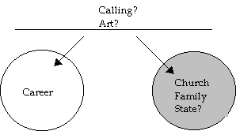
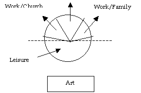
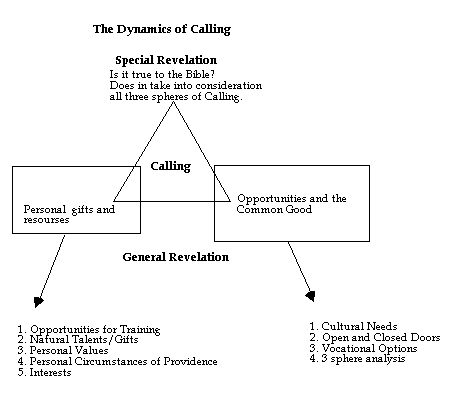
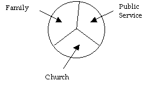

<html xmlns:v="urn:schemas-microsoft-com:vml"
xmlns:o="urn:schemas-microsoft-com:office:office"
xmlns:w="urn:schemas-microsoft-com:office:word"
xmlns="http://www.w3.org/TR/REC-html40">

<head>
<meta http-equiv=Content-Type content="text/html; charset=windows-1252">
<meta name=ProgId content=Word.Document>
<meta name=Generator content="Microsoft Word 9">
<meta name=Originator content="Microsoft Word 9">
<link rel=File-List href="./lifeasaworkofart_files/filelist.xml">
<link rel=Edit-Time-Data href="./lifeasaworkofart_files/editdata.mso">
<link rel=OLE-Object-Data href="./lifeasaworkofart_files/oledata.mso">
<!--[if !mso]>
<style>
v\:* {behavior:url(#default#VML);}
o\:* {behavior:url(#default#VML);}
w\:* {behavior:url(#default#VML);}
.shape {behavior:url(#default#VML);}
</style>
<![endif]-->
<title>“A Work of Art”</title>
<!--[if gte mso 9]><xml>
 <o:DocumentProperties>
  <o:Author>Preston Graham, Jr. </o:Author>
  <o:Template>Normal</o:Template>
  <o:LastAuthor>Heather A. Lindman</o:LastAuthor>
  <o:Revision>2</o:Revision>
  <o:TotalTime>6</o:TotalTime>
  <o:Created>2002-02-16T23:18:00Z</o:Created>
  <o:LastSaved>2002-02-16T23:18:00Z</o:LastSaved>
  <o:Pages>67</o:Pages>
  <o:Words>27863</o:Words>
  <o:Characters>158822</o:Characters>
  <o:Company>Christ Presbyterian Church, New Haven</o:Company>
  <o:Lines>1323</o:Lines>
  <o:Paragraphs>317</o:Paragraphs>
  <o:CharactersWithSpaces>195044</o:CharactersWithSpaces>
  <o:Version>9.2720</o:Version>
 </o:DocumentProperties>
</xml><![endif]--><!--[if gte mso 9]><xml>
 <w:WordDocument>
  <w:DoNotHyphenateCaps/>
  <w:PunctuationKerning/>
  <w:DrawingGridHorizontalSpacing>6 pt</w:DrawingGridHorizontalSpacing>
  <w:DrawingGridVerticalSpacing>6 pt</w:DrawingGridVerticalSpacing>
  <w:DisplayHorizontalDrawingGridEvery>0</w:DisplayHorizontalDrawingGridEvery>
  <w:DisplayVerticalDrawingGridEvery>3</w:DisplayVerticalDrawingGridEvery>
  <w:UseMarginsForDrawingGridOrigin/>
  <w:Compatibility>
   <w:FootnoteLayoutLikeWW8/>
   <w:ShapeLayoutLikeWW8/>
   <w:AlignTablesRowByRow/>
   <w:ForgetLastTabAlignment/>
   <w:LayoutRawTableWidth/>
   <w:LayoutTableRowsApart/>
  </w:Compatibility>
 </w:WordDocument>
</xml><![endif]-->
<style>
<!--
 /* Font Definitions */
@font-face
	{font-family:Times;
	panose-1:0 0 0 0 0 0 0 0 0 0;
	mso-font-alt:"Times New Roman";
	mso-font-charset:0;
	mso-generic-font-family:roman;
	mso-font-format:other;
	mso-font-pitch:variable;
	mso-font-signature:3 0 0 0 1 0;}
@font-face
	{font-family:Courier;
	panose-1:0 0 0 0 0 0 0 0 0 0;
	mso-font-alt:"Courier New";
	mso-font-charset:0;
	mso-generic-font-family:modern;
	mso-font-format:other;
	mso-font-pitch:fixed;
	mso-font-signature:3 0 0 0 1 0;}
@font-face
	{font-family:Geneva;
	panose-1:0 0 0 0 0 0 0 0 0 0;
	mso-font-alt:Arial;
	mso-font-charset:0;
	mso-generic-font-family:swiss;
	mso-font-format:other;
	mso-font-pitch:variable;
	mso-font-signature:3 0 0 0 1 0;}
@font-face
	{font-family:Wingdings;
	panose-1:5 0 0 0 0 0 0 0 0 0;
	mso-font-charset:2;
	mso-generic-font-family:auto;
	mso-font-pitch:variable;
	mso-font-signature:0 268435456 0 0 -2147483648 0;}
@font-face
	{font-family:Palatino;
	panose-1:0 0 0 0 0 0 0 0 0 0;
	mso-font-alt:"Book Antiqua";
	mso-font-charset:0;
	mso-generic-font-family:auto;
	mso-font-format:other;
	mso-font-pitch:variable;
	mso-font-signature:3 0 0 0 1 0;}
@font-face
	{font-family:Garamond;
	panose-1:2 2 4 4 3 3 1 1 8 3;
	mso-font-charset:0;
	mso-generic-font-family:roman;
	mso-font-pitch:variable;
	mso-font-signature:647 0 0 0 159 0;}
@font-face
	{font-family:Helena;
	panose-1:0 0 0 0 0 0 0 0 0 0;
	mso-font-alt:"Courier New";
	mso-font-charset:0;
	mso-generic-font-family:auto;
	mso-font-format:other;
	mso-font-pitch:variable;
	mso-font-signature:3 0 0 0 1 0;}
 /* Style Definitions */
p.MsoNormal, li.MsoNormal, div.MsoNormal
	{mso-style-parent:"";
	margin:0in;
	margin-bottom:.0001pt;
	mso-pagination:widow-orphan;
	text-autospace:none;
	font-size:12.0pt;
	mso-ansi-font-size:10.0pt;
	font-family:Palatino;
	mso-fareast-font-family:"Times New Roman";
	mso-bidi-font-family:"Times New Roman";}
h1
	{mso-style-next:Normal;
	margin:0in;
	margin-bottom:.0001pt;
	text-align:center;
	mso-pagination:widow-orphan;
	page-break-after:avoid;
	mso-outline-level:1;
	text-autospace:none;
	font-size:12.0pt;
	mso-ansi-font-size:10.0pt;
	font-family:Palatino;
	mso-font-kerning:0pt;}
h2
	{mso-style-next:Normal;
	margin:0in;
	margin-bottom:.0001pt;
	mso-pagination:widow-orphan;
	page-break-after:avoid;
	mso-outline-level:2;
	text-autospace:none;
	font-size:12.0pt;
	mso-ansi-font-size:10.0pt;
	font-family:Palatino;}
h3
	{mso-style-next:Normal;
	margin-top:0in;
	margin-right:0in;
	margin-bottom:0in;
	margin-left:.25in;
	margin-bottom:.0001pt;
	mso-pagination:widow-orphan;
	page-break-after:avoid;
	mso-outline-level:3;
	text-autospace:none;
	font-size:12.0pt;
	mso-ansi-font-size:10.0pt;
	font-family:Palatino;}
h4
	{mso-style-next:Normal;
	margin-top:0in;
	margin-right:0in;
	margin-bottom:0in;
	margin-left:.5in;
	margin-bottom:.0001pt;
	text-indent:-.5in;
	mso-pagination:widow-orphan;
	page-break-after:avoid;
	mso-outline-level:4;
	mso-list:l6 level1 lfo2;
	tab-stops:list .5in;
	text-autospace:none;
	font-size:12.0pt;
	mso-ansi-font-size:10.0pt;
	font-family:Palatino;}
h5
	{mso-style-next:Normal;
	margin-top:0in;
	margin-right:0in;
	margin-bottom:0in;
	margin-left:.5in;
	margin-bottom:.0001pt;
	mso-pagination:widow-orphan;
	page-break-after:avoid;
	mso-outline-level:5;
	text-autospace:none;
	font-size:12.0pt;
	mso-ansi-font-size:10.0pt;
	font-family:Palatino;}
h6
	{mso-style-next:Normal;
	margin-top:0in;
	margin-right:0in;
	margin-bottom:0in;
	margin-left:.5in;
	margin-bottom:.0001pt;
	text-indent:-.25in;
	mso-pagination:widow-orphan;
	page-break-after:avoid;
	mso-outline-level:6;
	mso-list:l8 level1 lfo4;
	text-autospace:none;
	font-size:12.0pt;
	mso-ansi-font-size:10.0pt;
	font-family:Palatino;}
p.MsoHeading7, li.MsoHeading7, div.MsoHeading7
	{mso-style-next:Normal;
	margin:0in;
	margin-bottom:.0001pt;
	text-indent:.5in;
	mso-pagination:widow-orphan;
	page-break-after:avoid;
	mso-outline-level:7;
	text-autospace:none;
	font-size:12.0pt;
	mso-ansi-font-size:10.0pt;
	font-family:Palatino;
	mso-fareast-font-family:"Times New Roman";
	mso-bidi-font-family:"Times New Roman";
	font-weight:bold;}
p.MsoHeading8, li.MsoHeading8, div.MsoHeading8
	{mso-style-next:Normal;
	margin-top:0in;
	margin-right:0in;
	margin-bottom:0in;
	margin-left:22.5pt;
	margin-bottom:.0001pt;
	mso-pagination:widow-orphan;
	page-break-after:avoid;
	mso-outline-level:8;
	text-autospace:none;
	font-size:12.0pt;
	mso-ansi-font-size:10.0pt;
	font-family:Palatino;
	mso-fareast-font-family:"Times New Roman";
	mso-bidi-font-family:"Times New Roman";
	font-weight:bold;}
p.MsoHeading9, li.MsoHeading9, div.MsoHeading9
	{mso-style-next:Normal;
	margin-top:0in;
	margin-right:.2pt;
	margin-bottom:0in;
	margin-left:.75in;
	margin-bottom:.0001pt;
	line-height:12.0pt;
	mso-pagination:widow-orphan;
	page-break-after:avoid;
	mso-outline-level:9;
	tab-stops:.5in 1.0in 1.5in 2.0in 2.5in 3.0in 3.5in 4.0in 4.5in 5.0in 5.5in 6.0in 6.5in 7.0in 7.5in 8.0in 8.5in 9.0in 9.5in 10.0in 10.5in 11.0in 11.5in;
	text-autospace:none;
	font-size:12.0pt;
	mso-ansi-font-size:10.0pt;
	font-family:Times;
	mso-fareast-font-family:"Times New Roman";
	mso-bidi-font-family:"Times New Roman";
	font-style:italic;}
p.MsoFootnoteText, li.MsoFootnoteText, div.MsoFootnoteText
	{margin:0in;
	margin-bottom:.0001pt;
	mso-pagination:widow-orphan;
	text-autospace:none;
	font-size:10.0pt;
	font-family:Palatino;
	mso-fareast-font-family:"Times New Roman";
	mso-bidi-font-family:"Times New Roman";
	color:black;}
p.MsoFooter, li.MsoFooter, div.MsoFooter
	{margin:0in;
	margin-bottom:.0001pt;
	mso-pagination:widow-orphan;
	tab-stops:center 3.0in right 6.0in;
	text-autospace:none;
	font-size:12.0pt;
	mso-ansi-font-size:10.0pt;
	font-family:Palatino;
	mso-fareast-font-family:"Times New Roman";
	mso-bidi-font-family:"Times New Roman";}
span.MsoFootnoteReference
	{vertical-align:super;}
p.MsoTitle, li.MsoTitle, div.MsoTitle
	{margin:0in;
	margin-bottom:.0001pt;
	text-align:center;
	mso-pagination:widow-orphan;
	text-autospace:none;
	font-size:12.0pt;
	mso-ansi-font-size:10.0pt;
	font-family:Palatino;
	mso-fareast-font-family:"Times New Roman";
	mso-bidi-font-family:"Times New Roman";
	font-weight:bold;
	font-style:italic;}
p.MsoBodyText, li.MsoBodyText, div.MsoBodyText
	{margin:0in;
	margin-bottom:.0001pt;
	mso-pagination:widow-orphan;
	text-autospace:none;
	font-size:10.0pt;
	font-family:Palatino;
	mso-fareast-font-family:"Times New Roman";
	mso-bidi-font-family:"Times New Roman";}
p.MsoBodyTextIndent, li.MsoBodyTextIndent, div.MsoBodyTextIndent
	{margin:0in;
	margin-bottom:.0001pt;
	text-align:justify;
	mso-pagination:widow-orphan;
	text-autospace:none;
	font-size:10.0pt;
	font-family:Palatino;
	mso-fareast-font-family:"Times New Roman";
	mso-bidi-font-family:"Times New Roman";}
p.MsoSubtitle, li.MsoSubtitle, div.MsoSubtitle
	{margin:0in;
	margin-bottom:.0001pt;
	text-align:center;
	mso-pagination:widow-orphan;
	text-autospace:none;
	font-size:12.0pt;
	mso-ansi-font-size:10.0pt;
	font-family:Palatino;
	mso-fareast-font-family:"Times New Roman";
	mso-bidi-font-family:"Times New Roman";
	font-weight:bold;}
p.MsoBodyText3, li.MsoBodyText3, div.MsoBodyText3
	{margin:0in;
	margin-bottom:.0001pt;
	mso-pagination:widow-orphan;
	text-autospace:none;
	font-size:9.0pt;
	font-family:Palatino;
	mso-fareast-font-family:"Times New Roman";
	mso-bidi-font-family:"Times New Roman";}
p.MsoBodyTextIndent2, li.MsoBodyTextIndent2, div.MsoBodyTextIndent2
	{margin-top:0in;
	margin-right:0in;
	margin-bottom:0in;
	margin-left:.25in;
	margin-bottom:.0001pt;
	text-align:justify;
	mso-pagination:none;
	text-autospace:none;
	font-size:12.0pt;
	mso-ansi-font-size:10.0pt;
	font-family:Palatino;
	mso-fareast-font-family:"Times New Roman";
	mso-bidi-font-family:"Times New Roman";}
p.MsoBodyTextIndent3, li.MsoBodyTextIndent3, div.MsoBodyTextIndent3
	{margin-top:0in;
	margin-right:0in;
	margin-bottom:0in;
	margin-left:58.5pt;
	margin-bottom:.0001pt;
	text-align:justify;
	mso-pagination:none;
	text-autospace:none;
	font-size:12.0pt;
	mso-ansi-font-size:10.0pt;
	font-family:Palatino;
	mso-fareast-font-family:"Times New Roman";
	mso-bidi-font-family:"Times New Roman";}
p.MsoBlockText, li.MsoBlockText, div.MsoBlockText
	{margin-top:0in;
	margin-right:.5in;
	margin-bottom:0in;
	margin-left:.5in;
	margin-bottom:.0001pt;
	text-align:justify;
	mso-pagination:none;
	text-autospace:none;
	font-size:12.0pt;
	mso-ansi-font-size:10.0pt;
	font-family:Palatino;
	mso-fareast-font-family:"Times New Roman";
	mso-bidi-font-family:"Times New Roman";}
p.text, li.text, div.text
	{mso-style-name:text;
	margin:0in;
	margin-bottom:.0001pt;
	text-align:justify;
	mso-pagination:widow-orphan;
	text-autospace:none;
	font-size:12.0pt;
	mso-ansi-font-size:10.0pt;
	font-family:"Times New Roman";
	mso-fareast-font-family:"Times New Roman";}
p.footnotetex, li.footnotetex, div.footnotetex
	{mso-style-name:"footnote tex";
	mso-style-parent:"";
	margin:0in;
	margin-bottom:.0001pt;
	line-height:12.0pt;
	mso-pagination:none;
	text-autospace:none;
	font-size:10.0pt;
	font-family:Courier;
	mso-fareast-font-family:"Times New Roman";
	mso-bidi-font-family:"Times New Roman";}
p.text1, li.text1, div.text1
	{mso-style-name:text1;
	margin:0in;
	margin-bottom:.0001pt;
	text-align:justify;
	mso-pagination:widow-orphan;
	text-autospace:none;
	font-size:12.0pt;
	mso-ansi-font-size:10.0pt;
	font-family:"Times New Roman";
	mso-fareast-font-family:"Times New Roman";}
@page Section1
	{size:8.5in 11.0in;
	margin:1.0in 1.0in 1.0in 1.0in;
	mso-header-margin:.5in;
	mso-footer-margin:.5in;
	mso-paper-source:0;}
div.Section1
	{page:Section1;}
@page Section2
	{size:8.5in 11.0in;
	margin:1.0in 1.0in 1.0in 1.0in;
	mso-header-margin:.5in;
	mso-footer-margin:.5in;
	mso-columns:2 even 1.0in;
	mso-paper-source:0;}
div.Section2
	{page:Section2;}
@page Section3
	{size:8.5in 11.0in;
	margin:1.0in 1.25in 1.0in 1.25in;
	mso-header-margin:.5in;
	mso-footer-margin:.5in;
	mso-footer:url("./lifeasaworkofart_files/header.htm") f3;
	mso-paper-source:0;}
div.Section3
	{page:Section3;}
 /* List Definitions */
@list l0
	{mso-list-id:1;
	mso-list-type:simple;
	mso-list-template-ids:66569;}
@list l0:level1
	{mso-level-number-format:bullet;
	mso-level-text:\F0B7;
	mso-level-tab-stop:.25in;
	mso-level-number-position:left;
	margin-left:.25in;
	text-indent:-.25in;
	font-family:Symbol;
	mso-bidi-font-family:"Times New Roman";}
@list l1
	{mso-list-id:2;
	mso-list-type:simple;
	mso-list-template-ids:984073;}
@list l1:level1
	{mso-level-tab-stop:.25in;
	mso-level-number-position:left;
	margin-left:.25in;
	text-indent:-.25in;}
@list l2
	{mso-list-id:3;
	mso-list-type:simple;
	mso-list-template-ids:0;}
@list l2:level1
	{mso-level-start-at:2;
	mso-level-number-format:bullet;
	mso-level-text:\F06E;
	mso-level-tab-stop:.25in;
	mso-level-number-position:left;
	margin-left:.25in;
	text-indent:-.25in;
	font-family:Wingdings;
	mso-bidi-font-family:"Times New Roman";
	mso-ansi-font-weight:bold;}
@list l3
	{mso-list-id:5;
	mso-list-type:simple;
	mso-list-template-ids:984073;}
@list l3:level1
	{mso-level-tab-stop:.25in;
	mso-level-number-position:left;
	margin-left:.25in;
	text-indent:-.25in;}
@list l4
	{mso-list-id:8;
	mso-list-type:simple;
	mso-list-template-ids:984073;}
@list l4:level1
	{mso-level-start-at:3;
	mso-level-tab-stop:.25in;
	mso-level-number-position:left;
	margin-left:.25in;
	text-indent:-.25in;}
@list l5
	{mso-list-id:12;
	mso-list-type:simple;
	mso-list-template-ids:1246217;}
@list l5:level1
	{mso-level-number-format:roman-upper;
	mso-level-tab-stop:.5in;
	mso-level-number-position:left;
	text-indent:-.5in;}
@list l6
	{mso-list-id:13;
	mso-list-type:simple;
	mso-list-template-ids:0;}
@list l6:level1
	{mso-level-number-format:roman-upper;
	mso-level-style-link:"Heading 4";
	mso-level-tab-stop:.5in;
	mso-level-number-position:left;
	text-indent:-.5in;}
@list l7
	{mso-list-id:14;
	mso-list-type:simple;
	mso-list-template-ids:1377289;}
@list l7:level1
	{mso-level-number-format:alpha-upper;
	mso-level-tab-stop:.25in;
	mso-level-number-position:left;
	margin-left:.25in;
	text-indent:-.25in;}
@list l8
	{mso-list-id:15;
	mso-list-type:simple;
	mso-list-template-ids:0;}
@list l8:level1
	{mso-level-number-format:alpha-upper;
	mso-level-style-link:"Heading 6";
	mso-level-tab-stop:.75in;
	mso-level-number-position:left;
	margin-left:.75in;
	text-indent:-.25in;}
@list l9
	{mso-list-id:16;
	mso-list-type:simple;
	mso-list-template-ids:984073;}
@list l9:level1
	{mso-level-tab-stop:.25in;
	mso-level-number-position:left;
	margin-left:.25in;
	text-indent:-.25in;}
@list l10
	{mso-list-id:17;
	mso-list-type:simple;
	mso-list-template-ids:0;}
@list l10:level1
	{mso-level-start-at:2;
	mso-level-text:%1;
	mso-level-tab-stop:.25in;
	mso-level-number-position:left;
	margin-left:.25in;
	text-indent:-.25in;
	text-decoration:underline;
	text-underline:single;}
@list l11
	{mso-list-id:18;
	mso-list-type:simple;
	mso-list-template-ids:0;}
@list l11:level1
	{mso-level-tab-stop:1.25in;
	mso-level-number-position:left;
	margin-left:1.25in;
	text-indent:-.25in;}
@list l12
	{mso-list-id:19;
	mso-list-type:simple;
	mso-list-template-ids:0;}
@list l12:level1
	{mso-level-tab-stop:.75in;
	mso-level-number-position:left;
	margin-left:.75in;
	text-indent:-.25in;}
@list l13
	{mso-list-id:20;
	mso-list-type:simple;
	mso-list-template-ids:0;}
@list l13:level1
	{mso-level-number-format:alpha-lower;
	mso-level-tab-stop:.75in;
	mso-level-number-position:left;
	margin-left:.75in;
	text-indent:-.25in;}
@list l14
	{mso-list-id:22;
	mso-list-type:simple;
	mso-list-template-ids:0;}
@list l14:level1
	{mso-level-tab-stop:.75in;
	mso-level-number-position:left;
	margin-left:.75in;
	text-indent:-.25in;}
@list l15
	{mso-list-id:23;
	mso-list-type:simple;
	mso-list-template-ids:0;}
@list l15:level1
	{mso-level-tab-stop:1.0in;
	mso-level-number-position:left;
	margin-left:1.0in;
	text-indent:-.25in;}
@list l16
	{mso-list-id:24;
	mso-list-type:simple;
	mso-list-template-ids:0;}
@list l16:level1
	{mso-level-number-format:alpha-lower;
	mso-level-tab-stop:99.0pt;
	mso-level-number-position:left;
	margin-left:99.0pt;
	text-indent:-.25in;}
@list l17
	{mso-list-id:25;
	mso-list-type:simple;
	mso-list-template-ids:0;}
@list l17:level1
	{mso-level-number-format:alpha-lower;
	mso-level-tab-stop:.5in;
	mso-level-number-position:left;
	text-indent:-.25in;}
@list l18
	{mso-list-id:26;
	mso-list-type:simple;
	mso-list-template-ids:0;}
@list l18:level1
	{mso-level-start-at:5;
	mso-level-number-format:alpha-lower;
	mso-level-tab-stop:.5in;
	mso-level-number-position:left;
	text-indent:-.25in;}
@list l19
	{mso-list-id:27;
	mso-list-type:simple;
	mso-list-template-ids:0;}
@list l19:level1
	{mso-level-number-format:alpha-lower;
	mso-level-text:"%1\)";
	mso-level-tab-stop:1.0in;
	mso-level-number-position:left;
	margin-left:1.0in;
	text-indent:-.25in;}
@list l20
	{mso-list-id:28;
	mso-list-type:simple;
	mso-list-template-ids:0;}
@list l20:level1
	{mso-level-number-format:alpha-upper;
	mso-level-text:"%1\)";
	mso-level-tab-stop:1.25in;
	mso-level-number-position:left;
	margin-left:1.25in;
	text-indent:-.25in;}
@list l21
	{mso-list-id:29;
	mso-list-type:simple;
	mso-list-template-ids:0;}
@list l21:level1
	{mso-level-number-format:alpha-lower;
	mso-level-text:"%1\)";
	mso-level-tab-stop:1.25in;
	mso-level-number-position:left;
	margin-left:1.25in;
	text-indent:-.25in;}
ol
	{margin-bottom:0in;}
ul
	{margin-bottom:0in;}
-->
</style>
<!--[if gte mso 9]><xml>
 <o:shapedefaults v:ext="edit" spidmax="1070"/>
</xml><![endif]--><!--[if gte mso 9]><xml>
 <o:shapelayout v:ext="edit">
  <o:idmap v:ext="edit" data="1"/>
 </o:shapelayout></xml><![endif]-->
</head>

<body lang=EN-US style='tab-interval:.5in;text-justify-trim:punctuation'>

<div class=Section1>

<p class=MsoTitle><span style='font-size:10.0pt;mso-bidi-font-size:12.0pt'>When
Life Is A “Work of Art”<o:p></o:p></span></p>

<h1><span style='font-size:10.0pt;mso-bidi-font-size:12.0pt'>The Rediscovery of
Biblical Callings <o:p></o:p></span></h1>

<p class=MsoNormal align=center style='text-align:center'><b><span
style='font-size:10.0pt;mso-bidi-font-size:12.0pt'><![if !supportEmptyParas]>&nbsp;<![endif]><o:p></o:p></span></b></p>

<p class=MsoNormal align=center style='text-align:center'><b><span
style='font-size:10.0pt;mso-bidi-font-size:12.0pt'><![if !supportEmptyParas]>&nbsp;<![endif]><o:p></o:p></span></b></p>

<p class=MsoNormal><b><span style='font-size:10.0pt;mso-bidi-font-size:12.0pt'>Introduction:<span
style="mso-spacerun: yes">  </span><o:p></o:p></span></b></p>

<p class=MsoNormal><b><span style='font-size:10.0pt;mso-bidi-font-size:12.0pt'><![if !supportEmptyParas]>&nbsp;<![endif]><o:p></o:p></span></b></p>

<h2><span style='font-size:10.0pt;mso-bidi-font-size:12.0pt'>A. An ancient
Conversation Revisited<o:p></o:p></span></h2>

<p class=MsoNormal style='tab-stops:0in .5in 1.0in 1.5in 2.0in 2.5in 3.0in 3.5in 4.0in 4.5in 5.0in 5.5in 6.0in 6.5in 7.0in 7.5in 8.0in 8.5in 9.0in 9.5in 10.0in 10.5in 11.0in 11.5in'><span
style='font-size:10.0pt;mso-bidi-font-size:12.0pt;font-family:Times'>About a
year ago now, I listened to a lecture that Chris Clay entitled “Perspectives on
Art.”<span style="mso-spacerun: yes">  </span>In that lecture, I was reminded
of a conversation that took place about twenty-four hundred years ago in
Athens.<span style="mso-spacerun: yes">  </span>Here is how the conversation
went: <o:p></o:p></span></p>

<p class=MsoNormal style='margin-top:0in;margin-right:36.1pt;margin-bottom:
0in;margin-left:35.6pt;margin-bottom:.0001pt;line-height:12.0pt;tab-stops:0in .5in 1.0in 1.5in 2.0in 2.5in 3.0in 3.5in 4.0in 4.5in 5.0in 5.5in 6.0in 6.5in 7.0in 7.5in 8.0in 8.5in 9.0in 9.5in 10.0in 10.5in 11.0in 11.5in'><span
style='font-size:10.0pt;mso-bidi-font-size:12.0pt;font-family:Times'>Plato:<span
style="mso-spacerun: yes">  </span>“And so, Glaucon, when you happen to meet
those who praise Homer and say that he’s the poet who educated Greece, that
it’s worth taking up his works in order to learn how to manage and educate
people, and that one should arrange one’s whole life in accordance with his
teachings, you should welcome these people and treat them as friends, since
they’re as good as they’re capable of being, and you should agree that Homer is
the most poetic of the tragedians and the first among them.<span
style="mso-spacerun: yes">  </span><u>But </u>you should also know that hymns
to the gods and eulogies to good people are the only poetry we can admit into
our city.<span style="mso-spacerun: yes">  </span>If you admit the
pleasure-giving Muse, whether in lyric or epic poetry, pleasure and pain will
be kings in your city instead of law or the thing that everyone has always
believed to be best, namely, reason.<o:p></o:p></span></p>

<p class=MsoNormal style='margin-top:0in;margin-right:36.1pt;margin-bottom:
0in;margin-left:35.6pt;margin-bottom:.0001pt;line-height:12.0pt;tab-stops:0in .5in 1.0in 1.5in 2.0in 2.5in 3.0in 3.5in 4.0in 4.5in 5.0in 5.5in 6.0in 6.5in 7.0in 7.5in 8.0in 8.5in 9.0in 9.5in 10.0in 10.5in 11.0in 11.5in'><span
style='font-size:10.0pt;mso-bidi-font-size:12.0pt;font-family:Times'><![if !supportEmptyParas]>&nbsp;<![endif]><o:p></o:p></span></p>

<p class=MsoNormal style='margin-top:0in;margin-right:36.1pt;margin-bottom:
0in;margin-left:35.6pt;margin-bottom:.0001pt;line-height:12.0pt;tab-stops:0in .5in 1.0in 1.5in 2.0in 2.5in 3.0in 3.5in 4.0in 4.5in 5.0in 5.5in 6.0in 6.5in 7.0in 7.5in 8.0in 8.5in 9.0in 9.5in 10.0in 10.5in 11.0in 11.5in'><span
style='font-size:10.0pt;mso-bidi-font-size:12.0pt;font-family:Times'>Glaucon:<span
style="mso-spacerun: yes">  </span>“That’s absolutely true.<o:p></o:p></span></p>

<p class=MsoNormal style='margin-top:0in;margin-right:36.1pt;margin-bottom:
0in;margin-left:35.6pt;margin-bottom:.0001pt;line-height:12.0pt;tab-stops:0in .5in 1.0in 1.5in 2.0in 2.5in 3.0in 3.5in 4.0in 4.5in 5.0in 5.5in 6.0in 6.5in 7.0in 7.5in 8.0in 8.5in 9.0in 9.5in 10.0in 10.5in 11.0in 11.5in'><span
style='font-size:10.0pt;mso-bidi-font-size:12.0pt;font-family:Times'><![if !supportEmptyParas]>&nbsp;<![endif]><o:p></o:p></span></p>

<p class=MsoNormal style='margin-top:0in;margin-right:36.1pt;margin-bottom:
0in;margin-left:35.6pt;margin-bottom:.0001pt;line-height:12.0pt;tab-stops:0in .5in 1.0in 1.5in 2.0in 2.5in 3.0in 3.5in 4.0in 4.5in 5.0in 5.5in 6.0in 6.5in 7.0in 7.5in 8.0in 8.5in 9.0in 9.5in 10.0in 10.5in 11.0in 11.5in'><span
style='font-size:10.0pt;mso-bidi-font-size:12.0pt;font-family:Times'>Plato:
“Then let this be our defense – now that we’ve returned to the topic of poetry
– that, in view of its nature, we had reason to banish it from the city
earlier, for our argument compelled us to do so.<span style="mso-spacerun:
yes">  </span>But in case we are charged with a certain harshness and lack of
sophistication, let’s also tell poetry that there is an ancient quarrel between
it and philosophy....<span style="mso-spacerun: yes">  </span>Nonetheless, if
the poetry that aims at pleasure and imitation has any argument to bring
forward that proves it ought to have a place in a well-governed city, we at
least would be glad to admit it, for we are well aware of the charm it
exercises.<span style="mso-spacerun: yes">  </span>But, be that as it may, to
betray what one believes to be the truth is impious.<span style="mso-spacerun:
yes">  </span>What about you, Glaucon, don’t you feel the charm of the
pleasure-giving Muse, especially when you study her through the eyes of Homer?<o:p></o:p></span></p>

<p class=MsoNormal style='margin-top:0in;margin-right:36.1pt;margin-bottom:
0in;margin-left:35.6pt;margin-bottom:.0001pt;line-height:12.0pt;tab-stops:0in .5in 1.0in 1.5in 2.0in 2.5in 3.0in 3.5in 4.0in 4.5in 5.0in 5.5in 6.0in 6.5in 7.0in 7.5in 8.0in 8.5in 9.0in 9.5in 10.0in 10.5in 11.0in 11.5in'><span
style='font-size:10.0pt;mso-bidi-font-size:12.0pt;font-family:Times'><![if !supportEmptyParas]>&nbsp;<![endif]><o:p></o:p></span></p>

<p class=MsoNormal style='margin-top:0in;margin-right:36.1pt;margin-bottom:
0in;margin-left:35.6pt;margin-bottom:.0001pt;line-height:12.0pt;tab-stops:0in .5in 1.0in 1.5in 2.0in 2.5in 3.0in 3.5in 4.0in 4.5in 5.0in 5.5in 6.0in 6.5in 7.0in 7.5in 8.0in 8.5in 9.0in 9.5in 10.0in 10.5in 11.0in 11.5in'><span
style='font-size:10.0pt;mso-bidi-font-size:12.0pt;font-family:Times'>Glaucon:
“Very much so.<o:p></o:p></span></p>

<p class=MsoNormal style='margin-top:0in;margin-right:36.1pt;margin-bottom:
0in;margin-left:35.6pt;margin-bottom:.0001pt;line-height:12.0pt;tab-stops:0in .5in 1.0in 1.5in 2.0in 2.5in 3.0in 3.5in 4.0in 4.5in 5.0in 5.5in 6.0in 6.5in 7.0in 7.5in 8.0in 8.5in 9.0in 9.5in 10.0in 10.5in 11.0in 11.5in'><span
style='font-size:10.0pt;mso-bidi-font-size:12.0pt;font-family:Times'><![if !supportEmptyParas]>&nbsp;<![endif]><o:p></o:p></span></p>

<p class=MsoNormal style='margin-top:0in;margin-right:36.1pt;margin-bottom:
0in;margin-left:35.6pt;margin-bottom:.0001pt;line-height:12.0pt;tab-stops:0in .5in 1.0in 1.5in 2.0in 2.5in 3.0in 3.5in 4.0in 4.5in 5.0in 5.5in 6.0in 6.5in 7.0in 7.5in 8.0in 8.5in 9.0in 9.5in 10.0in 10.5in 11.0in 11.5in'><span
style='font-size:10.0pt;mso-bidi-font-size:12.0pt;font-family:Times'>Plato:
“Therefore, isn’t it <u>just</u> that such poetry should return from exile when
it has successfully defended itself, whether in lyric or in any other meter?<o:p></o:p></span></p>

<p class=MsoNormal style='margin-top:0in;margin-right:36.1pt;margin-bottom:
0in;margin-left:35.6pt;margin-bottom:.0001pt;line-height:12.0pt;tab-stops:0in .5in 1.0in 1.5in 2.0in 2.5in 3.0in 3.5in 4.0in 4.5in 5.0in 5.5in 6.0in 6.5in 7.0in 7.5in 8.0in 8.5in 9.0in 9.5in 10.0in 10.5in 11.0in 11.5in'><span
style='font-size:10.0pt;mso-bidi-font-size:12.0pt;font-family:Times'>Claucon:
“Certainly.<o:p></o:p></span></p>

<p class=MsoNormal style='margin-top:0in;margin-right:36.1pt;margin-bottom:
0in;margin-left:35.6pt;margin-bottom:.0001pt;line-height:12.0pt;tab-stops:0in .5in 1.0in 1.5in 2.0in 2.5in 3.0in 3.5in 4.0in 4.5in 5.0in 5.5in 6.0in 6.5in 7.0in 7.5in 8.0in 8.5in 9.0in 9.5in 10.0in 10.5in 11.0in 11.5in'><span
style='font-size:10.0pt;mso-bidi-font-size:12.0pt;font-family:Times'>Plato:
“Then we’ll allow its defenders, who aren’t poets themselves but lovers of
poetry, to speak in prose on its behalf and to show that it not only gives
pleasure but is beneficial both to constitutions and to human life.<span
style="mso-spacerun: yes">  </span>Indeed, we’ll listen to them graciously, for
we’d certainly profit if poetry were shown to be not only pleasant but also
beneficial.”<span style='mso-tab-count:1'>    </span>(Plato, <i>Republic</i>,
X.606E-607E, trans. by G. M. A. Grube)<o:p></o:p></span></p>

<p class=MsoNormal style='margin-top:0in;margin-right:36.1pt;margin-bottom:
0in;margin-left:35.6pt;margin-bottom:.0001pt;line-height:12.0pt;tab-stops:0in .5in 1.0in 1.5in 2.0in 2.5in 3.0in 3.5in 4.0in 4.5in 5.0in 5.5in 6.0in 6.5in 7.0in 7.5in 8.0in 8.5in 9.0in 9.5in 10.0in 10.5in 11.0in 11.5in'><span
style='font-size:10.0pt;mso-bidi-font-size:12.0pt;font-family:Times'><![if !supportEmptyParas]>&nbsp;<![endif]><o:p></o:p></span></p>

<p class=MsoBlockText style='margin-left:0in'><span style='font-size:10.0pt;
mso-bidi-font-size:12.0pt'>Clay notes, “Plato is famous, or rather infamous,
for banning the poets from his ideal city because poetry can arouse emotions
which subvert the control of reason through intense emotional affect…. “<o:p></o:p></span></p>

<p class=MsoBlockText style='margin-left:0in'><span style='font-size:10.0pt;
mso-bidi-font-size:12.0pt'><![if !supportEmptyParas]>&nbsp;<![endif]><o:p></o:p></span></p>

<p class=MsoBlockText style='margin-left:0in'><span style='font-size:10.0pt;
mso-bidi-font-size:12.0pt'>As again noted by Chris Clay, another reason Plato
banned the poets was because poetry – “as the chief representative art form in
addition to music and painting<span style="mso-spacerun: yes">  </span>– merely
created bad copies of the perfect Ideas or Forms that existed in Heaven, the
“art” was not only banned from the ideal city, it was likewise banned from true
work itself… “<o:p></o:p></span></p>

<p class=MsoBlockText style='margin-left:0in'><span style='font-size:10.0pt;
mso-bidi-font-size:12.0pt'><![if !supportEmptyParas]>&nbsp;<![endif]><o:p></o:p></span></p>

<p class=MsoBlockText style='margin-left:0in'><span style='font-size:10.0pt;
mso-bidi-font-size:12.0pt'>In Plato’s city, true work was the work of reason
and philosophy, of which there was no “art” in it!<span style="mso-spacerun:
yes">  </span>Reason or the intellect was the best means of access to these
Forms which lay beyond the physical realm.<span style="mso-spacerun: yes"> 
</span>Reason provided the foundation for metaphysics or theology, and art had
nothing to add to our knowledge of the heavenly realm.<span
style="mso-spacerun: yes">  </span>At least, that is the standard view of
Plato’s attitude to art.<span style="mso-spacerun: yes">  </span><o:p></o:p></span></p>

<p class=MsoBlockText style='margin-left:0in'><span style='font-size:10.0pt;
mso-bidi-font-size:12.0pt'><![if !supportEmptyParas]>&nbsp;<![endif]><o:p></o:p></span></p>

<p class=MsoBlockText style='margin-left:0in'><span style='font-size:10.0pt;
mso-bidi-font-size:12.0pt'>But listen carefully… “What is so interesting about
the passage from the <i>Republic</i> cited above, is that Plato seems to
complete his final indictment of art with a wistful admission of poetry’s
lingering attractions, and even seems to hope that if the proper argument can
be marshaled then poetry might be welcomed back from exile….” Chris Clay
further notes: “Like many great thinkers, Plato takes a stand and follows what
he thinks is the truth, but is still haunted by doubt.<span
style="mso-spacerun: yes">  </span>Like many great thinkers, he admits a
tension into his system.<span style="mso-spacerun: yes">  </span>His
valorization of reason is haunted by the riddle that is art.<span
style="mso-spacerun: yes">  </span>Great art indeed is a great mystery, though
for this very reason, I will suggest, it should never be excluded from our lives…”<o:p></o:p></span></p>

<p class=MsoBlockText style='margin-left:0in'><span style='font-size:10.0pt;
mso-bidi-font-size:12.0pt'><![if !supportEmptyParas]>&nbsp;<![endif]><o:p></o:p></span></p>

<p class=MsoBlockText style='margin-left:0in'><span style='font-size:10.0pt;
mso-bidi-font-size:12.0pt'>Today, in the next two lectures, I would like to
accept Plato’s challenge and in his words seek to “successfully defended art,
whether in lyric or in any other meter,” such as to bring it back from exile
into the city, or shall we say, back to our daily lives of work! <o:p></o:p></span></p>

<p class=MsoBlockText style='margin-left:0in'><span style='font-size:10.0pt;
mso-bidi-font-size:12.0pt'><![if !supportEmptyParas]>&nbsp;<![endif]><o:p></o:p></span></p>

<p class=MsoBlockText style='margin-left:0in'><span style='font-size:10.0pt;
mso-bidi-font-size:12.0pt'>What is a Christian view of work?”: I will want to
make the case that work is by its very nature art—we will call it “Art-Work” as
related to the callings of God in this life! <o:p></o:p></span></p>

<p class=MsoNormal style='margin-left:.25in'><b><span style='font-size:10.0pt;
mso-bidi-font-size:12.0pt'><![if !supportEmptyParas]>&nbsp;<![endif]><o:p></o:p></span></b></p>

<h2><span style='font-size:10.0pt;mso-bidi-font-size:12.0pt'>B. Definition of
Art-Work<o:p></o:p></span></h2>

<p class=MsoNormal><span style='font-size:10.0pt;mso-bidi-font-size:12.0pt'><![if !supportEmptyParas]>&nbsp;<![endif]><o:p></o:p></span></p>

<p class=MsoNormal style='text-indent:.5in'><span style='font-size:10.0pt;
mso-bidi-font-size:12.0pt'>And lest you think I am being wildly creative at
this point—I will of course assume the task of argument as from the prose and
meter of Holy Scripture, even as was to a degree admitted by the Reformers.. <o:p></o:p></span></p>

<p class=MsoNormal style='margin-left:.7pt;text-indent:.5in;tab-stops:0in .5in 1.0in 1.5in 2.0in 2.5in 3.0in 3.5in 4.0in 4.5in 5.0in 5.5in 6.0in 6.5in 7.0in 7.5in 8.0in 8.5in 9.0in 9.5in 10.0in 10.5in 11.0in 11.5in'><span
style='font-size:10.0pt;mso-bidi-font-size:12.0pt'>For in our tradition of
Reformed orthodoxy, we have a great appreciation for the sphere of common
grace.<span style="mso-spacerun: yes">  </span>This means that we highly esteem
the contribution to humankind that emerges in the work of all people, whether
Cleric or non-cleric, even Christian or non-Christian<span style="mso-spacerun:
yes">  </span>One of the first and best articulations of the meaning of common
grace can be found in Calvin’s <i>Institutes</i>:<span style="mso-spacerun:
yes">  </span>And notice especially Calvin’s use of the word “art” to describe
various common grace vocations… Listen</span><span style='font-size:10.0pt;
mso-bidi-font-size:12.0pt;font-family:Times'>:<o:p></o:p></span></p>

<p class=MsoNormal style='margin-top:0in;margin-right:36.1pt;margin-bottom:
0in;margin-left:35.6pt;margin-bottom:.0001pt;line-height:12.0pt;tab-stops:0in .5in 1.0in 1.5in 2.0in 2.5in 3.0in 3.5in 4.0in 4.5in 5.0in 5.5in 6.0in 6.5in 7.0in 7.5in 8.0in 8.5in 9.0in 9.5in 10.0in 10.5in 11.0in 11.5in'><span
style='font-size:11.0pt;font-family:Times'><span style="mso-spacerun:
yes"> </span>“Because knowledge of the <u>arts</u> is bestowed indiscriminately
upon pious and impious, it is rightly counted among natural gifts.<span
style="mso-spacerun: yes">  </span>Whenever we come upon these matters in
secular writers, let that admirable light of truth shining in them teach us that
the mind of man, though fallen and perverted from its wholeness, is
nevertheless clothed and ornamented with God’s excellent gifts.<span
style="mso-spacerun: yes">  </span>If we regard the Spirit of God as the sole
fountain of truth, we shall neither reject the truth itself, nor despise it wherever
it shall appear, unless we wish to dishonor the Spirit of God.<span
style="mso-spacerun: yes">  </span>For by holding the gifts of the spirit in
slight esteem, we condemn and reproach the Spirit himself.<span
style="mso-spacerun: yes">  </span>What then?<span style="mso-spacerun: yes"> 
</span>Shall we deny that the truth shone upon the ancient jurists who
established civic order and discipline with such equity?<span
style="mso-spacerun: yes">  </span>Shall we say that the philosophers were
blind in their fine observation and <u>artful</u> description of nature?<span
style="mso-spacerun: yes">  </span>Shall we say that those men were devoid of
understanding who conceived the <u>art</u> of disputation and taught us to
speak reasonably?<span style="mso-spacerun: yes">  </span>Shall we say that
they are insane who developed medicine, developing their labor to our
benefit?<span style="mso-spacerun: yes">  </span>What shall we say of the
mathematical sciences?<span style="mso-spacerun: yes">  </span>Shall we
consider them the ravings of madmen?<span style="mso-spacerun: yes"> 
</span>No, we cannot read the writings of the ancients on these subjects without
great admiration.<span style="mso-spacerun: yes">  </span>We marvel at them
because we are compelled to recognize how preeminent they are.<span
style="mso-spacerun: yes">  </span>But shall we count anything praiseworthy or
noble without recognizing at the same time that it comes from God?<span
style="mso-spacerun: yes">  </span>Let us be ashamed of such ingratitude, into
which not even the pagan poets fell, for they confessed the gods had invented
philosophy, laws, <u>and all useful arts</u>.<span style="mso-spacerun: yes"> 
</span>Those men whom Scripture calls “natural men” were, indeed, sharp and
penetrating in their investigation of inferior things.<span
style="mso-spacerun: yes">  </span>Let us, accordingly, learn by their example
how many gifts the Lord left to human nature even after it was despoiled of its
true good.”<span style="mso-spacerun: yes">  </span>(Calvin, <i>Institutes</i>,
II.ii.14-15; trans. by Ford Lewis Battles)<o:p></o:p></span></p>

<p class=MsoNormal style='margin-top:0in;margin-right:36.1pt;margin-bottom:
0in;margin-left:35.6pt;margin-bottom:.0001pt;line-height:12.0pt;tab-stops:0in .5in 1.0in 1.5in 2.0in 2.5in 3.0in 3.5in 4.0in 4.5in 5.0in 5.5in 6.0in 6.5in 7.0in 7.5in 8.0in 8.5in 9.0in 9.5in 10.0in 10.5in 11.0in 11.5in'><span
style='font-size:10.0pt;mso-bidi-font-size:12.0pt'><![if !supportEmptyParas]>&nbsp;<![endif]><o:p></o:p></span></p>

<p class=MsoBodyText><span style='font-size:12.0pt'>Calvin assumed, without as
much as a qualification,<span style="mso-spacerun: yes">  </span>that in the
work of philosophy, medicine, law, rhetoric, etc—that there is an “art.”<span
style="mso-spacerun: yes">  </span>What exactly did he mean?<span
style="mso-spacerun: yes">  </span>What was the work of medicine or law as a
work of art?<span style="mso-spacerun: yes">  </span><o:p></o:p></span></p>

<p class=MsoBodyText><span style='font-size:12.0pt'><![if !supportEmptyParas]>&nbsp;<![endif]><o:p></o:p></span></p>

<p class=MsoBodyText><span style='font-size:12.0pt'>Clearly, in such a way of
thinking, Calvin was NOT thinking as so many do today as to confuse “career”
with “work” whereby work is reduced to that activity that makes us slave to
money within a modern economy.<span style="mso-spacerun: yes">   </span>Nor was
Calvin thinking as we so often do today about work, that it is a necessary evil
that must be done in order to make a living, in order that we can do the things
on our “off” time that we really enjoy doing such as to really engage our
imaginations and “artistic” zeal.<span style="mso-spacerun: yes">  </span><o:p></o:p></span></p>

<p class=MsoNormal><span style='font-size:10.0pt;mso-bidi-font-size:12.0pt'><![if !supportEmptyParas]>&nbsp;<![endif]><o:p></o:p></span></p>

<p class=MsoNormal><span style='font-size:10.0pt;mso-bidi-font-size:12.0pt'>So
then, when I use the term “Art-Work”—what do I mean?<o:p></o:p></span></p>

<p class=MsoNormal><span style='font-size:10.0pt;mso-bidi-font-size:12.0pt'>What
I don’t mean is merely that work that is “art” as in poetry, music,
etc—although it will include these things. <o:p></o:p></span></p>

<p class=MsoNormal><span style='font-size:10.0pt;mso-bidi-font-size:12.0pt'>What
I mean rather is when we assume the “artists” framework as derived from the
Creator artist in doing all things worth doing as if we were artisans. <o:p></o:p></span></p>

<p class=MsoNormal><span style='font-size:10.0pt;mso-bidi-font-size:12.0pt'>And
by <i>Christian</i> “art-work” I do not mean works of art that are Christian in
content… such as Christian hymns vs. say any other content of music… <o:p></o:p></span></p>

<p class=MsoNormal><span style='font-size:10.0pt;mso-bidi-font-size:12.0pt'><![if !supportEmptyParas]>&nbsp;<![endif]><o:p></o:p></span></p>

<p class=MsoNormal><span style='font-size:10.0pt;mso-bidi-font-size:12.0pt'>Dorthy
Sayers defines our Goal today this way: <o:p></o:p></span></p>

<p class=MsoBlockText style='margin-left:.25in'><i><span style='font-size:10.0pt;
mso-bidi-font-size:12.0pt'>Thorough going revolution in our whole attitude to
work.. not as a necessary drudgery to be undergone for the purpose of making
money, but as a way of life in which the nature of man should find its proper
exercise and delight and so fulfill itself to the glory of God.<span
style="mso-spacerun: yes">  </span>That it should, in fact, be thought of as a
creative activity undertaken for the love of the work itself; and that man,
made in God’s image, should make things as God makes them, for the sake of
doing well a thing that is worth doing.<o:p></o:p></span></i></p>

<p class=MsoBlockText style='margin-left:.25in'><i><span style='font-size:10.0pt;
mso-bidi-font-size:12.0pt'><![if !supportEmptyParas]>&nbsp;<![endif]><o:p></o:p></span></i></p>

<p class=MsoBlockText style='margin-left:.25in'><i><span style='font-size:10.0pt;
mso-bidi-font-size:12.0pt'>What counts as a work of art, and what kind of art
should we favor?<span style="mso-spacerun: yes">  </span>Do we need only hymns
to God? … When I speak of the “work of art” I mean not only artworks but also,
in the most literal sense, the <u>art of work</u>.<span style="mso-spacerun:
yes">  </span>What does work do, and how can we do it as an artist? <o:p></o:p></span></i></p>

<p class=MsoNormal><span style='font-size:10.0pt;mso-bidi-font-size:12.0pt'><![if !supportEmptyParas]>&nbsp;<![endif]><o:p></o:p></span></p>

<p class=MsoNormal><span style='font-size:10.0pt;mso-bidi-font-size:12.0pt'>In
short: “Art-Work” is <o:p></o:p></span></p>

<p class=MsoNormal style='margin-left:.25in'><span style='font-size:10.0pt;
mso-bidi-font-size:12.0pt'>…<i>not a thing one does to live, but the thing one
lives to do… it is the full expression of the worker’s faculties, the thing in
which he finds spiritual, mental and bodily satisfaction and the medium in
which he offers himself to God….<o:p></o:p></i></span></p>

<p class=MsoNormal><i><span style='font-size:10.0pt;mso-bidi-font-size:12.0pt'><![if !supportEmptyParas]>&nbsp;<![endif]><o:p></o:p></span></i></p>

<p class=MsoNormal><span style='font-size:10.0pt;mso-bidi-font-size:12.0pt'>Oh,
but we are getting way ahead of ourselves… <o:p></o:p></span></p>

<p class=MsoNormal style='margin-left:.25in;text-indent:-.25in;mso-list:l9 level1 lfo5;
tab-stops:list .25in'><![if !supportLists]><span style='font-size:10.0pt;
mso-bidi-font-size:12.0pt'>1.<span style='font:7.0pt "Times New Roman"'>&nbsp;&nbsp;&nbsp;&nbsp;&nbsp;&nbsp;
</span></span><![endif]><span style='font-size:10.0pt;mso-bidi-font-size:12.0pt'>Lets
Locate “Art-work” in the Christian story itself such as to rediscover our own
sense of calling within it as applied to all spheres of life—church, family and
public service. <o:p></o:p></span></p>

<h3 style='margin-left:.5in'><span style='font-size:10.0pt;mso-bidi-font-size:
12.0pt;font-weight:normal'>A. Art-Work in Creation<o:p></o:p></span></h3>

<p class=MsoNormal style='margin-left:.5in'><span style='font-size:10.0pt;
mso-bidi-font-size:12.0pt'>B. The Humiliation of Art-Work—both as from a
biblical history and post-biblical history<o:p></o:p></span></p>

<p class=MsoNormal style='margin-left:.5in'><span style='font-size:10.0pt;
mso-bidi-font-size:12.0pt'>C. Art-Work in Re-creation<o:p></o:p></span></p>

<p class=MsoNormal><span style='font-size:10.0pt;mso-bidi-font-size:12.0pt'>2.<span
style="mso-spacerun: yes">  </span>Art-Work Applied as to an integrated concept
of calling as related to 3 spheres, not just one, of church, family and public
service… this as related to the integration of common and special grace… <o:p></o:p></span></p>

<p class=MsoNormal><b><span style='font-size:10.0pt;mso-bidi-font-size:12.0pt'><![if !supportEmptyParas]>&nbsp;<![endif]><o:p></o:p></span></b></p>

<h4><![if !supportLists]><span style='font-size:10.0pt;mso-bidi-font-size:12.0pt'>I.<span
style='font:7.0pt "Times New Roman"'>&nbsp;&nbsp;&nbsp;&nbsp;&nbsp;&nbsp;&nbsp;&nbsp;&nbsp;&nbsp;&nbsp;&nbsp;&nbsp;&nbsp;&nbsp;&nbsp;&nbsp;&nbsp;&nbsp;
</span></span><![endif]><span style='font-size:10.0pt;mso-bidi-font-size:12.0pt'>Locating<i>
Art-Work</i> in the Christian Story <o:p></o:p></span></h4>

<p class=MsoNormal><span style='font-size:10.0pt;mso-bidi-font-size:12.0pt'><![if !supportEmptyParas]>&nbsp;<![endif]><o:p></o:p></span></p>

<h3><span style='font-size:10.0pt;mso-bidi-font-size:12.0pt'>A. Art-Work in
Creation<o:p></o:p></span></h3>

<p class=MsoNormal style='margin-left:.25in'><b><span style='font-size:10.0pt;
mso-bidi-font-size:12.0pt'><![if !supportEmptyParas]>&nbsp;<![endif]><o:p></o:p></span></b></p>

<p class=MsoNormal style='margin-left:.5in'><b><span style='font-size:11.0pt'>1.
The Art-Work of God<o:p></o:p></span></b></p>

<p class=MsoNormal><span style='font-size:10.0pt;mso-bidi-font-size:12.0pt'><![if !supportEmptyParas]>&nbsp;<![endif]><o:p></o:p></span></p>

<p class=MsoNormal><span style='font-size:10.0pt;mso-bidi-font-size:12.0pt'><![if !supportEmptyParas]>&nbsp;<![endif]><o:p></o:p></span></p>

<p class=MsoNormal style='margin-left:1.0in;text-indent:-.25in;mso-list:l19 level1 lfo19;
tab-stops:list 1.0in'><![if !supportLists]><span style='font-size:10.0pt;
mso-bidi-font-size:12.0pt'>a)<span style='font:7.0pt "Times New Roman"'>&nbsp;&nbsp;&nbsp;&nbsp;&nbsp;&nbsp;
</span></span><![endif]><u><span style='font-size:10.0pt;mso-bidi-font-size:
12.0pt'>Work is Art<o:p></o:p></span></u></p>

<p class=MsoNormal style='margin-top:12.0pt;margin-right:0in;margin-bottom:
0in;margin-left:1.0in;margin-bottom:.0001pt;mso-pagination:none'><span
style='font-size:10.0pt'>Gen. 2:2 And on the seventh day God ended His <i>work</i>
which He had done, and He rested on the seventh day from all His <i>work</i>
which He had done.<span style="mso-spacerun: yes">  </span>3 Then God blessed the
seventh day and sanctified it, because in it He rested from all His<i> work</i>
which God had created and made...Gen. 2:9 And out of the ground the Lord God
made every tree grow that is <i>pleasant to the sight and good for food.<b>. </b></i><b><span
style="mso-spacerun: yes"> </span><o:p></o:p></b></span></p>

<p class=MsoNormal style='margin-left:.75in'><i><span style='font-size:11.0pt'><![if !supportEmptyParas]>&nbsp;<![endif]><o:p></o:p></span></i></p>

<p class=MsoNormal style='margin-left:.75in'><i><span style='font-size:11.0pt'>God
is described in Genesis with terms that reflect God's skill as a great
architect of a cosmic palace, both the great artisan of aesthetics and a
producer of utility-- for it is said of God that His work was pleasant to the
sight and good for food.<b>.<span style="mso-spacerun: yes">   </span></b>(Gen.2:9)<span
style="mso-spacerun: yes">   </span>It is no surprise then that when God made
humanity in His own image, he made her to work-- and this as a calling which
preceded the fall, a calling where art is science and production is aesthetics!<o:p></o:p></span></i></p>

<p class=MsoNormal align=right style='margin-left:.5in;text-align:right'><span
style='font-size:10.0pt'>Preston Graham, Lecture “The Art of Work”<o:p></o:p></span></p>

<p class=MsoNormal style='text-indent:.5in;mso-pagination:none'><span
style='font-size:10.0pt'><![if !supportEmptyParas]>&nbsp;<![endif]><o:p></o:p></span></p>

<p class=MsoNormal style='margin-left:.75in'><span style='font-size:10.0pt;
mso-bidi-font-size:12.0pt'>We will later undertake to understand the meaning of
&quot;rest,&quot; but for now we can notice that the above passage affirms God
at work, and what God does is itself intrinsically good. Moreover, God's work
is in fact described as 'pleasant to the sight&quot; and &quot;good for
food&quot;-- both valuable in its aesthetics and utility.<span
style="mso-spacerun: yes">   </span><o:p></o:p></span></p>

<p class=MsoNormal style='margin-left:.75in'><span style='font-size:10.0pt;
mso-bidi-font-size:12.0pt'><![if !supportEmptyParas]>&nbsp;<![endif]><o:p></o:p></span></p>

<p class=MsoNormal style='margin-left:.75in'><span style='font-size:10.0pt;
mso-bidi-font-size:12.0pt'>Think about this for a minute:<span
style="mso-spacerun: yes">  </span>the worth of work was intrinsic to
itself—each product was pronounced good—this was the worth of God’s work—it did
something good that was worth doing for his glory! <o:p></o:p></span></p>

<p class=MsoNormal style='margin-left:.75in'><span style='font-size:10.0pt;
mso-bidi-font-size:12.0pt'><![if !supportEmptyParas]>&nbsp;<![endif]><o:p></o:p></span></p>

<p class=MsoNormal style='margin-left:.75in'><span style='font-size:10.0pt;
mso-bidi-font-size:12.0pt'>God is the first to make something as “a work of
art”<span style="mso-spacerun: yes">  </span>And everything he made was “a work
of art.”<span style="mso-spacerun: yes">  </span><o:p></o:p></span></p>

<p class=MsoNormal style='margin-left:.75in'><span style='font-size:10.0pt;
mso-bidi-font-size:12.0pt'><![if !supportEmptyParas]>&nbsp;<![endif]><o:p></o:p></span></p>

<p class=MsoNormal style='margin-left:.75in'><span style='font-size:10.0pt;
mso-bidi-font-size:12.0pt'>One could say that God is a maker of things—and that
the things he made are good in and of themselves—not merely having a relative
worth, but an intrinic worth! They were, each one, pronounced “good” and the
“aesthetic” was not disjointed from the utility.<span style="mso-spacerun:
yes">  </span>The two are together! <o:p></o:p></span></p>

<p class=MsoNormal style='margin-left:.75in'><span style='font-size:10.0pt;
mso-bidi-font-size:12.0pt'><![if !supportEmptyParas]>&nbsp;<![endif]><o:p></o:p></span></p>

<p class=MsoNormal style='margin-left:.75in'><span style='font-size:10.0pt;
mso-bidi-font-size:12.0pt'><![if !supportEmptyParas]>&nbsp;<![endif]><o:p></o:p></span></p>

<p class=MsoNormal style='margin-left:.75in'><span style='font-size:10.0pt;
mso-bidi-font-size:12.0pt'><![if !supportEmptyParas]>&nbsp;<![endif]><o:p></o:p></span></p>

<p class=MsoNormal style='margin-left:1.0in;text-indent:-.25in;mso-list:l19 level1 lfo19;
tab-stops:list 1.0in'><![if !supportLists]><span style='font-size:10.0pt;
mso-bidi-font-size:12.0pt'>b)<span style='font:7.0pt "Times New Roman"'>&nbsp;&nbsp;&nbsp;&nbsp;&nbsp;&nbsp;
</span></span><![endif]><u><span style='font-size:10.0pt;mso-bidi-font-size:
12.0pt'>Work is Sacred<o:p></o:p></span></u></p>

<p class=MsoBodyTextIndent style='margin-left:63.0pt;mso-pagination:none'><b><span
style='mso-bidi-font-size:12.0pt'>Significance of Sabbath Framework in
Creation:<span style="mso-spacerun: yes">   </span>Monday is Sacramental/Sacred<o:p></o:p></span></b></p>

<p class=MsoNormal style='margin-top:0in;margin-right:.5in;margin-bottom:0in;
margin-left:63.0pt;margin-bottom:.0001pt;text-align:justify;mso-pagination:
none'><i><span style='font-size:11.0pt'>Pictoral framework of a Sabbath-crowned
week whereby God identifies Himself as the one for whom all things are and were
created, the Lord worthy to receive glory and honor and praise.<span
style="mso-spacerun: yes">  </span></span></i><span style='font-size:11.0pt'>(Meredith
Kline, <i>Kingdom Prologue</i>)<i><o:p></o:p></i></span></p>

<p class=MsoNormal style='margin-left:1.25in;text-align:justify;mso-pagination:
none'><b><span style='font-size:11.0pt'>Genesis 1:1-13,</span></b><span
style='font-size:11.0pt'> First three day-frames describes the origin of three
vast spheres over which rule is to be exercised.<o:p></o:p></span></p>

<p class=MsoNormal style='margin-left:1.25in;text-align:justify;mso-pagination:
none'><span style='font-size:11.0pt'>Day-Frame 1: vs.1-5: Day and night<o:p></o:p></span></p>

<p class=MsoNormal style='margin-left:1.25in;text-align:justify;mso-pagination:
none'><span style='font-size:11.0pt'>Day-Frame 2: vs. 6-8: Water below and sky
above<o:p></o:p></span></p>

<p class=MsoNormal style='margin-left:1.25in;text-align:justify;mso-pagination:
none'><span style='font-size:11.0pt'>Day-Frame 3: vs. 9-13: Dry Land and
vegetation<o:p></o:p></span></p>

<p class=MsoNormal style='margin-left:63.0pt;text-align:justify;mso-pagination:
none'><b><span style='font-size:11.0pt'><![if !supportEmptyParas]>&nbsp;<![endif]><o:p></o:p></span></b></p>

<p class=MsoNormal style='margin-left:1.25in;text-align:justify;mso-pagination:
none'><b><span style='font-size:11.0pt'>Genesis 1:14-31,</span></b><span
style='font-size:11.0pt'> Day frames 4-6 describes the rulers of each of these
created spheres<span style="mso-spacerun: yes">   </span>by divine appointment.<o:p></o:p></span></p>

<p class=MsoNormal style='margin-left:1.25in;text-align:justify;mso-pagination:
none'><span style='font-size:11.0pt'>Day-Frame 4: vs.14-19: Sun and Moon, <i>&quot;The
greater light to rule the day and the lesser <span style='mso-tab-count:1'>         </span><span
style='mso-tab-count:1'>      </span>light to rule the night&quot;<o:p></o:p></i></span></p>

<p class=MsoNormal style='margin-left:1.25in;text-align:justify;mso-pagination:
none'><span style='font-size:11.0pt'>Day-Frame 5: vs.20-23: Fish and Birds
given to possess their spheres, <i>&quot;be fruitful and <span
style='mso-tab-count:1'>           </span><span style='mso-tab-count:1'>      </span>multiply
and fill the waters... and earth.<o:p></o:p></i></span></p>

<p class=MsoNormal style='margin-left:1.25in;text-align:justify;mso-pagination:
none'><span style='font-size:11.0pt'>Day-Frame 6: vs.24-31: Land animals with
the investiture of man with Kingship <span style='mso-tab-count:1'>    </span><span
style='mso-tab-count:1'>      </span>(Gen.1:26-29)<o:p></o:p></span></p>

<p class=MsoNormal style='margin-left:1.25in;text-align:justify;mso-pagination:
none'><span style='font-size:11.0pt'><![if !supportEmptyParas]>&nbsp;<![endif]><o:p></o:p></span></p>

<p class=MsoNormal style='margin-left:1.25in;text-align:justify;mso-pagination:
none'><b><span style='font-size:11.0pt'>Genesis 2:1-3</span></b><span
style='font-size:11.0pt'>, Seventh day frame describes the supreme rule of Him
who is Lord of the Sabbath.<o:p></o:p></span></p>

<p class=MsoNormal style='margin-left:1.5in;text-align:justify;mso-pagination:
none'><i><span style='font-size:9.0pt'>But all this pomp and majesty of the six
days simply subserves the revelation ofthe ultimate and absolute dominion
celebrated in the seventh day.<span style="mso-spacerun: yes">  </span>Even
during the pageant of the creature-kings in the narrative of days four through
six, their royal splendor is paled by the surpassing glory of the Creator-King
who commands them into existence, indentifies them in hi fiat-naming of them,
and invests them with their subordinate dominions.<span style="mso-spacerun:
yes">  </span>And then when the creation apocalypse has reached the vicegerency
of the God-like creature-king of the sixth day, and moves beyond it, we observe
the glory of all the creature-kingdoms of all six days being carried along as a
tributary offering with the gates of the Sabbath day to be laid at the feet of
the Creator-King, now beheld in the brilliance of his epephany as Sabbath Lord.<o:p></o:p></span></i></p>

<p class=MsoNormal style='margin-left:63.0pt;text-align:justify;mso-pagination:
none'><i><span style='font-size:9.0pt'><![if !supportEmptyParas]>&nbsp;<![endif]><o:p></o:p></span></i></p>

<p class=MsoNormal style='margin-left:63.0pt;text-align:justify;mso-pagination:
none'><span style='font-size:11.0pt'>Conclusion: THE WHOLE OF LIFE IS TO BE THE
LIVED UNDER THE SABBATH PRINCIPLE<b><o:p></o:p></b></span></p>

<p class=MsoNormal style='margin-left:63.0pt;text-align:justify;mso-pagination:
none'><span style='font-size:11.0pt'>1. All of life (Day 1-6) is what is<span
style="mso-spacerun: yes">  </span><i>mirrored</i><span style="mso-spacerun:
yes">  </span>in the Sabbath ordinance of Day seven.<o:p></o:p></span></p>

<p class=MsoNormal style='margin-left:63.0pt'><span style='font-size:11.0pt'>2.
Sabbath is intended to <i>mirror</i>, not surplant, the meaning of Sabbath as
intrinsic</span><span style='font-size:10.0pt;mso-bidi-font-size:12.0pt'><o:p></o:p></span></p>

<p class=MsoNormal><span style='font-size:10.0pt;mso-bidi-font-size:12.0pt'><![if !supportEmptyParas]>&nbsp;<![endif]><o:p></o:p></span></p>

<p class=MsoNormal style='margin-left:40.5pt'><b><span style='font-size:11.0pt'>2.
The Art-Work of the Imago Dei<o:p></o:p></span></b></p>

<p class=MsoBodyTextIndent style='margin-left:.75in;mso-pagination:none'><i><span
style='font-size:11.0pt'>Thus, as made in the image of God… all men are made so
far artists as to desire the integrity of the work…<o:p></o:p></span></i></p>

<p class=MsoNormal align=right style='text-align:right'><span style='font-size:
10.0pt'>Dorothy Sayers, “Postscript, The Worth of Work,” <i>The Mind of the
Maker</i>, <o:p></o:p></span></p>

<p class=MsoNormal><span style='font-size:10.0pt;mso-bidi-font-size:12.0pt'><![if !supportEmptyParas]>&nbsp;<![endif]><o:p></o:p></span></p>

<p class=MsoNormal style='margin-left:.25in'><b><span style='font-size:10.0pt;
mso-bidi-font-size:12.0pt'><![if !supportEmptyParas]>&nbsp;<![endif]><o:p></o:p></span></b></p>

<p class=MsoNormal style='margin-left:1.25in;text-indent:-.25in;mso-list:l21 level1 lfo21;
tab-stops:list 1.25in'><![if !supportLists]><span style='font-size:10.0pt;
mso-bidi-font-size:12.0pt'>a)<span style='font:7.0pt "Times New Roman"'>&nbsp;&nbsp;&nbsp;&nbsp;&nbsp;&nbsp;
</span></span><![endif]><u><span style='font-size:10.0pt;mso-bidi-font-size:
12.0pt'>It is our nature to image God in His Work—<o:p></o:p></span></u></p>

<p class=MsoNormal style='margin-left:1.0in;text-indent:.5in;mso-pagination:
none'><span style='font-size:10.0pt;mso-bidi-font-size:12.0pt'>It is no
surprise then that when God made humanity in His own image, he made him to
work-- and this as a calling which preceded the fall.<o:p></o:p></span></p>

<p class=MsoNormal style='margin-top:12.0pt;margin-right:0in;margin-bottom:
0in;margin-left:1.25in;margin-bottom:.0001pt;mso-pagination:none'><span
style='font-size:10.0pt'>Gen. 1:26<span style="mso-spacerun: yes">  </span>Then
God said,<span style="mso-spacerun: yes">  </span>“Let Us make man <u>in Our
image</u>, according to Our likeness; let them have dominion over the fish of
the sea, over the birds of the air, and over the cattle, over all the earth and
over every creeping thing that creeps on the earth.<span style="mso-spacerun:
yes">   </span>27 So God created man in His own image; in the image of God He
created him; male and female He created them.<span style="mso-spacerun: yes"> 
</span>28 Then God blessed them, and God said to them,<span
style="mso-spacerun: yes">  </span>“Be fruitful and multiply; fill the earth
and subdue it; have dominion over the fish of the sea, over the birds of the
air, and over every living thing that moves on the earth.”<b>.<o:p></o:p></b></span></p>

<p class=MsoNormal style='text-indent:.5in;mso-pagination:none'><span
style='font-size:10.0pt;mso-bidi-font-size:12.0pt'><![if !supportEmptyParas]>&nbsp;<![endif]><o:p></o:p></span></p>

<p class=MsoNormal style='margin-left:1.0in'><span style='font-size:10.0pt;
mso-bidi-font-size:12.0pt'>Key Question: What does “in our image mean” <o:p></o:p></span></p>

<p class=MsoNormal style='margin-left:1.0in'><span style='font-size:10.0pt;
mso-bidi-font-size:12.0pt'>Clearly it relates to our sexuality—i.e. “in the
image of God he created them, male and female he created them…” <o:p></o:p></span></p>

<p class=MsoNormal style='margin-left:1.0in'><span style='font-size:10.0pt;
mso-bidi-font-size:12.0pt'><![if !supportEmptyParas]>&nbsp;<![endif]><o:p></o:p></span></p>

<p class=MsoNormal style='margin-left:1.0in'><span style='font-size:10.0pt;
mso-bidi-font-size:12.0pt'>And clearly both “male and female” are related to
God in so far as God is creating in this context… <o:p></o:p></span></p>

<p class=MsoNormal style='margin-left:1.0in'><span style='font-size:10.0pt;
mso-bidi-font-size:12.0pt'>I.e. the only detailed information that is given to
us about God prior to this most incredible statement is that “God created”… DS
“the characteristic common to God and humanity is apparently that humanity is
made with a desire/commission to make things…! <o:p></o:p></span></p>

<p class=MsoNormal style='margin-left:1.0in'><span style='font-size:10.0pt;
mso-bidi-font-size:12.0pt'><![if !supportEmptyParas]>&nbsp;<![endif]><o:p></o:p></span></p>

<p class=MsoNormal style='margin-left:1.0in'><span style='font-size:10.0pt;
mso-bidi-font-size:12.0pt'>Whatever else is meant by the Imago dei (free will,
rationality, morality, etc. etc) are all speculative in comparison to the clear
context of this passage.<span style="mso-spacerun: yes">  </span><o:p></o:p></span></p>

<p class=MsoNormal style='margin-left:1.0in'><span style='font-size:10.0pt;
mso-bidi-font-size:12.0pt'><![if !supportEmptyParas]>&nbsp;<![endif]><o:p></o:p></span></p>

<p class=MsoNormal style='margin-left:1.0in'><span style='font-size:10.0pt;
mso-bidi-font-size:12.0pt'>So then, what define us is that we “make things”
after the image of God—things that related to both art and production! <o:p></o:p></span></p>

<p class=MsoNormal style='margin-left:1.0in'><span style='font-size:10.0pt;
mso-bidi-font-size:12.0pt'>Our standard of work will always be the standard of
eternity as in the divine example. <o:p></o:p></span></p>

<p class=MsoNormal style='margin-left:1.0in'><span style='font-size:10.0pt;
mso-bidi-font-size:12.0pt'><![if !supportEmptyParas]>&nbsp;<![endif]><o:p></o:p></span></p>

<p class=MsoNormal style='margin-left:1.0in'><span style='font-size:10.0pt;
mso-bidi-font-size:12.0pt'>We should stop and ponder this awhile as it has huge
implications! <o:p></o:p></span></p>

<p class=MsoNormal style='margin-left:1.0in'><span style='font-size:10.0pt;
mso-bidi-font-size:12.0pt'><![if !supportEmptyParas]>&nbsp;<![endif]><o:p></o:p></span></p>

<p class=MsoNormal style='margin-left:1.0in'><span style='font-size:10.0pt;
mso-bidi-font-size:12.0pt'>Here again we see<span style="mso-spacerun: yes"> 
</span>that the created order which we are to cultivate was created by God with
both beauty (&quot;pleasant to the sight&quot;) and the capacity to nurture
life (&quot;good for food&quot;).<span style="mso-spacerun: yes">  </span>We
have the unique privilige and responsibility of cultivating the inherent blessing
in the created order both in applying &quot;re-creational&quot; energy to the
art and utility of our world.<span style="mso-spacerun: yes">  </span>Work is
not the result of the fall; it is our very creaturely mandate; it is what we
were created to do.<o:p></o:p></span></p>

<p class=MsoNormal><span style='font-size:10.0pt;mso-bidi-font-size:12.0pt'><![if !supportEmptyParas]>&nbsp;<![endif]><o:p></o:p></span></p>

<p class=MsoNormal style='margin-left:1.25in;text-indent:-.25in;mso-list:l0 level1 lfo18'><![if !supportLists]><span
style='font-size:10.0pt;mso-bidi-font-size:12.0pt;font-family:Symbol;
mso-bidi-font-style:italic'>·<span style='font:7.0pt "Times New Roman"'>&nbsp;&nbsp;&nbsp;&nbsp;&nbsp;&nbsp;&nbsp;&nbsp;
</span></span><![endif]><i><span style='font-size:10.0pt;mso-bidi-font-size:
12.0pt'>Work is not, primarily, a thing one does to live, but the thing one
lives to do… it is the full expression of the worker’s faculties, the thing in
which he finds spiritual, mental and bodily satisfaction and the medium in
which he offers himself to God. … satisfaction is found in the fulfillment of
his own nature and in contemplation of the perfection of his work… every man
should do the work for which he is fitted by nature… we should not longer think
of work as something that we hastened to get through in order to enjoy our
leisure, we should look on our leisure as the period of changed rhythm that
refreshed us for the delightful purpose of getting on with our work… the worker
would emand that the stuff he helped to turnout should be good stuff… he would
not longer be content to take the cash and let the credit go… <o:p></o:p></span></i></p>

<p class=MsoNormal style='margin-left:1.25in'><i><span style='font-size:10.0pt;
mso-bidi-font-size:12.0pt'><![if !supportEmptyParas]>&nbsp;<![endif]><o:p></o:p></span></i></p>

<p class=MsoNormal style='margin-left:1.25in'><i><span style='font-size:10.0pt;
mso-bidi-font-size:12.0pt'>… the greatest insult which a commercial age has
offered to the worker has been to rob him of all interest in the end product of
the work and to force him to dedicate his life to making badly things which
were not worth making… <o:p></o:p></span></i></p>

<p class=MsoNormal style='margin-left:1.25in'><i><span style='font-size:10.0pt;
mso-bidi-font-size:12.0pt'><span style="mso-spacerun: yes">  </span><o:p></o:p></span></i></p>

<p class=MsoNormal style='margin-left:1.25in'><i><span style='font-size:10.0pt;
mso-bidi-font-size:12.0pt'><![if !supportEmptyParas]>&nbsp;<![endif]><o:p></o:p></span></i></p>

<p class=MsoNormal style='margin-left:1.25in;text-indent:-.25in;mso-list:l0 level1 lfo18'><![if !supportLists]><span
style='font-size:10.0pt;mso-bidi-font-size:12.0pt;font-family:Symbol;
mso-bidi-font-style:italic'>·<span style='font:7.0pt "Times New Roman"'>&nbsp;&nbsp;&nbsp;&nbsp;&nbsp;&nbsp;&nbsp;&nbsp;
</span></span><![endif]><i><span style='font-size:10.0pt;mso-bidi-font-size:
12.0pt'>It is the business of the Church to recognize that secular vocation, as
such, is sacred… it is not right for her to acquisce in the notion that a man’s
life is divided into the time he spends on his work and the time he spends in
serving God.<span style="mso-spacerun: yes">  </span>He must be able to serve
God in his work and the work itself must be accepted and respected as the
medium of divine creation. <o:p></o:p></span></i></p>

<p class=MsoNormal style='margin-left:1.25in'><i><span style='font-size:10.0pt;
mso-bidi-font-size:12.0pt'><![if !supportEmptyParas]>&nbsp;<![endif]><o:p></o:p></span></i></p>

<p class=MsoNormal style='margin-left:1.25in'><i><span style='font-size:10.0pt;
mso-bidi-font-size:12.0pt'>The Church’s approach to an intelligent carpenter is
usually confined to exhorting him not to be drunk and disorderly in his leisure
hours and to come to church on Sundays… What the Church should be telling him
is this; that the very first demand that his religion makes upon him is that he
should make good tables… <o:p></o:p></span></i></p>

<p class=MsoNormal style='margin-left:1.25in'><i><span style='font-size:10.0pt;
mso-bidi-font-size:12.0pt'><![if !supportEmptyParas]>&nbsp;<![endif]><o:p></o:p></span></i></p>

<p class=MsoNormal style='margin-left:1.25in'><i><span style='font-size:10.0pt;
mso-bidi-font-size:12.0pt'>… no piety in the worker will compensate for work
that is not true to itself; for any work that is untrue to its won technique is
a living lie…. The living and eternal truth is expressed in work only so far as
that work is true in itwself, to itself , to the standards of its own
technique….<span style="mso-spacerun: yes">  </span>Work must be good work
before it can call itself God’s work. <o:p></o:p></span></i></p>

<p class=MsoNormal style='margin-left:1.25in'><i><span style='font-size:10.0pt;
mso-bidi-font-size:12.0pt'><![if !supportEmptyParas]>&nbsp;<![endif]><o:p></o:p></span></i></p>

<p class=MsoNormal style='margin-left:94.5pt'><i><span style='font-size:10.0pt;
mso-bidi-font-size:12.0pt'>(The “art in work” is expressed) by the farmer…
“there are not a few good farmers who have gone bankrupt for the sake of the
land rather than farm badly.”<span style="mso-spacerun: yes">  </span>Whereever
such an attitude is found, there is the artist’s way of life.<span
style="mso-spacerun: yes">  </span>Yet the integrity of the work—the
stipulation that it shall be both worth doing and well done—rarely figures in
any scheme for an ordered socieity whether issued by Labor or Capital.<span
style="mso-spacerun: yes">  </span><o:p></o:p></span></i></p>

<p class=MsoNormal style='margin-left:1.25in'><i><span style='font-size:10.0pt;
mso-bidi-font-size:12.0pt'><![if !supportEmptyParas]>&nbsp;<![endif]><o:p></o:p></span></i></p>

<p class=MsoNormal style='margin-left:1.25in'><i><span style='font-size:10.0pt;
mso-bidi-font-size:12.0pt'>Example what makes for a suitable actor to play the
role of angel… is it that the actor be a good Christian, or that the actor be
tall, erect, prompt to the set, etc.e tc. <o:p></o:p></span></i></p>

<p class=MsoNormal style='margin-left:1.25in'><i><span style='font-size:10.0pt;
mso-bidi-font-size:12.0pt'><![if !supportEmptyParas]>&nbsp;<![endif]><o:p></o:p></span></i></p>

<p class=MsoNormal style='margin-left:1.25in'><i><span style='font-size:10.0pt;
mso-bidi-font-size:12.0pt'>Quote from Jacques Maritain: “if you want to produce
Christian work, be a Christian and try to make a work of beauty into which you
have put your heart; do not adopt a Christian prose.”<span style="mso-spacerun:
yes">  </span>(Ch. 8, Christian Art,” sect 2 in Jacques Maritain, Art and
Scholasticism and other essays… 1930) <o:p></o:p></span></i></p>

<p class=MsoNormal style='margin-left:1.25in'><i><span style='font-size:10.0pt;
mso-bidi-font-size:12.0pt'><![if !supportEmptyParas]>&nbsp;<![endif]><o:p></o:p></span></i></p>

<p class=MsoNormal style='margin-left:1.25in;text-indent:-.25in;mso-list:l0 level1 lfo18'><![if !supportLists]><span
style='font-size:10.0pt;mso-bidi-font-size:12.0pt;font-family:Symbol;
mso-bidi-font-style:italic'>·<span style='font:7.0pt "Times New Roman"'>&nbsp;&nbsp;&nbsp;&nbsp;&nbsp;&nbsp;&nbsp;&nbsp;
</span></span><![endif]><i><span style='font-size:10.0pt;mso-bidi-font-size:
12.0pt'>The workers first duty is to serve the work… much of our present
trouble and disillusionment have come from putting the second commandment (love
thy neighbor) before the first (love God). … if we put our neighbor first we
are putting man above God, and that is what we have beendoing ever since we
began to worship humanity and make mand the measure of all things… <o:p></o:p></span></i></p>

<p class=MsoNormal style='margin-left:1.25in'><i><span style='font-size:10.0pt;
mso-bidi-font-size:12.0pt'><![if !supportEmptyParas]>&nbsp;<![endif]><o:p></o:p></span></i></p>

<p class=MsoNormal style='margin-left:1.25in'><i><span style='font-size:10.0pt;
mso-bidi-font-size:12.0pt'>The only reward the work can give you is the
satisfaction of beholding its perfection.<span style="mso-spacerun: yes"> 
</span>The work takes all and gives nothing but itself and to serve the work is
a labor of pure love. <o:p></o:p></span></i></p>

<p class=MsoNormal style='margin-left:1.25in'><i><span style='font-size:10.0pt;
mso-bidi-font-size:12.0pt'><![if !supportEmptyParas]>&nbsp;<![endif]><o:p></o:p></span></i></p>

<p class=MsoNormal style='margin-left:1.25in'><i><span style='font-size:10.0pt;
mso-bidi-font-size:12.0pt'>Maritain, “the work be controlled and set in being
only in relation to its own proper good and nowise in relation to the wages
earned; so that the artist may work for any and every human intention he likes,
but the work taken by itself be performed and constructed for its own proper
beauty alone.”<o:p></o:p></span></i></p>

<p class=MsoNormal style='margin-left:1.25in'><i><span style='font-size:10.0pt;
mso-bidi-font-size:12.0pt'><![if !supportEmptyParas]>&nbsp;<![endif]><o:p></o:p></span></i></p>

<p class=MsoNormal style='margin-left:1.25in'><i><span style='font-size:10.0pt;
mso-bidi-font-size:12.0pt'>Conclusion: If work is to find its right place in
the world, it is the duty of the Church to see to it that the work serves God
and that the worker serves the work.<o:p></o:p></span></i></p>

<p class=MsoNormal style='margin-left:1.0in'><span style='font-size:10.0pt;
mso-bidi-font-size:12.0pt'><![if !supportEmptyParas]>&nbsp;<![endif]><o:p></o:p></span></p>

<p class=MsoNormal style='margin-left:1.25in'><i><span style='font-size:10.0pt;
mso-bidi-font-size:12.0pt'>Thus, as made in the image of God… all men are made
so far artists as to desire the integrity of the work…. This is another way of
saying that the work must be measured by the standard of eternity, or that it
must be done for God first and foremost, or that the Energy must faithfully
manifest forth the Idea; or theologically, that the Son does the will of the Father.
<o:p></o:p></span></i></p>

<p class=MsoNormal><span style='font-size:10.0pt;mso-bidi-font-size:12.0pt'><![if !supportEmptyParas]>&nbsp;<![endif]><o:p></o:p></span></p>

<p class=MsoNormal align=right style='margin-left:94.5pt;text-align:right'><span
style='font-size:10.0pt;mso-bidi-font-size:12.0pt'>Dorothy Sayers<o:p></o:p></span></p>

<p class=MsoNormal style='margin-left:67.5pt'><span style='font-size:10.0pt;
mso-bidi-font-size:12.0pt'><![if !supportEmptyParas]>&nbsp;<![endif]><o:p></o:p></span></p>

<p class=MsoNormal style='margin-left:67.5pt'><span style='font-size:10.0pt;
mso-bidi-font-size:12.0pt'><![if !supportEmptyParas]>&nbsp;<![endif]><o:p></o:p></span></p>

<p class=MsoNormal style='margin-left:67.5pt'><span style='font-size:10.0pt;
mso-bidi-font-size:12.0pt'>Note: All well and good, but how do I reconcile a
call to do justice to the work I do by the fact that I am so busy in different
directions? <o:p></o:p></span></p>

<p class=MsoNormal style='margin-left:67.5pt'><span style='font-size:10.0pt;
mso-bidi-font-size:12.0pt'><span style="mso-spacerun: yes">  </span>Are there
limits to doing something “good” as driven by the work<u>s</u> that I am called
to do?<span style="mso-spacerun: yes">  </span>AS a parent, what am I
making?<span style="mso-spacerun: yes">  </span>Likewise, as a church person,
or as a public servant.<span style="mso-spacerun: yes">  </span>I.e. I do serve
God in serving my neighbor, and my neighbor is not only one!<span
style="mso-spacerun: yes">  </span><o:p></o:p></span></p>

<p class=MsoNormal style='margin-left:1.0in'><span style='font-size:10.0pt;
mso-bidi-font-size:12.0pt'><![if !supportEmptyParas]>&nbsp;<![endif]><o:p></o:p></span></p>

<p class=MsoNormal style='margin-left:1.25in;text-indent:-.25in;mso-list:l21 level1 lfo21;
tab-stops:list 1.25in'><![if !supportLists]><span style='font-size:10.0pt;
mso-bidi-font-size:12.0pt'>b)<span style='font:7.0pt "Times New Roman"'>&nbsp;&nbsp;&nbsp;&nbsp;&nbsp;&nbsp;
</span></span><![endif]><u><span style='font-size:10.0pt;mso-bidi-font-size:
12.0pt'>Our work is delegated to three spheres<o:p></o:p></span></u></p>

<p class=MsoNormal><span style='font-size:10.0pt;mso-bidi-font-size:12.0pt'><![if !supportEmptyParas]>&nbsp;<![endif]><o:p></o:p></span></p>

<p class=MsoBlockText style='margin-left:1.0in'><span style='font-size:10.0pt;
mso-bidi-font-size:12.0pt'>Human commission at Creation involved a dual
priest-king office which prohibits any dichotomization of life into
religious/non-religious areas.<span style="mso-spacerun: yes">  </span><o:p></o:p></span></p>

<p class=MsoNormal style='margin-top:0in;margin-right:.5in;margin-bottom:0in;
margin-left:1.0in;margin-bottom:.0001pt;text-align:justify;mso-pagination:none'><span
style='font-size:10.0pt;mso-bidi-font-size:12.0pt'>1) Sacred/&quot;cultic&quot;
and the Priestly work in Creation:<o:p></o:p></span></p>

<p class=MsoNormal style='margin-top:0in;margin-right:.5in;margin-bottom:0in;
margin-left:1.25in;margin-bottom:.0001pt;text-align:justify;mso-pagination:
none'><span style='font-size:10.0pt;mso-bidi-font-size:12.0pt'>a) Adoration and
Consecration (2:3, 16)<o:p></o:p></span></p>

<p class=MsoNormal style='margin-top:0in;margin-right:.5in;margin-bottom:0in;
margin-left:1.5in;margin-bottom:.0001pt;text-align:justify;mso-pagination:none'><span
style='font-size:10.0pt'>(Continued by means of post-fall sacrifices Gen.4:3 and
the reinstitution of Sabbath in Theocratic Mosaic economy and Lord's Day under
the<span style="mso-spacerun: yes">  </span>New Covenant)<o:p></o:p></span></p>

<p class=MsoNormal style='margin-top:0in;margin-right:.5in;margin-bottom:0in;
margin-left:1.25in;margin-bottom:.0001pt;text-align:justify;mso-pagination:
none'><span style='font-size:10.0pt;mso-bidi-font-size:12.0pt'>b) Guardianship
of Holy Sanctuary<o:p></o:p></span></p>

<p class=MsoNormal style='margin-top:0in;margin-right:.5in;margin-bottom:0in;
margin-left:1.5in;margin-bottom:.0001pt;text-align:justify;mso-pagination:none'><span
style='font-size:10.0pt'>(The word &quot;Guard&quot; given as mandate to Adam
(2:15) and later given to cheraphim (3:24).<span style="mso-spacerun: yes"> 
</span>See also it being used to describe the priestly role of guarding the
sanctuary.<span style="mso-spacerun: yes">  </span>Nm.1:53; 3:8; 1 Sam.7:1; 2
Kgs.12:9; Ez.44:15)<o:p></o:p></span></p>

<p class=MsoNormal style='margin-top:0in;margin-right:.5in;margin-bottom:0in;
margin-left:1.5in;margin-bottom:.0001pt;text-align:justify;mso-pagination:none'><span
style='font-size:10.0pt'><![if !supportEmptyParas]>&nbsp;<![endif]><o:p></o:p></span></p>

<p class=MsoNormal style='margin-top:0in;margin-right:.5in;margin-bottom:0in;
margin-left:1.0in;margin-bottom:.0001pt;text-align:justify;mso-pagination:none'><span
style='font-size:10.0pt;mso-bidi-font-size:12.0pt'>2) Cultural/Common and the
Kingly Work in Creation:<o:p></o:p></span></p>

<p class=MsoNormal style='margin-top:0in;margin-right:.5in;margin-bottom:0in;
margin-left:1.25in;margin-bottom:.0001pt;text-align:justify;mso-pagination:
none'><span style='font-size:10.0pt;mso-bidi-font-size:12.0pt'>a) Pro-creation
Mandate<o:p></o:p></span></p>

<p class=MsoNormal style='margin-top:0in;margin-right:.5in;margin-bottom:0in;
margin-left:1.25in;margin-bottom:.0001pt;text-align:justify;mso-pagination:
none'><span style='font-size:10.0pt;mso-bidi-font-size:12.0pt'><span
style='mso-tab-count:1'>        </span>Gen.1:22, in functional terms<o:p></o:p></span></p>

<p class=MsoNormal style='margin-top:0in;margin-right:.5in;margin-bottom:0in;
margin-left:1.25in;margin-bottom:.0001pt;text-align:justify;mso-pagination:
none'><span style='font-size:10.0pt;mso-bidi-font-size:12.0pt'><span
style='mso-tab-count:1'>        </span>Gen.2:23ff, in terms of family
institution<o:p></o:p></span></p>

<p class=MsoNormal style='margin-top:0in;margin-right:.5in;margin-bottom:0in;
margin-left:1.5in;margin-bottom:.0001pt;text-align:justify;mso-pagination:none'><span
style='font-size:10.0pt'>(Note that in Gen. 5:1-3, human procreation is related
to God's creation in terms of the <i>image of God</i><span style="mso-spacerun:
yes">  </span>terminology)</span><span style='font-size:10.0pt;mso-bidi-font-size:
12.0pt'><o:p></o:p></span></p>

<p class=MsoNormal style='margin-top:0in;margin-right:.5in;margin-bottom:0in;
margin-left:1.25in;margin-bottom:.0001pt;text-align:justify;mso-pagination:
none'><span style='font-size:10.0pt;mso-bidi-font-size:12.0pt'>b)<span
style="mso-spacerun: yes">  </span>Mandate to Subdue (rule) the Earth<o:p></o:p></span></p>

<p class=MsoNormal style='margin-top:0in;margin-right:.5in;margin-bottom:0in;
margin-left:1.5in;margin-bottom:.0001pt;text-align:justify;mso-pagination:none'><span
style='font-size:10.0pt;mso-bidi-font-size:12.0pt'>Gen.2:15, Serving the
ground.<o:p></o:p></span></p>

<p class=MsoNormal style='margin-top:0in;margin-right:.5in;margin-bottom:0in;
margin-left:1.5in;margin-bottom:.0001pt;text-align:justify;mso-pagination:none'><span
style='font-size:10.0pt;mso-bidi-font-size:12.0pt'>Gen.2:19-20, Interpretive
activity (Science)<o:p></o:p></span></p>

<p class=MsoNormal style='margin-top:0in;margin-right:.5in;margin-bottom:0in;
margin-left:1.5in;margin-bottom:.0001pt;text-align:justify;mso-pagination:none'><span
style='font-size:10.0pt'>(Note also 1 Cor.15:47; 1 tim. 5:8)<o:p></o:p></span></p>

<p class=MsoNormal style='margin-top:0in;margin-right:.5in;margin-bottom:0in;
margin-left:1.5in;margin-bottom:.0001pt;text-align:justify;mso-pagination:none'><span
style='font-size:10.0pt;mso-bidi-font-size:12.0pt'><![if !supportEmptyParas]>&nbsp;<![endif]><o:p></o:p></span></p>

<p class=MsoNormal style='margin-top:0in;margin-right:.5in;margin-bottom:0in;
margin-left:.75in;margin-bottom:.0001pt;text-align:justify;mso-pagination:none'><span
style='font-size:10.0pt;mso-bidi-font-size:12.0pt'>Distinction between sacred
(cultic) and common (cultural) as present in Creation does provide formal
groundwork for sacred/profane distinction, yet not until the fractured
post-fall situation.<span style="mso-spacerun: yes">  </span>The distinction
becomes institutional rather than personal. <span style="mso-spacerun:
yes">  </span>(Church/state of which neither usurps or transgresses the other
in sphere of responsibility even thought the two at times come together under
one administration in some theocratic contexts.<span style="mso-spacerun:
yes">  </span>(Examples include Noah's ark, Mosaic covenant)<o:p></o:p></span></p>

<p class=MsoNormal style='margin-left:.5in'><span style='font-size:10.0pt;
mso-bidi-font-size:12.0pt'><![if !supportEmptyParas]>&nbsp;<![endif]><o:p></o:p></span></p>

<p class=MsoNormal style='margin-left:.75in;text-align:justify'><b><span
style='font-size:11.0pt'>Family as the first &quot;human&quot; society to
assist in the cultic and culture mandate: <o:p></o:p></span></b></p>

<p class=MsoNormal style='margin-left:1.0in;text-align:justify'><span
style='font-size:10.0pt'>Gen. 1:26 Then God said,<span style="mso-spacerun:
yes">  </span>&quot;Let Us make man in Our image, according to Our likeness;
let them have dominion over the fish of the sea, over the birds of the air, and
over the cattle, over all the earth and over every creeping thing that creeps
on the earth. Gen. 1:28 Then God blessed them, and God said to them,<span
style="mso-spacerun: yes">  </span>&quot;Be fruitful and multiply; fill the
earth and subdue it; have dominion over the fish of the sea, over the birds of
the air, and over every living thing that moves on the earth.'' <b><o:p></o:p></b></span></p>

<p class=MsoNormal style='margin-left:.75in;text-align:justify'><b><span
style='font-size:10.0pt'><![if !supportEmptyParas]>&nbsp;<![endif]><o:p></o:p></span></b></p>

<p class=MsoNormal style='margin-left:.75in;text-align:justify'><b><span
style='font-size:10.0pt'>Gen. 2:20</span></b><span style='font-size:10.0pt'> So
Adam gave names to all cattle, to the birds of the air, and to every beast of
the field. But for Adam there was not <b><u>found</u></b> a helper comparable
to him. <o:p></o:p></span></p>

<p class=MsoNormal style='margin-left:1.0in;text-align:justify'><span
style='font-size:10.0pt'>It is the foundational society from which all other
societies (church and state) are formed... <o:p></o:p></span></p>

<p class=MsoNormal style='margin-left:.75in;text-align:justify'><b><span
style='font-size:10.0pt'><![if !supportEmptyParas]>&nbsp;<![endif]><o:p></o:p></span></b></p>

<p class=MsoNormal style='margin-left:.75in;text-align:justify'><b><span
style='font-size:10.0pt'>Samuel Davies: <o:p></o:p></span></b></p>

<p class=MsoNormal style='margin-left:.75in;text-align:justify'><span
style='font-size:10.0pt'>The great Author of our nature, who has made us
sociable creatures, has instituted various societies among mankind, both civil
and religious, and joined them together by the various bonds of relation.<span
style="mso-spacerun: yes">  </span>The first and radical society is that of a
family, which is the nursery of the church and state. This was the society
instituted in Paradise in the state of innocence, when the indulgent Creator,
finding that it was not good for a man, a sociable creature, to be alone,
formed a helpmeet for him and united them in the endearing bonds of the
conjugal relation.<span style="mso-spacerun: yes">  </span>From thence, the
human race was propagated; and when multiplied, it was formed into civil governments
and ecclesiastical assemblies...<o:p></o:p></span></p>

<p class=MsoNormal style='margin-left:27.0pt;text-align:justify'><span
style='font-size:11.0pt'><![if !supportEmptyParas]>&nbsp;<![endif]><o:p></o:p></span></p>

<p class=MsoNormal style='margin-left:27.0pt;text-align:justify'><span
style='font-size:11.0pt'><![if !supportEmptyParas]>&nbsp;<![endif]><o:p></o:p></span></p>

<p class=MsoNormal style='margin-left:27.0pt;text-align:justify'><b><span
style='font-size:11.0pt'>3 The Post-Fall Separation of Church and State yet
still under the Family Polity<o:p></o:p></span></b></p>

<p class=MsoNormal style='margin-left:45.0pt;text-align:justify'><span
style='font-size:10.0pt'>A. State: The Remedial City of Cain<o:p></o:p></span></p>

<p class=MsoNormal style='margin-left:45.0pt;text-align:justify'><span
style='font-size:10.0pt'>Gen.4:11-17--<o:p></o:p></span></p>

<p class=MsoNormal style='margin-left:63.0pt;text-align:justify'><span
style='font-size:10.0pt'>Notice formation-- out of family<o:p></o:p></span></p>

<p class=MsoNormal style='margin-left:63.0pt;text-align:justify'><span
style='font-size:10.0pt'>Notice purpose- &quot;remedial&quot; or to provide
&quot;common grace&quot; to Cain who had been &quot;excommunicated&quot; from
the covenant purposes through Abel... &quot;As the provision of God's common
grace, the ity is a benefit serving mankind as at least a partial, interim
refuge which the fallen race, exiled from paradise, has been driven. <o:p></o:p></span></p>

<p class=MsoNormal style='margin-left:.5in'><span style='font-size:10.0pt;
mso-bidi-font-size:12.0pt'><![if !supportEmptyParas]>&nbsp;<![endif]><o:p></o:p></span></p>

<p class=MsoNormal style='margin-left:.5in;text-indent:.5in;mso-pagination:
none'><span style='font-size:10.0pt;mso-bidi-font-size:12.0pt'>Work is not the
result of the fall; it is our very creaturely mandate; it is what we were
created to do.<span style="mso-spacerun: yes">  </span>The reality of the fall
simply heightened of necessity of diligent work after the Fall under the
reality of labor (or &quot;toil) and frustration that was written into the
created order so as to humble us back to God.<o:p></o:p></span></p>

<p class=MsoNormal style='margin-left:.25in'><b><span style='font-size:10.0pt;
mso-bidi-font-size:12.0pt'><![if !supportEmptyParas]>&nbsp;<![endif]><o:p></o:p></span></b></p>

<p class=MsoNormal style='margin-left:.25in'><b><span style='font-size:10.0pt;
mso-bidi-font-size:12.0pt'>B. The Humiliation of Art-Work<o:p></o:p></span></b></p>

<p class=MsoNormal style='margin-left:.75in;text-indent:-.25in;mso-list:l14 level1 lfo14;
tab-stops:list .75in'><![if !supportLists]><b><span style='font-size:10.0pt;
mso-bidi-font-size:12.0pt'>1.<span style='font:7.0pt "Times New Roman"'>&nbsp;&nbsp;&nbsp;&nbsp;&nbsp;&nbsp;
</span></span></b><![endif]><b><span style='font-size:10.0pt;mso-bidi-font-size:
12.0pt'>A Biblical History<o:p></o:p></span></b></p>

<p class=MsoNormal style='margin-top:12.0pt;margin-right:0in;margin-bottom:
0in;margin-left:67.5pt;margin-bottom:.0001pt;mso-pagination:none'><span
style='font-size:10.0pt'>Gen. 3:17 Then to Adam He said,<span
style="mso-spacerun: yes">  </span>“Because you have heeded the voice of your
wife, and have eaten from the tree of which I commanded you, saying,<span
style="mso-spacerun: yes">  </span>‘You shall not eat of it’:<span
style="mso-spacerun: yes">  </span>Cursed is the ground for your sake; In toil
you shall eat of it All the days of your life.<span style="mso-spacerun: yes"> 
</span>18 Both thorns and thistles it shall bring forth for you, And you shall
eat the herb of the field.<span style="mso-spacerun: yes">  </span>19 In the
sweat of your face you shall eat bread Till you return to the ground, For out
of it you were taken; For dust you are, And to dust you shall return.”<b>.<o:p></o:p></b></span></p>

<p class=MsoNormal style='mso-pagination:none'><b><span style='font-size:10.0pt;
mso-bidi-font-size:12.0pt'><![if !supportEmptyParas]>&nbsp;<![endif]><o:p></o:p></span></b></p>

<p class=MsoNormal style='margin-left:.5in'><span style='font-size:10.0pt;
mso-bidi-font-size:12.0pt'>What Happen? <o:p></o:p></span></p>

<p class=MsoNormal style='margin-left:.5in'><span style='font-size:10.0pt;
mso-bidi-font-size:12.0pt'>Fall—I.e. when humanity took it upon itself to bring
in the promised<span style="mso-spacerun: yes">  </span>utopian city that was
promised to it instead of working in reliance upon God!<o:p></o:p></span></p>

<p class=MsoNormal style='margin-left:.5in'><span style='font-size:10.0pt;
mso-bidi-font-size:12.0pt'><![if !supportEmptyParas]>&nbsp;<![endif]><o:p></o:p></span></p>

<p class=MsoNormal style='margin-left:.5in'><span style='font-size:10.0pt;
mso-bidi-font-size:12.0pt'>Human Pride negated our dependence upon God for the
Work of building God’s city!<span style="mso-spacerun: yes">  </span><o:p></o:p></span></p>

<p class=MsoNormal style='margin-left:.5in'><span style='font-size:10.0pt;
mso-bidi-font-size:12.0pt'><![if !supportEmptyParas]>&nbsp;<![endif]><o:p></o:p></span></p>

<p class=MsoNormal style='margin-left:58.5pt;mso-pagination:none'><b><span
style='font-size:11.0pt'>Dorothy Sayers</span></b><span style='font-size:11.0pt'>
&quot;the devilish strategy of pride is that it attacks us, not in our weakest
points, but in our strongest.<span style="mso-spacerun: yes">  </span>It is
preeminently the sin of the noble mind.&quot;<o:p></o:p></span></p>

<p class=MsoNormal style='margin-left:58.5pt;mso-pagination:none'><b><span
style='font-size:11.0pt'>John Calvin also: <o:p></o:p></span></b></p>

<p class=MsoNormal style='margin-left:58.5pt'><span style='font-size:11.0pt'>We
are naturally prone to attribute everything to our human flesh,<span
style="mso-spacerun: yes">  </span>we easily form an exaggerated notion of our
strength, and we take for granted that, whatever hardships may happen, we will
remain invincible.<span style="mso-spacerun: yes">  </span>And so we become
puffed up with a foolish, vain, and carnal confidence which arouses us to
become haughty and proud towards God, as if our own power would be sufficient
without his grace<o:p></o:p></span></p>

<p class=MsoNormal style='margin-left:.5in'><span style='font-size:10.0pt;
mso-bidi-font-size:12.0pt'><![if !supportEmptyParas]>&nbsp;<![endif]><o:p></o:p></span></p>

<p class=MsoNormal style='margin-left:27.0pt'><span style='font-size:10.0pt;
mso-bidi-font-size:12.0pt'>Illus.<span style="mso-spacerun: yes">  </span>I am
reminded of the many “Dreams of a Golden age -- <o:p></o:p></span></p>

<p class=MsoNormal style='margin-left:27.0pt'><span style='font-size:11.0pt'>I
wonder, did any one here get down to the New York Public Library late last fall
into the winter?<span style="mso-spacerun: yes">  </span>If you did, then you
saw the exhibit<span style="mso-spacerun: yes">  </span>&quot;Utopia: The
Search for the Ideal Society in the Western World, --an exhibition on ideal
societies in Western culture, both imagined and attempted, from Classical
antiquity through the present <o:p></o:p></span></p>

<p class=MsoNormal style='margin-left:27.0pt'><span style='font-size:11.0pt'><![if !supportEmptyParas]>&nbsp;<![endif]><o:p></o:p></span></p>

<p class=MsoNormal style='margin-left:27.0pt'><span style='font-size:11.0pt'>Utopia
was the largest exhibition ever presented by The New York Public Library and
chronicled utopias both imagined and attempted, across all forms of written,
artistic, and political expression throughout Western history.<o:p></o:p></span></p>

<p class=MsoNormal style='margin-left:27.0pt'><span style='font-size:11.0pt'><![if !supportEmptyParas]>&nbsp;<![endif]><o:p></o:p></span></p>

<p class=MsoNormal style='margin-left:27.0pt'><span style='font-size:11.0pt'>The
idea of a perfect society has captured the imaginations of philosophers,
theologians, artists,<span style="mso-spacerun: yes">  </span>writers, and
ordinary people for centuries. from the establishment of Shaker communities, to
the experiment in the Soviet Union all illustrate the wide- ranging
manifestations of these hopes and dreams for a better world. <o:p></o:p></span></p>

<p class=MsoNormal style='margin-left:27.0pt'><span style='font-size:11.0pt'><![if !supportEmptyParas]>&nbsp;<![endif]><o:p></o:p></span></p>

<p class=MsoNormal style='margin-left:27.0pt'><span style='font-size:11.0pt'>Plato
in the <i>Republic</i><o:p></o:p></span></p>

<p class=MsoNormal style='margin-left:27.0pt'><span style='font-size:11.0pt'>Virgil--
popularized the idea in his <i>Fourth Ecologue</i><o:p></o:p></span></p>

<p class=MsoNormal style='margin-left:27.0pt'><span style='font-size:11.0pt'>Voltaire's
<i>Candide</i><o:p></o:p></span></p>

<p class=MsoNormal style='margin-left:27.0pt'><span style='font-size:11.0pt'>More
recently--<o:p></o:p></span></p>

<p class=MsoNormal style='margin-left:27.0pt'><span style='font-size:11.0pt'>Ovid’s
Metamorphoses describing the Golden Age<o:p></o:p></span></p>

<p class=MsoNormal style='margin-left:27.0pt'><span style='font-size:11.0pt'><![if !supportEmptyParas]>&nbsp;<![endif]><o:p></o:p></span></p>

<p class=MsoNormal style='margin-left:27.0pt'><span style='font-size:11.0pt'>It
was<span style="mso-spacerun: yes">  </span>Thomas More’s 1516 publication of <i>Utopia</i>
which marked the beginning of an entirely new literary genre, the utopian
novel. … and where the<span style="mso-spacerun: yes">  </span>term utopia was
first used to designate a visionary or an ideally perfect<span
style="mso-spacerun: yes">  </span>state of society. <o:p></o:p></span></p>

<p class=MsoNormal style='margin-left:27.0pt'><span style='font-size:11.0pt'><![if !supportEmptyParas]>&nbsp;<![endif]><o:p></o:p></span></p>

<p class=MsoNormal style='margin-left:27.0pt'><span style='font-size:11.0pt'>Since
More's day many ideal commonwealths in imitation of the Utopia have flourished
in literature. Among<span style="mso-spacerun: yes">  </span>the best known
are: <o:p></o:p></span></p>

<p class=MsoNormal style='margin-left:27.0pt'><span style='font-size:11.0pt'><![if !supportEmptyParas]>&nbsp;<![endif]><o:p></o:p></span></p>

<p class=MsoNormal style='margin-left:27.0pt'><span style='font-size:11.0pt'>Bacon's
&quot;New Atlantis&quot; (1624), in which the author dreams of the happiness of
mankind<span style="mso-spacerun: yes">  </span>attained through the progress
of the natural sciences;<span style="mso-spacerun: yes">  </span><o:p></o:p></span></p>

<p class=MsoNormal style='margin-left:27.0pt'><span style='font-size:11.0pt'>Campanella's
&quot;City of the Sun&quot; (1637), which emphasizes community of property
and<span style="mso-spacerun: yes">  </span>stirpiculture;<span
style="mso-spacerun: yes">  </span><o:p></o:p></span></p>

<p class=MsoNormal style='margin-left:27.0pt'><span style='font-size:11.0pt'>Harrington's
&quot;Oceana&quot; (1656); <o:p></o:p></span></p>

<p class=MsoNormal style='margin-left:27.0pt'><span style='font-size:11.0pt'>Fénelon's
&quot;Telemaque&quot; (1699); <o:p></o:p></span></p>

<p class=MsoNormal style='margin-left:27.0pt'><span style='font-size:11.0pt'>Cabet's
&quot;Voyage in Icaria&quot;<span style="mso-spacerun: yes">   </span>(1840); <o:p></o:p></span></p>

<p class=MsoNormal style='margin-left:27.0pt'><span style='font-size:11.0pt'>Edward
Bellamy's &quot;Looking Backward&quot; (1889); <o:p></o:p></span></p>

<p class=MsoNormal style='margin-left:27.0pt'><span style='font-size:11.0pt'>William
Morris's &quot;News from Nowhere&quot; (1890); <o:p></o:p></span></p>

<p class=MsoNormal style='margin-left:27.0pt'><span style='font-size:11.0pt'>Hertzka's
&quot;Freiland&quot; (1891); and<span style="mso-spacerun: yes">  </span><o:p></o:p></span></p>

<p class=MsoNormal style='margin-left:27.0pt'><span style='font-size:11.0pt'>H.
G. Wells's &quot;A Modern Utopia&quot; (1905) and &quot;New Worlds for
Old&quot; (1908).<o:p></o:p></span></p>

<p class=MsoNormal style='margin-left:27.0pt'><span style='font-size:11.0pt'><![if !supportEmptyParas]>&nbsp;<![endif]><o:p></o:p></span></p>

<p class=MsoNormal style='margin-left:27.0pt'><span style='font-size:11.0pt'>And
the list could go on and on…<span style="mso-spacerun: yes">  </span><o:p></o:p></span></p>

<p class=MsoNormal style='margin-left:27.0pt'><span style='font-size:11.0pt'>Samuel
Butler,<span style="mso-spacerun: yes">  </span>Henry David Thoreau, Robert
Owen’s “<i>New Harmony”</i> Leo Tolstoi… <o:p></o:p></span></p>

<p class=MsoNormal style='margin-left:27.0pt'><span style='font-size:11.0pt'><![if !supportEmptyParas]>&nbsp;<![endif]><o:p></o:p></span></p>

<p class=MsoNormal style='margin-left:27.0pt'><span style='font-size:11.0pt'>Communism
is largly driven by utopian visions along the lines of a classless state… <o:p></o:p></span></p>

<p class=MsoNormal style='margin-left:27.0pt'><span style='font-size:11.0pt'>Capitalists
think of such an<span style="mso-spacerun: yes">  </span>age in terms of
material prosperity… <o:p></o:p></span></p>

<p class=MsoNormal style='margin-left:27.0pt'><span style='font-size:11.0pt'>During<span
style="mso-spacerun: yes">  </span>the postwar period: one things of the
idealist social upheavals of the 1960s and ‘70s and the communal movement. <o:p></o:p></span></p>

<p class=MsoNormal><span style='font-size:11.0pt'><![if !supportEmptyParas]>&nbsp;<![endif]><o:p></o:p></span></p>

<p class=MsoNormal style='margin-left:27.0pt'><span style='font-size:11.0pt'>Kline:
p. 60ff<o:p></o:p></span></p>

<p class=MsoNormal style='margin-left:27.0pt'><i><span style='font-size:11.0pt'>As
Christians, we would locate the origins of this dream within a covenant promise
made to humanity at her creational conception…</span></i><span
style='font-size:11.0pt'> this eschatological hope was instilled in man's heart
as image of God and in view of the kingdom program assigned to man with its
ultimate objective of constructing the cosmic-human temple city of creation…
the ultimate form of the covenant blessing included the full actualization foo
the dominion that belonged to humanity as image of the glory of God, th
cominion formulated as the objective of man's royal cultural commission.<span
style="mso-spacerun: yes">  </span>This glorificaoin included a physical
glorificatoin as with a spiritual one in the etneral state… <o:p></o:p></span></p>

<p class=MsoNormal style='margin-left:27.0pt'><span style='font-size:11.0pt'>I.e.
The point being that <o:p></o:p></span></p>

<p class=MsoNormal style='margin-left:27.0pt'><span style='font-size:11.0pt'>1<sup>st</sup>--
the promise of<span style="mso-spacerun: yes">  </span>a glorious life is
depicted by the placement of the tree of life… by placing the tree of life
before humanity in the garden sanctuary of God, the Creator invited humanity to
partake of the sacramental fruit &quot;Take, eat, this is my life offered to
you.&quot;… <o:p></o:p></span></p>

<p class=MsoNormal style='margin-left:27.0pt'><span style='font-size:11.0pt'>Here
then, from the very beginning, is a vision planted into humanity, a vision that
is even here depicted by a great harvest of fruit… <o:p></o:p></span></p>

<p class=MsoNormal style='margin-left:27.0pt'><span style='font-size:11.0pt'><![if !supportEmptyParas]>&nbsp;<![endif]><o:p></o:p></span></p>

<p class=MsoNormal style='margin-left:27.0pt'><span style='font-size:11.0pt'>Genesis
2-- The<span style="mso-spacerun: yes">  </span>promise of a glorious life in
fellowship with God was depicted by the great &quot;sabbath rest&quot; --
&quot;during this preconsummation earthly history the weekly Sabbath sign would
point the way, indicating that the six days of geneological cutlural work would
eventually come to an enbd and man would enter with joy into the eternal
sesventh day of the Creator's Sabbath.&quot;<o:p></o:p></span></p>

<p class=MsoNormal style='margin-left:27.0pt'><span style='font-size:11.0pt'><![if !supportEmptyParas]>&nbsp;<![endif]><o:p></o:p></span></p>

<p class=MsoNormal style='margin-left:27.0pt'><span style='font-size:11.0pt'><![if !supportEmptyParas]>&nbsp;<![endif]><o:p></o:p></span></p>

<p class=MsoNormal style='margin-left:27.0pt'><span style='font-size:11.0pt'>Thus,
the tree of life and the sabbath, both symbolized a glorious consumation to
creation in redemption… i.e. redemption (special grace) is not dichotomized
from creation (common grace) but rather common grace becomes special grace and
vice versa… Sabbath represented the completed redemption of creation--
consequently, sabbath rest points to a day when all of life is sacred, when all
activity is sacred activity, when creation is redemption… <o:p></o:p></span></p>

<p class=MsoNormal style='margin-left:27.0pt'><span style='font-size:11.0pt'><![if !supportEmptyParas]>&nbsp;<![endif]><o:p></o:p></span></p>

<p class=MsoNormal style='margin-left:27.0pt'><span style='font-size:11.0pt'>But
what happened?<o:p></o:p></span></p>

<p class=MsoNormal style='margin-left:.5in'><span style='font-size:11.0pt'>History
teaches that such plans are inevitably followed by disillusionment… this is
first of all discerned in the Christian story of the Fall… followed by many
subsquent lessions such as in the tower of Babel… <o:p></o:p></span></p>

<p class=MsoNormal style='margin-left:27.0pt'><span style='font-size:10.0pt;
mso-bidi-font-size:12.0pt'><![if !supportEmptyParas]>&nbsp;<![endif]><o:p></o:p></span></p>

<p class=MsoNormal style='margin-left:27.0pt'><span style='font-size:11.0pt'>Kline:
&quot;Apostate mankind in constructing the city of man is ever inclined to
transgress the common grace boundaries of the state by projecting on it Utopian
expectations in lieu of accepting the hope of the redemptive restoration of the
kingdom of God, offered through Jesus Christ. &quot;<o:p></o:p></span></p>

<p class=MsoNormal style='margin-left:27.0pt'><span style='font-size:11.0pt'><![if !supportEmptyParas]>&nbsp;<![endif]><o:p></o:p></span></p>

<p class=MsoNormal style='margin-left:27.0pt'><span style='font-size:11.0pt'>Again,
in Gen. 11 we know that <o:p></o:p></span></p>

<p class=MsoBodyTextIndent style='margin-left:.75in;mso-pagination:none'><i><span
style='font-size:11.0pt'>Babel was an idolization of man.<span
style="mso-spacerun: yes">  </span>Inspired by the spirit of human autonomy and
omnipotence, the Babel builders would soar above their geophysical
entrapment.<span style="mso-spacerun: yes">  </span>By the resources of their
scientific genius they would master fusion and remove the sting of fission from
their experience of fullness.<span style="mso-spacerun: yes">  </span>Babel was
the anti-city, the diametrical opposite of the city of God, which is the
creation and gift of God, its altar an altar of plain earth or unhewn stone
because it must be holy and man’s technological processing would defile it
(Exod 20:25; cf. Heb 11:10; Rev 21:2,10).<span style="mso-spacerun: yes"> 
</span>Made-by-man was Babel’s trademark: “Come, let us make brick...Come, let
us build” (Gen 11:3a,4a).<span style="mso-spacerun: yes">  </span>In building
their pseudo-focus-city they were exploiting the common grace city, perverting
the legitimate cultural product into an idol-cultus.<span style="mso-spacerun:
yes">  </span>What was ordained as an interim measure merely to provide
historical space for the program of the eternal city they reinterpreted as the
actual eschatological telos.<span style="mso-spacerun: yes">  </span>Turning
the city of man into the temple of man, they projected a tower-mountain that
should open the way for them to the heights of the immortals.<span
style="mso-spacerun: yes">  </span>Gathered into the unity of this rival
focus-city, they would preempt the eschatological gathering promised at the
consummation of the redemptive city of God.<o:p></o:p></span></i></p>

<p class=MsoNormal align=right style='margin-left:.5in;text-align:right'><span
style='font-size:10.0pt'>Meredith Kline, <i>Kingdom Prologue</i><b><o:p></o:p></b></span></p>

<p class=MsoNormal style='margin-left:27.0pt'><span style='font-size:11.0pt'><![if !supportEmptyParas]>&nbsp;<![endif]><o:p></o:p></span></p>

<p class=MsoNormal style='margin-left:.5in'><span style='font-size:10.0pt;
mso-bidi-font-size:12.0pt'><![if !supportEmptyParas]>&nbsp;<![endif]><o:p></o:p></span></p>

<p class=MsoNormal style='margin-left:.5in'><span style='font-size:10.0pt;
mso-bidi-font-size:12.0pt'>Result: The Humiliation of Work: <o:p></o:p></span></p>

<p class=MsoNormal style='margin-left:.5in'><span style='font-size:10.0pt;
mso-bidi-font-size:12.0pt'><![if !supportEmptyParas]>&nbsp;<![endif]><o:p></o:p></span></p>

<h3><span style='font-size:10.0pt;mso-bidi-font-size:12.0pt'>The Humiliation of
Vocation as Summarized in<span style="mso-spacerun: yes">  </span>Ecclesiastes<o:p></o:p></span></h3>

<p class=MsoNormal style='margin-left:.5in'><span style='font-size:10.0pt;
mso-bidi-font-size:12.0pt'>Throughout the book of Eccl. the teacher, Qohelet,
has asked us to squarely face the limitations of life, that we might a
limitless God!<span style="mso-spacerun: yes">  </span>These limitations
included the<span style="mso-spacerun: yes">  </span>limitations of human
wisdom, the limitations of human ingenuity and industry and today, we are
called upon to consider the limitations of human existence.<o:p></o:p></span></p>

<p class=MsoNormal style='margin-left:.5in'><span style='font-size:10.0pt;
mso-bidi-font-size:12.0pt'><![if !supportEmptyParas]>&nbsp;<![endif]><o:p></o:p></span></p>

<p class=MsoBodyText>The Limitations of Human Ingenuity: </p>

<p class=MsoNormal style='margin-left:.25in;text-indent:-.25in;mso-list:l0 level1 lfo18;
tab-stops:list .25in'><![if !supportLists]><span style='font-size:10.0pt;
mso-bidi-font-size:12.0pt;font-family:Symbol'>·<span style='font:7.0pt "Times New Roman"'>&nbsp;&nbsp;&nbsp;&nbsp;&nbsp;&nbsp;&nbsp;&nbsp;
</span></span><![endif]><span style='font-size:10.0pt;mso-bidi-font-size:12.0pt'>The
Limits of Human wisdom and industry has been one of the significant themes
throughout… <o:p></o:p></span></p>

<p class=MsoNormal style='margin-left:27.0pt'><u><span style='font-size:10.0pt;
font-family:Geneva;color:black'>Eccl. 3:11</span></u><span style='font-size:
10.0pt;font-family:Geneva;color:black'> He has made everything suitable for its
time; moreover he has put a sense of past and future into their minds, <b>yet
they cannot find out what God has done from the beginning to the end</b>. <o:p></o:p></span></p>

<p class=MsoNormal style='margin-left:27.0pt'><u><span style='font-size:10.0pt;
font-family:Geneva;color:black'>Eccl. 8:17</span></u><span style='font-size:
10.0pt;font-family:Geneva;color:black'> then I saw all the work of God, that no
one can find out what is happening under the sun. However much they may toil in
seeking, they will not find it out; <b>even though those who are wise claim to
know, they cannot find it out.</b> <o:p></o:p></span></p>

<p class=MsoNormal style='margin-left:27.0pt'><u><span style='font-size:10.0pt;
font-family:Geneva;color:black'>Eccl. 9:11</span></u><span style='font-size:
10.0pt;font-family:Geneva;color:black'><span style="mso-spacerun: yes"> 
</span>Again I saw that under the sun the race is not to the swift, nor the
battle to the strong, nor bread to the wise, nor riches to the intelligent, nor
favor to the skillful; <b>but time and chance happen to them all.</b></span><span
style='font-size:10.0pt;mso-bidi-font-size:12.0pt'><o:p></o:p></span></p>

<p class=MsoNormal style='margin-left:27.0pt'><u><span style='font-size:10.0pt;
font-family:Geneva;color:black'>Eccl. 10:14</span></u><span style='font-size:
10.0pt;font-family:Geneva;color:black'> yet fools talk on and on. No one knows
what is to happen,and who can tell anyone what the future holds?</span><span
style='font-size:10.0pt;mso-bidi-font-size:12.0pt'><o:p></o:p></span></p>

<p class=MsoNormal style='margin-left:.5in'><span style='font-size:10.0pt;
mso-bidi-font-size:12.0pt'><![if !supportEmptyParas]>&nbsp;<![endif]><o:p></o:p></span></p>

<p class=MsoNormal style='margin-left:.25in;text-indent:-.25in;mso-list:l0 level1 lfo18;
tab-stops:list .25in'><![if !supportLists]><span style='font-size:10.0pt;
mso-bidi-font-size:12.0pt;font-family:Symbol'>·<span style='font:7.0pt "Times New Roman"'>&nbsp;&nbsp;&nbsp;&nbsp;&nbsp;&nbsp;&nbsp;&nbsp;
</span></span><![endif]><span style='font-size:10.0pt;mso-bidi-font-size:12.0pt'>And
of course, eventually, the limit of Human work is illustrated by our very
existance itself—in that we will one day be forced to stop working by death
itself… <o:p></o:p></span></p>

<p class=MsoNormal style='margin-left:.5in'><span style='font-size:10.0pt;
mso-bidi-font-size:12.0pt'><![if !supportEmptyParas]>&nbsp;<![endif]><o:p></o:p></span></p>

<p class=MsoNormal><b><span style='font-size:10.0pt;mso-bidi-font-size:12.0pt'>The
Ultimate Limitation:<span style="mso-spacerun: yes">  </span></span></b><span
style='font-size:10.0pt;mso-bidi-font-size:12.0pt'>Look at vs. 11:9 especially…
<o:p></o:p></span></p>

<p class=MsoNormal><span style='font-size:10.0pt;mso-bidi-font-size:12.0pt'>vs.
9<i>—“Rejoice , young man, while you are in the prime of your life.<span
style="mso-spacerun: yes">  </span>Let your heart be merry in days of your
youth.<span style="mso-spacerun: yes">  </span>Follow the ways of your heart
and the sight of your eyes.<span style="mso-spacerun: yes">  </span>BUT, <b>know</b>
(this) that God will bring you into judgment concerning all these things…</i> <o:p></o:p></span></p>

<p class=MsoNormal><span style='font-size:10.0pt;mso-bidi-font-size:12.0pt'><![if !supportEmptyParas]>&nbsp;<![endif]><o:p></o:p></span></p>

<p class=MsoNormal><span style='font-size:10.0pt;mso-bidi-font-size:12.0pt'>The
crucial thing to notice is the stark contrast<o:p></o:p></span></p>

<p class=MsoNormal><span style='font-size:10.0pt;mso-bidi-font-size:12.0pt'>9a—a
call to “rejoice while in the prime of ones life – i.e “go for it” <o:p></o:p></span></p>

<p class=MsoNormal style='margin-left:22.5pt'><span style='font-size:10.0pt;
mso-bidi-font-size:12.0pt'>i.e. “young” is referring to “young person” which is
probably better trans. “prime of life”<span style="mso-spacerun: yes">  
</span><o:p></o:p></span></p>

<p class=MsoNormal><span style='font-size:10.0pt;mso-bidi-font-size:12.0pt'>9b—an
exhortation to “know” (remember, beware maybe) that we all will face judgment… <o:p></o:p></span></p>

<p class=MsoNormal style='margin-left:.25in'><span style='font-size:10.0pt;
mso-bidi-font-size:12.0pt'><![if !supportEmptyParas]>&nbsp;<![endif]><o:p></o:p></span></p>

<p class=MsoNormal><span style='font-size:10.0pt;mso-bidi-font-size:12.0pt'>—vs.
7-8 have established the same contrasting<span style="mso-spacerun: yes"> 
</span>pattern as stated more blatently in vs. 9…<o:p></o:p></span></p>

<p class=MsoNormal style='margin-left:.5in'><u><span style='font-size:10.0pt;
color:black'>9a--Eccl. 11:7-8a</span></u><span style='font-size:10.0pt;
color:black'> ¶ Light is sweet, and it is pleasant for the eyes to see the sun.
Even those who live many years should rejoice in them all<o:p></o:p></span></p>

<p class=MsoNormal style='margin-left:.5in'><u><span style='font-size:10.0pt;
color:black'>9b--Eccl. 11:8b</span></u><span style='font-size:10.0pt;
color:black'> ¶; yet let them <b>remember</b> that the days of darkness will be
many. All that comes is <i>like the wind, transient…</i></span><span
style='font-size:10.0pt'><o:p></o:p></span></p>

<p class=MsoNormal style='margin-left:1.0in'><span style='font-size:10.0pt;
mso-bidi-font-size:12.0pt'>( transient, is like wind……)<o:p></o:p></span></p>

<p class=MsoNormal style='margin-left:1.0in'><span style='font-size:10.0pt'>Darkness=
judgment=death<o:p></o:p></span></p>

<p class=MsoNormal style='margin-left:81.0pt'><span style='font-size:10.0pt;
color:black'>1Cor.15—where “death” is viewed as the ultimate expression of
God’s judgment against sin… <o:p></o:p></span></p>

<p class=MsoNormal style='margin-left:1.0in'><span style='font-size:9.0pt'>Vs.
11: 7[- Q used light and the ability to see the sun as metaphors for life and
its natural pleasures in contrast to the coming of days of darkness vs. 8. <o:p></o:p></span></p>

<p class=MsoNormal style='margin-left:1.0in'><span style='font-size:10.0pt'><![if !supportEmptyParas]>&nbsp;<![endif]><o:p></o:p></span></p>

<p class=MsoNormal style='margin-left:4.5pt'><span style='font-size:10.0pt;
mso-bidi-font-size:12.0pt;color:black'>--Vs. 10-12:1: The same pattern is
restated in vs. 10 – 12:1<o:p></o:p></span></p>

<p class=MsoNormal style='margin-left:31.5pt'><u><span style='font-size:10.0pt;
color:black'>9a-- Eccl. 11:10</span></u><span style='font-size:10.0pt;
color:black'> ¶ Banish (IMPERV) anxiety from your mind, and put away pain from
your body;. (live carefree)<o:p></o:p></span></p>

<p class=MsoNormal style='margin-left:31.5pt'><u><span style='font-size:10.0pt;
color:black'>9b-- Eccl. 12:1</span></u><span style='font-size:10.0pt;
color:black'> ¶ for youth and the dawn of life are <i>fleeting, are a breath… </i>(your
going to die anyway)<span style="mso-spacerun: yes">  </span><b><u>Remember</u></b>
(IMPERV—HIPH…) your creator in the days of your youth, before,<span
style="mso-spacerun: yes">  </span>the days of trouble come, and the years draw
near, <o:p></o:p></span></p>

<p class=MsoNormal style='margin-left:.25in'><i><span style='font-size:10.0pt;
mso-bidi-font-size:12.0pt'><![if !supportEmptyParas]>&nbsp;<![endif]><o:p></o:p></span></i></p>

<p class=MsoNormal style='margin-left:.5in'><span style='font-size:10.0pt;
mso-bidi-font-size:12.0pt'>vs.2-5—a series of metaphors describing the
decreasing physical vitality which often comes with old age, leading to death…<o:p></o:p></span></p>

<p class=MsoNormal style='margin-left:.5in'><span style='font-size:10.0pt;
mso-bidi-font-size:12.0pt'><![if !supportEmptyParas]>&nbsp;<![endif]><o:p></o:p></span></p>

<p class=MsoNormal style='margin-left:1.0in'><span style='font-size:10.0pt;
mso-bidi-font-size:12.0pt'>Most see these as metaphors describing getting
old…<span style="mso-spacerun: yes">  </span>i.e. references to muscular
tremors, gnarled limbs, sacrcity of teeth, failing eyesight vs. 3 and
description of hearing or speaking disorders in vs. 4<o:p></o:p></span></p>

<p class=MsoBodyTextIndent3 style='margin-left:85.5pt'><span style='font-size:
10.0pt;mso-bidi-font-size:12.0pt'>Note, the Egyptian vizier Ptah-hotep
describes old age with a similar mix of metaphorical and literal langauge…
(ANET 412) Thus<o:p></o:p></span></p>

<p class=MsoNormal style='margin-left:.5in'><span style='font-size:10.0pt;
mso-bidi-font-size:12.0pt'><![if !supportEmptyParas]>&nbsp;<![endif]><o:p></o:p></span></p>

<p class=MsoNormal style='margin-left:.5in'><span style='font-size:10.0pt;
mso-bidi-font-size:12.0pt'>“grinders” and “those that look through the window”
12:3—are figures for teeth and eyes… keepers of the house<span
style="mso-spacerun: yes">  </span>and the strong men refer to arms and legs…
etc. <o:p></o:p></span></p>

<p class=MsoNormal style='margin-left:.5in'><span style='font-size:10.0pt;
mso-bidi-font-size:12.0pt'><![if !supportEmptyParas]>&nbsp;<![endif]><o:p></o:p></span></p>

<p class=MsoNormal><span style='font-size:10.0pt;mso-bidi-font-size:12.0pt'>Point—not
necessary to find a one to one correspondance with imagery, only to see that
the imagery refers to the simple fact that life consist of a process toward
dying…<span style="mso-spacerun: yes">  </span>It that blatent really, its that
plain… <o:p></o:p></span></p>

<p class=MsoNormal><span style='font-size:10.0pt;mso-bidi-font-size:12.0pt'><![if !supportEmptyParas]>&nbsp;<![endif]><o:p></o:p></span></p>

<p class=MsoNormal><u><span style='font-size:10.0pt;mso-bidi-font-size:12.0pt'>Illustration:</span></u><span
style='font-size:10.0pt;mso-bidi-font-size:12.0pt'><span style="mso-spacerun:
yes">  </span>How did you feel this morning when you woke up…? (not those of
you in your prime, but those of you who are past your prime).. <o:p></o:p></span></p>

<p class=MsoNormal><span style='font-size:10.0pt;mso-bidi-font-size:12.0pt'>As
for me, well I had a great time “yesterday” with many of you playing tennis,
throwing the football, playing some softball…. <o:p></o:p></span></p>

<p class=MsoNormal><span style='font-size:10.0pt;mso-bidi-font-size:12.0pt'>But
last night and this morning… <o:p></o:p></span></p>

<p class=MsoNormal><span style='font-size:10.0pt;mso-bidi-font-size:12.0pt'>Well
it all during the night when I would wake up occassionallly<span
style="mso-spacerun: yes">  </span>with this strange aching in my back..<span
style="mso-spacerun: yes">  </span>this morning.. stiff as a board… <o:p></o:p></span></p>

<p class=MsoNormal><span style='font-size:10.0pt;mso-bidi-font-size:12.0pt'>Then
there was this weird tension in one of my feet… <o:p></o:p></span></p>

<p class=MsoNormal><span style='font-size:10.0pt;mso-bidi-font-size:12.0pt'>I
laying on the ground to straighten my back out.. thinking, lets do that leg
raise drill that I used to do as an athelete—only to discover that within
minutes, my stomach mucles were vibrating… <o:p></o:p></span></p>

<p class=MsoNormal><span style='font-size:10.0pt;mso-bidi-font-size:12.0pt'>Yes,
like Qohelet notes, I am finding that my eye muscles are starting to deteriate…
harder to focus… <o:p></o:p></span></p>

<p class=MsoNormal><span style='font-size:10.0pt;mso-bidi-font-size:12.0pt'>Yes,
my teeth are falling out, and if it where not for the modern dentist, I might
be gumming by now…<span style="mso-spacerun: yes">  </span><o:p></o:p></span></p>

<p class=MsoNormal><span style='font-size:10.0pt;mso-bidi-font-size:12.0pt'><![if !supportEmptyParas]>&nbsp;<![endif]><o:p></o:p></span></p>

<p class=MsoNormal><span style='font-size:10.0pt;mso-bidi-font-size:12.0pt'>I’M
DYING… these are the signs… to be sure, subtle and not so tragic.. but we all
know it will get worse… and worse, and worse… this is the point of vs. 2-5… <o:p></o:p></span></p>

<p class=MsoNormal><span style='font-size:10.0pt;mso-bidi-font-size:12.0pt'><![if !supportEmptyParas]>&nbsp;<![endif]><o:p></o:p></span></p>

<p class=MsoBodyText>vs. 6—Death is poetically described</p>

<p class=MsoNormal><span style='font-size:10.0pt;mso-bidi-font-size:12.0pt'>—metaphors
for death itself… i.e. the cord from which a lamp is hanging snaps, the golden
bowl is shattered… the rope in the pulley breaks…and the clay jar used to pull
up the water<span style="mso-spacerun: yes">  </span>is dropped… <o:p></o:p></span></p>

<p class=MsoNormal><span style='font-size:10.0pt;mso-bidi-font-size:12.0pt'><![if !supportEmptyParas]>&nbsp;<![endif]><o:p></o:p></span></p>

<p class=MsoNormal><b><span style='font-size:10.0pt;mso-bidi-font-size:12.0pt'>vs.
7: Death is literally described as related to our returning to the dust, as
from whence we came at creation.. clearly refering to Gen. <o:p></o:p></span></b></p>

<p class=MsoNormal><span style='font-size:10.0pt;mso-bidi-font-size:12.0pt'>dust
of which a person is made returns to the earth and the spirit returns to the
creator… the words “to dust you will return”<span style="mso-spacerun: yes"> 
</span>echo those used as Adam and Eve where being cast out of Eden, (3:19)<o:p></o:p></span></p>

<p class=MsoNormal><span style='font-size:10.0pt;mso-bidi-font-size:12.0pt'>Gen.
2:17, 3:19<o:p></o:p></span></p>

<p class=MsoNormal style='margin-left:.5in'><u><span style='font-size:10.0pt;
color:black'>Gen. 2:17</span></u><span style='font-size:10.0pt;color:black'>
but of the tree of the knowledge of good and evil you shall not eat, for in the
day that you eat of it you shall die.” <o:p></o:p></span></p>

<p class=MsoNormal style='margin-left:.5in'><u><span style='font-size:10.0pt;
color:black'>Gen. 3:19</span></u><span style='font-size:10.0pt;color:black'> <span
style='mso-tab-count:1'>             </span>By the sweat of your face <o:p></o:p></span></p>

<p class=MsoNormal style='margin-left:.5in'><span style='font-size:10.0pt;
color:black'><span style='mso-tab-count:2'>                                </span>you
shall eat bread <o:p></o:p></span></p>

<p class=MsoNormal style='margin-left:.5in'><span style='font-size:10.0pt;
color:black'><span style='mso-tab-count:1'>                </span>until you
return to the ground, <o:p></o:p></span></p>

<p class=MsoNormal style='margin-left:.5in'><span style='font-size:10.0pt;
color:black'><span style='mso-tab-count:2'>                                </span>for
out of it you were taken; <o:p></o:p></span></p>

<p class=MsoNormal style='margin-left:.5in'><span style='font-size:10.0pt;
color:black'><span style='mso-tab-count:1'>                </span>you are dust,
<o:p></o:p></span></p>

<p class=MsoBodyText style='margin-left:.5in'><span style='color:black'><span
style='mso-tab-count:2'>                                </span>and to dust you
shall return.”</span></p>

<p class=MsoNormal style='margin-left:.5in'><span style='font-size:10.0pt;
mso-bidi-font-size:12.0pt'><![if !supportEmptyParas]>&nbsp;<![endif]><o:p></o:p></span></p>

<p class=MsoNormal style='margin-left:.5in'><span style='font-size:10.0pt;
mso-bidi-font-size:12.0pt'><![if !supportEmptyParas]>&nbsp;<![endif]><o:p></o:p></span></p>

<p class=MsoNormal><b><span style='font-size:10.0pt;mso-bidi-font-size:12.0pt'>The
Humiliation of Work Tragically Illustrated by Sept. 11.<o:p></o:p></span></b></p>

<p class=MsoNormal><span style='font-size:10.0pt;mso-bidi-font-size:12.0pt'>Something
has tragically changed for people living in America.<span style="mso-spacerun:
yes">  </span>We are now, like so many around the world confronted with our
frailty and vulnerability.<span style="mso-spacerun: yes">  </span>Our national
boundaries are exposed as permeable.<span style="mso-spacerun: yes"> 
</span>Our covert and overt strategies for national defense are unveiled in
their limitations. And while we continue to mourn the horrific events of
September 11<sup>th</sup>, we are as a people wanting to go forward, which of
course raises a question-- How then should we live?<span style="mso-spacerun:
yes">  </span><o:p></o:p></span></p>

<p class=MsoNormal><span style='font-size:10.0pt;mso-bidi-font-size:12.0pt'><![if !supportEmptyParas]>&nbsp;<![endif]><o:p></o:p></span></p>

<p class=MsoNormal><span style='font-size:10.0pt;mso-bidi-font-size:12.0pt'>My
point in raising the question is <i>not</i> political.<span
style="mso-spacerun: yes">  </span>Nor is it directed to any particular view
concerning military strategic defense.<span style="mso-spacerun: yes">  
</span>Rather, I raise the question in the only way that I am qualified, as to
its deeply personal and existential aspects.<span style="mso-spacerun: yes"> 
</span>How has September 11<sup>th</sup> changed the way I think of life and
how I live it?<span style="mso-spacerun: yes">  </span>To find an answer, I am
reminded of the teachings of Ecclesiastes.<span style="mso-spacerun: yes"> 
</span><o:p></o:p></span></p>

<p class=MsoNormal><span style='font-size:10.0pt;mso-bidi-font-size:12.0pt'><![if !supportEmptyParas]>&nbsp;<![endif]><o:p></o:p></span></p>

<p class=MsoNormal><span style='font-size:10.0pt;mso-bidi-font-size:12.0pt'>To
be sure, Ecclesiastes brutally confronts us with the jarring reality that “all
is <i>hevel.”<span style="mso-spacerun: yes">  </span></i>Translation:<span
style="mso-spacerun: yes">  </span>“All is transient, hard to get a handle
on….”<span style="mso-spacerun: yes">  </span>According to Ecclesiastes, life
“under the sun” is much like “the wind,” it comes and then it goes, and
ultimately we can’t control it.<span style="mso-spacerun: yes">   </span><o:p></o:p></span></p>

<p class=MsoNormal><span style='font-size:10.0pt;mso-bidi-font-size:12.0pt'><![if !supportEmptyParas]>&nbsp;<![endif]><o:p></o:p></span></p>

<p class=MsoNormal><span style='font-size:10.0pt;mso-bidi-font-size:12.0pt'>Now
to be honest, most of us who reside in America are not prone to remember
this.<span style="mso-spacerun: yes">  </span>We avoid the onset of old age as
if an embarrassing or shameful event.<span style="mso-spacerun: yes"> 
</span>We deny our vulnerability with our scientific jargon, our political
rhetoric and with our technological dialect as if to defy reality.<span
style="mso-spacerun: yes">  </span>But then there is the horror of September 11<sup>th.<span
style="mso-spacerun: yes">  </span></sup>And we are met with the reality of
Ecclesiastes, that “all is ultimately <i>hevel.” </i><span style="mso-spacerun:
yes">  </span><o:p></o:p></span></p>

<p class=MsoNormal><span style='font-size:10.0pt;mso-bidi-font-size:12.0pt'><![if !supportEmptyParas]>&nbsp;<![endif]><o:p></o:p></span></p>

<p class=MsoNormal><span style='font-size:10.0pt;mso-bidi-font-size:12.0pt'>But
of course, the wise teacher does not ask us to remember this<i> </i>only to
leave us in<span style="mso-spacerun: yes">  </span>despair-- nor should the
events of September 11<sup>th</sup>!<span style="mso-spacerun: yes">  
</span>Like a kind of “reality therapy,” the teacher remembers that “all is <i>hevel”</i>
in order to raise the question “how then should we live?”<span
style="mso-spacerun: yes">  </span>And the answer is basically this—that while
we are confronted with “all is <i>hevel</i>” we must also remember God
(Eccl.11:7-12:1).<span style="mso-spacerun: yes">   </span>Even in the days of
our prime, or when we would be most tempted to deny our limitations and
vulnerability,<span style="mso-spacerun: yes">  </span>we are called to
remember our mortality as we remember that God is our maker and that we and all
things are ultimately accountable to Him.<span style="mso-spacerun: yes"> 
</span><o:p></o:p></span></p>

<p class=MsoNormal><span style='font-size:10.0pt;mso-bidi-font-size:12.0pt'><![if !supportEmptyParas]>&nbsp;<![endif]><o:p></o:p></span></p>

<p class=MsoNormal><span style='font-size:10.0pt;mso-bidi-font-size:12.0pt'>Think
about it for a moment.<span style="mso-spacerun: yes">  </span>What are our
options if there is not God?<span style="mso-spacerun: yes">  </span>One option
is what philosophers call nihilism.<span style="mso-spacerun: yes">  </span>The
option of nihilism is raised by Stephen Crane, <o:p></o:p></span></p>

<p class=MsoNormal style='margin-left:.5in;tab-stops:9.0pt'><i><span
style='font-size:10.0pt;mso-bidi-font-size:12.0pt'>“If I should cast off this
tattered coat, And go free into the mighty sky; <o:p></o:p></span></i></p>

<p class=MsoNormal style='margin-left:.5in;tab-stops:9.0pt'><i><span
style='font-size:10.0pt;mso-bidi-font-size:12.0pt'>If I should find nothing
there<span style="mso-spacerun: yes">  </span>but a vast blue, echoless,
ingnorant—<o:p></o:p></span></i></p>

<p class=MsoNormal style='margin-left:.5in;tab-stops:9.0pt'><i><span
style='font-size:10.0pt;mso-bidi-font-size:12.0pt'>What then?<span
style="mso-spacerun: yes">  </span></span></i><span style='font-size:10.0pt;
mso-bidi-font-size:12.0pt'>(From <i>The Block Riders and Other Lines</i>)<o:p></o:p></span></p>

<p class=MsoNormal><span style='font-size:10.0pt;mso-bidi-font-size:12.0pt'><![if !supportEmptyParas]>&nbsp;<![endif]><o:p></o:p></span></p>

<p class=MsoBodyTextIndent3 style='margin-left:0in'><span style='font-size:
10.0pt;mso-bidi-font-size:12.0pt'>As from the assumption of nihilism, we
discovered in Ecclesiastes that there could be two radically different answers
to the question “what then?”<span style="mso-spacerun: yes">  </span><o:p></o:p></span></p>

<p class=MsoBodyTextIndent3 style='margin-left:0in'><span style='font-size:
10.0pt;mso-bidi-font-size:12.0pt'><![if !supportEmptyParas]>&nbsp;<![endif]><o:p></o:p></span></p>

<p class=MsoBodyTextIndent3 style='margin-left:0in'><span style='font-size:
10.0pt;mso-bidi-font-size:12.0pt'>One answer is a kind of “hedonistic
nihilism.”<span style="mso-spacerun: yes">  </span>Simply stated, “eat drink
and be merry for tomorrow we die.”<span style="mso-spacerun: yes">  </span>In
other words, since this is all there is, and we don’t know when it will end, go
for it while you can.<span style="mso-spacerun: yes">   </span><o:p></o:p></span></p>

<p class=MsoBodyTextIndent3 style='margin-left:0in'><span style='font-size:
10.0pt;mso-bidi-font-size:12.0pt'><![if !supportEmptyParas]>&nbsp;<![endif]><o:p></o:p></span></p>

<p class=MsoBodyTextIndent3 style='margin-left:0in'><span style='font-size:
10.0pt;mso-bidi-font-size:12.0pt'>On the other extreme as based upon the same
assumption, is “pessimistic nihilism.”<span style="mso-spacerun: yes"> 
</span>Again simply stated, since all is ultimately lost anyway, there is no
sense in trying to have a meaningful or even fun existence.<span
style="mso-spacerun: yes">   </span>We are led to a kind of living suicide,
albeit practically expressed via the lack of ambition if not the ultimate and
most tragic expression of suicide.<span style="mso-spacerun: yes">  </span>As
for both types of nihilsim, what both answers share in common is the tragic
reality apart from God whereby life is denied an ultimate meaning and
fulfillment-- like Samuel Beckett’s dramatic peace entitled “Breath.” <o:p></o:p></span></p>

<p class=MsoBodyTextIndent3 style='margin-left:.5in'><span style='font-size:
10.0pt;mso-bidi-font-size:12.0pt'><span style="mso-spacerun:
yes"> </span>Lasting for only thirty-five seconds the play has no human actors.
The props consist of a pile of rubbish on the stage, lit by a light that begins
dim, brightens (but never fully) and then recedes to dimness.<span
style="mso-spacerun: yes">  </span>There are no words, only a recorded cry
opening the play, an inhaled breath, an exhaled breath and an identical
recorded cry closing the play. <o:p></o:p></span></p>

<p class=MsoBodyTextIndent3 style='margin-left:0in'><span style='font-size:
10.0pt;mso-bidi-font-size:12.0pt'><![if !supportEmptyParas]>&nbsp;<![endif]><o:p></o:p></span></p>

<p class=MsoBodyTextIndent3 style='margin-left:0in'><span style='font-size:
10.0pt;mso-bidi-font-size:12.0pt'>For Beckette, a nihilist, life is like a
breath… so too for Ecclesiastes.<span style="mso-spacerun: yes">  </span>But
unlike Beckette, Ecclesiastes affirms that there is a God who is acting in history
even as to Him there will be a final accounting leading to a life beyond this
life (Eccl.3:12-15, 11:7-12:1).<span style="mso-spacerun: yes">    </span>How
then would we live believing that there is a God?<span style="mso-spacerun:
yes">   </span>According to Ecclesiastes, we would put our worries on a God who
is there, who cares and who determines all things for an ultimate good
purpose.<span style="mso-spacerun: yes">  </span>And we would indulge upon the
good things in life as gifts from God.<span style="mso-spacerun: yes"> 
</span>And yet, we would do this in a way that would bring glory to God.<span
style="mso-spacerun: yes">  </span>We would do this with a respect and love for
what God is doing that is eternal (Eccl. 3:12-15).<span style="mso-spacerun:
yes">  </span>For in the end, we will all be judged by this standard (Eccl
11:9).<span style="mso-spacerun: yes">   </span>To be sure, there is a
“sweetness” and “light” which ought to be savored and enjoyed for the brief
moment it lasts before the “days of darkness “come (Eccl. 11:7-8).<span
style="mso-spacerun: yes">  </span>But we would do this without forgetting God,
without forgetting that we are not the end, that God is, so that we should
glorify him in our living, even as we would expect to enjoy him and this life
in so doing.<span style="mso-spacerun: yes">  </span>IN short, we would live
life to its fullest “God’s way.”<span style="mso-spacerun: yes">  </span><o:p></o:p></span></p>

<p class=MsoBodyTextIndent3 style='margin-left:0in'><span style='font-size:
10.0pt;mso-bidi-font-size:12.0pt'><![if !supportEmptyParas]>&nbsp;<![endif]><o:p></o:p></span></p>

<p class=MsoBodyTextIndent3 style='margin-left:0in'><span style='font-size:
10.0pt;mso-bidi-font-size:12.0pt'>Of course, when Ecclesiastes is put into the
greater redemptive history—and the “re-creation” work that God is restoring
humanity to do.<o:p></o:p></span></p>

<p class=MsoFooter style='tab-stops:.5in'><span style='font-size:10.0pt;
mso-bidi-font-size:12.0pt'><![if !supportEmptyParas]>&nbsp;<![endif]><o:p></o:p></span></p>

<p class=MsoNormal><b><u><span style='font-size:10.0pt;mso-bidi-font-size:12.0pt'>End
of First Lecture!<o:p></o:p></span></u></b></p>

<p class=MsoNormal><b><span style='font-size:10.0pt;mso-bidi-font-size:12.0pt'><![if !supportEmptyParas]>&nbsp;<![endif]><o:p></o:p></span></b></p>

<p class=MsoNormal style='margin-left:4.5pt'><b><span style='font-size:10.0pt;
mso-bidi-font-size:12.0pt'>2. A Post Biblical History<o:p></o:p></span></b></p>

<p class=MsoNormal><b><span style='font-size:10.0pt;mso-bidi-font-size:12.0pt'><![if !supportEmptyParas]>&nbsp;<![endif]><o:p></o:p></span></b></p>

<h5 style='margin-left:1.0in;text-indent:-.25in;mso-list:l17 level1 lfo15'><![if !supportLists]><span
style='font-size:10.0pt;mso-bidi-font-size:12.0pt'>a.<span style='font:7.0pt "Times New Roman"'>&nbsp;&nbsp;&nbsp;&nbsp;&nbsp;&nbsp;
</span></span><![endif]><span style='font-size:10.0pt;mso-bidi-font-size:12.0pt'>A
Classic Dichotomy<o:p></o:p></span></h5>

<p class=MsoNormal><!--[if gte vml 1]><v:shapetype id="_x0000_t202"
 coordsize="21600,21600" o:spt="202" path="m0,0l0,21600,21600,21600,21600,0xe">
 <v:stroke joinstyle="miter"/>
 <v:path gradientshapeok="t" o:connecttype="rect"/>
</v:shapetype><v:shape id="_x0000_s1026" type="#_x0000_t202" style='position:absolute;
 margin-left:140.4pt;margin-top:10.8pt;width:64.8pt;height:28.8pt;z-index:28;
 mso-position-horizontal-relative:text;mso-position-vertical-relative:text'
 o:allowincell="f" stroked="f">
 <v:textbox style='mso-next-textbox:#_x0000_s1026'/>
</v:shape><![endif]--><![if !vml]><span style='mso-ignore:vglayout'>

<table cellpadding=0 cellspacing=0 align=left>
 <tr>
  <td width=187 height=14></td>
 </tr>
 <tr>
  <td></td>
  <td width=89 height=41 align=left valign=top bgcolor=white style='vertical-align:
  top;background:white'><![endif]><![if !mso]><span style='position:absolute;
  z-index:28'>
  <table cellpadding=0 cellspacing=0 width="100%">
   <tr>
    <td><![endif]>
    <div v:shape="_x0000_s1026" style='padding:3.6pt 7.2pt 3.6pt 7.2pt'
    class=shape>
    <p class=MsoNormal><span style='font-size:9.0pt'>Shadows<o:p></o:p></span></p>
    <p class=MsoNormal><span style='font-size:9.0pt'>Less Real<o:p></o:p></span></p>
    <p class=MsoNormal><span style='font-size:10.0pt;mso-bidi-font-size:12.0pt'><![if !supportEmptyParas]>&nbsp;<![endif]><o:p></o:p></span></p>
    </div>
    <![if !mso]></td>
   </tr>
  </table>
  </span><![endif]><![if !mso & !vml]>&nbsp;<![endif]><![if !vml]></td>
 </tr>
</table>

</span><![endif]><span style='font-size:10.0pt;mso-bidi-font-size:12.0pt'><![if !supportEmptyParas]>&nbsp;<![endif]><o:p></o:p></span></p>

<p class=MsoNormal><span style='font-size:10.0pt;mso-bidi-font-size:12.0pt'><![if !supportEmptyParas]>&nbsp;<![endif]><o:p></o:p></span></p>

<p class=MsoNormal><span style='font-size:10.0pt;mso-bidi-font-size:12.0pt'><![if !supportEmptyParas]>&nbsp;<![endif]><o:p></o:p></span></p>

<br style='mso-ignore:vglayout' clear=ALL>

<p class=MsoNormal style='margin-top:0in;margin-right:.5in;margin-bottom:0in;
margin-left:1.0in;margin-bottom:.0001pt;mso-pagination:none'><span
style='font-size:10.0pt;mso-bidi-font-size:12.0pt'>&#1;<o:p></o:p></span></p>

<p class=MsoNormal style='text-align:justify;mso-pagination:none'><span
style='font-size:10.0pt'><![if !supportEmptyParas]>&nbsp;<![endif]><o:p></o:p></span></p>

<p class=MsoNormal style='margin-left:.5in;text-align:justify;mso-pagination:
none'><span style='font-size:10.0pt;mso-bidi-font-size:12.0pt'>The Platonic
Roots<o:p></o:p></span></p>

<p class=MsoNormal style='margin-left:.75in;text-align:justify;mso-pagination:
none'><span style='font-size:10.0pt'>Platonism-- Form/substance<o:p></o:p></span></p>

<p class=MsoNormal style='margin-top:0in;margin-right:.5in;margin-bottom:0in;
margin-left:.75in;margin-bottom:.0001pt;text-align:justify;mso-pagination:none'><span
style='font-size:10.0pt'>Spirit/Body Dichotomy and
&quot;spiritual/worldly&quot; categories<o:p></o:p></span></p>

<p class=MsoNormal style='margin-top:0in;margin-right:.5in;margin-bottom:0in;
margin-left:.75in;margin-bottom:.0001pt;text-align:justify;mso-pagination:none'><span
style='font-size:10.0pt'>Platonism may lead to either radical materialism or
spiritualism<o:p></o:p></span></p>

<p class=MsoNormal style='margin-top:0in;margin-right:.5in;margin-bottom:0in;
margin-left:1.0in;margin-bottom:.0001pt;text-align:justify;mso-pagination:none'><u><span
style='font-size:10.0pt'>a. Materialism: </span></u><span style='font-size:
10.0pt'>Denies reality of God's existence.<span style="mso-spacerun: yes"> 
</span>Meaning and security in the accumulation of material things, stimulation
of senses, emotions and trust in techniques.<o:p></o:p></span></p>

<p class=MsoNormal><span style='font-size:10.0pt;mso-bidi-font-size:12.0pt'><![if !supportEmptyParas]>&nbsp;<![endif]><o:p></o:p></span></p>

<p class=MsoNormal style='margin-left:.25in'><span style='font-size:10.0pt;
mso-bidi-font-size:12.0pt'>Platonic Thought In Christian Thinking: Manicheism
&amp; Christian Asceticism <o:p></o:p></span></p>

<p class=MsoNormal style='margin-top:0in;margin-right:.5in;margin-bottom:0in;
margin-left:1.0in;margin-bottom:.0001pt;text-align:justify;mso-pagination:none'><u><span
style='font-size:10.0pt'>Spiritualism</span></u><span style='font-size:10.0pt'>
(Platonism):<span style="mso-spacerun: yes">  </span>Material world is the
realm of physical world and is imperfect, transitory and shadowy.<span
style="mso-spacerun: yes">  </span>Spiritual (higher) realm consist of ideas,
forms, the real perfection, permanence and divinity. Thinking only about
&quot;spiritual&quot; things is Thinking Christianly.<span style="mso-spacerun:
yes">  </span>(Note, this is perhaps more dangerous than materialism since it
can easily be passed on in a superficial resemblance to the biblical view.)<o:p></o:p></span></p>

<p class=MsoNormal><span style='font-size:10.0pt;mso-bidi-font-size:12.0pt'><![if !supportEmptyParas]>&nbsp;<![endif]><o:p></o:p></span></p>

<p class=MsoNormal style='margin-top:0in;margin-right:.5in;margin-bottom:0in;
margin-left:1.25in;margin-bottom:.0001pt;text-align:justify;mso-pagination:
none'><!--[if gte vml 1]><v:shape id="_x0000_s1027" type="#_x0000_t202"
 style='position:absolute;left:0;text-align:left;margin-left:349.2pt;
 margin-top:22.75pt;width:64.8pt;height:21.6pt;z-index:41;
 mso-position-horizontal-relative:text;mso-position-vertical-relative:text'
 o:allowincell="f"/><![endif]--><![if !vml]><span style='mso-ignore:vglayout;
position:absolute;z-index:1;left:0px;margin-left:466px;margin-top:30px;
width:89px;height:32px'>

<table cellpadding=0 cellspacing=0>
 <tr>
  <td width=89 height=32 align=left valign=top bgcolor=white style='border:
  .75pt solid black;vertical-align:top;background:white'><![endif]><![if !mso]><span
  style='position:absolute;left:0pt;z-index:41'>
  <table cellpadding=0 cellspacing=0 width="100%">
   <tr>
    <td><![endif]>
    <div v:shape="_x0000_s1027" style='padding:3.6pt 7.2pt 3.6pt 7.2pt'
    class=shape>
    <p class=MsoNormal><span style='font-size:9.0pt'>Calling/Art<o:p></o:p></span></p>
    </div>
    <![if !mso]></td>
   </tr>
  </table>
  </span><![endif]><![if !mso & !vml]>&nbsp;<![endif]><![if !vml]></td>
 </tr>
</table>

</span><![endif]><!--[if gte vml 1]><v:line id="_x0000_s1028" style='position:absolute;
 left:0;text-align:left;flip:x;z-index:42;mso-position-horizontal-relative:text;
 mso-position-vertical-relative:text' from="320.4pt,44.35pt" to="342pt,58.75pt"
 o:allowincell="f">
 <v:stroke endarrow="block"/>
</v:line><![endif]--><![if !vml]><span style='mso-ignore:vglayout;position:
absolute;z-index:2;left:0px;margin-left:426px;margin-top:58px;width:32px;
height:22px'></span><![endif]><span style='font-size:10.0pt'>&#1;</span><span
style='font-size:10.0pt;mso-bidi-font-size:12.0pt'><o:p></o:p></span></p>

<p class=MsoNormal style='margin-left:22.5pt'><b><span style='font-size:10.0pt;
mso-bidi-font-size:12.0pt;color:black'>Christian Gnosticism: 1<sup>st</sup>
Century Church<o:p></o:p></span></b></p>

<p class=MsoNormal style='margin-left:67.5pt'><u><span style='font-size:9.0pt;
font-family:Geneva;color:black'>Col. 2:20</span></u><span style='font-size:
9.0pt;color:black'><o:p></o:p></span></p>

<p class=MsoNormal style='margin-left:67.5pt'><span style='font-size:9.0pt;
font-family:Geneva;color:black'>If with Christ you died to the elemental
spirits of the universe, why do you live as if you still belonged to the world?
Why do you submit to regulations,<span style="mso-spacerun: yes">  </span><u>21</u>
“Do not handle, Do not taste, Do not touch”?<span style="mso-spacerun: yes"> 
</span><u>22</u> All these regulations refer to things that perish with use;
they are simply human commands and teachings.<span style="mso-spacerun: yes"> 
</span><u>23</u> These have indeed an appearance of wisdom in promoting self-imposed
piety, humility, and severe treatment of the body, but they are of no value in
checking self-indulgence.<o:p></o:p></span></p>

<p class=MsoNormal style='margin-left:67.5pt'><span style='font-size:9.0pt'><![if !supportEmptyParas]>&nbsp;<![endif]><o:p></o:p></span></p>

<p class=MsoNormal style='margin-left:.25in;text-align:justify;mso-pagination:
none'><b><span style='font-size:10.0pt;mso-bidi-font-size:12.0pt'>Manicheism or
&quot;Christian Platonism&quot; (3rd Century AD)<o:p></o:p></span></b></p>

<p class=MsoNormal style='margin-left:.5in;text-align:justify;mso-pagination:
none'><span style='font-size:10.0pt'>Mani-- Persion who thought that there are
two eternal principles-- light (God-spirit) and darkness (matter-flesh) and
these two are in eternal opposition.<span style="mso-spacerun: yes"> 
</span>Each human being is an instance of light that is entrapped in
matter.<span style="mso-spacerun: yes">  </span>(Therefore, the soul entrapped
in the flesh)<o:p></o:p></span></p>

<p class=MsoNormal style='margin-left:.5in;text-align:justify;mso-pagination:
none'><span style='font-size:10.0pt'>Redemption: Ascetic abstinence, etc. <o:p></o:p></span></p>

<p class=MsoNormal style='margin-left:.5in;text-align:justify;mso-pagination:
none'><span style='font-size:10.0pt'>Augustine: Tempted with &quot;M&quot; but
eventually came to understand that all things created by God must be
intrinsically good, etc.<span style="mso-spacerun: yes">  </span>(p.28ff)<o:p></o:p></span></p>

<p class=MsoNormal><span style='font-size:10.0pt;mso-bidi-font-size:12.0pt'><![if !supportEmptyParas]>&nbsp;<![endif]><o:p></o:p></span></p>

<ol style='margin-top:0in' start=2 type=a>
 <li class=MsoNormal style='mso-list:l17 level1 lfo15;tab-stops:list .5in'><b><span
     style='font-size:10.0pt;mso-bidi-font-size:12.0pt'>A Medieval Dichotomy<o:p></o:p></span></b></li>
</ol>

<p class=MsoNormal><b><span style='font-size:10.0pt;mso-bidi-font-size:12.0pt'><![if !supportEmptyParas]>&nbsp;<![endif]><o:p></o:p></span></b></p>

<p class=MsoHeading7><span style='font-size:10.0pt;mso-bidi-font-size:12.0pt;
font-weight:normal'>Secular/Profane<span style='mso-tab-count:2'>                                </span>Sacred/Spiritual<o:p></o:p></span></p>

<p class=MsoNormal><!--[if gte vml 1]><v:oval id="_x0000_s1032" style='position:absolute;
 margin-left:46.8pt;margin-top:6.55pt;width:79.2pt;height:79.2pt;z-index:29;
 mso-position-horizontal-relative:text;mso-position-vertical-relative:text'
 o:allowincell="f" fillcolor="silver"/><v:shape id="_x0000_s1033" type="#_x0000_t202"
 style='position:absolute;margin-left:61.2pt;margin-top:21.25pt;width:57.6pt;
 height:42.95pt;z-index:30;mso-position-horizontal-relative:text;
 mso-position-vertical-relative:text' o:allowincell="f" fillcolor="silver"
 stroked="f">
 <v:textbox>
  <![if !mso]>
  <table cellpadding=0 cellspacing=0 width="100%">
   <tr>
    <td><![endif]>
    <div>
    <p class=MsoNormal><span style='font-size:9.0pt'>State<o:p></o:p></span></p>
    <p class=MsoNormal><span style='font-size:9.0pt'>Family Common<o:p></o:p></span></p>
    </div>
    <![if !mso]></td>
   </tr>
  </table>
  <![endif]></v:textbox>
</v:shape><v:oval id="_x0000_s1031" style='position:absolute;margin-left:183.6pt;
 margin-top:6.55pt;width:79.2pt;height:79.2pt;z-index:31;
 mso-position-horizontal-relative:text;mso-position-vertical-relative:text'
 o:allowincell="f"/><v:shape id="_x0000_s1034" type="#_x0000_t202" style='position:absolute;
 margin-left:198pt;margin-top:28.75pt;width:50.4pt;height:28.8pt;z-index:32;
 mso-position-horizontal-relative:text;mso-position-vertical-relative:text'
 o:allowincell="f" stroked="f">
 <v:textbox>
  <![if !mso]>
  <table cellpadding=0 cellspacing=0 width="100%">
   <tr>
    <td><![endif]>
    <div>
    <p class=MsoNormal><span style='font-size:9.0pt'>Church<o:p></o:p></span></p>
    <p class=MsoNormal><span style='font-size:9.0pt'>Special<o:p></o:p></span></p>
    </div>
    <![if !mso]></td>
   </tr>
  </table>
  <![endif]></v:textbox>
</v:shape><v:line id="_x0000_s1030" style='position:absolute;flip:x;z-index:35;
 mso-position-horizontal-relative:text;mso-position-vertical-relative:text'
 from="248.4pt,28.15pt" to="284.4pt,42.55pt" o:allowincell="f">
 <v:stroke endarrow="block"/>
</v:line><v:shape id="_x0000_s1029" type="#_x0000_t202" style='position:absolute;
 margin-left:291.6pt;margin-top:6.55pt;width:79.2pt;height:28.55pt;z-index:33;
 mso-position-horizontal-relative:text;mso-position-vertical-relative:text'
 o:allowincell="f"/><![endif]--><![if !vml]><span style='mso-ignore:vglayout'>

<table cellpadding=0 cellspacing=0 align=left>
 <tr>
  <td width=62 height=9></td>
  <td width=107></td>
  <td width=76></td>
  <td width=136></td>
  <td width=8></td>
  <td width=108></td>
 </tr>
 <tr>
  <td height=41></td>
  <td rowspan=2 align=left valign=top></td>
  <td></td>
  <td rowspan=2 align=left valign=top></td>
  <td></td>
  <td width=108 height=41 align=left valign=top bgcolor=white style='border:
  .75pt solid black;vertical-align:top;background:white'><![endif]><![if !mso]><span
  style='position:absolute;z-index:33'>
  <table cellpadding=0 cellspacing=0 width="100%">
   <tr>
    <td><![endif]>
    <div v:shape="_x0000_s1029" style='padding:3.6pt 7.2pt 3.6pt 7.2pt'
    class=shape>
    <p class=MsoNormal><span style='font-size:9.0pt'>Calling/Art<o:p></o:p></span></p>
    </div>
    <![if !mso]></td>
   </tr>
  </table>
  </span><![endif]><![if !mso & !vml]>&nbsp;<![endif]><![if !vml]></td>
 </tr>
 <tr>
  <td height=65></td>
 </tr>
</table>

</span><![endif]><span style='font-size:10.0pt;mso-bidi-font-size:12.0pt'><b><![if !supportEmptyParas]>&nbsp;<![endif]><o:p></o:p></b></span></p>

<p class=MsoNormal><span style='font-size:10.0pt;mso-bidi-font-size:12.0pt'><b><![if !supportEmptyParas]>&nbsp;<![endif]><o:p></o:p></b></span></p>

<p class=MsoNormal><span style='font-size:10.0pt;mso-bidi-font-size:12.0pt'><b><![if !supportEmptyParas]>&nbsp;<![endif]><o:p></o:p></b></span></p>

<p class=MsoNormal><b><span style='font-size:10.0pt;mso-bidi-font-size:12.0pt'><![if !supportEmptyParas]>&nbsp;<![endif]><o:p></o:p></span></b></p>

<p class=MsoNormal><b><span style='font-size:10.0pt;mso-bidi-font-size:12.0pt'><![if !supportEmptyParas]>&nbsp;<![endif]><o:p></o:p></span></b></p>

<p class=MsoNormal><b><span style='font-size:10.0pt;mso-bidi-font-size:12.0pt'><![if !supportEmptyParas]>&nbsp;<![endif]><o:p></o:p></span></b></p>

<p class=MsoNormal><b><span style='font-size:10.0pt;mso-bidi-font-size:12.0pt'><![if !supportEmptyParas]>&nbsp;<![endif]><o:p></o:p></span></b></p>

<br style='mso-ignore:vglayout' clear=ALL>

<p class=MsoNormal style='margin-left:.25in;text-align:justify;mso-pagination:
none'><b><span style='font-size:10.0pt;mso-bidi-font-size:12.0pt'>Medieval
&quot;Societies&quot; and the Post Reformation Anabaptist (5<sup>th</sup> –15<sup>th</sup>
centuries) </span></b><span style='font-size:10.0pt'><o:p></o:p></span></p>

<p class=MsoNormal style='margin-left:.5in;text-align:justify;mso-pagination:
none'><span style='font-size:10.0pt'>The world consists of various
&quot;societies&quot; with organizations.<o:p></o:p></span></p>

<p class=MsoNormal style='margin-left:.5in;text-align:justify;mso-pagination:
none'><span style='font-size:10.0pt'>The &quot;society&quot; of the
&quot;church&quot; in opposition to the society of the &quot;state&quot; --
Christ vs. world dualism... <o:p></o:p></span></p>

<p class=MsoNormal style='margin-left:.5in;text-align:justify;mso-pagination:
none'><u><span style='font-size:10.0pt;mso-bidi-font-size:12.0pt'>1.<span
style="mso-spacerun: yes">  </span>Medieval</span></u><span style='font-size:
10.0pt;mso-bidi-font-size:12.0pt'>-- sacred/secular-- certain kinds of
&quot;work&quot; more spiritual than others... <o:p></o:p></span></p>

<p class=MsoNormal style='margin-left:.5in;text-align:justify;mso-pagination:
none'><span style='font-size:10.0pt'>Monastic Movement: to free oneself from
the <i>contaminating</i> influences of the world) <o:p></o:p></span></p>

<p class=MsoNormal style='margin-left:.75in;text-align:justify;mso-pagination:
none'><span style='font-size:10.0pt'>Two ways of life were given by the law of
Christ to His Church.<span style="mso-spacerun: yes">  </span>The one is above
nature, and beyond common human living... Wholly and permanently separate from
the common customary life of mankind, it devotes itself to the service of God
alone... Such then is the perfect form of the Christian life.<span
style="mso-spacerun: yes">  </span>And the other, more humble, more human,
permits men to... have minds for farming, for trade, and the other more secular
interests as well as for religion... And a kind of secondary grade of piety is
attributed to them.&quot;<span style="mso-spacerun: yes">  </span>(Eusebius, <i>Demonstratio
Evangelica)<o:p></o:p></i></span></p>

<p class=MsoNormal style='margin-left:.5in;text-align:justify;mso-pagination:
none'><span style='font-size:10.0pt'><![if !supportEmptyParas]>&nbsp;<![endif]><o:p></o:p></span></p>

<p class=MsoNormal style='margin-left:.5in;text-align:justify;mso-pagination:
none'><u><span style='font-size:10.0pt;mso-bidi-font-size:12.0pt'>2.
Anabaptist-- </span></u><span style='font-size:10.0pt;mso-bidi-font-size:12.0pt'>passivism
and avoid public service... <o:p></o:p></span></p>

<p class=MsoNormal style='margin-left:.75in;text-align:justify;mso-pagination:
none'><i><span style='font-size:10.0pt'>It is not appropriate for a Christian
to serve as a magistrate because of these points:<span style="mso-spacerun:
yes">  </span>The government magistracy is according to the flesh, but the
Christians' is according to the Spirit; their houses and dwelling remain in
this world, but the Christians' are in haven; their citizenship is in the
world, but the Christians citizenship is in heaven; the weapons of their
conflict and war are carnal and against flesh only, but the Christians' weapons
are spiritual, against the fortification of the devil.<span
style="mso-spacerun: yes">   </span></span></i><span style='font-size:10.0pt'>(Anabaptist
Confession)<o:p></o:p></span></p>

<p class=MsoNormal style='margin-left:.75in;text-align:justify;mso-pagination:
none'><u><span style='font-size:10.0pt'><![if !supportEmptyParas]>&nbsp;<![endif]><o:p></o:p></span></u></p>

<p class=MsoBodyTextIndent style='margin-left:.25in;mso-pagination:none'><b><span
style='mso-bidi-font-size:12.0pt'>I.e. Contra Platonism—God is IN the World—but
mediated through the church in its word and sacrament… thus the “sacred” work
of word and sacrament, but no theology for non-church such as to embrace a
divine grace in the common! <o:p></o:p></span></b></p>

<p class=MsoNormal style='margin-left:.25in;text-align:justify;mso-pagination:
none'><b><span style='font-size:10.0pt;mso-bidi-font-size:12.0pt'><![if !supportEmptyParas]>&nbsp;<![endif]><o:p></o:p></span></b></p>

<p class=MsoNormal style='margin-left:.25in;text-align:justify;mso-pagination:
none'><b><span style='font-size:10.0pt;mso-bidi-font-size:12.0pt'>Art = Sacred
= Church… <o:p></o:p></span></b></p>

<p class=MsoBodyTextIndent2><span style='font-size:10.0pt;mso-bidi-font-size:
12.0pt'>For instance, up through the Medieval period—music was predominantly
sacred…<span style="mso-spacerun: yes">  </span>this as book an illustration
that “art” was dis-joined from the common… <o:p></o:p></span></p>

<p class=MsoNormal style='margin-left:.25in;text-align:justify;mso-pagination:
none'><b><span style='font-size:10.0pt;mso-bidi-font-size:12.0pt'><![if !supportEmptyParas]>&nbsp;<![endif]><o:p></o:p></span></b></p>

<p class=MsoNormal style='margin-left:.25in;text-align:justify;mso-pagination:
none'><b><span style='font-size:10.0pt;mso-bidi-font-size:12.0pt'><![if !supportEmptyParas]>&nbsp;<![endif]><o:p></o:p></span></b></p>

<p class=MsoNormal style='margin-left:.25in;text-align:justify;mso-pagination:
none'><b><span style='font-size:10.0pt;mso-bidi-font-size:12.0pt'>Then comes
the reformation… a theology of grace both in the church and in the world!
(special and common grace) We will return this later, but consider the words of
Luther and Calvin as Illustrative at this point: <o:p></o:p></span></b></p>

<p class=MsoNormal style='margin-left:.25in'><span style='font-size:10.0pt'>Luther:<o:p></o:p></span></p>

<p class=MsoNormal style='margin-left:.25in;text-align:justify'><span
style='font-size:10.0pt'>Household tasks, have not appearance of sanctity; and
yet these very works in connection with the household are more desirable than
all the works of all the monks and nuns.&quot; (<i>Commentary on Genesis 13:13)<o:p></o:p></i></span></p>

<p class=MsoNormal><span style='font-size:10.0pt'><![if !supportEmptyParas]>&nbsp;<![endif]><o:p></o:p></span></p>

<p class=MsoNormal style='margin-left:.25in;text-align:justify'><span
style='font-size:10.0pt'>John Calvin: <o:p></o:p></span></p>

<p class=MsoNormal style='margin-left:.25in;text-align:justify'><span
style='font-size:10.0pt'>We know were created to busy themselves with labor...
for the common good. (<i>Commentary on Luke 10:38</i>)<span
style="mso-spacerun: yes">    </span>In all our cares, toils, annoyances, and
other burdens, it will be no small alleviation to know that all these are under
the superintendence of God... This too, will afford admirable consolation in
following your proper calling.<span style="mso-spacerun: yes">  </span>No work
will be so mean and sordid as not to have a splendor and value in the eye of
God. (2:35, <i>Institutes )<span style="mso-spacerun: yes">  </span></i><o:p></o:p></span></p>

<p class=MsoNormal style='margin-left:.25in;text-align:justify;mso-pagination:
none'><b><span style='font-size:10.0pt;mso-bidi-font-size:12.0pt'><![if !supportEmptyParas]>&nbsp;<![endif]><o:p></o:p></span></b></p>

<p class=MsoNormal style='margin-left:.25in;text-align:justify;mso-pagination:
none'><b><span style='font-size:10.0pt;mso-bidi-font-size:12.0pt'>But with it,
the German and French Enlightenment—Modernity! <o:p></o:p></span></b></p>

<p class=MsoNormal><b><span style='font-size:10.0pt;mso-bidi-font-size:12.0pt'><![if !supportEmptyParas]>&nbsp;<![endif]><o:p></o:p></span></b></p>

<h6 style='margin-left:.25in;mso-list:l17 level1 lfo15;tab-stops:list .5in'><![if !supportLists]><span
style='font-size:10.0pt;mso-bidi-font-size:12.0pt'>c.<span style='font:7.0pt "Times New Roman"'>&nbsp;&nbsp;&nbsp;&nbsp;&nbsp;&nbsp;&nbsp;&nbsp;&nbsp;&nbsp;&nbsp;&nbsp;&nbsp;&nbsp;&nbsp;&nbsp;&nbsp;&nbsp;&nbsp;
</span></span><![endif]><span style='font-size:10.0pt;mso-bidi-font-size:12.0pt'>Modern
Dichotomies <o:p></o:p></span></h6>

<p class=MsoNormal><!--[if gte vml 1]><v:oval id="_x0000_s1040" style='position:absolute;
 margin-left:25.2pt;margin-top:57pt;width:79.2pt;height:76.8pt;z-index:34;
 mso-position-horizontal-relative:text;mso-position-vertical-relative:text'
 o:allowincell="f"/><v:shape id="_x0000_s1041" type="#_x0000_t202" style='position:absolute;
 margin-left:39.6pt;margin-top:75.75pt;width:50.4pt;height:28.8pt;z-index:36;
 mso-position-horizontal-relative:text;mso-position-vertical-relative:text'
 o:allowincell="f" stroked="f">
 <v:textbox>
  <![if !mso]>
  <table cellpadding=0 cellspacing=0 width="100%">
   <tr>
    <td><![endif]>
    <div>
    <p class=MsoNormal><span style='font-size:10.0pt'><![if !supportEmptyParas]>&nbsp;<![endif]><o:p></o:p></span></p>
    <p class=MsoNormal><span style='font-size:10.0pt'>Career</span><span
    style='font-size:10.0pt;mso-bidi-font-size:12.0pt'><o:p></o:p></span></p>
    </div>
    <![if !mso]></td>
   </tr>
  </table>
  <![endif]></v:textbox>
</v:shape><v:oval id="_x0000_s1039" style='position:absolute;margin-left:169.2pt;
 margin-top:58.2pt;width:79.2pt;height:74.4pt;z-index:37;
 mso-position-horizontal-relative:text;mso-position-vertical-relative:text'
 o:allowincell="f" fillcolor="silver"/><v:shape id="_x0000_s1042" type="#_x0000_t202"
 style='position:absolute;margin-left:183.6pt;margin-top:78.9pt;width:57.6pt;
 height:42pt;z-index:38;mso-position-horizontal-relative:text;
 mso-position-vertical-relative:text' o:allowincell="f" fillcolor="silver"
 stroked="f">
 <v:textbox>
  <![if !mso]>
  <table cellpadding=0 cellspacing=0 width="100%">
   <tr>
    <td><![endif]>
    <div>
    <p class=MsoNormal><span style='font-size:10.0pt'>Church<o:p></o:p></span></p>
    <p class=MsoNormal><span style='font-size:10.0pt'>Family<o:p></o:p></span></p>
    <p class=MsoNormal><span style='font-size:10.0pt'>State?<o:p></o:p></span></p>
    </div>
    <![if !mso]></td>
   </tr>
  </table>
  <![endif]></v:textbox>
</v:shape><v:line id="_x0000_s1038" style='position:absolute;flip:x;z-index:39;
 mso-position-horizontal-relative:text;mso-position-vertical-relative:text'
 from="75.6pt,44.25pt" to="104.4pt,73.05pt" o:allowincell="f">
 <v:stroke endarrow="block"/>
</v:line><v:shape id="_x0000_s1035" type="#_x0000_t202" style='position:absolute;
 margin-left:111.6pt;margin-top:9.6pt;width:57.6pt;height:36pt;z-index:40;
 mso-position-horizontal-relative:text;mso-position-vertical-relative:text'
 o:allowincell="f" stroked="f">
 <v:textbox>
  <![if !mso]>
  <table cellpadding=0 cellspacing=0 width="100%">
   <tr>
    <td><![endif]>
    <div>
    <p class=MsoBodyText>Calling?</p>
    <p class=MsoBodyText>Art?</p>
    </div>
    <![if !mso]></td>
   </tr>
  </table>
  <![endif]></v:textbox>
</v:shape><v:line id="_x0000_s1037" style='position:absolute;z-index:43;
 mso-position-horizontal-relative:text;mso-position-vertical-relative:text'
 from="154.8pt,44.25pt" to="190.8pt,80.25pt" o:allowincell="f">
 <v:stroke endarrow="block"/>
</v:line><v:line id="_x0000_s1036" style='position:absolute;z-index:44;
 mso-position-horizontal-relative:text;mso-position-vertical-relative:text'
 from="39.6pt,37.5pt" to="226.8pt,37.5pt" o:allowincell="f"/><![endif]--><![if !vml]><span
style='mso-ignore:vglayout'>

<table cellpadding=0 cellspacing=0 align=left>
 <tr>
  <td width=34 height=13></td>
 </tr>
 <tr>
  <td></td>
  <td></td>
 </tr>
</table>

</span><![endif]><span style='font-size:10.0pt;mso-bidi-font-size:12.0pt'><![if !supportEmptyParas]>&nbsp;<![endif]><o:p></o:p></span></p>

<p class=MsoNormal><span style='font-size:10.0pt;mso-bidi-font-size:12.0pt'><![if !supportEmptyParas]>&nbsp;<![endif]><o:p></o:p></span></p>

<p class=MsoNormal><span style='font-size:10.0pt;mso-bidi-font-size:12.0pt'><![if !supportEmptyParas]>&nbsp;<![endif]><o:p></o:p></span></p>

<p class=MsoNormal><span style='font-size:10.0pt;mso-bidi-font-size:12.0pt'><![if !supportEmptyParas]>&nbsp;<![endif]><o:p></o:p></span></p>

<p class=MsoNormal><span style='font-size:10.0pt;mso-bidi-font-size:12.0pt'><![if !supportEmptyParas]>&nbsp;<![endif]><o:p></o:p></span></p>

<p class=MsoNormal><span style='font-size:10.0pt;mso-bidi-font-size:12.0pt'><![if !supportEmptyParas]>&nbsp;<![endif]><o:p></o:p></span></p>

<p class=MsoNormal><span style='font-size:10.0pt;mso-bidi-font-size:12.0pt'><![if !supportEmptyParas]>&nbsp;<![endif]><o:p></o:p></span></p>

<p class=MsoNormal><span style='font-size:10.0pt;mso-bidi-font-size:12.0pt'><![if !supportEmptyParas]>&nbsp;<![endif]><o:p></o:p></span></p>

<p class=MsoNormal><span style='font-size:10.0pt;mso-bidi-font-size:12.0pt'><![if !supportEmptyParas]>&nbsp;<![endif]><o:p></o:p></span></p>

<p class=MsoNormal><span style='font-size:10.0pt;mso-bidi-font-size:12.0pt'><![if !supportEmptyParas]>&nbsp;<![endif]><o:p></o:p></span></p>

<p class=MsoNormal><span style='font-size:10.0pt;mso-bidi-font-size:12.0pt'><![if !supportEmptyParas]>&nbsp;<![endif]><o:p></o:p></span></p>

<br style='mso-ignore:vglayout' clear=ALL>

<p class=MsoNormal style='margin-left:.5in'><span style='font-size:10.0pt;
mso-bidi-font-size:12.0pt'><span style="mso-spacerun: yes">     </span>Work<span
style='mso-tab-count:3'>                                                </span><span
style="mso-spacerun: yes">   </span>Leisure<o:p></o:p></span></p>

<p class=MsoNormal><span style='font-size:10.0pt;mso-bidi-font-size:12.0pt'><![if !supportEmptyParas]>&nbsp;<![endif]><o:p></o:p></span></p>

<p class=MsoNormal><span style='font-size:10.0pt;mso-bidi-font-size:12.0pt'><![if !supportEmptyParas]>&nbsp;<![endif]><o:p></o:p></span></p>

<p class=text><span style='font-size:10.0pt;mso-bidi-font-size:12.0pt;
font-family:Palatino'>Modernism was characterized by at least 2 things as
related to two results as related to “art-work.”<span style="mso-spacerun:
yes">  </span><o:p></o:p></span></p>

<p class=MsoNormal style='margin-left:.5in;text-align:justify'><b><span
style='font-size:10.0pt'><![if !supportEmptyParas]>&nbsp;<![endif]><o:p></o:p></span></b></p>

<p class=MsoNormal style='text-align:justify'><u><span style='font-size:10.0pt;
mso-bidi-font-size:12.0pt'>1. German Enlightenment:<span style="mso-spacerun:
yes">  </span>Rationalism and The Secularization of Work</span></u><span
style='font-size:10.0pt;mso-bidi-font-size:12.0pt'><o:p></o:p></span></p>

<p class=MsoNormal style='margin-left:.5in;text-align:justify;mso-pagination:
none'><i><span style='font-size:10.0pt;mso-bidi-font-size:12.0pt'>I have
therefore found it necessary to deny knowledge in order to make room for faith…
<b><span style="mso-spacerun: yes"> </span><o:p></o:p></b></span></i></p>

<p class=MsoNormal style='margin-left:27.0pt;text-align:justify;mso-pagination:
none'><b><span style='font-size:10.0pt;mso-bidi-font-size:12.0pt'><![if !supportEmptyParas]>&nbsp;<![endif]><o:p></o:p></span></b></p>

<p class=MsoNormal style='margin-left:27.0pt;text-align:justify;mso-pagination:
none'><span style='font-size:10.0pt;mso-bidi-font-size:12.0pt'>In his <i>Critique
of Pure Reason</i>, in large measure a reaction to the Medieval system of
knowledge and vocation, Immanuel Kant, is often credited as one of the earliest
true moderns!<span style="mso-spacerun: yes">  </span><o:p></o:p></span></p>

<p class=MsoNormal style='margin-left:27.0pt;text-align:justify;mso-pagination:
none'><span style='font-size:10.0pt;mso-bidi-font-size:12.0pt'><![if !supportEmptyParas]>&nbsp;<![endif]><o:p></o:p></span></p>

<p class=MsoNormal style='margin-left:27.0pt;text-align:justify;mso-pagination:
none'><span style='font-size:10.0pt;mso-bidi-font-size:12.0pt'>Whether this is
true or not is not my point.<span style="mso-spacerun: yes">  </span><o:p></o:p></span></p>

<p class=MsoBodyTextIndent3><span style='font-size:10.0pt;mso-bidi-font-size:
12.0pt'>(I.e. Others would locate Modernity in Descarte… of which Kant took it
to the next step…) <o:p></o:p></span></p>

<p class=MsoNormal style='margin-left:27.0pt;text-align:justify;mso-pagination:
none'><span style='font-size:10.0pt;mso-bidi-font-size:12.0pt'><![if !supportEmptyParas]>&nbsp;<![endif]><o:p></o:p></span></p>

<p class=MsoNormal style='margin-left:27.0pt;text-align:justify;mso-pagination:
none'><span style='font-size:10.0pt;mso-bidi-font-size:12.0pt'>But one
immediate detects a dichotomy- this time between reason and faith, and with
this the common is expanded to cover all of cosmology/universe such as all of
life is secular.<span style="mso-spacerun: yes">   </span>As such, faith/God is
something that is no longer identified with this world at all… and with it
sacred art, romance was taken out of this world all together…<span
style="mso-spacerun: yes">   </span><o:p></o:p></span></p>

<p class=text style='margin-left:27.0pt;mso-pagination:none'><span
style='font-size:10.0pt;mso-bidi-font-size:12.0pt;font-family:Palatino'><![if !supportEmptyParas]>&nbsp;<![endif]><o:p></o:p></span></p>

<p class=text style='margin-left:27.0pt;mso-pagination:none'><span
style='font-size:10.0pt;mso-bidi-font-size:12.0pt;font-family:Palatino'>In
short—Modernism as brought on by the enlightenment made human reason the sole
arbiter and “radar” for discerning truth.<span style="mso-spacerun: yes"> 
</span>Fueled by a fundamental faith in epistemological foundationalism, the
enlightenment agenda embarked upon a method which presupposed a confidence in
the capabilities of human rationality such that all other beliefs needed to be
rationally demonstrable. As popularized by Descarte all beliefs needed to be
suspended in order to be rediscovered with reason… reason as is related to
“proof.”<span style="mso-spacerun: yes">  </span>At best “God was conceived of
in the deistical notion that &quot;God made the world, established its laws,
created humans with certain mental capabilities to understand the world, and
then stepped back to see what would happen.&quot; (Noll. p.399)<span
style="mso-spacerun: yes">  </span><o:p></o:p></span></p>

<p class=MsoNormal style='margin-top:12.0pt;margin-right:.5in;margin-bottom:
0in;margin-left:.75in;margin-bottom:.0001pt;text-align:justify'><span
style='font-size:10.0pt;mso-bidi-font-size:12.0pt'>This view was naively
adopted by Christians such that a search for God was contained to the search
for arguments from Design and Definition in order to justify faith.<span
style="mso-spacerun: yes">  </span>Yet fundamental to the deistic notion of God
is a cosmology that accepts as its premise a &quot;closed system
universe&quot;, that is, a universe void of transcendent God that is also
imminent with respect to a sovereign activity within this world.<span
style="mso-spacerun: yes">   </span><o:p></o:p></span></p>

<p class=MsoNormal style='margin-top:12.0pt;margin-right:.5in;margin-bottom:
0in;margin-left:31.5pt;margin-bottom:.0001pt;text-align:justify'><span
style='font-size:10.0pt;mso-bidi-font-size:12.0pt'>As then related to
“work”—devoid of the transcendence, work is reduced to the mundane… making a
living!<span style="mso-spacerun: yes">  </span>Moreover, work is absent the
the values that are transcendent in nature… IN other words, The art is taken
out of work—all work, even church work now!<o:p></o:p></span></p>

<p class=MsoNormal style='margin-top:0in;margin-right:.5in;margin-bottom:0in;
margin-left:27.0pt;margin-bottom:.0001pt;text-align:justify;mso-pagination:
none'><b><span style='font-size:10.0pt;mso-bidi-font-size:12.0pt'><![if !supportEmptyParas]>&nbsp;<![endif]><o:p></o:p></span></b></p>

<p class=MsoNormal style='margin-top:0in;margin-right:.5in;margin-bottom:0in;
margin-left:27.0pt;margin-bottom:.0001pt;text-align:justify;mso-pagination:
none'><span style='font-size:10.0pt;mso-bidi-font-size:12.0pt'>About Modernity,
G.K. Chesterton noted: <o:p></o:p></span></p>

<p class=MsoNormal style='margin-top:0in;margin-right:.5in;margin-bottom:0in;
margin-left:.75in;margin-bottom:.0001pt;text-align:justify;mso-pagination:none'><span
style='font-size:10.0pt'>Modern man has gone mad... The mad man in not the man
who has lost his reason.<span style="mso-spacerun: yes">  </span>The madman is
the man who has lost everthing except his reason.<span style="mso-spacerun:
yes">  </span>He understands everything, and everything does not seem worth
understanding.<o:p></o:p></span></p>

<p class=MsoNormal style='margin-top:0in;margin-right:.5in;margin-bottom:0in;
margin-left:27.0pt;margin-bottom:.0001pt;text-align:justify;mso-pagination:
none'><span style='font-size:10.0pt'><span style='mso-tab-count:6'>                                                                                    </span><span
style="mso-spacerun: yes">         </span>G.K. Chesterton, <i>Orthodoxy<o:p></o:p></i></span></p>

<p class=MsoNormal style='margin-top:0in;margin-right:.5in;margin-bottom:0in;
margin-left:27.0pt;margin-bottom:.0001pt;text-align:justify;mso-pagination:
none'><i><span style='font-size:10.0pt'><![if !supportEmptyParas]>&nbsp;<![endif]><o:p></o:p></span></i></p>

<p class=MsoNormal style='margin-top:12.0pt;margin-right:.5in;margin-bottom:
0in;margin-left:.75in;margin-bottom:.0001pt;text-align:justify'><span
style='font-size:10.0pt;mso-bidi-font-size:12.0pt'>The key thing here is to
notice then how “art/sacred/practical romance—is no longer in work <o:p></o:p></span></p>

<p class=MsoNormal style='margin-top:12.0pt;margin-right:.5in;margin-bottom:
0in;margin-left:.75in;margin-bottom:.0001pt;text-align:justify'><span
style='font-size:10.0pt;mso-bidi-font-size:12.0pt'>This is one characteristic
of “Careerism” as we will see-- For along with the rise of modern
economies—work became more and more a “career” whereby we “earn a living” less
acquire and accomplish an “art”… albeit the art of farming, lawyering,
doctering, etc. <o:p></o:p></span></p>

<p class=MsoNormal style='margin-top:12.0pt;margin-right:.5in;margin-bottom:
0in;margin-left:.75in;margin-bottom:.0001pt;text-align:justify'><span
style='font-size:10.0pt;mso-bidi-font-size:12.0pt'>And Career = work that is as
now contrasted with “play”(leisure).<span style="mso-spacerun: yes"> 
</span>And where do you think “art” is put? <o:p></o:p></span></p>

<p class=MsoNormal style='margin-left:.25in;text-align:justify;mso-pagination:
none'><span style='font-size:10.0pt;mso-bidi-font-size:12.0pt'><![if !supportEmptyParas]>&nbsp;<![endif]><o:p></o:p></span></p>

<p class=MsoBodyTextIndent2><span style='font-size:10.0pt;mso-bidi-font-size:
12.0pt'>Work is ordinarily &quot;utilitarian&quot; in nature-- about
&quot;making a living&quot; and perhaps in our better moments about doing
something worthwhile for the world. It is considered to be that activity which
is obligatory and for the purpose of sustaining our lives--<span
style="mso-spacerun: yes">  </span>housework, income related jobs, task-related
studies, etc.<o:p></o:p></span></p>

<p class=MsoNormal style='margin-left:.25in;text-align:justify;mso-pagination:
none'><span style='font-size:10.0pt;mso-bidi-font-size:12.0pt'><![if !supportEmptyParas]>&nbsp;<![endif]><o:p></o:p></span></p>

<p class=MsoNormal style='margin-left:.25in;text-align:justify;mso-pagination:
none'><span style='font-size:10.0pt;mso-bidi-font-size:12.0pt'>Play, on the
other hand, is ordinarily considered to be &quot;recreational&quot; in nature--
about amusement, enjoyment, leisure and perhaps even associated with the
frivolous.<span style="mso-spacerun: yes">  </span>This “play” is where we do
things like hobies—and where we often experience something of an “art” in our
attitude and activity—whereby we “make” things or “Dicover” things or
“participate” in things merely for the intrinsic joy and value of
participating. Art become play, even as work has become production… <o:p></o:p></span></p>

<p class=MsoNormal style='margin-left:.25in;text-align:justify;mso-pagination:
none'><span style='font-size:10.0pt;mso-bidi-font-size:12.0pt'>And our lives
are now dichotomized as “on” and “off” as after the mentality of a time clock. <b><o:p></o:p></b></span></p>

<p class=MsoNormal style='margin-left:.5in;text-align:justify;mso-pagination:
none'><span style='font-size:10.0pt'><![if !supportEmptyParas]>&nbsp;<![endif]><o:p></o:p></span></p>

<p class=MsoNormal style='margin-left:.25in;text-align:justify;line-height:
18.0pt;mso-pagination:none'><span style='font-size:10.0pt;mso-bidi-font-size:
12.0pt'><![if !supportEmptyParas]>&nbsp;<![endif]><o:p></o:p></span></p>

<p class=MsoNormal style='margin-left:.5in;text-align:justify;mso-pagination:
none'><span style='font-size:10.0pt'>Obligation<span style='mso-tab-count:8'>                                                                                                                           </span>Freedom</span><span
style='font-size:10.0pt;mso-bidi-font-size:12.0pt'><o:p></o:p></span></p>

<p class=MsoNormal style='margin-left:.5in;text-align:justify;mso-pagination:
none'><s><span style='font-size:10.0pt;mso-bidi-font-size:12.0pt'><span
style='mso-tab-count:4'>                                                                </span><span
style="mso-spacerun: yes">  </span></span></s><span style='font-size:10.0pt;
mso-bidi-font-size:12.0pt'><span style="mso-spacerun: yes">     </span>&lt; X
&gt;<span style='mso-tab-count:1'>               </span><s><span
style='mso-tab-count:5'>                                                                                </span><o:p></o:p></s></span></p>

<p class=MsoNormal style='margin-left:.5in;text-align:justify;mso-pagination:
none'><span style='font-size:10.0pt'>(Work)<span style='mso-tab-count:10'>                                                                                                                                                   </span>(Play)<o:p></o:p></span></p>

<p class=MsoNormal style='margin-left:.5in;text-align:justify;line-height:18.0pt;
mso-pagination:none'><span style='font-size:10.0pt'><![if !supportEmptyParas]>&nbsp;<![endif]><o:p></o:p></span></p>

<p class=MsoNormal style='margin-left:.5in;text-align:justify'><span
style='font-size:10.0pt'><![if !supportEmptyParas]>&nbsp;<![endif]><o:p></o:p></span></p>

<p class=MsoNormal style='margin-left:.25in;text-align:justify;text-indent:
-.25in;mso-list:l10 level1 lfo7;tab-stops:list .25in'><![if !supportLists]><span
style='font-size:10.0pt;mso-bidi-font-size:12.0pt'>2<span style='font:7.0pt "Times New Roman"'>&nbsp;&nbsp;&nbsp;&nbsp;&nbsp;&nbsp;&nbsp;&nbsp;
</span></span><![endif]><u><span style='font-size:10.0pt;mso-bidi-font-size:
12.0pt'>French Enlightenment: Autonomous individualism</span></u><span
style='font-size:10.0pt;mso-bidi-font-size:12.0pt'> and the Privitization of
Work<o:p></o:p></span></p>

<p class=MsoNormal style='text-align:justify'><span style='font-size:10.0pt'><![if !supportEmptyParas]>&nbsp;<![endif]><o:p></o:p></span></p>

<p class=MsoNormal style='text-align:justify'><span style='font-size:10.0pt;
mso-bidi-font-size:12.0pt'>Premise: we<span style="mso-spacerun: yes"> 
</span>are what we are as individuals, less communities: <o:p></o:p></span></p>

<p class=MsoNormal style='margin-left:.5in;text-align:justify'><span
style='font-size:10.0pt;mso-bidi-font-size:12.0pt'>The goal of modern life is
to be liberated from restrictions, constraints, traditions, and all social
parenting-- all of which are self-evidently presumed to be dehumanizing... the
social, psychological and political strategies and rhetoric of modernity all
focus on a highly abstract notion of individual freedom... (where) sustained
covenant accountability is misplaced in the interest of subjective
self-expression &quot; (Thomas Oden, , Beyond Modernity, What…? p.47) <o:p></o:p></span></p>

<p class=MsoNormal style='margin-left:.5in;text-align:justify'><span
style='font-size:10.0pt;mso-bidi-font-size:12.0pt'><![if !supportEmptyParas]>&nbsp;<![endif]><o:p></o:p></span></p>

<p class=MsoNormal style='margin-left:.5in;text-align:justify'><span
style='font-size:10.0pt;mso-bidi-font-size:12.0pt'>Peter Berger: &quot;The
conception of the naked self, beyond institutions and roles, as the <i>ens
realissimum </i><span style="mso-spacerun: yes"> </span>of human being is the
very heart of modernity.&quot; (Homeless Mind, 213)<o:p></o:p></span></p>

<p class=MsoNormal style='margin-left:.5in;text-align:justify'><span
style='font-size:10.0pt'><![if !supportEmptyParas]>&nbsp;<![endif]><o:p></o:p></span></p>

<p class=MsoBodyTextIndent><span style='font-size:12.0pt'>Result of
Privitization: What I do to make a living is driven by personal goals less
communal goals—work<span style="mso-spacerun: yes">  </span>is disjointed from communal
values… <o:p></o:p></span></p>

<p class=MsoBodyTextIndent><span style='font-size:12.0pt'>What is important to
recognize here is the way in which “work” is reduced to individual or “selfish”
interest.<span style="mso-spacerun: yes">   </span>Corporate/communal
activities are now something we do in our spare time… <o:p></o:p></span></p>

<p class=MsoNormal style='margin-left:.5in;text-align:justify'><span
style='font-size:10.0pt'><![if !supportEmptyParas]>&nbsp;<![endif]><o:p></o:p></span></p>

<p class=MsoNormal style='text-indent:.5in'><span style='font-size:10.0pt;
mso-bidi-font-size:12.0pt'>The 3 spheres of public service, church and family
have been dis-intergrated in a way to create a disjointed and fragmented life! <o:p></o:p></span></p>

<p class=MsoNormal style='margin-left:.25in'><span style='font-size:10.0pt;
mso-bidi-font-size:12.0pt'><![if !supportEmptyParas]>&nbsp;<![endif]><o:p></o:p></span></p>

<p class=MsoNormal style='margin-left:.25in'><span style='font-size:10.0pt;
mso-bidi-font-size:12.0pt'>With respect then to our ambitions-- what does it
look like? <o:p></o:p></span></p>

<p class=MsoNormal style='margin-left:.25in'><span style='font-size:10.0pt;
mso-bidi-font-size:12.0pt'>The &quot;work&quot; sphere as now a “career”
swallows up the private spheres of family, church and state with respect to productive
ambition.<span style="mso-spacerun: yes">  </span><o:p></o:p></span></p>

<p class=MsoNormal style='margin-left:.25in'><span style='font-size:10.0pt;
mso-bidi-font-size:12.0pt'><![if !supportEmptyParas]>&nbsp;<![endif]><o:p></o:p></span></p>

<p class=MsoNormal style='margin-left:27.0pt;text-align:justify'><span
style='font-size:10.0pt;mso-bidi-font-size:12.0pt'>Such a schema reduces
religion and family and perhaps state<span style="mso-spacerun: yes"> 
</span>to merely an enabler of the secular values of public life as explained
by Robert Belleh:<span style="mso-spacerun: yes">  </span><o:p></o:p></span></p>

<p class=MsoNormal style='margin-top:0in;margin-right:27.0pt;margin-bottom:
0in;margin-left:58.5pt;margin-bottom:.0001pt;text-align:justify'><span
style='font-size:10.0pt'><![if !supportEmptyParas]>&nbsp;<![endif]><o:p></o:p></span></p>

<p class=MsoNormal style='margin-top:0in;margin-right:27.0pt;margin-bottom:
0in;margin-left:58.5pt;margin-bottom:.0001pt;text-align:justify'><span
style='font-size:10.0pt'>Privitization placed religion together with the family
(private life) in a compartmentalized sphere that provided loving support but
could no longer challenge the dominance of utilitarian values in the society at
large.<span style="mso-spacerun: yes">  </span>Indeed, to the extent that
privatization succeeded, religion (with the family) was in danger of becoming a
&quot;haven in a heartless world&quot; but one that did more to reinforce that
world, by caring for its casualties than to challenge its assumptions.<span
style="mso-spacerun: yes">  </span><o:p></o:p></span></p>

<p class=MsoNormal style='text-align:justify;text-indent:.5in;line-height:18.0pt'><span
style='font-size:10.0pt'><span style='mso-tab-count:5'>                                                                                </span>Robert
Bellah, <i>Habits of the Heart </i><span style="mso-spacerun:
yes"> </span>(p.224)</span><span style='font-size:10.0pt;mso-bidi-font-size:
12.0pt'><o:p></o:p></span></p>

<p class=MsoNormal><span style='font-size:10.0pt;mso-bidi-font-size:12.0pt'><![if !supportEmptyParas]>&nbsp;<![endif]><o:p></o:p></span></p>

<p class=MsoNormal><span style='font-size:10.0pt;mso-bidi-font-size:12.0pt'>Here
we have then one of the great time clock tragedies: <o:p></o:p></span></p>

<p class=MsoNormal><span style='font-size:10.0pt;mso-bidi-font-size:12.0pt'>Those
spheres of work-- the family, church, state-- whose work would have been to
challenge selfish utilitarianism and give ambition its noble dream-- has
whimpered into only that which is a haven in a heartless world!<span
style="mso-spacerun: yes">  </span>A place of rest, not work, a place for
healing, not production—only to reinforce the secular “artlessness” in work…
rather than to challenge it! <b><o:p></o:p></b></span></p>

<p class=MsoNormal style='margin-left:45.0pt'><i><span style='font-size:10.0pt'>…work
and religion [have] become separate departments, and [the church] is astonished
to find that, as a result, the secular work of the world is turned to purely
selfish and destructive ends, and that the greater part of the world's
intelligent workers have become irreligious or at least uninterested in religion.&quot;<o:p></o:p></span></i></p>

<p class=MsoNormal align=right style='margin-left:45.0pt;text-align:right'><span
style='font-size:10.0pt'>Dorothy Sayers</span><span style='font-size:10.0pt;
mso-bidi-font-size:12.0pt'><o:p></o:p></span></p>

<p class=MsoNormal><b><span style='font-size:10.0pt;mso-bidi-font-size:12.0pt'><![if !supportEmptyParas]>&nbsp;<![endif]><o:p></o:p></span></b></p>

<p class=text style='mso-pagination:none'><span style='font-size:10.0pt;
mso-bidi-font-size:12.0pt;font-family:Palatino'>Summary: <o:p></o:p></span></p>

<p class=text style='mso-pagination:none'><span style='font-size:10.0pt;
mso-bidi-font-size:12.0pt;font-family:Palatino'>In Medieval—as within a
“pre-modern” worldview regarded things as within an open system world, albeit
God in the church… the sectors of family and state were “secular”… <o:p></o:p></span></p>

<p class=MsoNormal style='text-align:justify;mso-pagination:none'><span
style='font-size:10.0pt;mso-bidi-font-size:12.0pt'>IN the Modern—as with a
“secular” worldview, God is not in the world at all… church is demeaned in
importance… public service is transformed into individual self-actualization
and selfish “meism”… now the new Godless sacred…replaces the church in its
important, albeit with a strange twist as driven by industrialism and market
economy.. <o:p></o:p></span></p>

<p class=MsoNormal><span style='font-size:10.0pt;mso-bidi-font-size:12.0pt'>In
short, Modernity took Medieval thought to the next level.<span
style="mso-spacerun: yes">   </span>For if Medieval thought took the sacred out
of the common, then the Modern took the sacred out of the world…<span
style="mso-spacerun: yes">   </span>(see above Illus) i.e. with no sense of
“calling” or “art” in the world, our “work” is transformed into a “career” as
related to making a living! And the noble work of “art” is now relegated to
“leisure” as in our spare time ordinarily. <o:p></o:p></span></p>

<p class=MsoNormal><span style='font-size:10.0pt;mso-bidi-font-size:12.0pt'>In
short: Modernity took the “art” out of “work” and took the “work” out of
family, church and even state! <o:p></o:p></span></p>

<p class=MsoNormal><span style='font-size:10.0pt;mso-bidi-font-size:12.0pt'><![if !supportEmptyParas]>&nbsp;<![endif]><o:p></o:p></span></p>

<p class=MsoNormal><span style='font-size:10.0pt;mso-bidi-font-size:12.0pt'><![if !supportEmptyParas]>&nbsp;<![endif]><o:p></o:p></span></p>

<ol style='margin-top:0in' start=5 type=a>
 <li class=MsoNormal style='mso-list:l18 level1 lfo16;tab-stops:list .5in'><b><span
     style='font-size:10.0pt;mso-bidi-font-size:12.0pt'>Our Dilemma: Careerism
     and the Time Clock Mentality<o:p></o:p></span></b></li>
</ol>

<p class=MsoNormal><span style='font-size:10.0pt;mso-bidi-font-size:12.0pt'><![if !supportEmptyParas]>&nbsp;<![endif]><o:p></o:p></span></p>

<p class=MsoNormal><!--[if gte vml 1]><v:shape id="_x0000_s1044" type="#_x0000_t202"
 style='position:absolute;margin-left:75.6pt;margin-top:29.1pt;width:79.2pt;
 height:28.8pt;z-index:24;mso-position-horizontal-relative:text;
 mso-position-vertical-relative:text' o:allowincell="f" stroked="f">
 <v:textbox>
  <![if !mso]>
  <table cellpadding=0 cellspacing=0 width="100%">
   <tr>
    <td><![endif]>
    <div>
    <p class=MsoBodyText3>Work/Public Service</p>
    </div>
    <![if !mso]></td>
   </tr>
  </table>
  <![endif]></v:textbox>
</v:shape><v:shape id="_x0000_s1043" type="#_x0000_t202" style='position:absolute;
 margin-left:46.8pt;margin-top:-.45pt;width:108pt;height:28.8pt;z-index:27;
 mso-position-horizontal-relative:text;mso-position-vertical-relative:text'
 o:allowincell="f">
 <v:textbox>
  <![if !mso]>
  <table cellpadding=0 cellspacing=0 width="100%">
   <tr>
    <td><![endif]>
    <div>
    <p class=MsoNormal align=center style='text-align:center'><span
    style='font-size:10.0pt;mso-bidi-font-size:12.0pt'>Work<o:p></o:p></span></p>
    </div>
    <![if !mso]></td>
   </tr>
  </table>
  <![endif]></v:textbox>
</v:shape><![endif]--><![if !vml]><span style='mso-ignore:vglayout;position:
relative;z-index:17'><span style='position:absolute;left:62px;top:-1px;
width:147px;height:80px'></span></span><![endif]><span
style='font-size:10.0pt;mso-bidi-font-size:12.0pt'><![if !supportEmptyParas]>&nbsp;<![endif]><o:p></o:p></span></p>

<p class=MsoNormal><span style='font-size:10.0pt;mso-bidi-font-size:12.0pt'><![if !supportEmptyParas]>&nbsp;<![endif]><o:p></o:p></span></p>

<p class=MsoNormal><span style='font-size:10.0pt;mso-bidi-font-size:12.0pt'><![if !supportEmptyParas]>&nbsp;<![endif]><o:p></o:p></span></p>

<p class=MsoNormal><span style='font-size:10.0pt;mso-bidi-font-size:12.0pt'><![if !supportEmptyParas]>&nbsp;<![endif]><o:p></o:p></span></p>

<p class=MsoNormal><span style='font-size:10.0pt;mso-bidi-font-size:12.0pt'><![if !supportEmptyParas]>&nbsp;<![endif]><o:p></o:p></span></p>

<p class=MsoNormal><!--[if gte vml 1]><v:oval id="_x0000_s1050" style='position:absolute;
 margin-left:64.8pt;margin-top:22.3pt;width:1in;height:1in;z-index:12;
 mso-position-horizontal-relative:text;mso-position-vertical-relative:text'
 o:allowincell="f"/><v:shape id="_x0000_s1058" type="#_x0000_t202" style='position:absolute;
 margin-left:68.4pt;margin-top:116.7pt;width:1in;height:24pt;z-index:13;
 mso-position-horizontal-relative:text;mso-position-vertical-relative:text'
 o:allowincell="f">
 <v:textbox>
  <![if !mso]>
  <table cellpadding=0 cellspacing=0 width="100%">
   <tr>
    <td><![endif]>
    <div>
    <p class=MsoNormal align=center style='text-align:center'><span
    style='font-size:10.0pt;mso-bidi-font-size:12.0pt'>Art<o:p></o:p></span></p>
    </div>
    <![if !mso]></td>
   </tr>
  </table>
  <![endif]></v:textbox>
</v:shape><v:line id="_x0000_s1051" style='position:absolute;flip:x;z-index:14;
 mso-position-horizontal-relative:text;mso-position-vertical-relative:text'
 from="104.4pt,27.85pt" to="126pt,63.85pt" o:allowincell="f"/><v:line id="_x0000_s1056"
 style='position:absolute;flip:y;z-index:15;mso-position-horizontal-relative:text;
 mso-position-vertical-relative:text' from="46.8pt,75.3pt" to="90pt,89.7pt"
 o:allowincell="f">
 <v:stroke endarrow="block"/>
</v:line><v:shape id="_x0000_s1057" type="#_x0000_t202" style='position:absolute;
 margin-left:3.6pt;margin-top:82.05pt;width:50.4pt;height:36pt;z-index:16;
 mso-position-horizontal-relative:text;mso-position-vertical-relative:text'
 o:allowincell="f" stroked="f">
 <v:textbox>
  <![if !mso]>
  <table cellpadding=0 cellspacing=0 width="100%">
   <tr>
    <td><![endif]>
    <div>
    <p class=MsoNormal><span style='font-size:9.0pt'>Leisure<o:p></o:p></span></p>
    </div>
    <![if !mso]></td>
   </tr>
  </table>
  <![endif]></v:textbox>
</v:shape><v:line id="_x0000_s1054" style='position:absolute;flip:y;z-index:17;
 mso-position-horizontal-relative:text;mso-position-vertical-relative:text'
 from="104.4pt,55.75pt" to="140.4pt,63.75pt" o:allowincell="f"/><v:line id="_x0000_s1052"
 style='position:absolute;flip:x y;z-index:18;
 mso-position-horizontal-relative:text;mso-position-vertical-relative:text'
 from="82.8pt,28.65pt" to="104.4pt,64.65pt" o:allowincell="f"/><v:line id="_x0000_s1053"
 style='position:absolute;flip:x y;z-index:19;
 mso-position-horizontal-relative:text;mso-position-vertical-relative:text'
 from="61.2pt,55.75pt" to="104.4pt,63.75pt" o:allowincell="f"/><v:line id="_x0000_s1048"
 style='position:absolute;flip:y;z-index:20;mso-position-horizontal-relative:text;
 mso-position-vertical-relative:text' from="126pt,24.3pt" to="147.6pt,49.9pt"
 o:allowincell="f">
 <v:stroke endarrow="block"/>
</v:line><v:line id="_x0000_s1047" style='position:absolute;flip:y;z-index:21;
 mso-position-horizontal-relative:text;mso-position-vertical-relative:text'
 from="104.4pt,3.15pt" to="104.4pt,31.95pt" o:allowincell="f">
 <v:stroke endarrow="block"/>
</v:line><v:line id="_x0000_s1049" style='position:absolute;flip:x y;z-index:22;
 mso-position-horizontal-relative:text;mso-position-vertical-relative:text'
 from="61.2pt,24.3pt" to="82.8pt,45.9pt" o:allowincell="f">
 <v:stroke endarrow="block"/>
</v:line><v:shape id="_x0000_s1045" type="#_x0000_t202" style='position:absolute;
 margin-left:133.2pt;margin-top:-.05pt;width:79.2pt;height:20.8pt;z-index:23;
 mso-position-horizontal-relative:text;mso-position-vertical-relative:text'
 o:allowincell="f" stroked="f">
 <v:textbox>
  <![if !mso]>
  <table cellpadding=0 cellspacing=0 width="100%">
   <tr>
    <td><![endif]>
    <div>
    <p class=MsoNormal><span style='font-size:9.0pt'>Work/Family<o:p></o:p></span></p>
    </div>
    <![if !mso]></td>
   </tr>
  </table>
  <![endif]></v:textbox>
</v:shape><v:shape id="_x0000_s1046" type="#_x0000_t202" style='position:absolute;
 margin-left:-3.6pt;margin-top:.75pt;width:79.2pt;height:14.4pt;z-index:25;
 mso-position-horizontal-relative:text;mso-position-vertical-relative:text'
 o:allowincell="f" stroked="f">
 <v:textbox>
  <![if !mso]>
  <table cellpadding=0 cellspacing=0 width="100%">
   <tr>
    <td><![endif]>
    <div>
    <p class=MsoNormal><span style='font-size:9.0pt'>Work/Church<o:p></o:p></span></p>
    </div>
    <![if !mso]></td>
   </tr>
  </table>
  <![endif]></v:textbox>
</v:shape><v:line id="_x0000_s1055" style='position:absolute;z-index:26;
 mso-position-horizontal-relative:text;mso-position-vertical-relative:text'
 from="39.6pt,62.55pt" to="169.2pt,62.55pt" o:allowincell="f">
 <v:stroke dashstyle="dash"/>
</v:line><![endif]--><![if !vml]><span style='mso-ignore:vglayout;position:
relative;z-index:19;left:-5px;top:0px;width:290px;height:191px'></span><![endif]><span
style='font-size:10.0pt;mso-bidi-font-size:12.0pt'><![if !supportEmptyParas]>&nbsp;<![endif]><o:p></o:p></span></p>

<p class=MsoNormal><span style='font-size:10.0pt;mso-bidi-font-size:12.0pt'><![if !supportEmptyParas]>&nbsp;<![endif]><o:p></o:p></span></p>

<p class=MsoNormal><span style='font-size:10.0pt;mso-bidi-font-size:12.0pt'><![if !supportEmptyParas]>&nbsp;<![endif]><o:p></o:p></span></p>

<p class=MsoNormal><span style='font-size:10.0pt;mso-bidi-font-size:12.0pt'><![if !supportEmptyParas]>&nbsp;<![endif]><o:p></o:p></span></p>

<p class=MsoNormal><span style='font-size:10.0pt;mso-bidi-font-size:12.0pt'><![if !supportEmptyParas]>&nbsp;<![endif]><o:p></o:p></span></p>

<p class=MsoNormal><span style='font-size:10.0pt;mso-bidi-font-size:12.0pt'><![if !supportEmptyParas]>&nbsp;<![endif]><o:p></o:p></span></p>

<p class=MsoNormal><span style='font-size:10.0pt;mso-bidi-font-size:12.0pt'><![if !supportEmptyParas]>&nbsp;<![endif]><o:p></o:p></span></p>

<p class=MsoNormal><span style='font-size:10.0pt;mso-bidi-font-size:12.0pt'><![if !supportEmptyParas]>&nbsp;<![endif]><o:p></o:p></span></p>

<p class=MsoNormal style='text-align:justify;text-indent:30.95pt'><span
style='font-size:10.0pt;mso-bidi-font-size:12.0pt'><![if !supportEmptyParas]>&nbsp;<![endif]><o:p></o:p></span></p>

<p class=MsoNormal style='margin-left:99.0pt;text-align:justify'><span
style='font-size:10.0pt;mso-bidi-font-size:12.0pt'><![if !supportEmptyParas]>&nbsp;<![endif]><o:p></o:p></span></p>

<p class=MsoNormal style='margin-left:99.0pt;text-align:justify'><span
style='font-size:10.0pt;mso-bidi-font-size:12.0pt'><![if !supportEmptyParas]>&nbsp;<![endif]><o:p></o:p></span></p>

<p class=MsoBodyText><![if !supportEmptyParas]>&nbsp;<![endif]><o:p></o:p></p>

<p class=MsoBodyText><span style='font-size:12.0pt'><![if !supportEmptyParas]>&nbsp;<![endif]><o:p></o:p></span></p>

<br style='mso-ignore:vglayout' clear=ALL>

<p class=MsoNormal style='margin-left:.25in'><span style='font-size:10.0pt;
mso-bidi-font-size:12.0pt'>Questions: <o:p></o:p></span></p>

<p class=MsoNormal style='margin-left:.25in'><span style='font-size:10.0pt;
mso-bidi-font-size:12.0pt'>How many of you believe that your work really
matters to God? <o:p></o:p></span></p>

<p class=MsoNormal style='margin-left:.25in'><span style='font-size:10.0pt;
mso-bidi-font-size:12.0pt'>How many of you see a divine purpose for your work? <o:p></o:p></span></p>

<p class=MsoNormal style='margin-left:.25in'><span style='font-size:10.0pt;
mso-bidi-font-size:12.0pt'>How many of you can say that you are satisfied in
your work? <o:p></o:p></span></p>

<p class=MsoNormal style='margin-left:.5in'><span style='font-size:10.0pt;
mso-bidi-font-size:12.0pt'>Polls?<o:p></o:p></span></p>

<p class=MsoNormal style='margin-left:.25in'><span style='font-size:10.0pt;
mso-bidi-font-size:12.0pt'><![if !supportEmptyParas]>&nbsp;<![endif]><o:p></o:p></span></p>

<p class=MsoNormal style='margin-left:.25in'><span style='font-size:10.0pt;
mso-bidi-font-size:12.0pt'>How many of you see life as divided into “work” and
“play”… (perhaps for some Mon-Fri. and “Friday night thru Sunday) <o:p></o:p></span></p>

<p class=MsoNormal><span style='font-size:11.0pt'><![if !supportEmptyParas]>&nbsp;<![endif]><o:p></o:p></span></p>

<p class=MsoNormal style='margin-left:.25in'><span style='font-size:10.0pt;
mso-bidi-font-size:12.0pt'>And does Faith Matter to our jobs— Not merely in so
far as I can be a witness while I do my job—but does faith really matter as
related to the work itself that I do at my job?<span style="mso-spacerun:
yes">  </span><o:p></o:p></span></p>

<p class=MsoNormal><span style='font-size:11.0pt'><![if !supportEmptyParas]>&nbsp;<![endif]><o:p></o:p></span></p>

<p class=MsoNormal><span style='font-size:10.0pt;mso-bidi-font-size:12.0pt'>Surely
one of the most profound ways that faith matters is that it has the capacity to
take what is ordinary and mundane, and fill it with the romance of a noble
dream.<span style="mso-spacerun: yes">   </span><o:p></o:p></span></p>

<p class=MsoNormal style='margin-left:.5in'><span style='font-size:10.0pt;
mso-bidi-font-size:12.0pt'>And Isn't it true, that we are a people, as
G.K.Chesterton has observed, that need to rediscover a kind of “ practical
romance” in life itself.<span style="mso-spacerun: yes">  </span>He further
described this as “the combination of something that is strange with something
that is secure.<span style="mso-spacerun: yes">  </span>We need so to view the
world as to combine an idea of wonder with an idea of welcome. &quot;<o:p></o:p></span></p>

<p class=MsoNormal style='margin-left:.5in'><span style='font-size:10.0pt;
mso-bidi-font-size:12.0pt'><![if !supportEmptyParas]>&nbsp;<![endif]><o:p></o:p></span></p>

<p class=MsoNormal><span style='font-size:10.0pt;mso-bidi-font-size:12.0pt'>&quot;But
how is this so?&quot; you might ask.<span style="mso-spacerun: yes"> 
</span>&quot;Mine is a world of hectic schedules, of the rat race pace of
meetings and deadlines, union strikes and job transfers, carpools and
diapers,<span style="mso-spacerun: yes">  </span>bosses and… and how could all
this work matter to God?<span style="mso-spacerun: yes">  </span>How does faith
relate to all of this and how can I find a practical romance in theses
things?<span style="mso-spacerun: yes">  </span><o:p></o:p></span></p>

<p class=MsoNormal><span style='font-size:10.0pt;mso-bidi-font-size:12.0pt'><![if !supportEmptyParas]>&nbsp;<![endif]><o:p></o:p></span></p>

<p class=MsoNormal><span style='font-size:10.0pt;mso-bidi-font-size:12.0pt'>LOOK,
you say, work is something you do to make a living…<span style="mso-spacerun:
yes">   </span>so when I toast, I raise <i>my</i> glass to Fridays… and the
bumper sticker on my car reads something like <o:p></o:p></span></p>

<p class=MsoNormal style='margin-left:.25in'><i><span style='font-size:10.0pt;
mso-bidi-font-size:12.0pt'>Thank God It's Friday or, <o:p></o:p></span></i></p>

<p class=MsoNormal style='margin-left:.25in'><i><span style='font-size:10.0pt;
mso-bidi-font-size:12.0pt'>I'm not lazy-- I just don't like to work, or <o:p></o:p></span></i></p>

<p class=MsoNormal style='margin-left:.25in'><i><span style='font-size:10.0pt;
mso-bidi-font-size:12.0pt'>I'd rather be fishing<span style="mso-spacerun:
yes">  </span>(and<span style="mso-spacerun: yes">  </span>for the more
refined<span style="mso-spacerun: yes">  </span>types-- I'd rather be sailing)
or <o:p></o:p></span></i></p>

<p class=MsoNormal style='margin-left:.25in'><i><span style='font-size:10.0pt;
mso-bidi-font-size:12.0pt'>Another day, another dollar, another 13cents income
tax (or whatever it is these days… etc. etc.&quot;<span style="mso-spacerun:
yes">   </span><o:p></o:p></span></i></p>

<p class=MsoNormal><span style='font-size:10.0pt;mso-bidi-font-size:12.0pt'><![if !supportEmptyParas]>&nbsp;<![endif]><o:p></o:p></span></p>

<p class=MsoNormal><span style='font-size:10.0pt;mso-bidi-font-size:12.0pt'>“Romance”
you say—well that’s something I seek “after hours” work hours that is! <o:p></o:p></span></p>

<p class=MsoNormal><span style='font-size:10.0pt;mso-bidi-font-size:12.0pt'><![if !supportEmptyParas]>&nbsp;<![endif]><o:p></o:p></span></p>

<p class=MsoNormal><span style='font-size:10.0pt;mso-bidi-font-size:12.0pt'>Indeed,
these are the “symptoms” of the demise of a genuinely “Christian” work
ethic.<span style="mso-spacerun: yes">  </span>Said differently, these are the
“symptoms” of the demise of the “art” in “work” as then also related to the
demise of a sense of calling in the workplace of our lives.<span
style="mso-spacerun: yes">  </span>For lack of a better word, we will call it
“careerism.”<o:p></o:p></span></p>

<p class=MsoBodyText><span style='font-size:12.0pt'><![if !supportEmptyParas]>&nbsp;<![endif]><o:p></o:p></span></p>

<p class=MsoBodyText><span style='font-size:12.0pt'><![if !supportEmptyParas]>&nbsp;<![endif]><o:p></o:p></span></p>

<p class=MsoBodyText><span style='font-size:12.0pt'>Careerism: <o:p></o:p></span></p>

<p class=MsoNormal><span style='font-size:10.0pt;mso-bidi-font-size:12.0pt'>So
what do we have?<span style="mso-spacerun: yes">  </span>(notice the
illustration<u>)<o:p></o:p></u></span></p>

<p class=MsoNormal><u><span style='font-size:10.0pt;mso-bidi-font-size:12.0pt'><![if !supportEmptyParas]>&nbsp;<![endif]><o:p></o:p></span></u></p>

<p class=MsoNormal><u><span style='font-size:10.0pt;mso-bidi-font-size:12.0pt'>1.
The Art is taken out of work</span></u><span style='font-size:10.0pt;
mso-bidi-font-size:12.0pt'>—(at best reduced to leisure) <o:p></o:p></span></p>

<p class=MsoNormal><span style='font-size:10.0pt;mso-bidi-font-size:12.0pt'>I.e.
If what distinguishes the artist from the career women who merely works to live
is her desire to see the fulfillment of the work for its own sake… <o:p></o:p></span></p>

<p class=MsoNormal><span style='font-size:10.0pt;mso-bidi-font-size:12.0pt'><![if !supportEmptyParas]>&nbsp;<![endif]><o:p></o:p></span></p>

<p class=MsoNormal><span style='font-size:10.0pt;mso-bidi-font-size:12.0pt'>…
as noted by Sayers, “<i>that the artist attitude to work is quite alien to that
of the common<span style="mso-spacerun: yes">  </span>business man is a fact
generally recognized and universally exploited… an artist lives by a set of
values which are not purely economic: he beholds the end of the work… as an
artist he retains so much of the image of God that he is in love with his
creation for its own sake…. The trade-union is conceived in terms of employment
and not in terms of the end of the work, so that the artist’s adherence to it
can never be whole hearted…</i>. <o:p></o:p></span></p>

<p class=MsoNormal><span style='font-size:10.0pt;mso-bidi-font-size:12.0pt'><![if !supportEmptyParas]>&nbsp;<![endif]><o:p></o:p></span></p>

<p class=MsoNormal><span style='font-size:10.0pt;mso-bidi-font-size:12.0pt'><![if !supportEmptyParas]>&nbsp;<![endif]><o:p></o:p></span></p>

<p class=MsoNormal><u><span style='font-size:10.0pt;mso-bidi-font-size:12.0pt'>3.
The “work” is taken out of all three spheres of life: <o:p></o:p></span></u></p>

<p class=MsoNormal><span style='font-size:10.0pt;mso-bidi-font-size:12.0pt'>We
loose the &quot;work&quot; dynamic at home and at church-- with the tragic
result that church and family no longer demand productive ambition! <o:p></o:p></span></p>

<p class=MsoNormal style='margin-left:.5in'><span style='font-size:10.0pt;
mso-bidi-font-size:12.0pt'>a. We take the sweat out<span style="mso-spacerun:
yes">  </span>discipleship and worship…<o:p></o:p></span></p>

<p class=MsoNormal style='margin-left:.5in'><span style='font-size:10.0pt;
mso-bidi-font-size:12.0pt'>b. We take the ambition out of raising our children
and building a family.<o:p></o:p></span></p>

<p class=MsoNormal style='margin-left:.75in'><span style='font-size:10.0pt;
mso-bidi-font-size:12.0pt'>(notice how this would impact a Victorian America--
i.e just as house work and religion have been relegated to
&quot;frivolous&quot;, so then women who were in the home faced a crisis in
identity.<span style="mso-spacerun: yes">  </span><o:p></o:p></span></p>

<p class=MsoNormal><span style='font-size:10.0pt;mso-bidi-font-size:12.0pt'><![if !supportEmptyParas]>&nbsp;<![endif]><o:p></o:p></span></p>

<p class=MsoNormal><span style='font-size:10.0pt;mso-bidi-font-size:12.0pt'>In
so far as market values and commercial utilitarianism has swallowed up religion
and family-- even making them to serve utilitarianism-- utility itself is
perverted so as to serve the self and personal ambition.. -- this of course
will eventually lead to disillusionment in the work place! <o:p></o:p></span></p>

<p class=MsoNormal><span style='font-size:10.0pt;mso-bidi-font-size:12.0pt'><![if !supportEmptyParas]>&nbsp;<![endif]><o:p></o:p></span></p>

<p class=MsoNormal><span style='font-size:10.0pt;mso-bidi-font-size:12.0pt'>How
many job changes have been motivated by this simple reality?<o:p></o:p></span></p>

<p class=MsoNormal style='text-align:justify'><span style='font-size:10.0pt;
mso-bidi-font-size:12.0pt'>We then have what is a kind of irony if viewed from
the standpoint of history: <o:p></o:p></span></p>

<p class=MsoNormal style='text-align:justify'><span style='font-size:10.0pt;
mso-bidi-font-size:12.0pt'>What Medieval Church did, so does the time clock: <o:p></o:p></span></p>

<p class=MsoNormal style='text-align:justify'><u><span style='font-size:10.0pt;
mso-bidi-font-size:12.0pt'><![if !supportEmptyParas]>&nbsp;<![endif]><o:p></o:p></span></u></p>

<p class=MsoNormal style='margin-left:.25in;text-align:justify'><span
style='font-size:10.0pt'>Indeed the culture of professionalism has been so
basic to middle-class habits of thought and action that a majority of
twentieth-century Americans has taken for granted that all intelligent modern
persons organize their behavior, both public and private, according to it....
By the middle of the nineteenth century, social perceptions about the uses of
space, time and words had begun to change dramatically.<span
style="mso-spacerun: yes">  </span>These perceptions were not wholly mental or
imaginary, but corresponded to the reality of how people saw themselves-- a
reality that affected human lives.<span style="mso-spacerun: yes">  </span>The
middle class in America appeared as a new class with an unprecedented
enthusiasm for its own forms of self-expression, peculiar ideas, and devices
for self-discipline. (Burton Bledstein, <i>The Culture of Professionalism</i>)<span
style="mso-spacerun: yes">  </span><o:p></o:p></span></p>

<p class=MsoNormal style='text-align:justify'><span style='font-size:10.0pt;
mso-bidi-font-size:12.0pt'><![if !supportEmptyParas]>&nbsp;<![endif]><o:p></o:p></span></p>

<p class=MsoNormal style='text-align:justify'><span style='font-size:10.0pt;
mso-bidi-font-size:12.0pt'>Today-- Careerism has done the same, not by the
church swallowing up the public and family, but by the public swallowing up the
church and family-- but in either, by making only the church sacred/ambitious,
or public a kind of secular/sacred/ambitious-- we have more or less the same
dilemma in that public life and work is without its practical romance and noble
dream!<span style="mso-spacerun: yes">  </span><o:p></o:p></span></p>

<p class=MsoNormal style='margin-left:.5in;text-align:justify;mso-pagination:
none'><span style='font-size:10.0pt'><![if !supportEmptyParas]>&nbsp;<![endif]><o:p></o:p></span></p>

<p class=MsoNormal style='margin-left:.5in;text-align:justify;text-indent:30.95pt'><span
style='font-size:10.0pt;mso-bidi-font-size:12.0pt'>By &quot;careerism&quot;
Leland Ryken defines it as &quot;where ones work<span style="mso-spacerun:
yes">  </span>is viewed so as to establish one's self-worth and becomes the
controlling center of one's life and is the last in a series of priorities to go.&quot;<span
style="mso-spacerun: yes">  </span>It is the<span style="mso-spacerun: yes"> 
</span>person whose<span style="mso-spacerun: yes">  </span>identity is not
even in what he/she does, but what he/she gets for what he/she does! <o:p></o:p></span></p>

<p class=MsoNormal style='margin-top:0in;margin-right:27.0pt;margin-bottom:
0in;margin-left:27.0pt;margin-bottom:.0001pt;text-align:justify'><span
style='font-size:10.0pt;mso-bidi-font-size:12.0pt'><![if !supportEmptyParas]>&nbsp;<![endif]><o:p></o:p></span></p>

<p class=MsoNormal style='margin-top:0in;margin-right:27.0pt;margin-bottom:
0in;margin-left:.75in;margin-bottom:.0001pt;text-align:justify'><span
style='font-size:10.0pt'>At root, careerism is an attitude, a life orientation
in which a person views career as the primary and most important aim of life…
although workaholism is often discussed as though it were a disease, most
workaholics are satisfied and content with their lives, though their lifestyle
produce problems for people<span style="mso-spacerun: yes">  </span>who have to
live with them.<o:p></o:p></span></p>

<p class=MsoNormal style='margin-top:0in;margin-right:.5in;margin-bottom:0in;
margin-left:1.25in;margin-bottom:.0001pt;text-align:justify'><span
style='font-size:10.0pt'><span style='mso-tab-count:7'>                                                                                                        </span>Leland
Ryken</span><span style='font-size:10.0pt;mso-bidi-font-size:12.0pt'><o:p></o:p></span></p>

<p class=MsoNormal style='margin-top:0in;margin-right:.25in;margin-bottom:0in;
margin-left:67.0pt;margin-bottom:.0001pt;text-align:justify'><span
style='font-size:10.0pt;mso-bidi-font-size:12.0pt'><![if !supportEmptyParas]>&nbsp;<![endif]><o:p></o:p></span></p>

<p class=MsoNormal style='text-align:justify;text-indent:.5in'><span
style='font-size:10.0pt;mso-bidi-font-size:12.0pt'>Douglas LaBier, has described
Careerism as<span style="mso-spacerun: yes">  </span>a kind of &quot;modern
madness.&quot;<span style="mso-spacerun: yes">  </span><o:p></o:p></span></p>

<p class=MsoNormal style='margin-left:1.5in;text-align:justify'><span
style='font-size:10.0pt;mso-bidi-font-size:12.0pt'><![if !supportEmptyParas]>&nbsp;<![endif]><o:p></o:p></span></p>

<p class=MsoNormal style='margin-top:0in;margin-right:27.0pt;margin-bottom:
0in;margin-left:.75in;margin-bottom:.0001pt;text-align:justify'><span
style='font-size:10.0pt'>&quot;The price of successful careerism is feeling
trapped and caught as they navigate upward through layers of hierarchy, fueled
by visions of<span style="mso-spacerun: yes">  </span>recognition, power, and
position that lie just ahead.<span style="mso-spacerun: yes">  </span>But smack
in the midst of their career steeplechase they find themselves semiconscious of
criticisms about themselves and what they do in their work.<span
style="mso-spacerun: yes">  </span>Particularly values which disturb them and
leave them feeling uncertain and anxious about what to do that would help.&quot;<span
style="mso-spacerun: yes">   </span>Douglas LaBier, <i>Modern Madness</i><o:p></o:p></span></p>

<p class=MsoNormal style='text-align:justify;text-indent:30.95pt'><span
style='font-size:10.0pt;mso-bidi-font-size:12.0pt'><![if !supportEmptyParas]>&nbsp;<![endif]><o:p></o:p></span></p>

<p class=MsoNormal style='margin-right:.5in;text-align:justify;mso-pagination:
none'><span style='font-size:10.0pt;mso-bidi-font-size:12.0pt'><![if !supportEmptyParas]>&nbsp;<![endif]><o:p></o:p></span></p>

<p class=MsoNormal style='text-align:justify;text-indent:.5in'><span
style='font-size:10.0pt;mso-bidi-font-size:12.0pt'>What all this presents is a
picture about how we think of life-- as if life can be divided into
&quot;work&quot; and &quot;play&quot;-- I will call it, &quot;the time
clock&quot; approach to life—where the “art” is abstracted from work and where
the work is abstracted from 3 spheres of family, church and state…<span
style="mso-spacerun: yes">   </span>Under the &quot;time clock&quot;
schema,<span style="mso-spacerun: yes">  </span>play is considerded &quot;off
time&quot; whereas work is considered &quot;on time.&quot; Depending on what
you place into the category of work, then everything else is &quot;free time&quot;
or &quot;off time &quot; so as to maybe exclude the idea of moral
&quot;duty&quot; and perhaps even moral evaluation.<span style="mso-spacerun:
yes">  </span>Before I suggest another, and I believe, more healthy and
Biblical schema for understanding life perhaps we should first think about what
the time clock mentality might look like in everyday life.<span
style="mso-spacerun: yes">    </span><o:p></o:p></span></p>

<p class=MsoNormal style='text-align:justify;text-indent:.5in'><span
style='font-size:10.0pt;mso-bidi-font-size:12.0pt'>Take for instance the home--
one or both marriage partner(s) goes &quot;off <i>to</i> work&quot; so that
when he or she comes home-- he/she is &quot;off <i>from</i> work so as to begin
his/her<span style="mso-spacerun: yes">  </span>&quot;off&quot; time.<span
style="mso-spacerun: yes">  </span>Such a dichotomy could result in a husband,
for instance, who feels no real obligation to submit his time at home with his
wife or children under the scrutiny of any serious moral obligation or duty.
The home, and subsequently his interaction with his wife and kids is considered
&quot;free from obligations&quot; since he is in effect &quot;off.&quot;<span
style="mso-spacerun: yes">   </span>It's the ole &quot;when I'm home, its time
to wind down&quot; kind of attitude.<span style="mso-spacerun: yes"> 
</span>Within this schema, home is merely a &quot;safe haven&quot; so as to
enable the husband to go back into the world of work-- where the meaningful stuff
really happens.<span style="mso-spacerun: yes">  </span>Should we be able to
&quot;rest&quot; when we are home-- sure!<span style="mso-spacerun: yes"> 
</span>But it is an altogether different mentality when we consider that the
primary purpose of the home is to help recuperate Dad so that he can go back to
work the next day and do the really important stuff.<span style="mso-spacerun:
yes">   </span><o:p></o:p></span></p>

<p class=MsoNormal style='text-align:justify;text-indent:.5in'><span
style='font-size:10.0pt;mso-bidi-font-size:12.0pt'>Now it is true that in a
modern economy, money making kinds of work is often outside of the home-- but
notice how the responsibilities of husband and father have been reduced by the
above sceneio to merely putting money in a family pot.<span
style="mso-spacerun: yes">   </span>My intention here is not necessarily to
second<span style="mso-spacerun: yes">  </span>guess the motivations of those
men living within this mentality.<span style="mso-spacerun: yes">  </span>But
it does raise the question as to whether or not this schema is even healthy,
much less a Biblical schema.<span style="mso-spacerun: yes">  </span>What for
instances does this mentality do to a child who both wants and needs a father--
how involved would this father be in child discipline? How responsible would
this husband be in caring for and loving his wife?<span style="mso-spacerun:
yes">   </span>In other words, is there &quot;work&quot; to be done by this
father in the home-- work in relation to chores, but more significantly,
relationships?<o:p></o:p></span></p>

<p class=MsoNormal style='text-align:justify;text-indent:.5in'><span
style='font-size:10.0pt;mso-bidi-font-size:12.0pt'>Meanwhile, the other spouse,
perhaps the wife-- finds herself living in a world where &quot;home&quot; is
treated as play by her spouse-- but is of course running her ragged as it is in
reality a place of hard work, especially if her husband tunes out once he's
home.<span style="mso-spacerun: yes">   </span>How does the wife relate to her
role--is it important?<span style="mso-spacerun: yes">  </span>In summary, how
does the &quot;time clock&quot; mentality remake the home itself?<span
style="mso-spacerun: yes">   </span>Does the dichotomy of &quot;work and
play&quot; really work here?<span style="mso-spacerun: yes">  </span>And more
importantly, does it even resemble the Biblical picture of a Christian
home?<span style="mso-spacerun: yes">  </span>This simply demonstrates that
depending on what we actually place into the &quot;work&quot; and
&quot;play&quot; box, the time clock mentality can radically impact our way of
life-- perhaps with many tragic results.<span style="mso-spacerun: yes">   
</span><i>With respect to the home—the “art” is out of “home-making” even as
the work is out of the home!</i><span style="mso-spacerun: yes">  </span><o:p></o:p></span></p>

<p class=MsoNormal style='text-align:justify;text-indent:.5in'><span
style='font-size:10.0pt;mso-bidi-font-size:12.0pt'>In relation to the church
the &quot;time clock&quot; mentality corresponds to a secular/sacred
dichotomy-- and notice what happens to Sundays.<span style="mso-spacerun:
yes">  </span>In that Sunday is &quot;off time&quot; in the time clock week, so
too church related activities are perhaps inadvertantly put into the &quot;play
box.&quot;<span style="mso-spacerun: yes">  </span>Tragically then,<span
style="mso-spacerun: yes">  </span>the very concept of sacred is redefined so
as to correspond with<span style="mso-spacerun: yes">  </span>&quot;off&quot;
or &quot;leisure&quot; time.<span style="mso-spacerun: yes">  </span>How might
this redefine our relation to the church and worship?<span style="mso-spacerun:
yes">  </span>Is there meaningful &quot;work&quot; to do at church?<span
style="mso-spacerun: yes">  </span>Moreover, just as &quot;work&quot; is<span
style="mso-spacerun: yes">  </span>now &quot;secular&quot; and unrelated to
Christian discipleship, so too &quot;sacred&quot; becomes &quot;play&quot; and
Christian discipleship and training is something we merely play at-- as if it
would be a sin to actually break a sweat learning about God.<span
style="mso-spacerun: yes">   </span>This version of the time clock schema is
noticable in how we may approach worship and Christian training.<span
style="mso-spacerun: yes">  </span>For most people caught in the time clock
mentality who actually do go to church, the last thing that would be expected
would be an expereience that may demand work there. When applied to worship--
we look for entertainment so as to remain passive.<span style="mso-spacerun:
yes">  </span>When applied to Christian education-- our mental engines are
supposed to run on idle, but hardly in high gear so as to apply diligence of
study to the task of learning and understanding the Bible.<span
style="mso-spacerun: yes">  </span>Moreover, under the time clock mentality,
thinking Christianly is merely to think about trivial things or things that
happen on Sunday rather than about the whole of life. <o:p></o:p></span></p>

<p class=MsoNormal style='text-align:justify;text-indent:.5in'><span
style='font-size:10.0pt;mso-bidi-font-size:12.0pt'>In its more pernicious form,
the time clock mentality might relegate religion to &quot;a woman thing&quot;
given a a social context where &quot;men go to work and women stay at
home.&quot;<span style="mso-spacerun: yes">  </span><span style="mso-spacerun:
yes"> </span>On the other hand, church attendence may be viewed as one of many
options for what to do in ones leisure time--<span style="mso-spacerun: yes"> 
</span>the key element is that it is discretionary time without obligations and
moral duties.<span style="mso-spacerun: yes">  </span>In this sense, the church
fits into my schedule under the same conditions as say the option of playing
tennis with some friends.<span style="mso-spacerun: yes">  </span>Which ever
option will be most satisfying under our expectations for leisure and play is
the logical choice given the time clock mentality.<span style="mso-spacerun:
yes">  </span>Or perhaps one step up-- church attendance is somehow considered
to be important, but again as an &quot;off time&quot; with value only in so far
as it provides needed motivation and restoration so as to go &quot;back to
work&quot; on Monday. One can readily see how such a mentality would impact
worship?<span style="mso-spacerun: yes">   </span>For instance, worship itself
may be viewed as valuable if it has a positive impact on my production at
work-- either by providing me with helpful insights into being more sucessful,
or perhaps being sufficiently therapeutic so as to heal the wounds gained from
work<span style="mso-spacerun: yes">  </span>so that I may go back to
work.<span style="mso-spacerun: yes">   </span>Again, all this out of the
mentality that play has intrinsic value only in so far as it is
&quot;non-work&quot;-- either for amusement or<span style="mso-spacerun: yes"> 
</span>getting ready for work.<span style="mso-spacerun: yes">  </span><o:p></o:p></span></p>

<p class=MsoNormal style='margin-left:4.5pt;text-align:justify'><span
style='font-size:10.0pt;mso-bidi-font-size:12.0pt'>When the &quot;time
clock&quot; mentality is applied to our vocations (by vocation, I mean here our
&quot;careers&quot; which are in the “public service sector”) &quot;work&quot;
is both tragically<span style="mso-spacerun: yes">  </span>demeaned of its
sacred value and relevance while at the same time exalted in its secularness.<span
style="mso-spacerun: yes">  </span>In other words,<span style="mso-spacerun:
yes">  </span>the work/play-secular/sacred dichotomy associates the sacred
(religious) with the private worlds of family and church, but considers the
sacred to be irrelevant to the realities of<span style="mso-spacerun: yes"> 
</span>public life outside of the home and church.<span style="mso-spacerun:
yes">    </span>As noted above, such a schema reduces religion to merely an
enabler of the secular values of public life. <o:p></o:p></span></p>

<p class=MsoNormal style='margin-left:99.0pt;text-align:justify'><span
style='font-size:10.0pt;mso-bidi-font-size:12.0pt'><![if !supportEmptyParas]>&nbsp;<![endif]><o:p></o:p></span></p>

<p class=MsoNormal style='margin-right:.5in;text-align:justify;mso-pagination:
none'><span style='font-size:10.0pt;mso-bidi-font-size:12.0pt'>In summary, the
&quot;time clock&quot; mentality impacts our homes, churches and careers.<span
style="mso-spacerun: yes">  </span>Perhaps the greatest and most tragic
observation about all this is what the time clock mentality does to our quality
of life itself.<span style="mso-spacerun: yes">   </span>In effect, we see that
work is robbed of play, and play is robbed of work.<span style="mso-spacerun:
yes">   </span>Stated differently, it reduces Monday through Friday to mere
&quot;obligation and duty&quot; while at the same time reducing Saturday and
Sunday to meaningless trivial pursuits.<span style="mso-spacerun: yes"> 
</span>Given the dichotomy between work and play, leisure becomes an escape
from work rather than itself something we do that as meaningful and for the
glory of God!<span style="mso-spacerun: yes">  </span>On the other hand, work
is merely utilitarian-- something we must do to survive and all the while done
with an eye toward the weekend.<span style="mso-spacerun: yes">  </span>This
can be identified in many ways.<span style="mso-spacerun: yes">  </span>When
for instance you find yourself actually having fun &quot;at work&quot;-- you
are tempted to feel guilty and say something like, &quot;I can't believe I'm
getting paid for this.&quot;<span style="mso-spacerun: yes">  </span>Why?<span
style="mso-spacerun: yes">  </span>Because your &quot;time clock&quot;
mentality tells you that you can't confuse work with play.<span
style="mso-spacerun: yes">   </span>On the other hand, you find yourself
actually expending energy and personal resourses<span style="mso-spacerun:
yes">  </span>while &quot;at play&quot; and you say something like-- &quot;I
need a vacation from my vacation.&quot;<span style="mso-spacerun: yes"> 
</span>Why?<span style="mso-spacerun: yes">  </span>Because the time clock
mentality says that your &quot;off&quot; time is supposed to be &quot;dead
time&quot; from a production point of view.<span style="mso-spacerun: yes"> 
</span>All in all, the time clock mentality has defined &quot;work&quot; as a
time for creational activity and &quot;play&quot; as a time for passivity, lack
of deliberation and triviality.<span style="mso-spacerun: yes">  </span>And the
whole &quot;time clock&quot; confusion runs full circle when play actually
becomes work-- when leisure itself becomes the source of our identity.<span
style="mso-spacerun: yes">  </span>It is the &quot;golfaholic, jogaholic,
television junkie, electrionic surfer, rock addict and weekend retreat<span
style="mso-spacerun: yes">  </span>hound that turns the time clock mentality on
its head-- where play is work and work is play-- but the dichotomy remains!.<o:p></o:p></span></p>

<p class=MsoNormal style='text-align:justify;mso-pagination:none'><b><span
style='font-size:10.0pt;mso-bidi-font-size:12.0pt'><![if !supportEmptyParas]>&nbsp;<![endif]><o:p></o:p></span></b></p>

<p class=MsoNormal style='text-align:justify;mso-pagination:none'><b><span
style='font-size:10.0pt;mso-bidi-font-size:12.0pt'>Results :<i>A failure to integrate
Faith and Work</i><o:p></o:p></span></b></p>

<p class=MsoNormal style='text-align:justify;mso-pagination:none'><b><span
style='font-size:10.0pt;mso-bidi-font-size:12.0pt'><![if !supportEmptyParas]>&nbsp;<![endif]><o:p></o:p></span></b></p>

<p class=MsoNormal style='text-align:justify;mso-pagination:none'><span
style='font-size:10.0pt;mso-bidi-font-size:12.0pt'>A. The <i>Christian</i> Mind<o:p></o:p></span></p>

<p class=MsoNormal style='margin-top:0in;margin-right:.5in;margin-bottom:0in;
margin-left:.5in;margin-bottom:.0001pt;text-align:justify;mso-pagination:none'><i><span
style='font-size:10.0pt'>The modern Christian has succumbed to
secularization.<span style="mso-spacerun: yes">  </span>He accepts religion--
its morality, its worship, its spiritual culture; but he rejects the religious
view of life, the view which sets <b>all</b><span style="mso-spacerun: yes"> 
</span>earthly issues within the context of the eternal, the view which relates
all human problems-- social, political, cultural-- to the doctrinal foundations
of the Christian Faith, the view which sees all things here below in terms of
God's supremacy and earth's transitoriness, in terms of Heaven and Hell.<o:p></o:p></span></i></p>

<p class=MsoNormal style='margin-top:0in;margin-right:.5in;margin-bottom:0in;
margin-left:.5in;margin-bottom:.0001pt;text-align:justify;mso-pagination:none'><i><span
style='font-size:10.0pt'><span style='mso-tab-count:5'>                                                                                </span></span></i><span
style='font-size:10.0pt'>Harry Blamires, <i>The Christian Mind<o:p></o:p></i></span></p>

<p class=MsoNormal style='margin-top:0in;margin-right:.5in;margin-bottom:0in;
margin-left:.5in;margin-bottom:.0001pt;text-align:justify;mso-pagination:none'><i><span
style='font-size:10.0pt'><![if !supportEmptyParas]>&nbsp;<![endif]><o:p></o:p></span></i></p>

<p class=MsoNormal style='margin-top:0in;margin-right:.5in;margin-bottom:0in;
margin-left:.5in;margin-bottom:.0001pt;text-align:justify;mso-pagination:none'><i><span
style='font-size:10.0pt'>The reason we have nothing to say to the contemporary
situation is that we have not been thinking about the contemporary
situation.<span style="mso-spacerun: yes">  </span>We stopped thinking about
these things years ago.<span style="mso-spacerun: yes">  </span>We stopped
thinking Christianly outside the scope of personal morals and personal
spirituality.<span style="mso-spacerun: yes">  </span>We got into the habit of
stepping out of our Christian garments whenever we stepped mentally into the
field of social and political life.<span style="mso-spacerun: yes"> 
</span>Because the subject was social or political, we left all our well-tried
and well-grounded Christian concepts behind us, and adopted the vocabulary of
secularism.<span style="mso-spacerun: yes">  </span>We put aside talk of
vocation, or God's providence, or man's spiritual destiny and instead chattered
with the rest about...<span style="mso-spacerun: yes">  </span>We have too
readily equated getting into the world with getting out of our theology.<span
style="mso-spacerun: yes">  </span>The result has been that we have stopped
thinking Christianly.<o:p></o:p></span></i></p>

<p class=MsoNormal align=right style='margin-top:0in;margin-right:.5in;
margin-bottom:0in;margin-left:.5in;margin-bottom:.0001pt;text-align:right;
mso-pagination:none'><i><span style='font-size:10.0pt'><span
style="mso-spacerun: yes">  </span></span></i><span style='font-size:10.0pt'>Harry
Blamires<o:p></o:p></span></p>

<p class=MsoNormal style='margin-top:0in;margin-right:.5in;margin-bottom:0in;
margin-left:.5in;margin-bottom:.0001pt;text-align:justify;mso-pagination:none'><span
style='font-size:10.0pt'><![if !supportEmptyParas]>&nbsp;<![endif]><o:p></o:p></span></p>

<p class=MsoNormal style='margin-right:.5in;text-align:justify;mso-pagination:
none'><span style='font-size:10.0pt;mso-bidi-font-size:12.0pt'>B. <i>Where’s
the Church: </i><o:p></o:p></span></p>

<p class=MsoNormal style='margin-top:0in;margin-right:27.0pt;margin-bottom:
0in;margin-left:27.0pt;margin-bottom:.0001pt;text-align:justify;mso-pagination:
none'><span style='font-size:10.0pt'>In nothing has the Church so lost her hold
on reality as in her failure to understand and respect the secular
vocation.<span style="mso-spacerun: yes">  </span>She has allowed work and
religion to become separate departments, and is astonished to find that, as a
result, the secular work of the world is turned to purely selfish and
destructive ends, and that the greater part of the world's intelligent workers
have become irreligioius or at least uninterested in religion.&quot;<o:p></o:p></span></p>

<p class=MsoNormal align=right style='margin-top:0in;margin-right:27.0pt;
margin-bottom:0in;margin-left:27.0pt;margin-bottom:.0001pt;text-align:right;
mso-pagination:none'><span style='font-size:10.0pt'>Dorothy Sayers</span><span
style='font-size:10.0pt;mso-bidi-font-size:12.0pt'><o:p></o:p></span></p>

<p class=MsoNormal><span style='font-size:10.0pt;mso-bidi-font-size:12.0pt'><![if !supportEmptyParas]>&nbsp;<![endif]><o:p></o:p></span></p>

<p class=MsoNormal style='margin-left:27.0pt'><span style='font-size:10.0pt'>The
number of pages theologians have devoted to the questions of
transubstantiation-- which does or does not take place on Sunday-- for
instance, would I suspect, far exceed the number of pages devoted to work that
fills our lives Monday through Saturday.</span><span style='font-size:10.0pt;
mso-bidi-font-size:12.0pt'><span style="mso-spacerun: yes">  </span><o:p></o:p></span></p>

<p class=MsoNormal align=right style='margin-left:27.0pt;text-align:right'><span
style='font-size:10.0pt;mso-bidi-font-size:12.0pt'><span style="mso-spacerun:
yes"> </span></span><span style='font-size:10.0pt'>Mirslov Volfe<o:p></o:p></span></p>

<p class=MsoNormal><span style='font-size:10.0pt;mso-bidi-font-size:12.0pt'><![if !supportEmptyParas]>&nbsp;<![endif]><o:p></o:p></span></p>

<p class=MsoNormal style='margin-left:.75in'><span style='font-size:10.0pt;
mso-bidi-font-size:12.0pt'>Your work matters to God… <o:p></o:p></span></p>

<p class=MsoNormal style='margin-left:.75in'><span style='font-size:10.0pt;
mso-bidi-font-size:12.0pt'>When life is a practical romance… <o:p></o:p></span></p>

<p class=MsoNormal style='margin-left:.75in'><span style='font-size:10.0pt;
mso-bidi-font-size:12.0pt'>When life is sacred, even in the mundane… <o:p></o:p></span></p>

<p class=MsoNormal style='margin-left:.75in'><span style='font-size:10.0pt;
mso-bidi-font-size:12.0pt'>When life is recreational, even in its work! <o:p></o:p></span></p>

<p class=MsoNormal style='margin-left:.75in'><span style='font-size:10.0pt;
mso-bidi-font-size:12.0pt'><![if !supportEmptyParas]>&nbsp;<![endif]><o:p></o:p></span></p>

<p class=MsoNormal style='margin-left:.75in'><span style='font-size:10.0pt;
mso-bidi-font-size:12.0pt'>How then can this happen—<o:p></o:p></span></p>

<p class=MsoNormal style='margin-left:.75in'><span style='font-size:10.0pt;
mso-bidi-font-size:12.0pt'>1)We must locate our work in the sacred story of
redemption! <o:p></o:p></span></p>

<p class=MsoBodyTextIndent2 style='margin-left:.75in'><span style='font-size:
10.0pt;mso-bidi-font-size:12.0pt'>Let us in Heaven’s name drag out the Divine
drama from under the dreadful accumulation of slipshod thinking and trashy
sentiment heaped upon it, and set it on an open stage to startle the world into
some sort of vigorous reaction.<span style="mso-spacerun: yes">  </span>IF the
pious are the first to be shocked, so much the worse for the pious—others will
enter the Kingdom of Heaven before them.<span style="mso-spacerun: yes"> 
</span>IF all men are offended because of Christ, let them be offended; but
where is the sense of their being offended at something that is not Christ and
is nothing like Him.<span style="mso-spacerun: yes">  </span>WE do Him
singularly little honor by watering down his personality till it could not offend
a fly.<span style="mso-spacerun: yes">  </span>Surely it is not the business of
the church to adapt Christ to men, but to adapt men to Christ.<span
style="mso-spacerun: yes">  </span>D. Sayers Creed or Chaos… <o:p></o:p></span></p>

<p class=MsoNormal style='margin-left:.75in'><span style='font-size:10.0pt;
mso-bidi-font-size:12.0pt'><![if !supportEmptyParas]>&nbsp;<![endif]><o:p></o:p></span></p>

<p class=MsoNormal style='margin-left:.75in'><span style='font-size:10.0pt;
mso-bidi-font-size:12.0pt'>2)We must avoid any utopian delusions and false
expectations that is based on human ingenuity… we will want to repent of the
Babel episode where human idolatry was humiliated, even as we put our faith on
the Pentecost episode where Babel is begun to be reversed by the power of
God.<span style="mso-spacerun: yes">  </span>(thus the sermon tomorrow will
conclude…) <o:p></o:p></span></p>

<p class=MsoNormal><b><span style='font-size:10.0pt;mso-bidi-font-size:12.0pt'><![if !supportEmptyParas]>&nbsp;<![endif]><o:p></o:p></span></b></p>

<p class=MsoNormal><b><span style='font-size:10.0pt;mso-bidi-font-size:12.0pt'><![if !supportEmptyParas]>&nbsp;<![endif]><o:p></o:p></span></b></p>

<p class=MsoNormal><b><span style='font-size:10.0pt;mso-bidi-font-size:12.0pt'>E.
The End of Work and the Post-Modern Search<o:p></o:p></span></b></p>

<p class=MsoBodyText><![if !supportEmptyParas]>&nbsp;<![endif]><o:p></o:p></p>

<p class=MsoBodyText><![if !supportEmptyParas]>&nbsp;<![endif]><o:p></o:p></p>

<p class=MsoBodyText><u>The End of Work Illustrated: Science<o:p></o:p></u></p>

<p class=MsoBodyTextIndent3 style='margin-left:0in'><span style='font-size:
10.0pt;mso-bidi-font-size:12.0pt'><![if !supportEmptyParas]>&nbsp;<![endif]><o:p></o:p></span></p>

<p class=MsoBodyText><![if !supportEmptyParas]>&nbsp;<![endif]><o:p></o:p></p>

<p class=MsoBodyText style='margin-left:22.5pt'>(i.e. the end of
science/work/rationalism—but not sure how to regain the romance… time-clock
options no good… )</p>

<p class=MsoNormal style='margin-left:.75in'><i><span style='font-size:11.0pt'>Was
it possible that science could come to an end? Could scientists, in effect,
learn everything there is to know? Could they banish mystery from the universe?
It was hard for me to imagine a world without science, and not only because my
job depended on it. I had become a science writer in large part because I
considered science--pure science, the search for knowledge for its own sake--to
be the noblest and most meaningful of human endeavors. We are here to figure
out why we are here. What other purpose is worthy of us?<o:p></o:p></span></i></p>

<p class=MsoNormal style='margin-left:.75in'><i><span style='font-size:11.0pt'><![if !supportEmptyParas]>&nbsp;<![endif]><o:p></o:p></span></i></p>

<p class=MsoNormal style='margin-left:.75in'><i><span style='font-size:11.0pt'>Before
my meeting with Penrose, I had taken it for granted that science was
open-ended, even infinite. The possibility that scientists might one day find a
truth so potent that it would obviate all further investigations had struck me
as wishful thinking at best, or as the kind of hyperbole required to sell
science (and science books) to the masses. The earnestness, and ambivalence,
with which Penrose contemplated the prospect of a final theory forced me to
reassess my own views of science's future. Over time, I became obsessed with
the issue. What are the limits of science, if any? Is science infinite, or is
it as mortal as we are? If the latter, is the end in sight? Is it upon us?<b><o:p></o:p></b></span></i></p>

<p class=MsoNormal style='margin-left:.75in'><span style='font-size:10.0pt'>John
Horgan, <i>The End of Science : Facing the Limits of Knowledge in the Twilight
of the Scientific Age</i><o:p></o:p></span></p>

<p class=MsoNormal align=center style='text-align:center;line-height:12.0pt;
mso-pagination:none;tab-stops:.5in 1.0in 1.5in 2.0in 2.5in 3.0in 3.5in 4.0in 4.5in 5.0in 5.5in 6.0in'><b><span
style='font-size:11.0pt'><![if !supportEmptyParas]>&nbsp;<![endif]><o:p></o:p></span></b></p>

<p class=MsoNormal style='line-height:12.0pt;mso-pagination:none;tab-stops:
.5in 1.0in 1.5in 2.0in 2.5in 3.0in 3.5in 4.0in 4.5in 5.0in 5.5in 6.0in'><b><span
style='font-size:11.0pt'>Ingenuity: “THOUGHTS ABOUT THE END OF SCIENCE”<o:p></o:p></span></b></p>

<p class=MsoNormal align=right style='text-align:right;line-height:12.0pt;
mso-pagination:none;tab-stops:.5in 1.0in 1.5in 2.0in 2.5in 3.0in 3.5in 4.0in 4.5in 5.0in 5.5in 6.0in'><span
style='font-size:11.0pt'>The Engines of Our Ingenuity is Copyright (C)
1988-1995 by John H. Lienhard<b><o:p></o:p></b></span></p>

<p class=MsoNormal style='line-height:12.0pt;mso-pagination:none;tab-stops:
.5in 1.0in 1.5in 2.0in 2.5in 3.0in 3.5in 4.0in 4.5in 5.0in 5.5in 6.0in'><span
style='font-size:11.0pt'><![if !supportEmptyParas]>&nbsp;<![endif]><o:p></o:p></span></p>

<p class=MsoNormal style='line-height:12.0pt;mso-pagination:none;tab-stops:
.5in 1.0in 1.5in 2.0in 2.5in 3.0in 3.5in 4.0in 4.5in 5.0in 5.5in 6.0in'><span
style='font-size:11.0pt'>Stories are told about 19th-century legislation meant
to close the Patent Office because everything had been invented. There was talk
of that kind, but no serious legislation. Now people have been talking about
the end of science. What such talk really reflects is a change in the character
of invention or science.<o:p></o:p></span></p>

<p class=MsoNormal style='line-height:12.0pt;mso-pagination:none;tab-stops:
.5in 1.0in 1.5in 2.0in 2.5in 3.0in 3.5in 4.0in 4.5in 5.0in 5.5in 6.0in'><span
style='font-size:11.0pt'><![if !supportEmptyParas]>&nbsp;<![endif]><o:p></o:p></span></p>

<p class=MsoNormal style='line-height:12.0pt;mso-pagination:none;tab-stops:
.5in 1.0in 1.5in 2.0in 2.5in 3.0in 3.5in 4.0in 4.5in 5.0in 5.5in 6.0in'><span
style='font-size:11.0pt'>Think about the nature of matter: 2400 years ago,
Greek philosophers argued that question. Is matter made of four continuous
essences, earth, air, fire, and water? Or is it made of essential particles
that might be called atoms? Science today is rooted in the idea that matter is
made of atoms. Yet, as we break atoms into components on the scale of quantum
indeterminacy, we seem to be facing Aristotelian essences once more<i>. The
nature of matter is as troubling today as it was to the early Greeks.</i><o:p></o:p></span></p>

<p class=MsoNormal style='line-height:12.0pt;mso-pagination:none;tab-stops:
.5in 1.0in 1.5in 2.0in 2.5in 3.0in 3.5in 4.0in 4.5in 5.0in 5.5in 6.0in'><span
style='font-size:11.0pt'><![if !supportEmptyParas]>&nbsp;<![endif]><o:p></o:p></span></p>

<p class=MsoNormal style='line-height:12.0pt;mso-pagination:none;tab-stops:
.5in 1.0in 1.5in 2.0in 2.5in 3.0in 3.5in 4.0in 4.5in 5.0in 5.5in 6.0in'><i><span
style='font-size:11.0pt'>The difference is that we've seen much more of the
process by which the sciences cajole nature into releasing her secrets than Aristotle
ever did. As a result, we also face much longer laundry lists of unanswered
questions than he did.<o:p></o:p></span></i></p>

<p class=MsoNormal style='line-height:12.0pt;mso-pagination:none;tab-stops:
.5in 1.0in 1.5in 2.0in 2.5in 3.0in 3.5in 4.0in 4.5in 5.0in 5.5in 6.0in'><span
style='font-size:11.0pt'><![if !supportEmptyParas]>&nbsp;<![endif]><o:p></o:p></span></p>

<p class=MsoNormal style='line-height:12.0pt;mso-pagination:none;tab-stops:
.5in 1.0in 1.5in 2.0in 2.5in 3.0in 3.5in 4.0in 4.5in 5.0in 5.5in 6.0in'><span
style='font-size:11.0pt'>We accept a 15 or so billion-year-old universe that
began with a big bang, but who can say whether time flowed before that
moment?.. We have many physical laws, but we realize those laws are not
absolute truth. They are human constructs meant to make nature predictable.
Meanwhile, mathematics has shown us that the only futures we'll ever predict
will be trends, not events. <i>Our increasing knowledge seems only to be
widening our ignorance.</i><o:p></o:p></span></p>

<p class=MsoNormal style='line-height:12.0pt;mso-pagination:none;tab-stops:
.5in 1.0in 1.5in 2.0in 2.5in 3.0in 3.5in 4.0in 4.5in 5.0in 5.5in 6.0in'><span
style='font-size:11.0pt'><![if !supportEmptyParas]>&nbsp;<![endif]><o:p></o:p></span></p>

<p class=MsoNormal style='line-height:12.0pt;mso-pagination:none;tab-stops:
.5in 1.0in 1.5in 2.0in 2.5in 3.0in 3.5in 4.0in 4.5in 5.0in 5.5in 6.0in'><span
style='font-size:11.0pt'>On the other hand, science now suggests vast arenas of
invention. Science and math have given their users so great a capacity for
altering human life that change is muted only by our ability to absorb it. What
must occur next is not the completion of physics, astronomy, and biology. The
method those fields use is already complete.<span style="mso-spacerun: yes"> 
</span>Method is what defines science, <i>and today's scientific method now
widens the questions we ask faster than it answers them.<o:p></o:p></i></span></p>

<p class=MsoNormal style='line-height:12.0pt;mso-pagination:none;tab-stops:
.5in 1.0in 1.5in 2.0in 2.5in 3.0in 3.5in 4.0in 4.5in 5.0in 5.5in 6.0in'><span
style='font-size:11.0pt'><![if !supportEmptyParas]>&nbsp;<![endif]><o:p></o:p></span></p>

<p class=MsoNormal style='line-height:12.0pt;mso-pagination:none;tab-stops:
.5in 1.0in 1.5in 2.0in 2.5in 3.0in 3.5in 4.0in 4.5in 5.0in 5.5in 6.0in'><span
style='font-size:11.0pt'>But the technologies that science now makes feasible
demand the creation of wholly new sciences. We need a science of the behavior
of large interacting systems. We need a science of biological ethics -- a
science in which right versus wrong can be optimized and dealt with in the
incredibly complex matrix of manipulated life…<o:p></o:p></span></p>

<p class=MsoNormal style='line-height:12.0pt;mso-pagination:none;tab-stops:
.5in 1.0in 1.5in 2.0in 2.5in 3.0in 3.5in 4.0in 4.5in 5.0in 5.5in 6.0in'><span
style='font-size:11.0pt'><![if !supportEmptyParas]>&nbsp;<![endif]><o:p></o:p></span></p>

<p class=MsoNormal style='margin-left:.25in'><b><span style='font-size:10.0pt;
mso-bidi-font-size:12.0pt'><![if !supportEmptyParas]>&nbsp;<![endif]><o:p></o:p></span></b></p>

<h2><span style='font-size:10.0pt;mso-bidi-font-size:12.0pt'>C. Art-Work in
Re-creation<o:p></o:p></span></h2>

<p class=text1 style='margin-left:.75in'><i><span style='font-size:11.0pt;
font-family:Palatino'>As the overshadowing Glory was present at the beginning
of the first creation, so it was again present at epochal beginnings in the
history of re-creation in both old and new covenants – at Sinai, at the
incarnation, baptism, and transfiguration of the Son of God, and at
Pentecost.<span style="mso-spacerun: yes">  </span>And because the Spirit’s
presence in redemptive re-creation is once more both as power and as paradigm,
the consummation of redemptive history witnesses the appearing of the eternal
cosmic-human temple of God.<span style="mso-spacerun: yes">  </span><o:p></o:p></span></i></p>

<p class=MsoNormal align=right style='margin-left:.5in;text-align:right'><span
style='font-size:10.0pt'>Meredith Kline, <i>Kingdom Prologue</i><b><o:p></o:p></b></span></p>

<p class=MsoNormal><b><span style='font-size:10.0pt;mso-bidi-font-size:12.0pt'><![if !supportEmptyParas]>&nbsp;<![endif]><o:p></o:p></span></b></p>

<p class=MsoNormal><span style='font-size:11.0pt'>Creation<o:p></o:p></span></p>

<p class=MsoNormal><span style='font-size:11.0pt'>New Creation- Noah<o:p></o:p></span></p>

<p class=MsoNormal><span style='font-size:11.0pt'>New Creation- Exodus<o:p></o:p></span></p>

<p class=MsoNormal><span style='font-size:11.0pt'>New Creation fortold- Ezekiel<o:p></o:p></span></p>

<p class=MsoNormal><span style='font-size:11.0pt'>New Creation foretold- John</span><span
style='font-size:10.0pt;mso-bidi-font-size:12.0pt'><o:p></o:p></span></p>

<p class=MsoNormal style='margin-left:.75in;text-indent:-.25in;mso-list:l14 level1 lfo14;
tab-stops:list .75in'><![if !supportLists]><span style='font-size:10.0pt;
mso-bidi-font-size:12.0pt'>2.<span style='font:7.0pt "Times New Roman"'>&nbsp;&nbsp;&nbsp;&nbsp;&nbsp;&nbsp;
</span></span><![endif]><span style='font-size:10.0pt;mso-bidi-font-size:12.0pt'>Creations’
Salvation (Gen.1-3, 8, 11, Exodus, Ez.37, Acts 2:1-4, Rom.8, Rev. 22<o:p></o:p></span></p>

<p class=MsoNormal style='margin-left:.75in;text-indent:-.25in;mso-list:l14 level1 lfo14;
tab-stops:list .75in'><![if !supportLists]><span style='font-size:10.0pt;
mso-bidi-font-size:12.0pt'>3.<span style='font:7.0pt "Times New Roman"'>&nbsp;&nbsp;&nbsp;&nbsp;&nbsp;&nbsp;
</span></span><![endif]><span style='font-size:10.0pt;mso-bidi-font-size:12.0pt'>The
Reversal of Creation’s Stammering<o:p></o:p></span></p>

<p class=MsoNormal><span style='font-size:10.0pt;mso-bidi-font-size:12.0pt'><![if !supportEmptyParas]>&nbsp;<![endif]><o:p></o:p></span></p>

<p class=MsoNormal><b><span style='font-size:11.0pt;font-family:Garamond'>Kline</span></b><span
style='font-size:11.0pt;font-family:Garamond'>: </span><b><span
style='font-size:10.0pt'>The Trajectory of Spirit in Redemption</span></b><b><span
style='font-size:11.0pt'><o:p></o:p></span></b></p>

<p class=text><span style='font-size:11.0pt;font-family:Garamond'><![if !supportEmptyParas]>&nbsp;<![endif]><o:p></o:p></span></p>

<p class=text><span style='font-size:11.0pt;font-family:Garamond'>Before the
first creative fiat is heard in Genesis 1:3, the divine speaker is portrayed in
Genesis 1:2 as God the Spirit overshadowing the deep-and-darkness.<span
style="mso-spacerun: yes">  </span>This same form of divine presence is present
over the waters during Noah’s redemption, and again, it is identified with the
Glory-cloud presence at the Exodus and related to the ratification of the old
covenant at Sinai, when the cloud-pillar form of theophany represented God
standing as witness to his covenant with Israel.<span style="mso-spacerun:
yes">  </span>Once again at the ratification of the new covenant at Pentecost,
it was God the Spirit, appearing in phenomena that are to be seen as a New
Testament version of the Glory-fire, who provided the confirmatory divine
testimony.<span style="mso-spacerun: yes">  </span>And the book of Revelation
pictures the consummation of creation’s history as involving a reappearance of
the Spirit of Genesis 1:2, now enveloping the incarnate Son, his hand lifted in
oath to heaven as he swears by himself, the Creator, that the mystery of God
was to be completed (Rev 10:1,5-7; cf. Rev 1:15; 2:18).<span
style="mso-spacerun: yes">  </span><o:p></o:p></span></p>

<p class=MsoNormal><b><span style='font-size:10.0pt;mso-bidi-font-size:12.0pt'><![if !supportEmptyParas]>&nbsp;<![endif]><o:p></o:p></span></b></p>

<p class=MsoNormal><b><span style='font-size:10.0pt;mso-bidi-font-size:12.0pt'><![if !supportEmptyParas]>&nbsp;<![endif]><o:p></o:p></span></b></p>

<p class=MsoNormal><b><span style='font-size:10.0pt;mso-bidi-font-size:12.0pt'><![if !supportEmptyParas]>&nbsp;<![endif]><o:p></o:p></span></b></p>

<p class=MsoNormal style='margin-left:.5in;text-indent:-.5in;mso-list:l6 level1 lfo2;
tab-stops:list .5in'><![if !supportLists]><b><span style='font-size:10.0pt;
mso-bidi-font-size:12.0pt'>II.<span style='font:7.0pt "Times New Roman"'>&nbsp;&nbsp;&nbsp;&nbsp;&nbsp;&nbsp;&nbsp;&nbsp;&nbsp;&nbsp;&nbsp;&nbsp;&nbsp;&nbsp;&nbsp;&nbsp;&nbsp;
</span></span></b><![endif]><b><i><span style='font-size:10.0pt;mso-bidi-font-size:
12.0pt'>Art-Work</span></i></b><b><span style='font-size:10.0pt;mso-bidi-font-size:
12.0pt'> Applied <o:p></o:p></span></b></p>

<p class=MsoNormal><i><span style='font-size:10.0pt;mso-bidi-font-size:12.0pt'><![if !supportEmptyParas]>&nbsp;<![endif]><o:p></o:p></span></i></p>

<p class=MsoNormal><b><span style='font-size:10.0pt;mso-bidi-font-size:12.0pt'><![if !supportEmptyParas]>&nbsp;<![endif]><o:p></o:p></span></b></p>

<p class=MsoNormal style='margin-left:.5in;text-indent:-.25in;mso-list:l7 level1 lfo3'><![if !supportLists]><b><span
style='font-size:10.0pt;mso-bidi-font-size:12.0pt'>A.<span style='font:7.0pt "Times New Roman"'>&nbsp;&nbsp;&nbsp;&nbsp;&nbsp;
</span></span></b><![endif]><b><span style='font-size:10.0pt;mso-bidi-font-size:
12.0pt'>When Work IS Art<o:p></o:p></span></b></p>

<p class=MsoNormal style='margin-left:.5in'><span style='font-size:10.0pt;
mso-bidi-font-size:12.0pt'><![if !supportEmptyParas]>&nbsp;<![endif]><o:p></o:p></span></p>

<p class=MsoNormal style='margin-left:.5in'><span style='font-size:10.0pt;
mso-bidi-font-size:12.0pt'>Rom. 8—recreation<o:p></o:p></span></p>

<p class=MsoNormal style='margin-left:.75in'><u><span style='font-size:10.0pt;
mso-bidi-font-size:12.0pt;color:black'>Rom. 8:20</span></u><span
style='font-size:10.0pt;mso-bidi-font-size:12.0pt;color:black'><o:p></o:p></span></p>

<p class=MsoNormal style='margin-left:.75in'><span style='font-size:10.0pt;
mso-bidi-font-size:12.0pt;color:black'>for the creation was subjected to
futility, not of its own will but by the will of the one who subjected it, in
hope <u>21</u> that the creation itself will be set free from its bondage to
decay and will obtain the freedom of the glory of the children of God.<o:p></o:p></span></p>

<p class=MsoNormal style='margin-left:.75in'><span style='font-size:10.0pt;
mso-bidi-font-size:12.0pt'><![if !supportEmptyParas]>&nbsp;<![endif]><o:p></o:p></span></p>

<p class=MsoNormal style='margin-left:.5in'><span style='font-size:10.0pt;
mso-bidi-font-size:12.0pt'>Roman 8:21 indicated that creation itself is waiting
to be restored, not annialated so as to have a &quot;new&quot; (as in other)
creation..<o:p></o:p></span></p>

<p class=MsoNormal style='margin-left:.5in'><span style='font-size:10.0pt;
mso-bidi-font-size:12.0pt'><![if !supportEmptyParas]>&nbsp;<![endif]><o:p></o:p></span></p>

<p class=MsoNormal style='margin-left:.5in'><span style='font-size:10.0pt;
mso-bidi-font-size:12.0pt'>Our recreation work is then to participate in the
renewal/restoration of creation, always acknowledging that the ultimate restoration
is something that will happen after the pattern of a miraculous resurrection! <o:p></o:p></span></p>

<p class=MsoNormal align=center style='margin-left:.5in;text-align:center'><i><span
style='font-size:10.0pt;mso-bidi-font-size:12.0pt'>For behold, I create new
heavens and a new earth; <o:p></o:p></span></i></p>

<p class=MsoNormal align=center style='margin-left:27.0pt;text-align:center'><i><span
style='font-size:10.0pt;mso-bidi-font-size:12.0pt'>and the former things shall
not be remembered or come into mind&quot;<o:p></o:p></span></i></p>

<p class=MsoNormal align=center style='margin-left:.5in;text-align:center'><i><span
style='font-size:10.0pt;mso-bidi-font-size:12.0pt'>Isaiah 65:17</span></i><span
style='font-size:10.0pt;mso-bidi-font-size:12.0pt'><o:p></o:p></span></p>

<p class=MsoNormal><b><span style='font-size:10.0pt;mso-bidi-font-size:12.0pt'><![if !supportEmptyParas]>&nbsp;<![endif]><o:p></o:p></span></b></p>

<p class=MsoNormal><b><span style='font-size:10.0pt;mso-bidi-font-size:12.0pt'>1.
The Created heavens and earth called &quot;good&quot; in and of themselves
according to scripture: <o:p></o:p></span></b></p>

<p class=MsoNormal style='margin-left:.25in'><b><span style='font-size:10.0pt'>Genesis
1:12, 31--<span style="mso-spacerun: yes">  </span></span></b><i><span
style='font-size:10.0pt'>And God saw that it was good... <o:p></o:p></span></i></p>

<p class=MsoNormal style='margin-left:.25in'><b><span style='font-size:10.0pt'>1
Timothy 4:4-- </span></b><i><span style='font-size:10.0pt'>For everything
created of god is good, and nothing is to be rejected, provided it is received
with thanksgiving... </span></i><b><span style='font-size:10.0pt;mso-bidi-font-size:
12.0pt'><o:p></o:p></span></b></p>

<p class=MsoNormal style='margin-left:.25in'><b><span style='font-size:10.0pt;
mso-bidi-font-size:12.0pt'><![if !supportEmptyParas]>&nbsp;<![endif]><o:p></o:p></span></b></p>

<p class=MsoNormal style='margin-left:.25in'><b><span style='font-size:10.0pt;
mso-bidi-font-size:12.0pt'>Note: </span></b><span style='font-size:10.0pt;
mso-bidi-font-size:12.0pt'>Genesis 3:17, the curse was upon the earth, not the
earth itself that is the curse, but that sin has corrupted what is inherently
created good-- very much like our now being corrupted by original sin... The
promise of 3:15 was to restore what sin had corrupted. <b><o:p></o:p></b></span></p>

<p class=MsoNormal style='margin-left:.25in'><b><span style='font-size:10.0pt;
mso-bidi-font-size:12.0pt'><![if !supportEmptyParas]>&nbsp;<![endif]><o:p></o:p></span></b></p>

<p class=MsoNormal><b><span style='font-size:10.0pt;mso-bidi-font-size:12.0pt'>2.
&quot;Land&quot; in Redemptive history<o:p></o:p></span></b></p>

<p class=MsoNormal style='margin-left:.25in;text-align:justify'><span
style='font-size:11.0pt'>Genesis 17:8, Promise to Abraham regarding land<o:p></o:p></span></p>

<p class=MsoNormal style='margin-left:.5in;text-align:justify'><b><span
style='font-size:10.0pt'><![if !supportEmptyParas]>&nbsp;<![endif]><o:p></o:p></span></b></p>

<p class=MsoNormal style='margin-left:.5in;text-align:justify'><b><span
style='font-size:10.0pt'>Hebrews 11:9-10, 13-16</span></b><span
style='font-size:10.0pt'>, Abraham's &quot;promised land&quot; is the
&quot;better country, that is, a heavenly one...&quot;<span
style="mso-spacerun: yes">  </span><o:p></o:p></span></p>

<p class=MsoNormal style='margin-left:.5in;text-align:justify'><b><span
style='font-size:10.0pt'>Hebrew 4</span></b><span style='font-size:10.0pt'><span
style="mso-spacerun: yes">   </span>, Earthy &quot;Canaan&quot; was a type of
the eternal Sabbath rest which still remains.<o:p></o:p></span></p>

<p class=MsoNormal style='margin-left:.5in;text-align:justify'><b><span
style='font-size:10.0pt'>Galations 3:29</span></b><span style='font-size:10.0pt'>,
Christ's people are heirs according to the promise given to Abraham<o:p></o:p></span></p>

<p class=MsoNormal><b><span style='font-size:10.0pt;mso-bidi-font-size:12.0pt'><![if !supportEmptyParas]>&nbsp;<![endif]><o:p></o:p></span></b></p>

<p class=MsoNormal><b><span style='font-size:10.0pt;mso-bidi-font-size:12.0pt'>3.
Prophetic Expectations-- Old and New<o:p></o:p></span></b></p>

<p class=MsoNormal style='margin-left:.5in;text-align:justify'><b><span
style='font-size:10.0pt'>Isaiah 65:17 </span></b><span style='font-size:10.0pt'>(above,
see also 66:22-23) <o:p></o:p></span></p>

<p class=MsoNormal style='margin-left:.5in;text-align:justify'><b><span
style='font-size:10.0pt'>Revelation 21:1, </span></b><span style='font-size:
10.0pt'>Then I saw a <i>new</i> heven and a <i>new</i> earth; for the first
heaven and the first earth had passed away... <o:p></o:p></span></p>

<p class=MsoNormal style='margin-left:.75in;text-align:justify'><span
style='font-size:10.0pt;mso-bidi-font-size:12.0pt'>Here, the word is
&quot;new&quot; as in<span style="mso-spacerun: yes">  </span></span><span
style='font-size:10.0pt;mso-bidi-font-size:12.0pt;font-family:Helena'>kainos</span><span
style='font-size:10.0pt;mso-bidi-font-size:12.0pt'>, not &quot;new as in<span
style="mso-spacerun: yes">  </span>(</span><span style='font-size:10.0pt;
mso-bidi-font-size:12.0pt;font-family:Helena'>neos)</span><span
style='font-size:10.0pt;mso-bidi-font-size:12.0pt'>-- note the difference<o:p></o:p></span></p>

<p class=MsoNormal style='margin-left:.75in'><span style='font-size:10.0pt;
mso-bidi-font-size:12.0pt;font-family:Helena'>neos<o:p></o:p></span></p>

<p class=MsoNormal style='margin-left:1.0in'><span style='font-size:10.0pt'>1.
New,<span style="mso-spacerun: yes">  </span>vs. aged old (wine) <o:p></o:p></span></p>

<p class=MsoNormal style='margin-left:1.0in'><span style='font-size:10.0pt'>2.
young<o:p></o:p></span></p>

<p class=MsoNormal style='margin-left:1.0in'><span style='font-size:10.0pt'>3.
novice<o:p></o:p></span></p>

<p class=MsoNormal style='margin-left:.75in'><span style='font-size:10.0pt'>Here,
in the sense of what a thing actually is?<o:p></o:p></span></p>

<p class=MsoNormal style='margin-left:.75in'><span style='font-size:10.0pt;
mso-bidi-font-size:12.0pt;font-family:Helena'>kainon</span><span
style='font-size:10.0pt;mso-bidi-font-size:12.0pt'><o:p></o:p></span></p>

<p class=MsoNormal style='margin-left:1.0in'><span style='font-size:10.0pt'>1.
&quot;unused&quot;<span style="mso-spacerun: yes">  </span>(as in wineskins)<o:p></o:p></span></p>

<p class=MsoNormal style='margin-left:1.0in'><span style='font-size:10.0pt'>2.
as in previously not present (unknown, strange, remarakable). (Mk.1:27,
Ac17:19, Rv.2:17<o:p></o:p></span></p>

<p class=MsoNormal style='margin-left:1.0in'><span style='font-size:10.0pt'>3.
In contrast to something old or absolete as in &quot;revived.&quot;<span
style="mso-spacerun: yes">  </span>(Eph.2:15, 1 Cor.11:25, 2 Cor.3:6)<o:p></o:p></span></p>

<p class=MsoNormal style='margin-left:63.0pt'><span style='font-size:10.0pt'>Here,
in the sense of what manner people relate to it?<o:p></o:p></span></p>

<p class=MsoNormal style='margin-left:63.0pt'><span style='font-size:10.0pt'><![if !supportEmptyParas]>&nbsp;<![endif]><o:p></o:p></span></p>

<p class=MsoNormal style='margin-left:.75in;text-align:justify'><u><span
style='font-size:10.0pt'>Examples: <o:p></o:p></span></u></p>

<p class=MsoNormal style='margin-left:.75in'><b><span style='font-size:10.0pt'>Matt.
9:17</span></b><span style='font-size:10.0pt'> Neither is new (</span><b><span
style='font-size:10.0pt;font-family:Helena'>ne÷on) </span></b><span
style='font-size:10.0pt'>wine put into old wineskins; otherwise, the skins
burst, and the wine is spilled, and the skins are destroyed; but new (</span><b><span
style='font-size:10.0pt;font-family:Helena'>ne÷on) </span></b><span
style='font-size:10.0pt'>wine is put into <u>fresh</u> (</span><b><u><span
style='font-size:10.0pt;font-family:Helena'>kainou/ß</span></u></b><span
style='font-size:10.0pt'> or unused) wineskins, and so both are preserved.” <o:p></o:p></span></p>

<p class=MsoNormal style='margin-left:.75in'><b><span style='font-size:10.0pt'>John
19:41 </span></b><span style='font-size:10.0pt'>Now there was a garden in the
place where he was crucified, and in the garden there was a <u>new</u> (unused)
tomb in which no one had ever been laid. <o:p></o:p></span></p>

<p class=MsoNormal style='margin-left:.75in;text-align:justify'><span
style='font-size:10.0pt;mso-bidi-font-size:12.0pt'><![if !supportEmptyParas]>&nbsp;<![endif]><o:p></o:p></span></p>

<p class=MsoNormal style='margin-left:.75in;text-align:justify'><span
style='font-size:10.0pt'>Note also from John 13:31-35, John's point was not to
give a litererally &quot;new&quot; commandment since it was in fact not
&quot;new&quot; in this sense of the word. <o:p></o:p></span></p>

<p class=MsoNormal style='margin-left:1.0in'><b><span style='font-size:10.0pt'>Lev.
19:18</span></b><span style='font-size:10.0pt'> You shall not take vengeance or
bear a grudge against any of your people, but you shall love your neighbor as
yourself: I am the LORD. <o:p></o:p></span></p>

<p class=MsoNormal style='margin-left:1.0in'><b><span style='font-size:10.0pt'>Lev.
19:34</span></b><span style='font-size:10.0pt'> The alien who resides with you
shall be to you as the citizen among you; you shall love the alien as yourself,
for you were aliens in the land of Egypt: I am the LORD your God. <o:p></o:p></span></p>

<p class=MsoNormal style='margin-left:.75in;text-align:justify'><span
style='font-size:10.0pt'>Rather &quot;new&quot; is used as to mean
&quot;revived&quot;<span style="mso-spacerun: yes">  </span>in its use and
importance.<span style="mso-spacerun: yes">  </span>Something unused is
&quot;new&quot; although it could have been around for a long time.<span
style="mso-spacerun: yes">  </span><o:p></o:p></span></p>

<p class=MsoNormal style='margin-left:.25in'><span style='font-size:10.0pt;
mso-bidi-font-size:12.0pt'><![if !supportEmptyParas]>&nbsp;<![endif]><o:p></o:p></span></p>

<p class=MsoNormal style='margin-left:.25in'><b><span style='font-size:10.0pt;
mso-bidi-font-size:12.0pt'>Therefore, a &quot;revived&quot; earth and a
&quot;revived&quot; heaven is John's point in Rev. 21:1<o:p></o:p></span></b></p>

<p class=MsoNormal><b><span style='font-size:10.0pt;mso-bidi-font-size:12.0pt'><![if !supportEmptyParas]>&nbsp;<![endif]><o:p></o:p></span></b></p>

<p class=MsoNormal style='margin-left:.25in'><b><span style='font-size:10.0pt;
mso-bidi-font-size:12.0pt'>See also: <o:p></o:p></span></b></p>

<p class=MsoNormal style='margin-left:.25in;text-align:justify'><span
style='font-size:11.0pt'>Roman 4:13,</span><span style='font-size:9.0pt'> <o:p></o:p></span></p>

<p class=MsoNormal style='margin-left:.75in;text-align:justify'><span
style='font-size:9.0pt'>Canaan in Genesis has become the &quot;world&quot; in
Romans. <o:p></o:p></span></p>

<p class=MsoNormal style='margin-left:.25in;text-align:justify'><span
style='font-size:11.0pt'>Acts 3:17-21, &quot;the restoration of all
things&quot;<o:p></o:p></span></p>

<p class=MsoNormal style='margin-left:.25in;text-align:justify'><span
style='font-size:11.0pt'>Ephesians 1:13-14<o:p></o:p></span></p>

<p class=MsoNormal style='margin-left:.25in;text-align:justify'><span
style='font-size:9.0pt'><span style='mso-tab-count:1'>        </span>What
constitutes the &quot;inheritance&quot;?<o:p></o:p></span></p>

<p class=MsoNormal style='margin-left:.25in;text-align:justify'><span
style='font-size:9.0pt'><span style='mso-tab-count:1'>        </span>Is it
merely a new heaven, or also a new earth with all its treasures, beauties and
glories?<o:p></o:p></span></p>

<p class=MsoNormal style='margin-left:.25in;text-align:justify'><span
style='font-size:11.0pt'>Revelations 14:13, <o:p></o:p></span></p>

<p class=MsoNormal style='margin-left:.5in;text-align:justify'><span
style='font-size:9.0pt'>What is done on earth will be remembered in life to
come indicating a continuity.<o:p></o:p></span></p>

<p class=MsoNormal style='margin-left:.25in'><b><span style='font-size:10.0pt;
mso-bidi-font-size:12.0pt'><![if !supportEmptyParas]>&nbsp;<![endif]><o:p></o:p></span></b></p>

<p class=MsoNormal style='margin-left:.5in'><span style='font-size:10.0pt;
mso-bidi-font-size:12.0pt'><![if !supportEmptyParas]>&nbsp;<![endif]><o:p></o:p></span></p>

<p class=MsoNormal style='margin-left:.5in'><span style='font-size:10.0pt;
mso-bidi-font-size:12.0pt'><![if !supportEmptyParas]>&nbsp;<![endif]><o:p></o:p></span></p>

<p class=MsoNormal style='margin-left:.5in'><span style='font-size:10.0pt;
mso-bidi-font-size:12.0pt'><![if !supportEmptyParas]>&nbsp;<![endif]><o:p></o:p></span></p>

<p class=MsoNormal style='margin-left:.5in'><span style='font-size:10.0pt;
mso-bidi-font-size:12.0pt'>Dorothy Sayers, “Why Work” in<span
style="mso-spacerun: yes">  </span><i>Creed or Chaos?<span style="mso-spacerun:
yes">  </span>Why Christians Must choose Either Dogma or Disaster<o:p></o:p></i></span></p>

<p class=MsoNormal style='margin-left:.5in'><i><span style='font-size:10.0pt;
mso-bidi-font-size:12.0pt'><![if !supportEmptyParas]>&nbsp;<![endif]><o:p></o:p></span></i></p>

<p class=MsoNormal style='margin-left:.5in'><i><span style='font-size:10.0pt;
mso-bidi-font-size:12.0pt'>Thorough going revolution in our whole attitude to
work.. not as a necessary drudgery to be undergone for the purpose of making
money, but as a way of life in which the nature of man should find its proper
exercise and delight and so fulfill itself to the glory of God.<span
style="mso-spacerun: yes">  </span>That it should, in fact, be thought of as a
creative activity undertaken for the love of the work itself; and that man,
made in God’s image, should make things as God makes them, for the sake of
doing well a thing that is worth doing.<span style="mso-spacerun: yes"> 
</span><o:p></o:p></span></i></p>

<p class=MsoNormal style='margin-left:.5in'><i><span style='font-size:10.0pt;
mso-bidi-font-size:12.0pt'><![if !supportEmptyParas]>&nbsp;<![endif]><o:p></o:p></span></i></p>

<p class=MsoNormal style='margin-left:.5in'><i><span style='font-size:10.0pt;
mso-bidi-font-size:12.0pt'>Unless we do change our whole way of thought about
work, I do not think we shall ever escape from the appalling squirrel cage… in
which we landed ourselves by acquiescing in a social system based upon envy and
avarice. <o:p></o:p></span></i></p>

<p class=MsoNormal style='margin-left:.5in'><i><span style='font-size:10.0pt;
mso-bidi-font-size:12.0pt'><![if !supportEmptyParas]>&nbsp;<![endif]><o:p></o:p></span></i></p>

<p class=MsoNormal style='margin-left:.5in'><i><span style='font-size:10.0pt;
mso-bidi-font-size:12.0pt'>The habit of thinking about work as something one
does to make money is so ingrained in us that we can scarcely imagine what a
revolutionary change it would be to think about it instead in terms of the work
done.<span style="mso-spacerun: yes">  </span>To do so would mean taking the
attitude of mind we reserve for our unpaid work—our hobbies, our leisure
interests, the things we make and do for pleasure—and making that the standard
of all our judgments about things and people.<span style="mso-spacerun: yes"> 
</span>We should ask of an enterprise not “will it pay?” but “is it good?”;p of
a man, not “what does he make?” buit “what is his work worth?”; of goods, not
“can we induce people to buy them?” but “are they useful things well made?” or
employment not “how much a week?” but “will it exercise my faculties to the
utmost?”… if a beer company stock holder not “what are the profits” but “what
goes into the beer?”<span style="mso-spacerun: yes">  </span><o:p></o:p></span></i></p>

<p class=MsoNormal style='margin-left:.5in'><i><span style='font-size:10.0pt;
mso-bidi-font-size:12.0pt'><![if !supportEmptyParas]>&nbsp;<![endif]><o:p></o:p></span></i></p>

<p class=MsoNormal style='margin-left:.5in'><i><span style='font-size:10.0pt;
mso-bidi-font-size:12.0pt'>And she notes how even the “churches are trying to
fit a Christian standard of economics to a wholly false and pagan understanding
of work.”<span style="mso-spacerun: yes">  </span><o:p></o:p></span></i></p>

<p class=MsoNormal style='margin-left:.5in'><i><span style='font-size:10.0pt;
mso-bidi-font-size:12.0pt'><![if !supportEmptyParas]>&nbsp;<![endif]><o:p></o:p></span></i></p>

<p class=MsoNormal style='margin-left:31.5pt'><span style='font-size:10.0pt;
mso-bidi-font-size:12.0pt'>In short: “Art-Work” is <o:p></o:p></span></p>

<p class=MsoNormal style='margin-left:.25in'><span style='font-size:10.0pt;
mso-bidi-font-size:12.0pt'>…<i>not a thing one does to live, but the thing one
lives to do… it is the full expression of the worker’s faculties, the thing in
which he finds spiritual, mental and bodily satisfaction and the medium in
which he offers himself to God. … satisfaction is found in the fulfillment of
his own nature and in contemplation of the perfection of his work… every man should
do the work for which he is fitted by nature… we (would) no longer think of
work as something that we hastened to get through in order to enjoy our
leisure, we would look on our leisure as the period of changed rhythm that
refreshed us for the delightful purpose of getting on with our work… the worker
would demand that the stuff he helped to turnout should be good stuff… he would
no longer be content to take the cash and let the credit go… <o:p></o:p></i></span></p>

<p class=MsoNormal style='margin-left:.5in'><i><span style='font-size:10.0pt;
mso-bidi-font-size:12.0pt'><![if !supportEmptyParas]>&nbsp;<![endif]><o:p></o:p></span></i></p>

<p class=MsoNormal style='margin-left:.5in'><i><span style='font-size:10.0pt;
mso-bidi-font-size:12.0pt'><![if !supportEmptyParas]>&nbsp;<![endif]><o:p></o:p></span></i></p>

<p class=MsoNormal style='margin-left:.5in'><span style='font-size:10.0pt;
mso-bidi-font-size:12.0pt'><![if !supportEmptyParas]>&nbsp;<![endif]><o:p></o:p></span></p>

<p class=MsoNormal style='text-align:justify'><b><span style='font-size:10.0pt;
mso-bidi-font-size:12.0pt'>The Callings: <o:p></o:p></span></b></p>

<p class=MsoNormal style='margin-left:.5in;text-align:justify'><b><span
style='font-size:10.0pt;mso-bidi-font-size:12.0pt'>1. The Call to Salvation,
Godliness and Discipleship</span></b><span style='font-size:10.0pt;mso-bidi-font-size:
12.0pt'><o:p></o:p></span></p>

<p class=MsoNormal style='margin-left:.75in;text-align:justify'><b><span
style='font-size:10.0pt'>1 Tim.6:12, </span></b><span style='font-size:10.0pt'>Fight
the good fight of faith; take hold of the eternal life, to which you were <u>called</u>
and for which you made the good confession in the pressence of many witness.<o:p></o:p></span></p>

<p class=MsoNormal style='margin-left:.75in;text-align:justify'><span
style='font-size:10.0pt'><span style='mso-tab-count:1'>        </span>Public
profession into church is a profession of being called to &quot;he who is the
blessed and only Soverign, the King of kings and Lord of Lords.&quot; <b>(vs.
15)<o:p></o:p></b></span></p>

<p class=MsoNormal style='margin-left:.75in;text-align:justify'><b><span
style='font-size:10.0pt'>1 Cor. 1:9, </span></b><span style='font-size:10.0pt'>God
is faithful; by him you were <u>called</u> into the fellowship (communion,
partnership, participation with) of his Son, Jesus Christ our Lord. <b><o:p></o:p></b></span></p>

<p class=MsoNormal style='margin-left:.75in;text-align:justify'><b><span
style='font-size:10.0pt'>2 Thess. 2:13, 14, </span></b><span style='font-size:
10.0pt'>because God chose you as the first fruits fro salvation through
sanctification by the Spirit and through belief in the truth.<span
style="mso-spacerun: yes">  </span>For this purpose he <u>called </u>you
through our proclamation of the good news, so that you may obtain the glory of
our Lord Jesus Christ...<b><o:p></o:p></b></span></p>

<p class=MsoNormal style='margin-left:.75in;text-align:justify'><b><span
style='font-size:10.0pt'>1 Peter 2:9</span></b><span style='font-size:10.0pt'>You
are a chosen rase, a <u>royal priesthood, </u>a holy nation, God's own people
in order that you may<u> proclaim </u>the might acts of him who<u> called </u><span
style="mso-spacerun: yes"> </span>you out of darkness into his marvelous
light...<b>(12), </b>Conduct yourselves honorably among the Gentiles so that
though they malign you as evil doers, they may see your honorable deeds and
glorify God when he come to judge.<o:p></o:p></span></p>

<p class=MsoNormal style='margin-left:.5in;text-align:justify'><span
style='font-size:10.0pt'><![if !supportEmptyParas]>&nbsp;<![endif]><o:p></o:p></span></p>

<p class=MsoNormal style='margin-left:.75in;text-align:justify'><u><span
style='font-size:10.0pt;mso-bidi-font-size:12.0pt'>Implication: <o:p></o:p></span></u></p>

<p class=MsoNormal style='margin-left:.75in;text-align:justify'><span
style='font-size:10.0pt'>Whatever we do concerning the 2 spheres of work/vocation--
we would do them for the glory of God and in keeping with our Christian
discipleship.<span style="mso-spacerun: yes">  </span>This is true both with
respect to how we do each particular calling<span style="mso-spacerun: yes"> 
</span>and how we relate each of the three callings to each other. <o:p></o:p></span></p>

<p class=MsoNormal style='margin-left:.75in;text-align:justify'><span
style='font-size:10.0pt'><![if !supportEmptyParas]>&nbsp;<![endif]><o:p></o:p></span></p>

<p class=MsoNormal style='margin-left:.75in;text-align:justify'><span
style='font-size:10.0pt'><![if !supportEmptyParas]>&nbsp;<![endif]><o:p></o:p></span></p>

<p class=MsoNormal style='margin-left:.25in;text-align:justify'><b><span
style='font-size:10.0pt;mso-bidi-font-size:12.0pt'>2. Vocational/Occupational Calling:<span
style="mso-spacerun: yes">  </span>(3 spheres)</span></b><span
style='font-size:10.0pt;mso-bidi-font-size:12.0pt'><o:p></o:p></span></p>

<p class=MsoNormal style='margin-left:.5in;text-align:justify'><b><span
style='font-size:10.0pt'>1 Cor. 7:17, 20, </span></b><span style='font-size:
10.0pt'>Let every one lead the life which the Lord has assigned to him, and in
which God has <u>called</u> him... Every one should remain in the state in
which he was <u>called.</u>&quot;<o:p></o:p></span></p>

<p class=MsoNormal style='margin-left:.75in;text-align:justify'><span
style='font-size:10.0pt'>(Clearly refering to a persons worldly position or
place in culture of which Paul's adise is to remain in it after Christian
conversion.) <o:p></o:p></span></p>

<p class=MsoNormal style='margin-left:1.0in;mso-line-height-alt:.5pt;
tab-stops:13.5pt 3.0in'><b><span style='font-size:10.0pt'>Heb.5:4</span></b><span
style='font-size:10.0pt'>, And one does not presume to take this honor, burt
takes it only when called by God, just as Aaron was. <o:p></o:p></span></p>

<p class=MsoNormal style='margin-left:1.0in;mso-line-height-alt:.5pt;
tab-stops:13.5pt 3.0in'><b><span style='font-size:10.0pt'>Gal. 1:15</span></b><span
style='font-size:10.0pt'>, But when God, who had set me apart before I was born
and called me through his grace... so that I might proclaim him among the
Gentiles.<o:p></o:p></span></p>

<p class=MsoNormal style='margin-left:.5in;mso-line-height-alt:.5pt;tab-stops:
13.5pt 3.0in'><span style='font-size:10.0pt'><![if !supportEmptyParas]>&nbsp;<![endif]><o:p></o:p></span></p>

<p class=MsoNormal style='margin-left:.5in;mso-line-height-alt:.5pt'><i><span
style='font-size:10.0pt;mso-bidi-font-size:12.0pt'>For the Christian, he/she is
called while in a calling<o:p></o:p></span></i></p>

<p class=MsoBodyTextIndent3 style='mso-line-height-alt:.5pt'><span
style='font-size:10.0pt;mso-bidi-font-size:12.0pt'>I.e. The call to Christ is
within an already existing call by God's providence in your life to some life
occupation, etc.<span style="mso-spacerun: yes">  </span><o:p></o:p></span></p>

<p class=MsoNormal style='margin-left:.75in;mso-line-height-alt:.5pt'><span
style='font-size:10.0pt'>It is not an accident that a person is where he/she is
and like he/she is when he is converted, and provided that he is not engaged
ina course of life which is intrinsically sinful, she is to regard that
situation as God's calling (occupatonal) to him.<span style="mso-spacerun:
yes">  </span><o:p></o:p></span></p>

<p class=MsoNormal style='margin-left:.5in;mso-line-height-alt:.5pt'><span
style='font-size:10.0pt'><![if !supportEmptyParas]>&nbsp;<![endif]><o:p></o:p></span></p>

<p class=MsoNormal style='margin-left:.5in;mso-line-height-alt:.5pt'><u><span
style='font-size:10.0pt'>The whole of a person's life is a calling from God!<o:p></o:p></span></u></p>

<p class=MsoNormal style='margin-left:.5in;mso-line-height-alt:.5pt'><span
style='font-size:10.0pt'><![if !supportEmptyParas]>&nbsp;<![endif]><o:p></o:p></span></p>

<p class=MsoNormal style='margin-left:.5in;mso-line-height-alt:.5pt'><span
style='font-size:10.0pt;mso-bidi-font-size:12.0pt'>Therefore, the call to the
gospel is <u>not</u> antithetical to your calling in some life occupaton.<o:p></o:p></span></p>

<p class=MsoNormal style='margin-left:.5in;mso-line-height-alt:.5pt'><u><span
style='font-size:10.0pt;mso-bidi-font-size:12.0pt'><![if !supportEmptyParas]>&nbsp;<![endif]><o:p></o:p></span></u></p>

<p class=MsoNormal style='margin-left:.5in;mso-line-height-alt:.5pt'><u><span
style='font-size:10.0pt;mso-bidi-font-size:12.0pt'>Implication: <o:p></o:p></span></u></p>

<p class=MsoNormal style='margin-left:45.0pt;text-align:justify'><b><span
style='font-size:10.0pt;mso-bidi-font-size:12.0pt'>Discerning<span
style="mso-spacerun: yes">  </span>your Callings: <o:p></o:p></span></b></p>

<p class=MsoNormal style='text-align:justify'><b><span style='font-size:10.0pt;
mso-bidi-font-size:12.0pt'><![if !supportEmptyParas]>&nbsp;<![endif]><o:p></o:p></span></b></p>

<p class=MsoNormal align=center style='text-align:center'><span
style='font-size:9.0pt'><!--[if gte vml 1]><v:shapetype id="_x0000_t75"
 coordsize="21600,21600" o:spt="75" o:preferrelative="t" path="m@4@5l@4@11@9@11@9@5xe"
 filled="f" stroked="f">
 <v:stroke joinstyle="miter"/>
 <v:formulas>
  <v:f eqn="if lineDrawn pixelLineWidth 0"/>
  <v:f eqn="sum @0 1 0"/>
  <v:f eqn="sum 0 0 @1"/>
  <v:f eqn="prod @2 1 2"/>
  <v:f eqn="prod @3 21600 pixelWidth"/>
  <v:f eqn="prod @3 21600 pixelHeight"/>
  <v:f eqn="sum @0 0 1"/>
  <v:f eqn="prod @6 1 2"/>
  <v:f eqn="prod @7 21600 pixelWidth"/>
  <v:f eqn="sum @8 21600 0"/>
  <v:f eqn="prod @7 21600 pixelHeight"/>
  <v:f eqn="sum @10 21600 0"/>
 </v:formulas>
 <v:path o:extrusionok="f" gradientshapeok="t" o:connecttype="rect"/>
 <o:lock v:ext="edit" aspectratio="t"/>
</v:shapetype><v:shape id="_x0000_i1025" type="#_x0000_t75" style='width:344.25pt;
 height:300.75pt' o:ole="">
 <v:imagedata src="./lifeasaworkofart_files/image007.wmz" o:title="" croptop="-4017f"
  cropbottom="-4017f" cropleft="-1419f" cropright="-1419f"/>
</v:shape><![endif]--><![if !vml]><![endif]></span><span
style='font-size:10.0pt;mso-bidi-font-size:12.0pt'><!--[if gte mso 9]><xml>
 <o:OLEObject Type="Embed" ProgID="Word.Picture.8" ShapeID="_x0000_i1025"
  DrawAspect="Content" ObjectID="_1075388666">
 </o:OLEObject>
</xml><![endif]--></span><span style='font-size:9.0pt'><o:p></o:p></span></p>

<p class=MsoNormal style='text-align:justify'><b><span style='font-size:10.0pt;
mso-bidi-font-size:12.0pt'><![if !supportEmptyParas]>&nbsp;<![endif]><o:p></o:p></span></b></p>

<p class=MsoNormal style='text-align:justify'><b><span style='font-size:10.0pt;
mso-bidi-font-size:12.0pt'><![if !supportEmptyParas]>&nbsp;<![endif]><o:p></o:p></span></b></p>

<p class=MsoNormal style='text-align:justify'><span style='font-size:10.0pt'><![if !supportEmptyParas]>&nbsp;<![endif]><o:p></o:p></span></p>

<p class=MsoNormal><span style='font-size:10.0pt;mso-bidi-font-size:12.0pt'>Illus:
<o:p></o:p></span></p>

<p class=MsoNormal><span style='font-size:10.0pt;mso-bidi-font-size:12.0pt'>If
life should look like this:<span style="mso-spacerun: yes">   </span>The Art of
Work leading to the “romance” in work distributed over three spheres rather
than seeking fulfillment in only one sphere. <o:p></o:p></span></p>

<p class=MsoNormal><span style='font-size:10.0pt;mso-bidi-font-size:12.0pt'><![if !supportEmptyParas]>&nbsp;<![endif]><o:p></o:p></span></p>

<p class=MsoNormal><!--[if gte vml 1]><v:shape id="_x0000_s1059" type="#_x0000_t202"
 style='position:absolute;margin-left:68.4pt;margin-top:4.35pt;width:1in;
 height:21.6pt;z-index:2;mso-position-horizontal-relative:text;
 mso-position-vertical-relative:text' o:allowincell="f"/><![endif]--><![if !vml]><span
style='mso-ignore:vglayout'>

<table cellpadding=0 cellspacing=0 align=left>
 <tr>
  <td width=91 height=6></td>
 </tr>
 <tr>
  <td></td>
  <td width=99 height=32 align=left valign=top bgcolor=white style='border:
  .75pt solid black;vertical-align:top;background:white'><![endif]><![if !mso]><span
  style='position:absolute;z-index:2'>
  <table cellpadding=0 cellspacing=0 width="100%">
   <tr>
    <td><![endif]>
    <div v:shape="_x0000_s1059" style='padding:3.6pt 7.2pt 3.6pt 7.2pt'
    class=shape>
    <p class=MsoNormal align=center style='text-align:center'><span
    style='font-size:10.0pt;mso-bidi-font-size:12.0pt'>Art-Work<o:p></o:p></span></p>
    </div>
    <![if !mso]></td>
   </tr>
  </table>
  </span><![endif]><![if !mso & !vml]>&nbsp;<![endif]><![if !vml]></td>
 </tr>
</table>

</span><![endif]><span style='font-size:10.0pt;mso-bidi-font-size:12.0pt'><![if !supportEmptyParas]>&nbsp;<![endif]><o:p></o:p></span></p>

<p class=MsoNormal><span style='font-size:10.0pt;mso-bidi-font-size:12.0pt'><![if !supportEmptyParas]>&nbsp;<![endif]><o:p></o:p></span></p>

<p class=MsoNormal><span style='font-size:10.0pt;mso-bidi-font-size:12.0pt'><![if !supportEmptyParas]>&nbsp;<![endif]><o:p></o:p></span></p>

<p class=MsoNormal><!--[if gte vml 1]><v:oval id="_x0000_s1063" style='position:absolute;
 margin-left:64.8pt;margin-top:3.6pt;width:1in;height:1in;z-index:1;
 mso-position-horizontal-relative:text;mso-position-vertical-relative:text'
 o:allowincell="f"/><v:line id="_x0000_s1060" style='position:absolute;flip:x;
 z-index:3;mso-position-horizontal-relative:text;
 mso-position-vertical-relative:text' from="100.8pt,3.6pt" to="104.4pt,39.6pt"
 o:allowincell="f"/><v:line id="_x0000_s1067" style='position:absolute;flip:x;
 z-index:4;mso-position-horizontal-relative:text;
 mso-position-vertical-relative:text' from="1in,38.2pt" to="100.8pt,59.8pt"
 o:allowincell="f"/><v:line id="_x0000_s1066" style='position:absolute;
 z-index:5;mso-position-horizontal-relative:text;
 mso-position-vertical-relative:text' from="100.8pt,38.2pt" to="129.6pt,59.8pt"
 o:allowincell="f"/><v:line id="_x0000_s1065" style='position:absolute;flip:x;
 z-index:6;mso-position-horizontal-relative:text;
 mso-position-vertical-relative:text' from="118.8pt,15.9pt" to="147.6pt,30.3pt"
 o:allowincell="f">
 <v:stroke endarrow="block"/>
</v:line><v:line id="_x0000_s1064" style='position:absolute;z-index:7;
 mso-position-horizontal-relative:text;mso-position-vertical-relative:text'
 from="54pt,15.9pt" to="82.8pt,30.3pt" o:allowincell="f">
 <v:stroke endarrow="block"/>
</v:line><v:line id="_x0000_s1068" style='position:absolute;flip:y;z-index:8;
 mso-position-horizontal-relative:text;mso-position-vertical-relative:text'
 from="82.8pt,57.75pt" to="104.4pt,91.35pt" o:allowincell="f">
 <v:stroke endarrow="block"/>
</v:line><v:shape id="_x0000_s1062" type="#_x0000_t202" style='position:absolute;
 margin-left:147.6pt;margin-top:1.95pt;width:57.6pt;height:28.8pt;z-index:9;
 mso-position-horizontal-relative:text;mso-position-vertical-relative:text'
 o:allowincell="f" stroked="f">
 <v:textbox>
  <![if !mso]>
  <table cellpadding=0 cellspacing=0 width="100%">
   <tr>
    <td><![endif]>
    <div>
    <p class=MsoBodyText3>Public Service </p>
    </div>
    <![if !mso]></td>
   </tr>
  </table>
  <![endif]></v:textbox>
</v:shape><v:shape id="_x0000_s1061" type="#_x0000_t202" style='position:absolute;
 margin-left:3.6pt;margin-top:1.95pt;width:50.4pt;height:21.6pt;z-index:10;
 mso-position-horizontal-relative:text;mso-position-vertical-relative:text'
 o:allowincell="f" stroked="f">
 <v:textbox>
  <![if !mso]>
  <table cellpadding=0 cellspacing=0 width="100%">
   <tr>
    <td><![endif]>
    <div>
    <p class=MsoNormal><span style='font-size:9.0pt'>Family<o:p></o:p></span></p>
    </div>
    <![if !mso]></td>
   </tr>
  </table>
  <![endif]></v:textbox>
</v:shape><v:shape id="_x0000_s1069" type="#_x0000_t202" style='position:absolute;
 margin-left:54pt;margin-top:90pt;width:50.4pt;height:21.6pt;z-index:11;
 mso-position-horizontal-relative:text;mso-position-vertical-relative:text'
 o:allowincell="f" stroked="f">
 <v:textbox>
  <![if !mso]>
  <table cellpadding=0 cellspacing=0 width="100%">
   <tr>
    <td><![endif]>
    <div>
    <p class=MsoBodyText3>Church</p>
    </div>
    <![if !mso]></td>
   </tr>
  </table>
  <![endif]></v:textbox>
</v:shape><![endif]--><![if !vml]><span style='mso-ignore:vglayout'>

<table cellpadding=0 cellspacing=0 align=left>
 <tr>
  <td width=5 height=3></td>
 </tr>
 <tr>
  <td></td>
  <td></td>
 </tr>
</table>

</span><![endif]><span style='font-size:10.0pt;mso-bidi-font-size:12.0pt'><![if !supportEmptyParas]>&nbsp;<![endif]><o:p></o:p></span></p>

<p class=MsoNormal><span style='font-size:10.0pt;mso-bidi-font-size:12.0pt'><![if !supportEmptyParas]>&nbsp;<![endif]><o:p></o:p></span></p>

<p class=MsoNormal><span style='font-size:10.0pt;mso-bidi-font-size:12.0pt'><![if !supportEmptyParas]>&nbsp;<![endif]><o:p></o:p></span></p>

<p class=MsoNormal><span style='font-size:10.0pt;mso-bidi-font-size:12.0pt'><![if !supportEmptyParas]>&nbsp;<![endif]><o:p></o:p></span></p>

<p class=MsoNormal><span style='font-size:10.0pt;mso-bidi-font-size:12.0pt'><![if !supportEmptyParas]>&nbsp;<![endif]><o:p></o:p></span></p>

<p class=MsoNormal><span style='font-size:10.0pt;mso-bidi-font-size:12.0pt'><![if !supportEmptyParas]>&nbsp;<![endif]><o:p></o:p></span></p>

<p class=MsoNormal><span style='font-size:10.0pt;mso-bidi-font-size:12.0pt'><![if !supportEmptyParas]>&nbsp;<![endif]><o:p></o:p></span></p>

<p class=MsoNormal><span style='font-size:10.0pt;mso-bidi-font-size:12.0pt'><![if !supportEmptyParas]>&nbsp;<![endif]><o:p></o:p></span></p>

<p class=MsoNormal style='margin-left:.5in'><b><span style='font-size:10.0pt;
mso-bidi-font-size:12.0pt'><![if !supportEmptyParas]>&nbsp;<![endif]><o:p></o:p></span></b></p>

<p class=MsoNormal style='margin-left:.5in'><b><span style='font-size:10.0pt;
mso-bidi-font-size:12.0pt'><![if !supportEmptyParas]>&nbsp;<![endif]><o:p></o:p></span></b></p>

<p class=MsoNormal style='margin-left:.5in'><b><span style='font-size:10.0pt;
mso-bidi-font-size:12.0pt'><![if !supportEmptyParas]>&nbsp;<![endif]><o:p></o:p></span></b></p>

<p class=MsoNormal style='margin-left:.5in'><b><span style='font-size:10.0pt;
mso-bidi-font-size:12.0pt'><![if !supportEmptyParas]>&nbsp;<![endif]><o:p></o:p></span></b></p>

<br style='mso-ignore:vglayout' clear=ALL>

<p class=MsoNormal style='margin-left:.5in;text-indent:-.25in;mso-list:l7 level1 lfo3'><![if !supportLists]><b><span
style='font-size:10.0pt;mso-bidi-font-size:12.0pt'>B.<span style='font:7.0pt "Times New Roman"'>&nbsp;&nbsp;&nbsp;&nbsp;&nbsp;
</span></span></b><![endif]><b><span style='font-size:10.0pt;mso-bidi-font-size:
12.0pt'>Art-Work Integration (3 Spheres) <o:p></o:p></span></b></p>

<p class=MsoNormal style='margin-top:0in;margin-right:.5in;margin-bottom:0in;
margin-left:.5in;margin-bottom:.0001pt;text-align:justify;mso-pagination:none'><i><span
style='font-size:11.0pt'>The modern Christian has succumbed to
secularization.<span style="mso-spacerun: yes">  </span>He accepts religion--
its morality, its worship, its spiritual culture; but he rejects the religious
view of life, the view which sets all earthly issues within the context of the
eternal, the view which relates all human problems-- social, political,
cultural-- to the doctrinal foundations of the Christian Faith, the view which
sees all things here below in terms of God's supremacy and earth's
transitoriness, in terms of Heaven and Hell.<o:p></o:p></span></i></p>

<p class=MsoNormal style='margin-top:0in;margin-right:.5in;margin-bottom:0in;
margin-left:.5in;margin-bottom:.0001pt;text-align:justify;mso-pagination:none'><i><span
style='font-size:10.0pt'><span style='mso-tab-count:5'>                                                                                </span></span></i><span
style='font-size:10.0pt'>Harry Blamires, <i>The Christian Mind<o:p></o:p></i></span></p>

<p class=MsoNormal style='margin-left:.5in'><b><span style='font-size:10.0pt;
mso-bidi-font-size:12.0pt'><![if !supportEmptyParas]>&nbsp;<![endif]><o:p></o:p></span></b></p>

<p class=MsoNormal style='margin-left:.5in'><b><span style='font-size:10.0pt;
mso-bidi-font-size:12.0pt'><![if !supportEmptyParas]>&nbsp;<![endif]><o:p></o:p></span></b></p>

<p class=MsoNormal style='margin-left:.5in'><b><span style='font-size:10.0pt;
mso-bidi-font-size:12.0pt'>Rediscovering “art-work) in all three spheres: <o:p></o:p></span></b></p>

<p class=MsoNormal style='margin-left:1.25in;text-indent:-.25in;mso-list:l13 level1 lfo9'><![if !supportLists]><b><span
style='font-size:10.0pt;mso-bidi-font-size:12.0pt'>a.<span style='font:7.0pt "Times New Roman"'>&nbsp;&nbsp;&nbsp;&nbsp;&nbsp;&nbsp;
</span></span></b><![endif]><b><span style='font-size:10.0pt;mso-bidi-font-size:
12.0pt'>The Art in each<o:p></o:p></span></b></p>

<p class=MsoNormal style='margin-left:1.25in;text-indent:-.25in;mso-list:l13 level1 lfo9'><![if !supportLists]><b><span
style='font-size:10.0pt;mso-bidi-font-size:12.0pt'>b.<span style='font:7.0pt "Times New Roman"'>&nbsp;&nbsp;&nbsp;&nbsp;&nbsp;&nbsp;
</span></span></b><![endif]><b><span style='font-size:10.0pt;mso-bidi-font-size:
12.0pt'>The Work in each<o:p></o:p></span></b></p>

<p class=MsoNormal style='margin-left:1.0in'><b><span style='font-size:10.0pt;
mso-bidi-font-size:12.0pt'><![if !supportEmptyParas]>&nbsp;<![endif]><o:p></o:p></span></b></p>

<p class=MsoNormal style='margin-left:22.5pt;text-indent:-.25in;mso-list:l15 level1 lfo10'><![if !supportLists]><span
style='font-size:10.0pt;mso-bidi-font-size:12.0pt'>1.<span style='font:7.0pt "Times New Roman"'>&nbsp;&nbsp;&nbsp;&nbsp;&nbsp;&nbsp;
</span></span><![endif]><u><span style='font-size:10.0pt;mso-bidi-font-size:
12.0pt'>The Art-Work in Family<o:p></o:p></span></u></p>

<p class=MsoNormal style='margin-left:.75in'><span style='font-size:10.0pt;
mso-bidi-font-size:12.0pt'><![if !supportEmptyParas]>&nbsp;<![endif]><o:p></o:p></span></p>

<p class=MsoNormal style='margin-left:1.0in;text-align:justify;mso-pagination:
none'><i><span style='font-size:11.0pt'>Our natural reason.. .takes a look at
married life.. and says, alas must I rock the baby, wash its diapers, made its
bed... labor at my trade?... What then does the Christian faith say to
this?<span style="mso-spacerun: yes">  </span>It opens its eyes, looks upon all
these insignificant, distasteful, and despised duties in the Spirit, and is
aware that they are all adorned with divine approval as with the costliest gold
and jewels... When a father goes ahead and washes diapers... God, with all his
angels and creatures is smiling-- not because that father is washing diapers,
but because he is doing so in Christian faith.&quot; <o:p></o:p></span></i></p>

<p class=MsoNormal align=right style='margin-left:1.0in;text-align:right;
mso-pagination:none'><span style='font-size:10.0pt'>Martin Luther, <i>The
Estate of Marriage<o:p></o:p></i></span></p>

<p class=MsoNormal style='margin-left:.75in'><span style='font-size:10.0pt;
mso-bidi-font-size:12.0pt'><![if !supportEmptyParas]>&nbsp;<![endif]><o:p></o:p></span></p>

<p class=MsoNormal style='margin-left:.75in'><span style='font-size:10.0pt;
mso-bidi-font-size:12.0pt'><![if !supportEmptyParas]>&nbsp;<![endif]><o:p></o:p></span></p>

<p class=MsoNormal style='margin-left:99.0pt;text-indent:-.25in;mso-list:l16 level1 lfo11;
tab-stops:list 99.0pt'><![if !supportLists]><span style='font-size:10.0pt;
mso-bidi-font-size:12.0pt'>a.<span style='font:7.0pt "Times New Roman"'>&nbsp;&nbsp;&nbsp;&nbsp;&nbsp;&nbsp;
</span></span><![endif]><span style='font-size:10.0pt;mso-bidi-font-size:12.0pt'>Marriage
as a Sacred Drama<o:p></o:p></span></p>

<p class=MsoNormal style='margin-left:99.0pt'><i><span style='font-size:10.0pt;
mso-bidi-font-size:12.0pt'>Epithalamion, Song of Soloman, Eph. 5, Rev. </span></i><span
style='font-size:10.0pt;mso-bidi-font-size:12.0pt'><o:p></o:p></span></p>

<p class=MsoNormal style='margin-left:85.5pt'><span style='font-size:11.0pt'><![if !supportEmptyParas]>&nbsp;<![endif]><o:p></o:p></span></p>

<p class=MsoNormal style='margin-left:85.5pt'><span style='font-size:11.0pt'>Marriage--
to be sure, it IS a joyful event that will rightly spill over into a
celebration of feasting, dancing and all other expressions of other delightful
merriment.<span style="mso-spacerun: yes">  </span>But why? Why do we rightly
celebrate this as a joyful event? <o:p></o:p></span></p>

<p class=MsoNormal style='margin-left:85.5pt'><span style='font-size:11.0pt'><![if !supportEmptyParas]>&nbsp;<![endif]><o:p></o:p></span></p>

<p class=MsoBodyText style='margin-left:85.5pt'>It is joyful if but for the
simple fact that we have come to participate in the love that The husband and
Nicole have for one another even as they commit themselves to one another as
loving sweethearts and loyal friends throughout the duration of this life.<span
style="mso-spacerun: yes">  </span>There is much by way of common grace
represented in marriage as to celebrate the apex of friendship, partnership and
romance.<span style="mso-spacerun: yes">   </span>And so we will want to
celebrate the birth of this marriage.<span style="mso-spacerun: yes">  </span></p>

<p class=MsoNormal style='margin-left:85.5pt'><span style='font-size:11.0pt'><![if !supportEmptyParas]>&nbsp;<![endif]><o:p></o:p></span></p>

<p class=MsoNormal style='margin-left:85.5pt'><span style='font-size:11.0pt'>Furthermore,
we rejoice because something very profound is happening today as related to the
well-being of our society at large. Today, we will witness the birth of that
“Mother of all institutions.”<span style="mso-spacerun: yes">  </span>For it is
within the family that both law and grace are first nurtured and formed from
whence come both the church and the state.<span style="mso-spacerun: yes"> 
</span>We can rightly say that so goes the family, so goes the church and state
and so goes civilization itself!<span style="mso-spacerun: yes">  </span>As
derived from our experience in families, our sense of loyalty will be stronger
or weaker, our sense of relating to one another will be more or less gracious,
our level of civility and tolerance for one another will be more or less
inclusive. And so what happens here today will impact scores of other people as
well-- people that are alive today, but also those who await generation and
multiple other generations.<span style="mso-spacerun: yes">  </span>And so we
celebrate the birth of a marriage as the formation of the mother of all
institutions.<span style="mso-spacerun: yes">  </span><o:p></o:p></span></p>

<p class=MsoNormal style='margin-left:85.5pt'><span style='font-size:11.0pt'><![if !supportEmptyParas]>&nbsp;<![endif]><o:p></o:p></span></p>

<p class=MsoBodyText style='margin-left:85.5pt'><span style='font-size:11.0pt'>But
more especially, as through the eyes of faith, our merriment is in the
reflection of this marriage as derived from yet a greater and more sacred marriage
even. As specially instituted by God, regulated by God's commandments, and
blessed by our Lord Jesus Christ himself at the wedding in Canaan where he
worked his first meriacle, the ultimate glory of marriage is that it functions
as a living &quot;type&quot; on earth of that blessed relationship between
Christ and His Church that is<span style="mso-spacerun: yes">  </span>based
solely upon an unconditional love.<span style="mso-spacerun: yes">  </span><o:p></o:p></span></p>

<p class=MsoNormal style='margin-left:85.5pt'><span style='font-size:11.0pt'><![if !supportEmptyParas]>&nbsp;<![endif]><o:p></o:p></span></p>

<p class=MsoNormal style='margin-left:85.5pt'><span style='font-size:11.0pt'>And
so we will hear read again in this ceremony a reading from the book of
Revelations: <o:p></o:p></span></p>

<p class=MsoNormal style='margin-left:85.5pt'><span style='font-size:11.0pt;
color:black'>Hallelujah! For the Lord our God the Almighty reigns.<span
style="mso-spacerun: yes">  </span><b>7</b> Let us rejoice and be glad and give
him the glory, for the marriage of the Lamb has come, and his bride has made
herself ready; and<b> </b><span style="mso-spacerun: yes"> </span>to her it has
been granted to be clothed with fine linen, bright and pure”-- for the fine
linen is the righteous judgments on her behalf, And the angel said to me,
“Write this: Blessed are those who are invited to the marriage supper of the
Lamb.”<o:p></o:p></span></p>

<p class=MsoNormal style='margin-left:85.5pt'><span style='font-size:11.0pt;
color:black'><![if !supportEmptyParas]>&nbsp;<![endif]><o:p></o:p></span></p>

<p class=MsoBodyTextIndent style='margin-left:85.5pt'><span style='font-size:
11.0pt'>And so it is right and good that marriage is initiated within the
context of Christian worship acknowledging that God is the ultimate actor here
in the marriage of The husband and The wife, even as he is the ultimate witness
of their vows.<span style="mso-spacerun: yes">  </span>And concerning the
taking of vows, we are reminded in Eccl. that <o:p></o:p></span></p>

<p class=MsoNormal style='margin-left:85.5pt'><span style='font-size:11.0pt'>When
you make a vow to God, do not delay fulfilling it; for he has no pleasure in
fools. Fulfill what you vow.<span style="mso-spacerun: yes">  </span>5 It is
better that you should not vow than that you should vow and not fulfill it.
Eccl. 5:4<span style='color:black'><o:p></o:p></span></span></p>

<p class=MsoNormal style='margin-left:1.0in'><b><span style='font-size:11.0pt'>“Glorious”
<o:p></o:p></span></b></p>

<p class=MsoNormal style='margin-left:1.0in'><b><span style='font-size:11.0pt'><![if !supportEmptyParas]>&nbsp;<![endif]><o:p></o:p></span></b></p>

<p class=MsoNormal style='margin-left:1.0in;text-align:justify;mso-pagination:
none'><b><i><span style='font-size:11.0pt'>Glorious!</span></i></b><b><span
style='font-size:11.0pt'><span style="mso-spacerun: yes">  </span>In a word, it
pretty much sums up the lesson just read for us. <o:p></o:p></span></b></p>

<p class=MsoNormal style='margin-left:1.0in;text-align:justify;mso-pagination:
none'><span style='font-size:11.0pt'>husband, when you saw your wife walk down
that isle-- what was it like?<span style="mso-spacerun: yes">  </span>Wasn't it
glorious-- well the glory of your marriage, even this service itself,<span
style="mso-spacerun: yes">  </span>is meant ultimate to direct us to yet a
greater even more glorious moment- -when Christ will welcome his bride, the
church, to his heavenly marriage banquet<o:p></o:p></span></p>

<p class=MsoNormal style='margin-left:1.0in'><b><span style='font-size:11.0pt'>We
should briefly ponder this word as related to our marriages after the pattern
of Christ’s glorious marriage to the Church. <o:p></o:p></span></b></p>

<p class=MsoNormal style='margin-left:1.0in;text-align:justify;mso-pagination:
none'><span style='font-size:11.0pt'>By Samuel Stone (1866)<o:p></o:p></span></p>

<h2 style='margin-left:1.0in'><i><span style='font-size:11.0pt'>The church's
one foundation is Jesus Christ her lord<o:p></o:p></span></i></h2>

<p class=MsoNormal style='margin-left:1.0in;text-align:justify;mso-pagination:
none'><i><span style='font-size:11.0pt'>She is his new creation by water and
the word<o:p></o:p></span></i></p>

<p class=MsoNormal style='margin-left:1.0in;text-align:justify;mso-pagination:
none'><i><span style='font-size:11.0pt'>From heaven he came and sought her to
be his holy bride, with his own blood he bought her and for her life he died.<o:p></o:p></span></i></p>

<p class=MsoNormal style='margin-left:1.0in;text-align:justify;mso-pagination:
none'><span style='font-size:11.0pt'><![if !supportEmptyParas]>&nbsp;<![endif]><o:p></o:p></span></p>

<p class=MsoNormal style='margin-left:1.0in;text-align:justify;mso-pagination:
none'><span style='font-size:11.0pt'>Is. 62:5<o:p></o:p></span></p>

<p class=MsoNormal style='margin-left:1.0in;text-align:justify;mso-pagination:
none'><span style='font-size:11.0pt'>For as a young man marries a young woman,
so shall your builder marry you, and as the bridegroom rejoices over the bride,
so shall your God rejoice over you.<o:p></o:p></span></p>

<p class=MsoNormal style='margin-left:1.0in;text-align:justify;mso-pagination:
none'><span style='font-size:11.0pt'><![if !supportEmptyParas]>&nbsp;<![endif]><o:p></o:p></span></p>

<p class=MsoNormal style='margin-left:1.0in;text-align:justify;mso-pagination:
none'><span style='font-size:11.0pt'>John 3:29<o:p></o:p></span></p>

<p class=MsoNormal style='margin-left:1.0in;text-align:justify;mso-pagination:
none'><span style='font-size:11.0pt'>He who has the bride is the bridegroom.
The friend of the bridegroom, who stands and hears him, rejoices greatly at the
bridegroom's voice. For this reason my joy has been fulfilled.<o:p></o:p></span></p>

<p class=MsoNormal style='margin-left:1.0in;text-align:justify;mso-pagination:
none'><span style='font-size:11.0pt'><![if !supportEmptyParas]>&nbsp;<![endif]><o:p></o:p></span></p>

<p class=MsoNormal style='margin-left:1.0in;text-align:justify;mso-pagination:
none'><span style='font-size:11.0pt'>Rev. 21:2<o:p></o:p></span></p>

<p class=MsoNormal style='margin-left:1.0in;text-align:justify;mso-pagination:
none'><span style='font-size:11.0pt'>And I saw the holy city, the new
Jerusalem, coming down out of heaven from God, prepared as a bride adorned for
her husband. <o:p></o:p></span></p>

<p class=MsoNormal style='margin-left:1.0in;text-align:justify;mso-pagination:
none'><span style='font-size:11.0pt'><![if !supportEmptyParas]>&nbsp;<![endif]><o:p></o:p></span></p>

<p class=MsoNormal style='margin-left:1.0in'><span style='font-size:11.0pt'>And
to be sure, marriage, as type of the eternal and heavenly marriage of Christ
with the Church, is a most glorious of institutions, and yet as a word, it is
often forgotten today.. We all know that “bad news”—over half of the marriages
in the US fail.<span style="mso-spacerun: yes">  </span>And perhaps even more
unsettling, this is no less true for those who profess to be active followers
of Christ through supernatural conversion—even as measured by those who get
divorced after their Christian conversion!<span style="mso-spacerun: yes"> 
</span><o:p></o:p></span></p>

<p class=MsoNormal style='margin-left:1.0in'><span style='font-size:11.0pt'><![if !supportEmptyParas]>&nbsp;<![endif]><o:p></o:p></span></p>

<p class=MsoNormal style='margin-left:1.0in'><span style='font-size:11.0pt'>We
so desperately need to rediscover the word “glorious” as applied to
marriage—let me briefly highlight three glorious things about marriage together
with how they relate to you in practical terms as derived from your text.<b><span
style="mso-spacerun: yes">  </span><o:p></o:p></b></span></p>

<p class=MsoNormal style='margin-left:1.0in'><b><span style='font-size:11.0pt'><![if !supportEmptyParas]>&nbsp;<![endif]><o:p></o:p></span></b></p>

<p class=MsoNormal style='margin-left:1.0in'><b><span style='font-size:11.0pt'>1.<span
style="mso-spacerun: yes">  </span>Marriage is Glorious because it is God’s
doing ultimately.<span style="mso-spacerun: yes">  </span><o:p></o:p></span></b></p>

<p class=MsoNormal style='margin-left:1.0in'><b><span style='font-size:11.0pt'>Rev.
19:7</span></b><span style='font-size:11.0pt'> Let us rejoice and exult and
give him the glory, for the<b> marriage</b> of the Lamb has come, and his bride
has made herself ready;<span style="mso-spacerun: yes">  </span><b>8</b> to her
it has been granted to be clothed with fine linen, bright and pure”-- for the
fine linen is the righteous deeds of the saints.<b><o:p></o:p></b></span></p>

<p class=MsoNormal style='margin-left:1.0in;text-align:justify;mso-pagination:
none'><span style='font-size:11.0pt'><![if !supportEmptyParas]>&nbsp;<![endif]><o:p></o:p></span></p>

<p class=MsoBodyText3 style='margin-left:1.0in'><span style='font-size:11.0pt'>The
tension is clearly exposed, even while the bride gets herself ready, the
marriage of the Lamb is ultimately<span style="mso-spacerun: yes"> 
</span>God’s doing!<span style="mso-spacerun: yes">  </span><o:p></o:p></span></p>

<p class=MsoNormal style='margin-left:1.0in;text-align:justify;mso-pagination:
none'><span style='font-size:11.0pt'><![if !supportEmptyParas]>&nbsp;<![endif]><o:p></o:p></span></p>

<p class=MsoNormal style='margin-left:1.0in;text-align:justify;mso-pagination:
none'><span style='font-size:11.0pt'>We see this also in Genesis where it is
God who initiated the idea for marriage, even as it was God who specifically
crafted Eve for Adam as a helper suitable for one another.<span
style="mso-spacerun: yes">  </span><o:p></o:p></span></p>

<p class=MsoNormal style='margin-left:1.0in;text-align:justify;mso-pagination:
none'><span style='font-size:11.0pt'>&quot; <span style='color:black'>Then the
LORD God said, “It is not good that the man should be alone; I will make him a
helper as his partner.”</span><o:p></o:p></span></p>

<p class=MsoNormal style='margin-left:1.0in;text-align:justify;mso-pagination:
none'><span style='font-size:11.0pt'><![if !supportEmptyParas]>&nbsp;<![endif]><o:p></o:p></span></p>

<p class=MsoNormal style='margin-left:1.0in;text-align:justify;mso-pagination:
none'><span style='font-size:11.0pt'>Therefore, just as our confidence for
salvation ultimately rests upon God his work, his providence, his
intervention—so too our ultimate confidence in marriage is that<o:p></o:p></span></p>

<p class=MsoNormal style='margin-left:1.0in;text-align:justify;text-indent:
-.25in;mso-pagination:none;mso-list:l1 level1 lfo12;tab-stops:list .25in'><![if !supportLists]><span
style='font-size:11.0pt'>1.<span style='font:7.0pt "Times New Roman"'>&nbsp;&nbsp;&nbsp;&nbsp;&nbsp;
</span></span><![endif]><span style='font-size:11.0pt'>Marriage was not a human
invention, but God’s such that we can expect God’s help to sustain marriage. <o:p></o:p></span></p>

<p class=MsoNormal style='margin-left:1.0in;text-align:justify;text-indent:
-.25in;mso-pagination:none;mso-list:l1 level1 lfo12;tab-stops:list .25in'><![if !supportLists]><span
style='font-size:11.0pt'>2.<span style='font:7.0pt "Times New Roman"'>&nbsp;&nbsp;&nbsp;&nbsp;&nbsp;
</span></span><![endif]><span style='font-size:11.0pt'>Even as we are
individually chosen for Christ, so, while it might seem that you choose each
other, your being at this place and at this time is ultimately God’s
doing!!!<span style="mso-spacerun: yes">  </span><o:p></o:p></span></p>

<p class=MsoNormal style='margin-left:1.0in;text-align:justify;mso-pagination:
none'><span style='font-size:11.0pt'><![if !supportEmptyParas]>&nbsp;<![endif]><o:p></o:p></span></p>

<p class=MsoNormal style='margin-left:1.0in;text-align:justify;mso-pagination:
none'><span style='font-size:11.0pt'>Marriage is glorious indeed since it is
God’s doing!<span style="mso-spacerun: yes">  </span>And oh, how this is so
very relevant… <o:p></o:p></span></p>

<p class=MsoNormal style='margin-left:1.0in;text-align:justify;mso-pagination:
none'><span style='font-size:11.0pt'><![if !supportEmptyParas]>&nbsp;<![endif]><o:p></o:p></span></p>

<p class=MsoNormal style='margin-left:1.0in;text-align:justify;mso-pagination:
none'><span style='font-size:11.0pt'>EVERY MARRIAGE COUPLE IN THIS ROOM KNOWS
SOMETHING OF WHAT I AM TALKING ABOUT.<o:p></o:p></span></p>

<p class=MsoNormal style='margin-left:1.0in;text-align:justify;mso-pagination:
none'><span style='font-size:11.0pt'><![if !supportEmptyParas]>&nbsp;<![endif]><o:p></o:p></span></p>

<p class=MsoNormal style='margin-left:1.0in;text-align:justify;mso-pagination:
none'><span style='font-size:11.0pt'>For Even the great theologian/pastor,
reknown for his happy marriage, said it this way: <o:p></o:p></span></p>

<p class=MsoNormal style='margin-left:1.0in;mso-line-height-alt:.5pt;
mso-pagination:none'><u><span style='font-size:11.0pt'>Martin Luther <o:p></o:p></span></u></p>

<p class=MsoNormal style='margin-left:1.0in;text-align:justify;mso-pagination:
none'><span style='font-size:11.0pt'>The annoyances of married life are
(almost) unbearable to men.<span style="mso-spacerun: yes"> 
</span>Accordingly, Sacrates is reported to have given a good answer to a man
who was contemplating marriage: &quot;Whatever you may do, he said, you'll
regret it.&quot;<span style="mso-spacerun: yes">   </span><o:p></o:p></span></p>

<p class=MsoNormal style='margin-left:1.0in;text-align:justify;mso-pagination:
none'><span style='font-size:11.0pt'><![if !supportEmptyParas]>&nbsp;<![endif]><o:p></o:p></span></p>

<p class=MsoNormal style='margin-left:1.0in;text-align:justify;mso-pagination:
none'><span style='font-size:11.0pt'>Look at each other-- What do you see?<span
style="mso-spacerun: yes">  </span>Perfectly thin beautiful people right? Lost
in a flame of passion perhaps?<span style="mso-spacerun: yes">  </span>Guess
what, the person<span style="mso-spacerun: yes">  </span>now standing beside
you at this alter is different than what you will see tomorrow morning when you
wake up.<span style="mso-spacerun: yes">  </span>And let this be a reminder
that he/she is different than the person you will see beside you in 10, 20
years.<span style="mso-spacerun: yes">  </span>People change, and you
might<span style="mso-spacerun: yes">  </span>be tempted to say-- is this the
person I committed my life to?<span style="mso-spacerun: yes">  </span><o:p></o:p></span></p>

<p class=MsoNormal style='margin-left:1.0in;text-align:justify;mso-pagination:
none'><span style='font-size:11.0pt'><![if !supportEmptyParas]>&nbsp;<![endif]><o:p></o:p></span></p>

<p class=MsoNormal style='margin-left:1.0in;text-align:justify;mso-pagination:
none'><span style='font-size:11.0pt'>--There will be, well, shall we say, many
mild annoyances of personality<span style="mso-spacerun: yes">  </span>that you
have no doubt already learned about each other, but they will get
worse--and<span style="mso-spacerun: yes">  </span>add to this the many new
ones that you will discover-- and you are bound to wonder sometimes if you made
a good decision-- <o:p></o:p></span></p>

<p class=MsoNormal style='margin-left:1.0in;text-align:justify;mso-pagination:
none'><span style='font-size:11.0pt'><![if !supportEmptyParas]>&nbsp;<![endif]><o:p></o:p></span></p>

<p class=MsoNormal style='margin-left:1.0in;text-align:justify;mso-pagination:
none'><span style='font-size:11.0pt'>-- Oh, and of course, you will at times
hear whispers in your inner ear-- &quot;I should have listened to this or that
doubt that I had before I got married, Look at us, we are so different, who
where we kidding<o:p></o:p></span></p>

<p class=MsoNormal style='margin-left:1.0in;text-align:justify;mso-pagination:
none'><span style='font-size:11.0pt'><![if !supportEmptyParas]>&nbsp;<![endif]><o:p></o:p></span></p>

<p class=MsoNormal style='margin-left:1.0in;text-align:justify;mso-pagination:
none'><span style='font-size:11.0pt'>-- And then, there will be the many
unfulfilled expectations that you will discover say around your 40's , and with
half your life before you will be tempted to start all over--, <o:p></o:p></span></p>

<p class=MsoNormal style='margin-left:1.0in;text-align:justify;mso-pagination:
none'><span style='font-size:11.0pt'><![if !supportEmptyParas]>&nbsp;<![endif]><o:p></o:p></span></p>

<p class=MsoNormal style='margin-left:1.0in;mso-pagination:none'><u><span
style='font-size:11.0pt'>My point is this--</span></u><span style='font-size:
11.0pt'> The world says:<span style="mso-spacerun: yes">  </span>“Find the
right person.”<span style="mso-spacerun: yes">  </span>This is so foolish,
because the right person might change, and you might change.<span
style="mso-spacerun: yes">  </span>How often we hear people foolishly say:<span
style="mso-spacerun: yes">  </span>“He’s not the man I married…”<span
style="mso-spacerun: yes">  </span>Of <i>course</i> he is not.<o:p></o:p></span></p>

<p class=MsoNormal style='margin-left:1.0in;text-align:justify;mso-pagination:
none'><span style='font-size:11.0pt'><![if !supportEmptyParas]>&nbsp;<![endif]><o:p></o:p></span></p>

<p class=MsoNormal style='margin-left:1.0in;text-align:justify;mso-pagination:
none'><span style='font-size:11.0pt'>Do you see how your this first observation
is relevant?<span style="mso-spacerun: yes">   </span><o:p></o:p></span></p>

<p class=MsoNormal style='margin-left:1.0in;text-align:justify;mso-pagination:
none'><span style='font-size:11.0pt'>Marriage was God's idea!<span
style="mso-spacerun: yes">  </span>Not yours, not mine, not your parents or
even some great poet or wise man long ago, it was God's idea… which means
this-- you can count on God to provide you whatever means necessary to preserve
it even though you and your life circumstances <u>will</u> change!<span
style="mso-spacerun: yes">  </span><o:p></o:p></span></p>

<p class=MsoNormal style='margin-left:1.0in;text-align:justify;mso-pagination:
none'><span style='font-size:11.0pt'><![if !supportEmptyParas]>&nbsp;<![endif]><o:p></o:p></span></p>

<p class=MsoNormal style='margin-left:1.0in;text-align:justify;mso-pagination:
none'><span style='font-size:11.0pt'>But more even than this, even at a
personal level, Whatever your differences—your confidence is that they were <i>chosen
by God</i> -- however you might change, and you will change, and however your
outward circumstances change, and they will change, YOU CAN COUNT ON THE FACT
THAT ALL OF THIS WAS ACCORDING TO GOD'S ULTIMATE PURPOSE IN CHOISING YOU FOR
EACH OTHER, and what God has <i>chosen,</i> we are <b>confident</b> that HE
will provide the means of grace so as to<span style="mso-spacerun: yes"> 
</span>bring it to pass for His glory. <o:p></o:p></span></p>

<p class=MsoNormal style='margin-left:1.0in;text-align:justify;mso-pagination:
none'><span style='font-size:11.0pt'><![if !supportEmptyParas]>&nbsp;<![endif]><o:p></o:p></span></p>

<p class=MsoNormal style='margin-left:1.0in;text-align:justify;mso-pagination:
none'><span style='font-size:11.0pt'>And so, as Marriage is glorious because it
is God’s own doing,<span style="mso-spacerun: yes">   </span>Let your
confidence in marriage <i>depend less on what you feel and see at times, and
more on what you trust and believe about God.</i><b><o:p></o:p></b></span></p>

<p class=MsoNormal style='margin-left:1.0in;text-align:justify;mso-pagination:
none'><b><span style='font-size:11.0pt'><![if !supportEmptyParas]>&nbsp;<![endif]><o:p></o:p></span></b></p>

<p class=MsoNormal style='margin-left:1.0in;text-align:justify;mso-pagination:
none'><span style='font-size:11.0pt'>Before I move on to your second passage, I
would like to mention a wonderful irony in all this.<span style="mso-spacerun:
yes">  </span><o:p></o:p></span></p>

<p class=MsoNormal style='margin-left:1.0in;text-align:justify;mso-pagination:
none'><span style='font-size:11.0pt'><![if !supportEmptyParas]>&nbsp;<![endif]><o:p></o:p></span></p>

<p class=MsoNormal style='margin-left:1.0in;text-align:justify;mso-pagination:
none'><span style='font-size:11.0pt'>For those who take God seriously are able
then by God's grace to take themselves less seriously.<span
style="mso-spacerun: yes">  </span>And I suspect that this is married couple
often need to hear more than anything else-- <o:p></o:p></span></p>

<p class=MsoNormal style='margin-left:1.0in;text-align:justify;mso-pagination:
none'><span style='font-size:11.0pt'>In other words, with our confidence in God
and not in our selves ultimately, we of all people ought to have a sense of
humor in our marriages.<span style="mso-spacerun: yes">  </span><o:p></o:p></span></p>

<p class=MsoNormal style='margin-left:1.0in;text-align:justify;mso-pagination:
none'><span style='font-size:11.0pt'>I'm reminded of the words of an ancient
pastor who once said <o:p></o:p></span></p>

<p class=MsoNormal style='margin-left:1.0in;text-align:justify;mso-pagination:
none'><span style='font-size:11.0pt'><![if !supportEmptyParas]>&nbsp;<![endif]><o:p></o:p></span></p>

<p class=MsoNormal style='margin-left:1.0in;text-align:justify;mso-pagination:
none'><span style='font-size:11.0pt'>Eccl. 3:4 a time to weep, and a time to
laugh; a time to mourn, and a time to dance.<o:p></o:p></span></p>

<p class=MsoNormal style='margin-left:1.0in;text-align:justify;mso-pagination:
none'><span style='font-size:11.0pt'><![if !supportEmptyParas]>&nbsp;<![endif]><o:p></o:p></span></p>

<p class=MsoNormal style='margin-left:1.0in;text-align:justify;mso-pagination:
none'><span style='font-size:11.0pt'>Standing here amidst the ambiance of your
love and affection, the romance of beautiful dress and stately atire, you can
hardly imagine that you will need to work at developing a sense of humor.<span
style="mso-spacerun: yes">  </span>But innocent mannerisms now, (how you sit,
how you sleep, what you do with your eyebrows and how you eat...<span
style="mso-spacerun: yes">  </span>all inocent) might very well become
opportunities for serious discussion once you are married. <o:p></o:p></span></p>

<p class=MsoNormal style='margin-left:1.0in;text-align:justify;mso-pagination:
none'><span style='font-size:11.0pt'><![if !supportEmptyParas]>&nbsp;<![endif]><o:p></o:p></span></p>

<p class=MsoNormal style='margin-left:1.0in;text-align:justify;mso-pagination:
none'><span style='font-size:11.0pt'>Therefore, if you make God your ultimate
confidence, you can make it your habit to laugh-- to have fun. <o:p></o:p></span></p>

<p class=MsoNormal style='margin-left:1.0in;text-align:justify;mso-pagination:
none'><span style='font-size:11.0pt'>I would even go so far as to make sure you
<u>plan</u> to have fun-- take a vacation, go on dates, etc. <o:p></o:p></span></p>

<p class=MsoNormal style='margin-left:1.0in;text-align:justify;mso-pagination:
none'><span style='font-size:11.0pt'><![if !supportEmptyParas]>&nbsp;<![endif]><o:p></o:p></span></p>

<p class=MsoNormal style='margin-left:1.0in;text-align:justify;mso-pagination:
none'><span style='font-size:11.0pt'>Take yourselves less seriously because you
take God more seriously! <o:p></o:p></span></p>

<p class=MsoNormal style='margin-left:1.0in;text-align:justify;mso-pagination:
none'><b><span style='font-size:11.0pt'><![if !supportEmptyParas]>&nbsp;<![endif]><o:p></o:p></span></b></p>

<p class=MsoNormal style='margin-left:1.0in;text-align:justify;mso-pagination:
none'><b><span style='font-size:11.0pt'>2. Marriage is Glorious because our
roles in marriage are to be as a<span style="mso-spacerun: yes"> 
</span>“role-play” of the relation of Christ to the Church.<span
style="mso-spacerun: yes">  </span><o:p></o:p></span></b></p>

<p class=MsoNormal style='margin-left:1.0in;text-align:justify;mso-pagination:
none'><b><span style='font-size:11.0pt'><![if !supportEmptyParas]>&nbsp;<![endif]><o:p></o:p></span></b></p>

<p class=MsoNormal style='margin-left:1.0in;text-align:justify;mso-pagination:
none'><b><span style='font-size:11.0pt'>The Husband/Wife pattern of relating to
one another after the pattern of Christ in relation to the church<o:p></o:p></span></b></p>

<p class=MsoNormal style='margin-left:1.0in;text-align:justify;mso-pagination:
none'><span style='font-size:11.0pt'><![if !supportEmptyParas]>&nbsp;<![endif]><o:p></o:p></span></p>

<p class=MsoNormal style='margin-left:1.0in;text-align:justify;mso-pagination:
none'><span style='font-size:11.0pt'>We see in the coordination of husband and
wife how<span style="mso-spacerun: yes">  </span>two persons are made into one
family by a perfect and harmonious way of relating one to another after the
pattern of Christ to the church… <o:p></o:p></span></p>

<p class=MsoNormal style='margin-left:1.0in;text-align:justify;mso-pagination:
none'><span style='font-size:11.0pt'><![if !supportEmptyParas]>&nbsp;<![endif]><o:p></o:p></span></p>

<p class=MsoNormal style='margin-left:1.0in;text-align:justify;mso-pagination:
none'><span style='font-size:11.0pt'>Again, your passage makes it clear that in
so far as roles are concerned, Christ is the groom, the church is the bride… We
discover this also in Eph. 5.<span style="mso-spacerun: yes">  </span><o:p></o:p></span></p>

<p class=MsoNormal style='margin-left:1.0in;text-align:justify;mso-pagination:
none'><span style='font-size:11.0pt'><![if !supportEmptyParas]>&nbsp;<![endif]><o:p></o:p></span></p>

<p class=MsoNormal style='margin-left:1.0in;text-align:justify;mso-pagination:
none'><i><span style='font-size:11.0pt'>Wives, be subject to your husbands as
is fitting in the Lord, for<span style="mso-spacerun: yes">  </span>the husband
is the head of the wife as Christ is the head of the church… <o:p></o:p></span></i></p>

<p class=MsoNormal style='margin-left:1.0in;text-align:justify;mso-pagination:
none'><i><span style='font-size:11.0pt'><![if !supportEmptyParas]>&nbsp;<![endif]><o:p></o:p></span></i></p>

<p class=MsoNormal style='margin-left:1.0in;text-align:justify;mso-pagination:
none'><i><span style='font-size:11.0pt'>Husbands, love your wives as Christ
loved the church and gave himself up for her…<span style="mso-spacerun: yes"> 
</span></span></i><span style='font-size:11.0pt'><o:p></o:p></span></p>

<p class=MsoNormal style='margin-left:1.0in;text-align:justify;mso-pagination:
none'><span style='font-size:11.0pt'><![if !supportEmptyParas]>&nbsp;<![endif]><o:p></o:p></span></p>

<p class=MsoNormal style='margin-left:1.0in;text-align:justify;mso-pagination:
none'><span style='font-size:11.0pt'>As we see, these roles have less to do
with abilities than in an ultimate redemptive plan of God that is being
revealed as through marriage itself-- this means that God will bless your
marriage to the degree that you respect your given role in marriage as<span
style="mso-spacerun: yes">  </span>husband and wife: <o:p></o:p></span></p>

<p class=MsoNormal style='margin-left:1.0in;text-align:justify;mso-pagination:
none'><span style='font-size:11.0pt'><![if !supportEmptyParas]>&nbsp;<![endif]><o:p></o:p></span></p>

<p class=MsoNormal style='margin-left:1.0in'><span style='font-size:11.0pt'>--
The Christian wife recognizes then that it is her spiritual even religious
duty, to respect that the power given to the man IS a delegated power<span
style="mso-spacerun: yes">  </span>from God. and the Christian woman recognized
that she glorifies Christ by obedience to her husband. <span
style="mso-spacerun: yes"> </span>She recognized that their family unity is
&quot;contingent&quot; upon her role as then s for the glory of Christ
ulitmately not her personal glory and such then recognizes that God has
delegated power to the man for his own glory as well.&quot; There is something
bigger going on in the family than mere human relations, this is the mystery
about which Paul speaks as related to Christ and his church… <o:p></o:p></span></p>

<p class=MsoNormal style='margin-left:1.0in;text-align:justify;mso-pagination:
none'><span style='font-size:11.0pt'><![if !supportEmptyParas]>&nbsp;<![endif]><o:p></o:p></span></p>

<p class=MsoNormal style='margin-left:1.0in;text-align:justify;mso-pagination:
none'><span style='font-size:11.0pt'>-- The Christian husband recognized that
his power is delagated (vs. absolute) power as from God and directed by God for
a very <b>limited and specific</b> application, as for the purpose of loving
his wife as Christ loved the church. And we are here told exactly what
&quot;Unto the Lord&quot; means by God, as then a power directed for the women,
never against her,<span style="mso-spacerun: yes">  </span>in sacrificial love
for her…,I.e. it is never rightly exercised power when it is directed for his
own glory, his own convenience, his own ego, his own career in so far as his
career is more about his own security and significance rather than for the
serivice of his wife and family and ultimate a his service to God..<o:p></o:p></span></p>

<p class=MsoNormal style='margin-left:1.0in;text-align:justify;mso-pagination:
none'><span style='font-size:11.0pt'><![if !supportEmptyParas]>&nbsp;<![endif]><o:p></o:p></span></p>

<p class=MsoNormal style='margin-left:1.0in;text-align:justify;mso-pagination:
none'><span style='font-size:11.0pt'><span style='mso-tab-count:1'>            </span><u>husband,
</u><span style="mso-spacerun: yes"> </span>you will need to love <i>your wife
in </i><span style="mso-spacerun: yes"> </span>the way Christ loves the
Church-- and the operative word is sacrificial--<span style="mso-spacerun:
yes">  </span>giving yourself to her in service for her best interests and the
interests of your family.<span style="mso-spacerun: yes">  </span>It is you who
ought to initate ministry to your wife.<span style="mso-spacerun: yes"> 
</span>It is you who ought to put your needs and interests as second to
hers.<span style="mso-spacerun: yes">  </span>There will be<span
style="mso-spacerun: yes">  </span>important events, perhaps a career
opportunity that you had hoped for-- but you will first want to know if it
takes into account what is for the best interest of your wife.<span
style="mso-spacerun: yes">   </span>Moreover, if you are not to be
&quot;embittered&quot; against your wife, this means you should seek to be
yielding in your dealings with her-- and George, you will sacrifically love
your wife not because she earns that love, but because it is your service to
God to love your wife.<o:p></o:p></span></p>

<p class=MsoNormal style='margin-left:1.0in;text-align:justify;text-indent:
.25in;mso-pagination:none'><span style='font-size:11.0pt'><span
style='mso-tab-count:1'>      </span><u>Wife,</u><span style="mso-spacerun:
yes">  </span>you will want to respect, honor and trust The husband as you seek
to submit to him as unto the Lord.<span style="mso-spacerun: yes">  </span>This
might mean co-ordinating your life plans so as to fit the vocational calling of
your home.<span style="mso-spacerun: yes">  </span>It may mean that even as you
express your will and opinion on matters, that there will be a time to trust
God to work through The husband and show deference for his opinions.<span
style="mso-spacerun: yes">   </span>This will take courage and faith at times
as you will need to look first to God in your ultimate trust and hope, and then
trusting that God can and will work through your husband so as to do what is best
for you as well.<span style="mso-spacerun: yes">   </span>Ultimately you will
do this not because The husband deserves your respect and submission, but
because it gives glory to God.<span style="mso-spacerun: yes">  </span>You will
be encouraged to remember that even as Christ was one and co-equal with the
Father within the Trinity, that he also could subordinate his plans to the
fathers without loosing his own identity and glory...<span style="mso-spacerun:
yes">  </span><o:p></o:p></span></p>

<p class=MsoNormal style='margin-left:1.0in;text-align:justify;mso-pagination:
none'><span style='font-size:11.0pt'><![if !supportEmptyParas]>&nbsp;<![endif]><o:p></o:p></span></p>

<p class=MsoNormal style='margin-left:1.0in;text-align:justify;text-indent:
-.25in;mso-pagination:none;mso-list:l1 level1 lfo12;tab-stops:list .25in'><![if !supportLists]><b><span
style='font-size:11.0pt'>3.<span style='font:7.0pt "Times New Roman"'>&nbsp;&nbsp;&nbsp;&nbsp;&nbsp;
</span></span></b><![endif]><b><span style='font-size:11.0pt'>Finally, Marriage
is Glorious because It is meant to reflect God’s grace in what is too much as
graceless world.<span style="mso-spacerun: yes">  </span><o:p></o:p></span></b></p>

<p class=MsoNormal style='margin-left:1.0in;text-align:justify;mso-pagination:
none'><b><span style='font-size:11.0pt'><![if !supportEmptyParas]>&nbsp;<![endif]><o:p></o:p></span></b></p>

<p class=MsoBodyText3 style='margin-left:1.0in'><span style='font-size:11.0pt'>Perhaps
the greatest threat to a happy marriage is unresolved guilt… <o:p></o:p></span></p>

<p class=MsoNormal style='margin-left:1.0in;text-align:justify;mso-pagination:
none'><span style='font-size:11.0pt'>i.e. When people feel unforgiven, they act
it out in all sorts of socially destructive ways… Perhaps defensiveness,
avoidance, bitterness, wrath, blameshifting, etc.<span style="mso-spacerun:
yes">  </span>Clearly, of all the threats to marriage, it is unresolved guilt… <o:p></o:p></span></p>

<p class=MsoNormal style='margin-left:1.0in;text-align:justify;mso-pagination:
none'><span style='font-size:11.0pt'><![if !supportEmptyParas]>&nbsp;<![endif]><o:p></o:p></span></p>

<p class=MsoNormal style='margin-left:1.0in;text-align:justify;mso-pagination:
none'><span style='font-size:11.0pt'>How ironic!<span style="mso-spacerun:
yes">  </span>For if marriage is to be anything at all, it’s glory is to
reflect the same kind of “grace” and “forgiveness” that<span
style="mso-spacerun: yes">  </span>is the very essence of our relationship with
Christ.<span style="mso-spacerun: yes">  </span><o:p></o:p></span></p>

<p class=MsoNormal style='margin-left:1.0in;text-align:justify;mso-pagination:
none'><b><span style='font-size:11.0pt'><![if !supportEmptyParas]>&nbsp;<![endif]><o:p></o:p></span></b></p>

<p class=MsoNormal style='margin-left:1.0in;text-align:justify;mso-pagination:
none'><span style='font-size:11.0pt'>vs. 32 right of Eph. 4, we are told to
&quot;<i>forgive each other as God in Christ forgave you&quot; <o:p></o:p></i></span></p>

<p class=MsoNormal style='margin-left:1.0in;text-align:justify;mso-pagination:
none'><span style='font-size:11.0pt'><![if !supportEmptyParas]>&nbsp;<![endif]><o:p></o:p></span></p>

<p class=MsoNormal style='margin-left:1.0in;text-align:justify;mso-pagination:
none'><span style='font-size:11.0pt'>This of course begs the question,
&quot;How is it that God in Christ forgave you?<span style="mso-spacerun:
yes">  </span><o:p></o:p></span></p>

<p class=MsoNormal style='margin-left:1.0in;text-align:justify;mso-pagination:
none'><span style='font-size:11.0pt'>God did not wait for you to quit sinning--
&quot;we are told that even while we were sinners, Christ died for you&quot; <o:p></o:p></span></p>

<p class=MsoNormal style='margin-left:1.0in;text-align:justify;mso-pagination:
none'><span style='font-size:11.0pt'>God didn't wait until you were sorry for
your sin even. <o:p></o:p></span></p>

<p class=MsoNormal style='margin-left:1.0in;text-align:justify;mso-pagination:
none'><span style='font-size:11.0pt'>Nor did God wait until you had stored up
enough &quot;merits&quot; with respect to some good deeds even<o:p></o:p></span></p>

<p class=MsoNormal style='margin-left:1.0in;text-align:justify;mso-pagination:
none'><span style='font-size:11.0pt'><![if !supportEmptyParas]>&nbsp;<![endif]><o:p></o:p></span></p>

<p class=MsoNormal style='margin-left:1.0in;text-align:justify;mso-pagination:
none'><span style='font-size:11.0pt'>Rather, God in Christ forgave us freely,
unconditionally as based only upon his will to do so.<span style="mso-spacerun:
yes">  </span>This is what Christian faith is all about-- putting our hope in
God vs. ourselves in order to have God's total acceptance.<span
style="mso-spacerun: yes">  </span>We merely receive forgiveness as God's
wonderful gift<span style="mso-spacerun: yes">  </span>and then, out of
thankfulness in our hearts, we seek to live a more holy life. <o:p></o:p></span></p>

<p class=MsoNormal style='margin-left:1.0in;text-align:justify;mso-pagination:
none'><span style='font-size:11.0pt'><![if !supportEmptyParas]>&nbsp;<![endif]><o:p></o:p></span></p>

<p class=MsoNormal style='margin-left:1.0in;text-align:justify;mso-pagination:
none'><span style='font-size:11.0pt'>Well then, husband, wife, follow in the
pattern of the church in relation to Christ in your forgiveness one to another.
<o:p></o:p></span></p>

<p class=MsoNormal style='margin-left:1.0in;text-align:justify;mso-pagination:
none'><span style='font-size:11.0pt'>Forgiveness is not conditioned upon your
partners repentance or your partners remorse-- you don't weight until you
partner is &quot;forgivable-- rather your passage tells us to forgive SINCE
CHRIST FIRST FORGAVE YOU… <o:p></o:p></span></p>

<p class=MsoNormal style='margin-left:1.0in;text-align:justify;mso-pagination:
none'><span style='font-size:11.0pt'><![if !supportEmptyParas]>&nbsp;<![endif]><o:p></o:p></span></p>

<p class=MsoNormal style='margin-left:1.0in;text-align:justify;mso-pagination:
none'><span style='font-size:11.0pt'>Perhaps like no other single characteristic,
forgivenss after the pattern of Christ defines the<span style="mso-spacerun:
yes">  </span>Christian home-- <o:p></o:p></span></p>

<p class=MsoNormal style='margin-left:1.0in;text-align:justify;mso-pagination:
none'><span style='font-size:11.0pt'>The Christian home ought not be a place
for snobs? <o:p></o:p></span></p>

<p class=MsoNormal style='margin-left:1.0in;text-align:justify;mso-pagination:
none'><span style='font-size:11.0pt'>NOr should it be a place were we must hide
our shame from one another in fear of being rejected<o:p></o:p></span></p>

<p class=MsoNormal style='margin-left:1.0in;text-align:justify;mso-pagination:
none'><span style='font-size:11.0pt'>Nor should it be a place were people try
to act perfect in fear of not be accepted by one another… <o:p></o:p></span></p>

<p class=MsoNormal style='margin-left:1.0in;text-align:justify;mso-pagination:
none'><span style='font-size:11.0pt'>Rather, The Christian home is<i>, is a
place where sinful persons face the problems of a sinful world.<span
style="mso-spacerun: yes">  </span>Yet, they face them together with God and
His resources, which are all centered in Christ.<span style="mso-spacerun:
yes">  </span>Sinners live in the Christian Home, but the sinless Savior lives
there too.<span style="mso-spacerun: yes">  </span>That is what makes the
difference!<span style='mso-tab-count:2'>                   </span></i>Jay E.
Adams<o:p></o:p></span></p>

<p class=MsoNormal style='margin-left:1.0in;text-align:justify;mso-pagination:
none'><span style='font-size:11.0pt'><![if !supportEmptyParas]>&nbsp;<![endif]><o:p></o:p></span></p>

<p class=MsoNormal style='margin-left:1.0in;text-align:justify;mso-pagination:
none'><span style='font-size:11.0pt'>As one person has said it, <i>Marriage is
the union of two good forgivers! <o:p></o:p></i></span></p>

<p class=MsoNormal style='margin-left:1.0in;text-align:justify;mso-pagination:
none'><span style='font-size:11.0pt'><![if !supportEmptyParas]>&nbsp;<![endif]><o:p></o:p></span></p>

<p class=MsoNormal style='margin-left:1.0in;text-align:justify;mso-pagination:
none'><b><span style='font-size:11.0pt'>In summary, </span></b><span
style='font-size:11.0pt'>your passage directs us to a moment in history that
awaits all true believers in Christ… a moment more glorious than any that we
will every experience on this earth to be sure!<span style="mso-spacerun:
yes">  </span>And how incredible it is, that such a moment is here so
wonderfully foreshadowed, a heavenly, even glorious moment that will transform
your marriage if you will let it!<span style="mso-spacerun: yes"> 
</span>Remember, there is something going on here far greater even than
yourselves…. Something glorious in so far as it is God’s own doing, in order to
establish a pattern on earth as it is in heaven after the role-play of husband
and wife, all as resting upon unconditional love and acceptance, even as Christ
first accepted us!<b> <o:p></o:p></b></span></p>

<p class=MsoNormal style='margin-left:1.0in;text-align:justify;mso-pagination:
none'><b><span style='font-size:11.0pt'><![if !supportEmptyParas]>&nbsp;<![endif]><o:p></o:p></span></b></p>

<p class=MsoBodyText3 style='margin-left:1.0in'><span style='font-size:11.0pt'>Let
it be said today, even as it is said of that marriage in heaven. <o:p></o:p></span></p>

<p class=MsoNormal style='margin-left:1.0in'><i><span style='font-size:11.0pt;
color:black'>“Hallelujah! <o:p></o:p></span></i></p>

<p class=MsoNormal style='margin-left:1.0in'><i><span style='font-size:11.0pt;
color:black'><span style='mso-tab-count:1'>            </span>For the Lord our
God <o:p></o:p></span></i></p>

<p class=MsoNormal style='margin-left:1.0in'><i><span style='font-size:11.0pt;
color:black'><span style='mso-tab-count:2'>                        </span>the
Almighty reigns. <o:p></o:p></span></i></p>

<p class=MsoNormal style='margin-left:1.0in'><i><span style='font-size:11.0pt;
color:black'><span style='mso-tab-count:1'>            </span>Let us rejoice
and exult <o:p></o:p></span></i></p>

<p class=MsoNormal style='margin-left:1.0in;text-align:justify;mso-pagination:
none'><i><span style='font-size:11.0pt;color:black'><span style='mso-tab-count:
2'>                        </span>and give him the glory,</span></i><i><span
style='font-size:11.0pt'><span style="mso-spacerun: yes">  </span><o:p></o:p></span></i></p>

<p class=MsoNormal style='margin-left:81.0pt'><span style='font-size:10.0pt;
mso-bidi-font-size:12.0pt'><![if !supportEmptyParas]>&nbsp;<![endif]><o:p></o:p></span></p>

<p class=MsoNormal style='margin-left:81.0pt'><span style='font-size:10.0pt;
mso-bidi-font-size:12.0pt'><![if !supportEmptyParas]>&nbsp;<![endif]><o:p></o:p></span></p>

<p class=MsoNormal style='margin-left:99.0pt;text-indent:-.25in;mso-list:l16 level1 lfo11;
tab-stops:list 99.0pt'><![if !supportLists]><span style='font-size:10.0pt;
mso-bidi-font-size:12.0pt'>b.<span style='font:7.0pt "Times New Roman"'>&nbsp;&nbsp;&nbsp;&nbsp;&nbsp;&nbsp;
</span></span><![endif]><u><span style='font-size:10.0pt;mso-bidi-font-size:
12.0pt'>Parenting as a Sacred Trust<o:p></o:p></span></u></p>

<p class=MsoNormal style='margin-left:.75in'><span style='font-size:10.0pt;
mso-bidi-font-size:12.0pt'><![if !supportEmptyParas]>&nbsp;<![endif]><o:p></o:p></span></p>

<p class=MsoNormal style='margin-left:1.25in;mso-pagination:none'><b><span
style='font-size:10.0pt'>Deut. 6:1</span></b><span style='font-size:10.0pt'> ¶
Now this is the commandment--the statutes and the ordinances--that the LORD
your God charged me to teach you to observe in the land that you are about to
cross into and occupy, <b><span style="mso-spacerun: yes"> </span>2 so that you
and your children and your children's children, may fear the LORD your God all
the days of your life, and keep all his decrees and his commandments that I am
commanding you, so that your days may be long. </b><span style="mso-spacerun:
yes"> </span>3 Hear therefore, O Israel, and observe them diligently, so that
it may go well with you, and so that you may multiply greatly in a land flowing
with milk and honey, as the LORD, the God of your ancestors, has promised you.
4<span style="mso-spacerun: yes">  </span>Hear, O Israel: The LORD is our God,
the LORD alone.<span style="mso-spacerun: yes">  </span>5 You shall love the
LORD your God with all your heart, and with all your soul, and with all your
might.<span style="mso-spacerun: yes">  </span>6 Keep these words that I am
commanding you today in your heart.<span style="mso-spacerun: yes">  </span><b>7
Recite them to your children and talk about them when you are at home and when
you are away, when you lie down and when you rise. </b><span
style="mso-spacerun: yes"> </span>8 Bind them as a sign on your hand, fix them
as an emblem on your forehead,<span style="mso-spacerun: yes">  </span>9 and
write them on the doorposts of your house and on your gates. <o:p></o:p></span></p>

<p class=MsoNormal style='margin-left:.25in;text-indent:-.25in;mso-pagination:
none'><span style='font-size:10.0pt;mso-bidi-font-size:12.0pt'>Parantal
obligation as one of the primary characteristics of the New Covenant!<o:p></o:p></span></p>

<p class=MsoNormal style='margin-left:.25in;mso-pagination:none'><span
style='font-size:10.0pt;mso-bidi-font-size:12.0pt'>Perhaps less familiar, but
hugely relevant to our own day is the place that parantal obligation is given
at the end of the Old covenant revelation as anticipating the new covenant.</span><span
style='font-size:10.0pt'><o:p></o:p></span></p>

<p class=MsoNormal style='margin-left:.25in;mso-pagination:none'><span
style='font-size:10.0pt'><![if !supportEmptyParas]>&nbsp;<![endif]><o:p></o:p></span></p>

<p class=MsoNormal style='margin-left:.25in;mso-pagination:none'><b><span
style='font-size:10.0pt'>Mal. 4:1<span style="mso-spacerun: yes">  </span></span></b><span
style='font-size:10.0pt'>See, the day is coming, burning like an oven, when all
the arrogant and all evildoers will be stubble; the day that comes shall burn
them up, says the LORD of hosts, so that it will leave them neither root nor
branch.<span style="mso-spacerun: yes">  </span><b>2</b> But for you who revere
my name the sun of righteousness shall rise, with healing in its wings. You
shall go out leaping like calves from the stall. <b><span style="mso-spacerun:
yes"> </span>3 </b>And you shall tread down the wicked, for they will be ashes
under the soles of your feet, on the day when I act, says the LORD of hosts. <b>4<span
style="mso-spacerun: yes">  </span></b>Remember the teaching of my servant
Moses, the statutes and ordinances that I commanded him at Horeb for all
Israel.<span style="mso-spacerun: yes">  </span><b>5</b><span
style="mso-spacerun: yes">  </span>Lo, I will send you the prophet Elijah
before the great and terrible day of the LORD comes.<span style="mso-spacerun:
yes">  </span><b>6 He will turn the hearts of parents to their children and the
hearts of children to their parents, so that I will not come and strike the
land with a curse. <o:p></o:p></b></span></p>

<p class=MsoNormal style='margin-left:.25in;mso-pagination:none'><span
style='font-size:10.0pt'><![if !supportEmptyParas]>&nbsp;<![endif]><o:p></o:p></span></p>

<p class=MsoNormal style='margin-left:.5in;text-indent:-.25in;mso-pagination:
none'><u><span style='font-size:10.0pt;mso-bidi-font-size:12.0pt'>Brief
Commentary: <o:p></o:p></span></u></p>

<p class=MsoNormal style='margin-left:.5in;mso-pagination:none'><span
style='font-size:10.0pt;mso-bidi-font-size:12.0pt'>Malachi in his last chapter,
prepares the people for the long silence of God's special revelation.<span
style="mso-spacerun: yes">  </span><o:p></o:p></span></p>

<p class=MsoNormal style='margin-left:.75in;text-indent:-.25in;mso-pagination:
none'><span style='font-size:10.0pt;mso-bidi-font-size:12.0pt'>First,<span
style="mso-spacerun: yes">  </span><b>Warning</b>:<span style="mso-spacerun:
yes">  </span>The coming of a great judgment to all except those who
&quot;revere my name...&quot; whereby healing will come instead. <o:p></o:p></span></p>

<p class=MsoNormal style='margin-left:.75in;text-indent:-.25in;mso-pagination:
none'><span style='font-size:10.0pt;mso-bidi-font-size:12.0pt'>Second,<span
style="mso-spacerun: yes">  </span><b>Command</b>:<span style="mso-spacerun:
yes">  </span>Remember the teachings of God. (Discipleship) <o:p></o:p></span></p>

<p class=MsoNormal style='margin-left:.75in;text-indent:-.25in;mso-pagination:
none'><span style='font-size:10.0pt;mso-bidi-font-size:12.0pt'>Third: <b>Promise</b>:
in due time the Messiah's forerunner, coming in the spirit and power of Elijah,
will usher in the solemn, yet glorious day of Christ, by his preparatory
ministry. <o:p></o:p></span></p>

<p class=MsoNormal style='margin-left:.5in;mso-pagination:none'><span
style='font-size:10.0pt;mso-bidi-font-size:12.0pt'>But notice how the prophet
characterized the ministry of the forerunner in anticipation of the Messiah and
the New Covenant!</span><span style='font-size:10.0pt'><o:p></o:p></span></p>

<p class=MsoNormal style='margin-left:.5in;mso-pagination:none'><i><span
style='font-size:10.0pt;mso-bidi-font-size:12.0pt'>His work was to be
prominently a revival of parental faithfulness to disciple their children!<o:p></o:p></span></i></p>

<p class=MsoNormal style='margin-left:.25in;mso-pagination:none'><span
style='font-size:10.0pt'><![if !supportEmptyParas]>&nbsp;<![endif]><o:p></o:p></span></p>

<p class=MsoNormal style='margin-left:.25in;mso-pagination:none'><span
style='font-size:10.0pt;mso-bidi-font-size:12.0pt'>Next recorded message from
God would be in Luke 1:17 to Zacharias concerning his son who would be the
foretold forerunner. </span><span style='font-size:10.0pt'><o:p></o:p></span></p>

<p class=MsoNormal style='margin-left:.5in;mso-pagination:none'><b><span
style='font-size:10.0pt'>Luke 1:17 </span></b><span style='font-size:10.0pt'>With
the spirit and power of Elijah he will go before him, to turn the hearts of
parents to their children, and the disobedient to the wisdom of the righteous,
to make ready a people prepared for the Lord.” <o:p></o:p></span></p>

<p class=MsoNormal style='margin-left:.25in;mso-pagination:none'><span
style='font-size:10.0pt'><![if !supportEmptyParas]>&nbsp;<![endif]><o:p></o:p></span></p>

<p class=MsoNormal style='margin-left:.25in;mso-pagination:none'><u><span
style='font-size:10.0pt;mso-bidi-font-size:12.0pt'>Point: </span></u><span
style='font-size:10.0pt;mso-bidi-font-size:12.0pt'>The New Covenant was to be
characterized by an awakening of the parents hearts to the salvation and
discipleship of thier children!<o:p></o:p></span></p>

<p class=MsoNormal style='margin-left:.25in;mso-pagination:none'><span
style='font-size:10.0pt;mso-bidi-font-size:12.0pt'>This revival of parantal
obligation, according to Malachi, is necessary to prevent the coming of the
Divine Messiah from being a woe, instead of a blessing! Therefore, God's means
to Messianic blessing (rather than judgment and curse) was not merely the
increase of public and outward means only (religous programing and public
worship), <i>but preiminantly the turning of parants hearts to the discipleship
of children.<span style="mso-spacerun: yes">  </span></i></span><span
style='font-size:10.0pt'><o:p></o:p></span></p>

<p class=MsoNormal style='margin-left:.25in;mso-pagination:none'><span
style='font-size:10.0pt'><![if !supportEmptyParas]>&nbsp;<![endif]><o:p></o:p></span></p>

<p class=MsoNormal style='margin-left:.25in;mso-pagination:none'><span
style='font-size:10.0pt;mso-bidi-font-size:12.0pt'>Clearly the scripture
teaches the essential obligation of parants to diciple their children in the
Lord!<o:p></o:p></span></p>

<p class=MsoNormal style='margin-left:.25in;mso-pagination:none'><span
style='font-size:10.0pt;mso-bidi-font-size:12.0pt'><![if !supportEmptyParas]>&nbsp;<![endif]><o:p></o:p></span></p>

<p class=MsoNormal style='margin-left:.25in;mso-pagination:none'><span
style='font-size:10.0pt;mso-bidi-font-size:12.0pt'>In fact, one of the signs
given to indicate the wickedness of the last days and its corersponding
reception of the curse ushered by the Messiah, is that this relationship of
parantal obligation was being negated and violated. <o:p></o:p></span></p>

<p class=MsoNormal style='margin-left:.5in;mso-pagination:none'><b><span
style='font-size:10.0pt'>2Tim. 3:2</span></b><span style='font-size:10.0pt'>
For people will be lovers of themselves, lovers of money, boasters, arrogant,
abusive, disobedient to their parents, ungrateful, unholy, <o:p></o:p></span></p>

<p class=MsoNormal style='margin-left:.5in;mso-pagination:none'><span
style='font-size:10.0pt'><![if !supportEmptyParas]>&nbsp;<![endif]><o:p></o:p></span></p>

<p class=MsoNormal style='text-indent:.25in;mso-pagination:none'><span
style='font-size:10.0pt;mso-bidi-font-size:12.0pt'>What more could possibly be
said to prove the obligation upon parents to actively disciple their children
in the Lord!<span style="mso-spacerun: yes">  </span>The relative
responsibilities of the church and home in children discipleship is wonderfully
summarized in our <i>Book of Church Order</i> as follows:</span><span
style='font-size:10.0pt;mso-bidi-font-size:12.0pt;font-family:Times'> <o:p></o:p></span></p>

<p class=MsoNormal style='margin-left:.25in;mso-pagination:none'><span
style='font-size:10.0pt;font-family:Times'>28-1.<span style="mso-spacerun:
yes">  </span>The spiritual nurture, instruction and training of the children
of the church are committed by God <u>primarily to their parents.</u><span
style="mso-spacerun: yes">  </span>They are responsible to the church for the
faithful discharge of their obligations.<span style="mso-spacerun: yes"> 
</span>It is a principal duty of the church <u>to promote true religion in the
home.</u><span style="mso-spacerun: yes">  </span>True discipleship involves
learning the Word of God under the guidance of the Holy Spirit both at home and
in the church.<span style="mso-spacerun: yes">  </span>Without learning there
is no growth and without growth there is no discipline and without discipline
there is sin and iniquity (1 Timothy 4:7).</span><span style='font-size:10.0pt'><o:p></o:p></span></p>

<p class=MsoNormal style='mso-pagination:none'><span style='font-size:10.0pt;
mso-bidi-font-size:12.0pt'><![if !supportEmptyParas]>&nbsp;<![endif]><o:p></o:p></span></p>

<p class=MsoNormal style='mso-pagination:none'><u><span style='font-size:10.0pt;
mso-bidi-font-size:12.0pt'>Corresponding Parental Attitude: </span></u><span
style='font-size:10.0pt;mso-bidi-font-size:12.0pt'>We are God's agent for the
develpment of our children.<o:p></o:p></span></p>

<p class=MsoNormal style='margin-left:.25in;mso-pagination:none'><span
style='font-size:10.0pt;mso-bidi-font-size:12.0pt'>Note: We live in a culture
that is largely &quot;anti-authoritarian&quot;-- that doesn' t like excercising
authority or being under authority.<span style="mso-spacerun: yes">  </span><o:p></o:p></span></p>

<p class=MsoNormal style='margin-left:.25in;mso-pagination:none'><span
style='font-size:10.0pt;mso-bidi-font-size:12.0pt'><![if !supportEmptyParas]>&nbsp;<![endif]><o:p></o:p></span></p>

<p class=MsoNormal style='margin-left:.25in;mso-pagination:none'><span
style='font-size:10.0pt;mso-bidi-font-size:12.0pt'>Here we see that parental
authority IS derived from God.<span style="mso-spacerun: yes">  </span>We are
under obligation, whether we like it or not, to excerise parental authority in
the discipliship of our children.<span style="mso-spacerun: yes">  </span><o:p></o:p></span></p>

<p class=MsoNormal style='margin-left:.25in;mso-pagination:none'><span
style='font-size:10.0pt;mso-bidi-font-size:12.0pt'><![if !supportEmptyParas]>&nbsp;<![endif]><o:p></o:p></span></p>

<p class=MsoNormal style='margin-left:.25in;mso-pagination:none'><span
style='font-size:10.0pt;mso-bidi-font-size:12.0pt'>a. Parents are persons under
authority, such that our focal point is obedience to God.<span
style="mso-spacerun: yes">  </span><o:p></o:p></span></p>

<p class=MsoNormal style='margin-left:.5in;mso-pagination:none'><span
style='font-size:10.0pt;mso-bidi-font-size:12.0pt'>Our power is regulated
power, not absolute. <o:p></o:p></span></p>

<p class=MsoNormal style='margin-left:.5in;mso-pagination:none'><span
style='font-size:10.0pt;mso-bidi-font-size:12.0pt'>Our authority must be
excercised in the way which God has told us. <o:p></o:p></span></p>

<p class=MsoNormal style='margin-left:.5in;mso-pagination:none'><span
style='font-size:10.0pt;mso-bidi-font-size:12.0pt'>(let us not second guess
God's purposes, methods or goals in child discipleship, lest we incur God's
judgment) <o:p></o:p></span></p>

<p class=MsoNormal style='margin-left:.25in;mso-pagination:none'><span
style='font-size:10.0pt;mso-bidi-font-size:12.0pt'>b. We must make it clear to
our children, that we are acting on God's authority and not our own--we have no
moral alternative but to do this, it is our duty to God. <o:p></o:p></span></p>

<p class=MsoNormal style='margin-left:.75in'><span style='font-size:10.0pt;
mso-bidi-font-size:12.0pt'>(Think about how this will impact the way we
interact with our children)<o:p></o:p></span></p>

<p class=MsoNormal style='margin-left:.75in'><span style='font-size:10.0pt;
mso-bidi-font-size:12.0pt'><![if !supportEmptyParas]>&nbsp;<![endif]><o:p></o:p></span></p>

<p class=MsoNormal><b><span style='font-size:10.0pt;mso-bidi-font-size:12.0pt'>I.
HINTS IN PARENTAL METHOD: <o:p></o:p></span></b></p>

<p class=MsoNormal style='margin-left:.25in'><b><span style='font-size:10.0pt;
mso-bidi-font-size:12.0pt'>A. Distinguish between breaking and training the
will<o:p></o:p></span></b></p>

<p class=MsoNormal style='margin-left:.75in'><span style='font-size:10.0pt;
mso-bidi-font-size:12.0pt'>“will”—I mean the faculty which chooses and decides
between two courses of action. <o:p></o:p></span></p>

<p class=MsoNormal style='margin-left:.75in'><span style='font-size:10.0pt;
mso-bidi-font-size:12.0pt'><![if !supportEmptyParas]>&nbsp;<![endif]><o:p></o:p></span></p>

<p class=MsoNormal style='margin-left:.5in'><i><span style='font-size:10.0pt;
mso-bidi-font-size:12.0pt'>A child with a broken will is not so well furnishyed
for the struggle of life as a child with only one arm or one leg or one
eye.<span style="mso-spacerun: yes">  </span>Such a child has no power of
personality or of high achievement in this world.<span style="mso-spacerun:
yes">  </span><o:p></o:p></span></i></p>

<p class=MsoNormal style='margin-left:.5in'><i><span style='font-size:10.0pt;
mso-bidi-font-size:12.0pt'><![if !supportEmptyParas]>&nbsp;<![endif]><o:p></o:p></span></i></p>

<p class=MsoNormal style='margin-left:.5in'><span style='font-size:10.0pt;
mso-bidi-font-size:12.0pt'>How to break the will? By bringing th pressure of
external force directly uopn that will, causing the will to give way under the
pressure of that force. <o:p></o:p></span></p>

<p class=MsoNormal style='margin-left:.5in'><span style='font-size:10.0pt;
mso-bidi-font-size:12.0pt'><![if !supportEmptyParas]>&nbsp;<![endif]><o:p></o:p></span></p>

<p class=MsoNormal style='margin-left:.5in'><span style='font-size:10.0pt;
mso-bidi-font-size:12.0pt'>How to train the will?<span style="mso-spacerun:
yes">  </span>By bringing such influences to bear upon the child that he/she is
ready to choose or decide in favor of the right course of action<o:p></o:p></span></p>

<p class=MsoNormal style='margin-left:.5in'><span style='font-size:10.0pt;
mso-bidi-font-size:12.0pt'><![if !supportEmptyParas]>&nbsp;<![endif]><o:p></o:p></span></p>

<p class=MsoNormal style='margin-left:.5in'><span style='font-size:10.0pt;
mso-bidi-font-size:12.0pt'>We should guard their privilege of personal
choice!<span style="mso-spacerun: yes">   </span>(of course, developmentally we
will apply different kids of influences that are developmentally sensitive—i.e.
perhaps spanking a young ages who learn by physical stimulas, etc. ) <o:p></o:p></span></p>

<p class=MsoNormal style='margin-left:.5in'><span style='font-size:10.0pt;
mso-bidi-font-size:12.0pt'><![if !supportEmptyParas]>&nbsp;<![endif]><o:p></o:p></span></p>

<p class=MsoNormal style='margin-left:.5in'><span style='font-size:10.0pt;
mso-bidi-font-size:12.0pt'>Punishment (as one of several means of training)- is
reserved for <i>willful</i><span style="mso-spacerun: yes"> 
</span>disobedience whereas correction (albeit physically or verbally) is
reserved for mis-applied will.<span style="mso-spacerun: yes">  </span><o:p></o:p></span></p>

<p class=MsoNormal style='margin-left:.5in'><span style='font-size:10.0pt;
mso-bidi-font-size:12.0pt'><![if !supportEmptyParas]>&nbsp;<![endif]><o:p></o:p></span></p>

<p class=MsoNormal style='margin-left:.5in'><span style='font-size:10.0pt;
mso-bidi-font-size:12.0pt'>To training the will is NOT then to permit the
child’s natural will to run his/her life—rather it is to reinforce that “will”
that is Christian and/or wise! <o:p></o:p></span></p>

<p class=MsoNormal style='margin-left:.5in'><span style='font-size:10.0pt;
mso-bidi-font-size:12.0pt'>Every child will dislike what is sometimes right or
best. <o:p></o:p></span></p>

<p class=MsoNormal style='margin-left:.5in'><span style='font-size:10.0pt;
mso-bidi-font-size:12.0pt'><![if !supportEmptyParas]>&nbsp;<![endif]><o:p></o:p></span></p>

<p class=MsoNormal style='margin-left:.5in'><span style='font-size:10.0pt;
mso-bidi-font-size:12.0pt'>Remember—their inward tension with sin is always
needing to be checked by the more mature (which is to say disciplined against
sinful impulses) will in the adult parent.<span style="mso-spacerun: yes"> 
</span><o:p></o:p></span></p>

<p class=MsoNormal style='margin-left:.5in'><span style='font-size:10.0pt;
mso-bidi-font-size:12.0pt'><![if !supportEmptyParas]>&nbsp;<![endif]><o:p></o:p></span></p>

<p class=MsoNormal style='margin-left:.5in'><i><span style='font-size:10.0pt;
mso-bidi-font-size:12.0pt'>Point then is that even while we train a child- we
honor a child’s individuality!<span style="mso-spacerun: yes">  </span><o:p></o:p></span></i></p>

<p class=MsoNormal style='margin-left:.5in'><span style='font-size:10.0pt;
mso-bidi-font-size:12.0pt'>a. Allow a child to express and follow their
interests<o:p></o:p></span></p>

<p class=MsoNormal style='margin-left:.5in'><span style='font-size:10.0pt;
mso-bidi-font-size:12.0pt'>b. Be willing to listen to the child—given his/her
time to express himself without helping them say it<o:p></o:p></span></p>

<p class=MsoNormal style='margin-left:.5in'><span style='font-size:10.0pt;
mso-bidi-font-size:12.0pt'>c. Respect a childs “space” (albeit a old suitcase
to collect things in, their “room”—albeit well kept but, their dress code, etc.
<o:p></o:p></span></p>

<p class=MsoNormal style='margin-left:.5in'><span style='font-size:10.0pt;
mso-bidi-font-size:12.0pt'>d. Willingness to learn from a child—perhap seven
about things that seem insignificant to you… <o:p></o:p></span></p>

<p class=MsoNormal style='margin-left:.5in'><span style='font-size:10.0pt;
mso-bidi-font-size:12.0pt'>f. Training a Child as a Questioner—<i>a child has
not been called “an animated inerrogation point”<span style="mso-spacerun:
yes">  </span>for no reason… </i>and the parental temptation is to suppress
this for all sorts of reasons (inconveinence mostly) <o:p></o:p></span></p>

<p class=MsoNormal style='margin-left:.5in'><span style='font-size:10.0pt;
mso-bidi-font-size:12.0pt'>Remember—questions are the expression of mental
appetites following a course of his/her individuality—he who lacks the desire
to question lacks both individuality and is in danger of intellectual
starvation.<span style="mso-spacerun: yes">  </span><o:p></o:p></span></p>

<p class=MsoNormal style='margin-left:.5in'><span style='font-size:10.0pt;
mso-bidi-font-size:12.0pt'>There ought of course to be limitations to a child’s
privilege of quesiton asking—for every privilege has its limitatioons—I.e. when
a quesiton can be asked, and in what context (obey first then question)<o:p></o:p></span></p>

<p class=MsoNormal><b><span style='font-size:10.0pt;mso-bidi-font-size:12.0pt'><![if !supportEmptyParas]>&nbsp;<![endif]><o:p></o:p></span></b></p>

<p class=MsoNormal style='margin-left:.25in'><b><span style='font-size:10.0pt;
mso-bidi-font-size:12.0pt'>B. Keep a Child’s “tank” full— (Resource—Cambell’s
thoughts on Discipline) <o:p></o:p></span></b></p>

<p class=MsoNormal style='margin-left:45.0pt'><span style='font-size:10.0pt;
mso-bidi-font-size:12.0pt'>A game of table tennis or a wrestle on the floor has
the same impact on behavior as 100 spankings—why?<o:p></o:p></span></p>

<p class=MsoNormal style='margin-left:45.0pt'><span style='font-size:10.0pt;
mso-bidi-font-size:12.0pt'>I believe because acting out is often out of the
subconcious sense of being cheated out of parental affection!<span
style="mso-spacerun: yes">  </span>(although not always) <o:p></o:p></span></p>

<p class=MsoNormal style='margin-left:45.0pt'><b><span style='font-size:10.0pt;
mso-bidi-font-size:12.0pt'><![if !supportEmptyParas]>&nbsp;<![endif]><o:p></o:p></span></b></p>

<p class=MsoNormal style='margin-left:45.0pt'><span style='font-size:10.0pt;
mso-bidi-font-size:12.0pt'>Physical Play<o:p></o:p></span></p>

<p class=MsoNormal style='margin-left:45.0pt'><span style='font-size:10.0pt;
mso-bidi-font-size:12.0pt'>Time<o:p></o:p></span></p>

<p class=MsoNormal style='margin-left:45.0pt'><span style='font-size:10.0pt;
mso-bidi-font-size:12.0pt'>Conversation<o:p></o:p></span></p>

<p class=MsoNormal style='margin-left:45.0pt'><span style='font-size:10.0pt;
mso-bidi-font-size:12.0pt'><![if !supportEmptyParas]>&nbsp;<![endif]><o:p></o:p></span></p>

<p class=MsoNormal style='margin-left:31.5pt;mso-pagination:none'><i><span
style='font-size:10.0pt;mso-bidi-font-size:12.0pt'>Train up your child with all
tenderness, affection and patience even as our Father in Heaven<o:p></o:p></span></i></p>

<p class=MsoNormal style='margin-left:.5in;text-align:justify;mso-pagination:
none'><b><span style='font-size:10.0pt'>Rom. 8:14</span></b><span
style='font-size:10.0pt'><span style="mso-spacerun: yes">   </span>For all who
are led by the Spirit of God are sons of God.<span style="mso-spacerun: yes">  
</span><b>15</b> For you did not receive the spirit of slavery to fall back
into fear, but you have received the spirit of sonship. When we cry,
&quot;Abba! Father!&quot;<span style="mso-spacerun: yes">   </span><b>16</b> it
is the Spirit himself bearing witness with our spirit that we are children of
God,<span style="mso-spacerun: yes">   </span><b>17</b> and if children, then
heirs, heirs of God and fellow heirs with Christ, provided we suffer with him
in order that we may also be glorified with him.<o:p></o:p></span></p>

<p class=MsoNormal style='margin-left:.5in;text-align:justify;mso-pagination:
none'><b><span style='font-size:10.0pt'>1John 3:1 </span></b><span
style='font-size:10.0pt'><span style="mso-spacerun: yes">  </span>See what love
the Father has given us, that we should be called children of God; and so we
are. The reason why the world does not know us is that it did not know him. <o:p></o:p></span></p>

<p class=MsoNormal style='margin-left:.25in;mso-pagination:none'><span
style='font-size:10.0pt;mso-bidi-font-size:12.0pt'><![if !supportEmptyParas]>&nbsp;<![endif]><o:p></o:p></span></p>

<p class=MsoNormal style='margin-left:.5in;mso-pagination:none'><span
style='font-size:10.0pt;mso-bidi-font-size:12.0pt'>Let them<span
style="mso-spacerun: yes">  </span>see that you love them. <o:p></o:p></span></p>

<p class=MsoNormal style='margin-left:.75in;mso-pagination:none'><span
style='font-size:10.0pt;mso-bidi-font-size:12.0pt'>a. Find common joys that you
genuinely can laugh about together. <o:p></o:p></span></p>

<p class=MsoNormal style='margin-left:.75in;mso-pagination:none'><span
style='font-size:10.0pt;mso-bidi-font-size:12.0pt'>b. Get physical<o:p></o:p></span></p>

<p class=MsoNormal style='margin-left:.75in;mso-pagination:none'><span
style='font-size:10.0pt;mso-bidi-font-size:12.0pt'>c. Get to their level<o:p></o:p></span></p>

<p class=MsoNormal style='margin-left:1.0in;mso-pagination:none'><span
style='font-size:10.0pt'>&quot;Love should be the silver thread that runs
through all you conduct. <o:p></o:p></span></p>

<p class=MsoNormal style='margin-left:1.0in;mso-pagination:none'><span
style='font-size:10.0pt'>A readiness to take part in childish joys<o:p></o:p></span></p>

<p class=MsoNormal style='margin-left:1.0in;mso-pagination:none'><span
style='font-size:10.0pt'>Patience, sympathy,etc. <o:p></o:p></span></p>

<p class=MsoNormal style='margin-left:.5in;mso-pagination:none'><span
style='font-size:10.0pt'>Illus: Psychological Tank needs to be filled!<o:p></o:p></span></p>

<p class=MsoNormal style='margin-left:.5in;mso-pagination:none'><span
style='font-size:10.0pt'><![if !supportEmptyParas]>&nbsp;<![endif]><o:p></o:p></span></p>

<p class=MsoNormal style='margin-left:.5in;mso-pagination:none'><span
style='font-size:10.0pt;mso-bidi-font-size:12.0pt'>Note: This kind of love
demands TIME, <o:p></o:p></span></p>

<p class=MsoNormal style='margin-left:.5in;mso-pagination:none'><span
style='font-size:10.0pt;mso-bidi-font-size:12.0pt'>Make the needed sacrifices. </span><span
style='font-size:10.0pt'><o:p></o:p></span></p>

<p class=MsoNormal style='margin-left:.5in;mso-pagination:none'><span
style='font-size:10.0pt'><![if !supportEmptyParas]>&nbsp;<![endif]><o:p></o:p></span></p>

<p class=MsoNormal style='margin-left:.5in;mso-pagination:none'><span
style='font-size:10.0pt'>children, like all people, &quot;are easier to draw
than to drive.&quot;<o:p></o:p></span></p>

<p class=MsoNormal style='margin-left:27.0pt;mso-pagination:none'><span
style='font-size:10.0pt'>&quot;Sternness and severity of manner chill them and
throw them back. It shuts up their hearts and you will weary yourself to find
the door.<span style="mso-spacerun: yes">  </span>But let them only see that
you have an affectionate felling towards them,--- that you are really desireous
to make them happy, and do them good-- that if you punish them it is intended for
their profit,... they will soon be all your own.&quot;</span><b><span
style='font-size:10.0pt;mso-bidi-font-size:12.0pt'><o:p></o:p></span></b></p>

<p class=MsoNormal style='margin-left:45.0pt'><span style='font-size:10.0pt;
mso-bidi-font-size:12.0pt'><![if !supportEmptyParas]>&nbsp;<![endif]><o:p></o:p></span></p>

<p class=MsoNormal style='mso-pagination:none;tab-stops:27.0pt'><b><span
style='font-size:10.0pt;mso-bidi-font-size:12.0pt'>C. Don’t Spoil Your Child<o:p></o:p></span></b></p>

<p class=MsoNormal style='mso-pagination:none;tab-stops:27.0pt'><b><span
style='font-size:10.0pt;mso-bidi-font-size:12.0pt'>Distinguish between wants
and oughts. <o:p></o:p></span></b></p>

<p class=MsoNormal style='mso-pagination:none'><b><span style='font-size:10.0pt;
mso-bidi-font-size:12.0pt'>R. C. Ryle, </span></b><i><span style='font-size:
10.0pt;mso-bidi-font-size:12.0pt'>If you would train your children rightly,
train them in the way they should go, and not in the way that they would. </span></i><span
style='font-size:10.0pt;mso-bidi-font-size:12.0pt'><o:p></o:p></span></p>

<p class=MsoNormal style='margin-left:.25in;mso-pagination:none'><span
style='font-size:10.0pt;mso-bidi-font-size:12.0pt'>-born with decided bias
towards evil and therefore certain to choose wrong if left to choose for
themselves. <o:p></o:p></span></p>

<p class=MsoNormal style='margin-left:.25in;mso-pagination:none'><span
style='font-size:10.0pt;mso-bidi-font-size:12.0pt'>Prov.22:15,
&quot;Foolishness is bound in the heart of a child. <o:p></o:p></span></p>

<p class=MsoNormal style='margin-left:.25in;mso-pagination:none'><span
style='font-size:10.0pt;mso-bidi-font-size:12.0pt'>Prov.29:15, &quot;A Child
left to himself bringeth his mother to shame.&quot;<o:p></o:p></span></p>

<p class=MsoNormal style='margin-left:.25in;mso-pagination:none'><span
style='font-size:10.0pt;mso-bidi-font-size:12.0pt'><![if !supportEmptyParas]>&nbsp;<![endif]><o:p></o:p></span></p>

<p class=MsoNormal style='margin-left:.25in;mso-pagination:none'><span
style='font-size:10.0pt;mso-bidi-font-size:12.0pt'>&quot;Think for him, judge
for him, act for him... but for pity's sake, give him not up to his own wayward
tastes and inclinations.<span style="mso-spacerun: yes">  </span>It must not be
<i>his</i> likings and wishes that are consulted.&quot; <o:p></o:p></span></p>

<p class=MsoNormal style='margin-left:.25in;mso-pagination:none'><span
style='font-size:10.0pt;mso-bidi-font-size:12.0pt'>Example: Don't let him
decide on what to eat... whats the difference in other things...<o:p></o:p></span></p>

<p class=MsoNormal><b><span style='font-size:10.0pt;mso-bidi-font-size:12.0pt'>Don’t
Bless by Spoiling<o:p></o:p></span></b></p>

<p class=MsoNormal style='text-align:justify'><b><span style='font-size:10.0pt'>Prov.
20:21<o:p></o:p></span></b></p>

<p class=MsoNormal style='text-align:justify'><span style='font-size:10.0pt'>A <u>possession</u>
(inheritance) which is acquired at an early time (<b>first phase,</b> in the
beginning) will not be a blessing in the end. <o:p></o:p></span></p>

<p class=MsoNormal style='margin-left:.5in'><span style='font-size:10.0pt;
mso-bidi-font-size:12.0pt'>Deny the child wisely! <o:p></o:p></span></p>

<p class=MsoNormal style='margin-left:.5in'><span style='font-size:10.0pt;
mso-bidi-font-size:12.0pt'><![if !supportEmptyParas]>&nbsp;<![endif]><o:p></o:p></span></p>

<p class=MsoNormal style='margin-left:.5in'><i><span style='font-size:10.0pt;
mso-bidi-font-size:12.0pt'>It is a great pity that the full and free gifts of a
loving parent should prove a hindrance to a child’s happiness, a barrier to his
success in life; that the very abundance of the parents giving should tend to
the child’s poverty and unhappiness!<span style="mso-spacerun: yes"> 
</span>Yet this state of things is in too many instances an undeniable
fact.,<span style="mso-spacerun: yes">  </span><o:p></o:p></span></i></p>

<p class=MsoNormal style='margin-left:.5in'><i><span style='font-size:10.0pt;
mso-bidi-font-size:12.0pt'><![if !supportEmptyParas]>&nbsp;<![endif]><o:p></o:p></span></i></p>

<p class=MsoNormal style='margin-left:.5in'><span style='font-size:10.0pt;
mso-bidi-font-size:12.0pt'>Think about this—0 thaqt the average child of the
present generation receives more presents and more indulgences from his parents
in any one year than the average child of two generations ago received in all
the years of his childhood.<span style="mso-spacerun: yes">  </span>A boy today
can hardly prize his new bike or sled after being swamped with video games<o:p></o:p></span></p>

<p class=MsoNormal style='text-align:justify'><b><span style='font-size:10.0pt'><![if !supportEmptyParas]>&nbsp;<![endif]><o:p></o:p></span></b></p>

<p class=MsoNormal style='text-align:justify'><b><span style='font-size:10.0pt'><span
style="mso-spacerun: yes"> </span>Reasons why it is not a blessing to be
spoiled:<o:p></o:p></span></b></p>

<p class=MsoNormal style='text-align:justify'><b><span style='font-size:10.0pt'>1.
Misplaced confidence-- <o:p></o:p></span></b></p>

<p class=MsoNormal style='margin-left:.25in;text-align:justify'><span
style='font-size:10.0pt'>Pss. 49:6 Those who trust in their wealth And boast in
the multitude of their riches, (are cursed of God, not blessed) <o:p></o:p></span></p>

<p class=MsoNormal style='margin-left:.25in'><span style='font-size:10.0pt'>compared
to... <o:p></o:p></span></p>

<p class=MsoNormal style='margin-left:.25in'><span style='font-size:10.0pt'>Pss.
9:10 And those who know Your name will put their trust in You; For You, Lord,
have not forsaken those who seek You. <o:p></o:p></span></p>

<p class=MsoNormal style='margin-left:.25in'><span style='font-size:10.0pt'><![if !supportEmptyParas]>&nbsp;<![endif]><o:p></o:p></span></p>

<p class=MsoNormal style='margin-left:.25in'><span style='font-size:10.0pt'>We
learn to trust in our greatest asset-- <o:p></o:p></span></p>

<p class=MsoNormal style='margin-left:.25in'><span style='font-size:10.0pt'>Illus.<span
style="mso-spacerun: yes">  </span><o:p></o:p></span></p>

<p class=MsoNormal style='margin-left:.25in'><span style='font-size:10.0pt'>Inner-city--
trust in charm, wit, verbal ingenuity... <o:p></o:p></span></p>

<p class=MsoNormal style='margin-left:.25in'><span style='font-size:10.0pt'>Suburb--
My dad will get a goo lawyer... <o:p></o:p></span></p>

<p class=MsoNormal style='margin-left:.25in'><span style='font-size:10.0pt'><![if !supportEmptyParas]>&nbsp;<![endif]><o:p></o:p></span></p>

<p class=MsoNormal style='margin-left:.25in'><span style='font-size:10.0pt'>Idea--
give your child less material things, and they will learn to trust in that
which can't be taken away... <o:p></o:p></span></p>

<p class=MsoNormal style='margin-left:.25in'><span style='font-size:10.0pt'><![if !supportEmptyParas]>&nbsp;<![endif]><o:p></o:p></span></p>

<p class=MsoNormal style='margin-left:.25in'><span style='font-size:10.0pt'>Napolean
complex-- small people are often amazingly smart, witty and clever-- because
back in th school yard they could rely upon brute strength... <o:p></o:p></span></p>

<p class=MsoNormal style='margin-left:.25in'><span style='font-size:10.0pt'>etc.
<o:p></o:p></span></p>

<p class=MsoNormal style='text-align:justify'><span style='font-size:10.0pt'><![if !supportEmptyParas]>&nbsp;<![endif]><o:p></o:p></span></p>

<p class=MsoNormal style='text-align:justify'><b><span style='font-size:10.0pt'>2.
Misplaced values--<o:p></o:p></span></b></p>

<p class=MsoNormal style='text-align:justify'><span style='font-size:10.0pt'>Opulance
proves a corrupter of their hearts, it panders to their lusts, fixing in them
habits of vanity, extravagance, and luxury. <o:p></o:p></span></p>

<p class=MsoNormal style='text-align:justify'><span style='font-size:10.0pt'><![if !supportEmptyParas]>&nbsp;<![endif]><o:p></o:p></span></p>

<p class=MsoNormal style='text-align:justify'><span style='font-size:10.0pt'>Think
about the values that over-endulgence tends to thart rather than encourage. <o:p></o:p></span></p>

<p class=MsoNormal style='text-align:justify'><span style='font-size:10.0pt'>1.
thwarts Industry, creativity, hard work<o:p></o:p></span></p>

<p class=MsoNormal style='text-align:justify'><span style='font-size:10.0pt'>2.
Security in every and all circumstance<o:p></o:p></span></p>

<p class=MsoNormal style='text-align:justify'><span style='font-size:10.0pt'>3.
Heavenly mindedness vs. worldly mindedness<o:p></o:p></span></p>

<p class=MsoNormal style='text-align:justify'><span style='font-size:10.0pt'>4.
self-denial and sacrafice... <o:p></o:p></span></p>

<p class=MsoNormal style='text-align:justify'><span style='font-size:10.0pt'><![if !supportEmptyParas]>&nbsp;<![endif]><o:p></o:p></span></p>

<p class=MsoNormal style='text-align:justify'><b><span style='font-size:10.0pt'>3.
Misplaced endurance--(self-denial)<o:p></o:p></span></b></p>

<p class=MsoNormal style='text-align:justify'><span style='font-size:10.0pt'>We
deny them endulgence and we give them endurance<o:p></o:p></span></p>

<p class=MsoNormal style='text-align:justify'><span style='font-size:10.0pt'>We
give them endulgence and we deny them the character that will produce greater
survice to God... <o:p></o:p></span></p>

<p class=MsoNormal style='margin-left:.25in'><span style='font-size:10.0pt'>Heb.
10:34 for you had compassion on me in my chains, and joyfully accepted the
plundering of your goods, knowing that you have a better and an enduring <b>possession</b>
for yourselves in heaven. <o:p></o:p></span></p>

<p class=MsoNormal style='text-align:justify'><span style='font-size:10.0pt'><![if !supportEmptyParas]>&nbsp;<![endif]><o:p></o:p></span></p>

<p class=MsoNormal style='text-align:justify'><span style='font-size:10.0pt'>It
is extremely hard-- but we must carefully allow our children to learn
self-denial--<o:p></o:p></span></p>

<p class=MsoNormal style='text-align:justify'><span style='font-size:10.0pt'>To
learn hardship so as to train them for the life of following after Christ... <o:p></o:p></span></p>

<p class=MsoNormal style='text-align:justify'><span style='font-size:10.0pt'><![if !supportEmptyParas]>&nbsp;<![endif]><o:p></o:p></span></p>

<p class=MsoNormal style='text-align:justify'><span style='font-size:10.0pt'>Christian
Life has been compared to a race and a fight by Paul-- to an athletic
context...<span style="mso-spacerun: yes">  </span>how then would you prepare
the athlete for the race-- or a boxer for his fight-<o:p></o:p></span></p>

<p class=MsoNormal style='text-align:justify'><span style='font-size:10.0pt'>Would
you spare him all pains and sufferings, or would you desire for him the
streneous practice necessary for winning the race, etc. <o:p></o:p></span></p>

<p class=MsoNormal style='text-align:justify'><span style='font-size:10.0pt'><![if !supportEmptyParas]>&nbsp;<![endif]><o:p></o:p></span></p>

<p class=MsoNormal style='text-align:justify'><span style='font-size:10.0pt'>So
too with our children, we ought <o:p></o:p></span></p>

<p class=MsoNormal style='text-align:justify'><span style='font-size:10.0pt'>1.
To Care for them, consider their frames at various periods of development so as
to give them health and emotional happiness<o:p></o:p></span></p>

<p class=MsoNormal style='text-align:justify'><span style='font-size:10.0pt'>2.
We must be careful that this doesn't result in not giving them opportunity to
learn self-denial!<o:p></o:p></span></p>

<p class=MsoNormal style='text-align:justify'><span style='font-size:10.0pt'><![if !supportEmptyParas]>&nbsp;<![endif]><o:p></o:p></span></p>

<p class=MsoNormal style='text-align:justify'><b><span style='font-size:10.0pt'>4.
Misplaced humaness<o:p></o:p></span></b></p>

<p class=MsoNormal><i><span style='font-size:10.0pt'>RC Ryle: Train with this
thought continually before your eyes-- that the soul of your child is the first
thing to be considered<o:p></o:p></span></i></p>

<p class=MsoNormal><i><span style='font-size:10.0pt'><![if !supportEmptyParas]>&nbsp;<![endif]><o:p></o:p></span></i></p>

<p class=MsoNormal><span style='font-size:10.0pt'>No part of them should be so
dear to you as that part which will never die.<span style="mso-spacerun: yes"> 
</span>The world, with all its glory, shall pass away; the hills shall melt;
the heavens shall be wrapped up together like a scroll; the sun shall cease to
shine. But the spirit which dwells in those little creatures, whom your love so
well, shall outlive them all, whether in happiness or misery (humanly speaking)
will depend on you. <o:p></o:p></span></p>

<p class=MsoNormal><span style='font-size:10.0pt'><![if !supportEmptyParas]>&nbsp;<![endif]><o:p></o:p></span></p>

<p class=MsoNormal><span style='font-size:10.0pt'>In every thing you do and say
to them, you should think, &quot;how will this affect their souls.<o:p></o:p></span></p>

<p class=MsoNormal><span style='font-size:10.0pt'><![if !supportEmptyParas]>&nbsp;<![endif]><o:p></o:p></span></p>

<p class=MsoNormal><span style='font-size:10.0pt'>To pet and pamper and indulge
your cyhild, as if this world was all he had to look to, and this life the only
season for happiness-- to do this is not true love, but cruelty.<span
style="mso-spacerun: yes">  </span>It is treating him like some beast of the
earth, which has but one world to look to , and nothing after death. <o:p></o:p></span></p>

<p class=MsoNormal style='text-align:justify'><b><span style='font-size:10.0pt'><![if !supportEmptyParas]>&nbsp;<![endif]><o:p></o:p></span></b></p>

<p class=MsoNormal style='text-align:justify'><b><span style='font-size:10.0pt'><span
style="mso-spacerun: yes"> </span>Misplaced Home (real inheritance) <o:p></o:p></span></b></p>

<p class=MsoNormal style='text-align:justify'><span style='font-size:10.0pt'>This
proverb seems to assume the Warning in the Law-- that when you are full with
possessions-- you loose the greatest possession of all-- trust in God so as to
obey his commandments.<span style="mso-spacerun: yes">  </span><o:p></o:p></span></p>

<p class=MsoNormal style='text-align:justify'><span style='font-size:10.0pt'>Dt.
8:7-20<o:p></o:p></span></p>

<p class=MsoNormal style='margin-left:.25in;text-align:justify'><span
style='font-size:10.0pt'>vs. 14-- beware... lest when you heart is lifted up
and you forget the Lord your God... <o:p></o:p></span></p>

<p class=MsoNormal style='text-align:justify'><span style='font-size:10.0pt'>vs.
19.<span style="mso-spacerun: yes">  </span>Then it shall be if you by any
means forget the Lord your God, and follow ofter gods, and serve them and
worship them, I testify against you this day that you shall surely die...<o:p></o:p></span></p>

<p class=MsoNormal style='text-align:justify'><span style='font-size:10.0pt'><![if !supportEmptyParas]>&nbsp;<![endif]><o:p></o:p></span></p>

<p class=MsoNormal style='text-align:justify'><span style='font-size:10.0pt'>By
the &quot;possessions&quot; you give , you teach what to seek as their
possession--- <o:p></o:p></span></p>

<p class=MsoNormal style='text-align:justify'><span style='font-size:10.0pt'>This
language of Inheritance/possession is often applied to our home in heaven--
which is what we should be preparing our children to love and want lest they
fall into many temptations<o:p></o:p></span></p>

<p class=MsoNormal style='text-align:justify'><span style='font-size:10.0pt'><![if !supportEmptyParas]>&nbsp;<![endif]><o:p></o:p></span></p>

<p class=MsoNormal><span style='font-size:10.0pt'>Heb. 11:8 ¶ By faith Abraham
obeyed when he was called to go out to the place which he would receive as an <b>inheritance.</b>
And he went out, not knowing where he was going.</span><span style='font-size:
10.0pt;mso-bidi-font-size:12.0pt'><o:p></o:p></span></p>

<p class=MsoNormal style='mso-pagination:none;tab-stops:27.0pt'><b><span
style='font-size:10.0pt;mso-bidi-font-size:12.0pt'><![if !supportEmptyParas]>&nbsp;<![endif]><o:p></o:p></span></b></p>

<p class=MsoNormal style='mso-pagination:none;tab-stops:27.0pt'><b><span
style='font-size:10.0pt;mso-bidi-font-size:12.0pt'>D. Train by Example<o:p></o:p></span></b></p>

<p class=MsoNormal style='margin-left:49.5pt;mso-pagination:none'><span
style='font-size:10.0pt;mso-bidi-font-size:12.0pt'>Instructions, and advice and
commands will profit little, unless they are backed up by the pattern of your
own life.<span style="mso-spacerun: yes">  </span><o:p></o:p></span></p>

<p class=MsoNormal style='margin-left:49.5pt;mso-pagination:none'><span
style='font-size:10.0pt;mso-bidi-font-size:12.0pt'><![if !supportEmptyParas]>&nbsp;<![endif]><o:p></o:p></span></p>

<p class=MsoNormal style='margin-left:49.5pt;mso-pagination:none'><span
style='font-size:10.0pt;mso-bidi-font-size:12.0pt'>&quot;to give children good
instruction and a bad example, is but beckoning to them with the head to show
them the way to heaven, while we take them by the hand and lead them in the way
to hell.&quot;<span style="mso-spacerun: yes">  </span><o:p></o:p></span></p>

<p class=MsoNormal style='margin-left:49.5pt;mso-pagination:none'><span
style='font-size:10.0pt;mso-bidi-font-size:12.0pt'><![if !supportEmptyParas]>&nbsp;<![endif]><o:p></o:p></span></p>

<p class=MsoNormal style='margin-left:49.5pt;mso-pagination:none'><span
style='font-size:10.0pt;mso-bidi-font-size:12.0pt'>Fathers and mothers do not
forget that children learn more by the eye than they do by the ear. No school
will make such deep marks on character as home.<span style="mso-spacerun:
yes">  </span><o:p></o:p></span></p>

<p class=MsoNormal style='margin-left:49.5pt;mso-pagination:none'><span
style='font-size:10.0pt;mso-bidi-font-size:12.0pt'><![if !supportEmptyParas]>&nbsp;<![endif]><o:p></o:p></span></p>

<p class=MsoNormal style='margin-left:49.5pt;mso-pagination:none'><b><span
style='font-size:10.0pt;mso-bidi-font-size:12.0pt'>&quot;Who sins before a
child sins double&quot;<o:p></o:p></span></b></p>

<p class=MsoNormal style='margin-left:.5in;mso-pagination:none'><span
style='font-size:10.0pt;mso-bidi-font-size:12.0pt'><![if !supportEmptyParas]>&nbsp;<![endif]><o:p></o:p></span></p>

<p class=MsoNormal style='margin-left:9.0pt;mso-pagination:none'><b><span
style='font-size:10.0pt;mso-bidi-font-size:12.0pt'>E. Train them with Biblical
discipline: <o:p></o:p></span></b></p>

<p class=MsoNormal style='margin-left:.25in;mso-pagination:none'><b><span
style='font-size:10.0pt;mso-bidi-font-size:12.0pt'>Be willing to excercise both
positive reinforcement and corrective punishment as our Father in Heaven does
for us. <o:p></o:p></span></b></p>

<p class=MsoNormal style='margin-left:.5in;text-align:justify;mso-pagination:
none'><b><span style='font-size:10.0pt'>Hebr. 12:5 </span></b><span
style='font-size:10.0pt'><span style="mso-spacerun: yes">  </span>And have you
forgotten the exhortation which addresses you as sons?-- &quot;My son, do not
regard lightly the discipline of the Lord, nor lose courage when you are
punished by him.<span style="mso-spacerun: yes">   </span>6 For the Lord
disciplines him whom he loves, and chastises every son whom he
receives.&quot;<span style="mso-spacerun: yes">   </span>7 It is for discipline
that you have to endure. God is treating you as sons; for what son is there
whom his father does not discipline?<span style="mso-spacerun: yes">   </span>8
If you are left without discipline, in which all have participated, then you
are illegitimate children and not sons. </span><span style='font-size:10.0pt;
mso-bidi-font-size:12.0pt'><o:p></o:p></span></p>

<p class=MsoNormal style='margin-left:.25in;mso-pagination:none'><b><span
style='font-size:10.0pt;mso-bidi-font-size:12.0pt'><![if !supportEmptyParas]>&nbsp;<![endif]><o:p></o:p></span></b></p>

<p class=MsoNormal style='margin-left:.5in;mso-pagination:none'><span
style='font-size:10.0pt;mso-bidi-font-size:12.0pt'>This is the one point of all
on which we have most need to be on our guard.<span style="mso-spacerun: yes"> 
</span>It is natural to be tender and affectionate towards our own flesh and
blood and it is the excess of this very tenderness and affection which we have
to fear.<span style="mso-spacerun: yes">   </span>Take heed that it does not
make you blind to your children's faults, and deaf to all advice about them or
to overlook bad conduct rather than have the pain of inflicting punishment. <o:p></o:p></span></p>

<p class=MsoNormal style='margin-left:.5in;mso-pagination:none'><span
style='font-size:10.0pt;mso-bidi-font-size:12.0pt'><![if !supportEmptyParas]>&nbsp;<![endif]><o:p></o:p></span></p>

<p class=MsoNormal style='margin-left:.5in;mso-pagination:none'><u><span
style='font-size:10.0pt;mso-bidi-font-size:12.0pt'>Three forms of Discipline: <o:p></o:p></span></u></p>

<p class=MsoNormal style='margin-left:.5in;mso-pagination:none'><span
style='font-size:10.0pt;mso-bidi-font-size:12.0pt'>1. Negative reinforcement:
with hold postive reinforcement—be careful that <o:p></o:p></span></p>

<p class=MsoNormal style='margin-left:.5in;mso-pagination:none'><span
style='font-size:10.0pt;mso-bidi-font-size:12.0pt'>2. Punishment<o:p></o:p></span></p>

<p class=MsoNormal style='margin-left:.5in;mso-pagination:none'><span
style='font-size:10.0pt;mso-bidi-font-size:12.0pt'>3. Poistive
Reinforcement—look for opportunities to give attention, affection, gifts, etc <i>while
they are acting good<o:p></o:p></i></span></p>

<p class=MsoNormal style='margin-left:.5in;mso-pagination:none'><span
style='font-size:10.0pt;mso-bidi-font-size:12.0pt'><![if !supportEmptyParas]>&nbsp;<![endif]><o:p></o:p></span></p>

<p class=MsoNormal style='margin-left:.25in;mso-pagination:none'><u><span
style='font-size:10.0pt;mso-bidi-font-size:12.0pt'>2 Principles in determining type
of discipline<o:p></o:p></span></u></p>

<p class=MsoNormal style='margin-left:.25in;mso-pagination:none'><span
style='font-size:10.0pt;mso-bidi-font-size:12.0pt'>1. Punishment fit to crime <o:p></o:p></span></p>

<p class=MsoNormal style='margin-left:.5in;mso-pagination:none'><span
style='font-size:10.0pt;mso-bidi-font-size:12.0pt'>a. Intensity: Severity to
the severity of consequence of crime<o:p></o:p></span></p>

<p class=MsoNormal style='margin-left:.5in;mso-pagination:none'><span
style='font-size:10.0pt;mso-bidi-font-size:12.0pt'>b. Categorically: Type of
punishment related to type of crime<o:p></o:p></span></p>

<p class=MsoNormal style='margin-left:.5in;mso-pagination:none'><span
style='font-size:10.0pt;mso-bidi-font-size:12.0pt'><span style="mso-spacerun:
yes"> </span><o:p></o:p></span></p>

<p class=MsoNormal style='margin-left:.25in;mso-pagination:none'><span
style='font-size:10.0pt;mso-bidi-font-size:12.0pt'>2. Punishment fit to child. <o:p></o:p></span></p>

<p class=MsoNormal style='margin-left:.5in;mso-pagination:none'><span
style='font-size:10.0pt'>&quot;As to the best way of punishing a child, no
general rule can be laid down.<span style="mso-spacerun: yes">  </span>The
characters of children are so exceedingly differint that what would be a sev
ere punishment to one child, would be no punishment at all to another.<span
style="mso-spacerun: yes">  </span>I only beg to enter my decided protest
against the modern notion that no child ought ever to be whipped.<span
style="mso-spacerun: yes">  </span>Doubtless some parents use bodily correction
far too much, and far too violently; but many others, I fear, use it far too
little.&quot;</span><span style='font-size:10.0pt;mso-bidi-font-size:12.0pt'><o:p></o:p></span></p>

<p class=MsoNormal style='margin-left:22.5pt;mso-pagination:none'><b><span
style='font-size:10.0pt;mso-bidi-font-size:12.0pt'><![if !supportEmptyParas]>&nbsp;<![endif]><o:p></o:p></span></b></p>

<p class=MsoNormal style='margin-left:22.5pt;mso-pagination:none'><b><span
style='font-size:10.0pt;mso-bidi-font-size:12.0pt'>Four Helpful Tips in
Discipline: <o:p></o:p></span></b></p>

<p class=MsoNormal style='margin-left:31.5pt;mso-pagination:none'><b><span
style='font-size:11.0pt'>a. Never, never, never respond to blackmail at <u>any</u>
cost!<o:p></o:p></span></b></p>

<p class=MsoNormal style='margin-left:31.5pt;mso-pagination:none'><span
style='font-size:11.0pt'>Leach p.124<o:p></o:p></span></p>

<p class=MsoNormal style='margin-left:31.5pt;mso-pagination:none'><span
style='font-size:11.0pt'>1. Look for ways to preempt the occasions for
blackmail<o:p></o:p></span></p>

<p class=MsoNormal style='margin-left:31.5pt;mso-pagination:none'><span
style='font-size:11.0pt'>2. Be willing to get embarrassed<o:p></o:p></span></p>

<p class=MsoNormal style='margin-left:31.5pt;mso-pagination:none'><span
style='font-size:11.0pt'>(remember, your child's soul is worth more than your
temporary reputation)<o:p></o:p></span></p>

<p class=MsoNormal style='margin-left:31.5pt;mso-pagination:none'><span
style='font-size:11.0pt'><![if !supportEmptyParas]>&nbsp;<![endif]><o:p></o:p></span></p>

<p class=MsoNormal style='margin-left:31.5pt'><b><span style='font-size:10.0pt;
mso-bidi-font-size:12.0pt'>2. Never punishing a child in anger-- <br>
</span></b><i><span style='font-size:11.0pt'>A parent ought never to administer
punishment to a child while angry.<span style="mso-spacerun: yes">  </span>Here
is a rule which strictly speaking knows no exception, yet as a matter of fact
probably nine-tenths of all the punishing of children that is done by parents
in this world is done in anger. <o:p></o:p></span></i></p>

<p class=MsoNormal style='margin-left:31.5pt'><b><span style='font-size:11.0pt'><![if !supportEmptyParas]>&nbsp;<![endif]><o:p></o:p></span></b></p>

<p class=MsoNormal style='margin-left:31.5pt'><span style='font-size:11.0pt'>Punishment
is a judcial act and needs a level and reasoned mind. <o:p></o:p></span></p>

<p class=MsoNormal style='margin-left:31.5pt'><span style='font-size:10.0pt;
mso-bidi-font-size:12.0pt'><![if !supportEmptyParas]>&nbsp;<![endif]><o:p></o:p></span></p>

<p class=MsoNormal style='margin-left:31.5pt'><b><span style='font-size:10.0pt;
mso-bidi-font-size:12.0pt'>3 Scolding in Never in Order<o:p></o:p></span></b></p>

<p class=MsoNormal style='margin-left:31.5pt'><span style='font-size:11.0pt'>Many
parent who will not spank a child feels free to scold a child… and while
spanking is<span style="mso-spacerun: yes">  </span>sometimes the right thing
to do, scolding is in fact never in order—scolding is an expression of a bad spirit
and or loss of temper.<span style="mso-spacerun: yes">  </span><o:p></o:p></span></p>

<p class=MsoNormal style='margin-left:31.5pt'><span style='font-size:11.0pt'><![if !supportEmptyParas]>&nbsp;<![endif]><o:p></o:p></span></p>

<p class=MsoNormal style='margin-left:31.5pt'><span style='font-size:11.0pt'>If
a child has done wrong, a child needs talking to, but no paent ought to talk to
the child while that parent is unable to talk in a controled tone of voice with
carefully measured words.<span style="mso-spacerun: yes">  </span><o:p></o:p></span></p>

<p class=MsoNormal style='margin-left:31.5pt'><span style='font-size:11.0pt'><![if !supportEmptyParas]>&nbsp;<![endif]><o:p></o:p></span></p>

<p class=MsoNormal style='margin-left:31.5pt'><span style='font-size:11.0pt'>If
a parent is tempted to speak rapidly or to multiply words without stopping to
weigh them, or to show an excited state of feeling, the parents first duty is
to gain entire self-control.<span style="mso-spacerun: yes">  </span><o:p></o:p></span></p>

<p class=MsoNormal style='margin-left:31.5pt'><span style='font-size:11.0pt'><![if !supportEmptyParas]>&nbsp;<![endif]><o:p></o:p></span></p>

<p class=MsoNormal style='margin-left:31.5pt'><i><span style='font-size:11.0pt'>In
giving commands or in giving censure to a child, the fewer and more calm the
spoken words the better. <o:p></o:p></span></i></p>

<p class=MsoNormal style='margin-left:31.5pt'><i><span style='font-size:11.0pt'><![if !supportEmptyParas]>&nbsp;<![endif]><o:p></o:p></span></i></p>

<p class=MsoNormal style='margin-left:31.5pt;mso-pagination:none'><b><span
style='font-size:10.0pt;mso-bidi-font-size:12.0pt'>4.<span style="mso-spacerun:
yes">  </span>Resist &quot;legislation always in session&quot; <o:p></o:p></span></b></p>

<p class=MsoNormal style='mso-pagination:none'><span style='font-size:10.0pt;
mso-bidi-font-size:12.0pt'>Make rules carefully and intentionally rather than
make rules up in reponse to things. <o:p></o:p></span></p>

<p class=MsoNormal style='margin-left:.25in;mso-pagination:none'><span
style='font-size:10.0pt;mso-bidi-font-size:12.0pt'>I.e. Sees coat, From now
on...<span style="mso-spacerun: yes">  </span>(then comes Dad who feels as
strongly about next place as the previous... )<o:p></o:p></span></p>

<p class=MsoNormal style='margin-left:31.5pt'><span style='font-size:10.0pt;
mso-bidi-font-size:12.0pt'>We need rules that are concise, sensible, etc</span><i><span
style='font-size:11.0pt'><o:p></o:p></span></i></p>

<p class=MsoNormal style='margin-left:40.5pt'><i><span style='font-size:10.0pt;
mso-bidi-font-size:12.0pt'><![if !supportEmptyParas]>&nbsp;<![endif]><o:p></o:p></span></i></p>

<p class=MsoNormal style='margin-left:40.5pt'><i><span style='font-size:10.0pt;
mso-bidi-font-size:12.0pt'><![if !supportEmptyParas]>&nbsp;<![endif]><o:p></o:p></span></i></p>

<p class=MsoNormal><b><span style='font-size:10.0pt;mso-bidi-font-size:12.0pt'>F.
Cherish Family “Table Talk” <o:p></o:p></span></b></p>

<p class=MsoNormal style='margin-left:.25in'><b><span style='font-size:10.0pt;
mso-bidi-font-size:12.0pt'>Perhaps the household meal is one of the greatest
assets to training a child! <o:p></o:p></span></b></p>

<p class=MsoNormal style='margin-left:.25in'><span style='font-size:10.0pt;
mso-bidi-font-size:12.0pt'><![if !supportEmptyParas]>&nbsp;<![endif]><o:p></o:p></span></p>

<p class=MsoNormal style='margin-left:.25in'><span style='font-size:10.0pt;
mso-bidi-font-size:12.0pt'>The table talk of great men (not to mention Christ)
for centuries<span style="mso-spacerun: yes">  </span>has been recognized as
having a freeness, a simplicity, and a forcefulness not to be found in their
words spoken elsewhere.<span style="mso-spacerun: yes">  </span><o:p></o:p></span></p>

<p class=MsoNormal style='margin-left:.25in'><span style='font-size:10.0pt;
mso-bidi-font-size:12.0pt'><![if !supportEmptyParas]>&nbsp;<![endif]><o:p></o:p></span></p>

<p class=MsoNormal style='margin-left:.25in'><span style='font-size:10.0pt;
mso-bidi-font-size:12.0pt'>For just there is a place for<span
style="mso-spacerun: yes">  </span>all the members of the family to be together
and a posture most suited for talking and listening… <o:p></o:p></span></p>

<p class=MsoNormal style='margin-left:.25in'><span style='font-size:10.0pt;
mso-bidi-font-size:12.0pt'><![if !supportEmptyParas]>&nbsp;<![endif]><o:p></o:p></span></p>

<p class=MsoNormal style='margin-left:.25in'><span style='font-size:10.0pt;
mso-bidi-font-size:12.0pt'>However closely and however diversely they may be
occupied at other times, when the hour for th house-hold meal has arrived,
everything else must be dropped by them all for the one duty of eathing and
drinking dn they must all come together for that common purpose—and in such a
state of relaxation—a kindler and gentler conversation will ensue… Now it is
that they are freest to speak with one another of matters having a common
interest to all rather than to dwell in absorbed thought on the special duties
from which they have severally turned away… <o:p></o:p></span></p>

<p class=MsoNormal style='margin-left:.25in'><span style='font-size:10.0pt;
mso-bidi-font-size:12.0pt'><![if !supportEmptyParas]>&nbsp;<![endif]><o:p></o:p></span></p>

<p class=MsoNormal style='margin-left:.25in'><span style='font-size:10.0pt;
mso-bidi-font-size:12.0pt'>It is the most potent facgtor in the intellectual
and moral training of the young. <o:p></o:p></span></p>

<p class=MsoNormal style='margin-left:.25in'><span style='font-size:10.0pt;
mso-bidi-font-size:12.0pt'><![if !supportEmptyParas]>&nbsp;<![endif]><o:p></o:p></span></p>

<p class=MsoNormal style='margin-left:.25in'><span style='font-size:10.0pt;
mso-bidi-font-size:12.0pt'>Keep discussion such as to include everyone—<o:p></o:p></span></p>

<p class=MsoNormal style='margin-left:.25in'><span style='font-size:10.0pt;
mso-bidi-font-size:12.0pt'>Keep discussion on matter beyond criticism of food
or earlier behaviors of children, etc. <o:p></o:p></span></p>

<p class=MsoNormal style='margin-left:.25in'><span style='font-size:10.0pt;
mso-bidi-font-size:12.0pt'>I.e. its not a time to nag! <o:p></o:p></span></p>

<p class=MsoNormal><span style='font-size:10.0pt;mso-bidi-font-size:12.0pt'>It
is a time to enjoy one another—it should in short be one of the most looked
forwward times<span style="mso-spacerun: yes">  </span>of the day—rewarding as
it where a good days work!<b><o:p></o:p></b></span></p>

<p class=MsoNormal style='margin-left:.75in'><span style='font-size:10.0pt;
mso-bidi-font-size:12.0pt'><![if !supportEmptyParas]>&nbsp;<![endif]><o:p></o:p></span></p>

<p class=MsoNormal style='margin-left:.75in'><span style='font-size:10.0pt;
mso-bidi-font-size:12.0pt'><![if !supportEmptyParas]>&nbsp;<![endif]><o:p></o:p></span></p>

<p class=MsoNormal style='margin-left:.75in'><span style='font-size:10.0pt;
mso-bidi-font-size:12.0pt'><![if !supportEmptyParas]>&nbsp;<![endif]><o:p></o:p></span></p>

<p class=MsoNormal style='margin-left:.75in'><span style='font-size:10.0pt;
mso-bidi-font-size:12.0pt'><![if !supportEmptyParas]>&nbsp;<![endif]><o:p></o:p></span></p>

<p class=MsoNormal style='margin-left:.75in'><span style='font-size:10.0pt;
mso-bidi-font-size:12.0pt'><![if !supportEmptyParas]>&nbsp;<![endif]><o:p></o:p></span></p>

<p class=MsoNormal style='margin-left:.75in'><span style='font-size:10.0pt;
mso-bidi-font-size:12.0pt'><![if !supportEmptyParas]>&nbsp;<![endif]><o:p></o:p></span></p>

<p class=MsoNormal style='margin-left:.25in;text-indent:-.25in;mso-list:l15 level1 lfo10'><![if !supportLists]><span
style='font-size:10.0pt;mso-bidi-font-size:12.0pt'>2.<span style='font:7.0pt "Times New Roman"'>&nbsp;&nbsp;&nbsp;&nbsp;&nbsp;&nbsp;
</span></span><![endif]><u><span style='font-size:10.0pt;mso-bidi-font-size:
12.0pt'>The Art-Work in Public Service<o:p></o:p></span></u></p>

<p class=MsoNormal style='margin-left:.5in'><span style='font-size:10.0pt;
mso-bidi-font-size:12.0pt'><![if !supportEmptyParas]>&nbsp;<![endif]><o:p></o:p></span></p>

<p class=MsoNormal style='margin-left:1.0in;mso-pagination:none'><i><span
style='font-size:11.0pt'>In all our cares, toils, annoyances, and other
burdens, it will be no small alleviation to know that all these are under the
superintendence of God... This too, will afford admirable consolation in
following your proper calling.<span style="mso-spacerun: yes">  </span>No work
will be so mean and sordid as not to have a splendor and value in the eye of
God.<o:p></o:p></span></i></p>

<p class=MsoNormal align=right style='margin-left:1.0in;text-align:right;
mso-pagination:none'><span style='font-size:10.0pt'><span style="mso-spacerun:
yes"> </span>John Calvin(2:35, <i>Institutes )<span style="mso-spacerun: yes"> 
</span></i><o:p></o:p></span></p>

<p class=MsoNormal style='margin-left:.75in'><span style='font-size:10.0pt;
mso-bidi-font-size:12.0pt'><![if !supportEmptyParas]>&nbsp;<![endif]><o:p></o:p></span></p>

<p class=MsoNormal style='margin-left:.25in'><span style='font-size:10.0pt;
mso-bidi-font-size:12.0pt'>Key: Figure out what it is that you are making—and
make it well<o:p></o:p></span></p>

<p class=MsoNormal style='margin-left:.25in'><span style='font-size:10.0pt;
mso-bidi-font-size:12.0pt'>(perhaps restoring/healing)<o:p></o:p></span></p>

<p class=MsoNormal style='margin-left:.75in'><span style='font-size:10.0pt;
mso-bidi-font-size:12.0pt'><![if !supportEmptyParas]>&nbsp;<![endif]><o:p></o:p></span></p>

<p class=MsoNormal style='margin-left:.75in'><span style='font-size:10.0pt;
mso-bidi-font-size:12.0pt'><![if !supportEmptyParas]>&nbsp;<![endif]><o:p></o:p></span></p>

<p class=MsoNormal style='margin-left:27.0pt;text-align:justify'><span
style='font-size:10.0pt;mso-bidi-font-size:12.0pt'>1. CALLING MAKES
&quot;WORK&quot; A SERVICE TO GOD AND SOCIETY<o:p></o:p></span></p>

<p class=MsoNormal style='margin-left:.5in;text-align:justify'><span
style='font-size:10.0pt;mso-bidi-font-size:12.0pt'>I.e. Divine sabbath and
human sabbath are in cooperation<o:p></o:p></span></p>

<p class=MsoNormal style='margin-left:.5in;text-align:justify'><b><span
style='font-size:10.0pt'>Psalm 90:16-17, </span></b><span style='font-size:
10.0pt'>Let they work be manifest to they servants, and they glorious power to
their children.<span style="mso-spacerun: yes">  </span>Let the favor of the
Lord our God be upon us, and establish thoug the work of our hands upon us,
yea, the work of our hands establish thou it.<o:p></o:p></span></p>

<p class=MsoNormal style='margin-left:.5in;text-align:justify'><b><span
style='font-size:10.0pt'><![if !supportEmptyParas]>&nbsp;<![endif]><o:p></o:p></span></b></p>

<p class=MsoNormal style='margin-left:.5in;text-align:justify'><span
style='font-size:10.0pt;mso-bidi-font-size:12.0pt'>Illus. Ben Franklin, printer,
publicist, postmaster, scientist, diplomat, statesman<o:p></o:p></span></p>

<p class=MsoNormal style='margin-left:.5in;text-align:justify'><span
style='font-size:10.0pt'>&quot;Franklin thought of his professional acctivities
as a linear (not disjointed) series of projects and good works.<span
style="mso-spacerun: yes">  </span>The end was the welfare of the public, which
included Franklin's own &quot;modest&quot; return of afluence, reputation and
felicity.<span style="mso-spacerun: yes">  </span><o:p></o:p></span></p>

<p class=MsoNormal style='margin-left:49.0pt;text-align:justify'><span
style='font-size:10.0pt;mso-bidi-font-size:12.0pt'>Point:<span
style="mso-spacerun: yes">  </span>Life in service of community was Franklin's <u>carreer</u>.
<o:p></o:p></span></p>

<p class=MsoNormal style='margin-left:67.0pt;text-align:justify'><span
style='font-size:10.0pt;mso-bidi-font-size:12.0pt'>Today: &quot;Career&quot; is
more about &quot;self-actualization&quot;</span><u><span style='font-size:10.0pt'><o:p></o:p></span></u></p>

<p class=MsoNormal style='margin-left:.5in;text-align:justify'><i><span
style='font-size:10.0pt'>William Perkins<o:p></o:p></span></i></p>

<p class=MsoNormal style='margin-left:.75in;text-align:justify'><span
style='font-size:10.0pt'>A vocaton or calling is a certain kind of life,
ordained and imposed on man by God, for the common good... Every person of
every degree, state, sex or condition without exception, must have some
personal and particular calling to walk in.&quot; <o:p></o:p></span></p>

<p class=MsoNormal style='margin-left:.5in;text-align:justify'><i><span
style='font-size:10.0pt'>Richard Baxter<o:p></o:p></span></i></p>

<p class=MsoNormal style='margin-left:.75in;text-align:justify'><span
style='font-size:10.0pt'>Choose that employment or calling in which you may be
most serviceable to God.<span style="mso-spacerun: yes">  </span>Choose not
that in which you may be most rich or honorable in the world; but that in which
you may do most good, and best escape sinning.<o:p></o:p></span></p>

<p class=MsoNormal style='margin-left:.5in;text-align:justify'><span
style='font-size:10.0pt'><![if !supportEmptyParas]>&nbsp;<![endif]><o:p></o:p></span></p>

<p class=MsoNormal style='margin-left:.5in;text-align:justify'><span
style='font-size:10.0pt;mso-bidi-font-size:12.0pt'>2. MODERATION IN WORK<o:p></o:p></span></p>

<p class=MsoNormal style='margin-left:.75in;text-align:justify'><span
style='font-size:10.0pt;mso-bidi-font-size:12.0pt'>Point:<span
style="mso-spacerun: yes">  </span>Life is a career of service to God, not only
ones salaried job.<span style="mso-spacerun: yes">   </span>Work is seen in
relation to all of life as a career.<o:p></o:p></span></p>

<p class=MsoNormal style='margin-left:.75in;text-align:justify'><span
style='font-size:10.0pt;mso-bidi-font-size:12.0pt'>Life consist of many
important elements, all of which must be balanced toward the obedient service
of God and community.<o:p></o:p></span></p>

<p class=MsoNormal style='margin-left:1.0in;text-align:justify'><span
style='font-size:10.0pt;mso-bidi-font-size:12.0pt'>Various communities we serve
and represent God in.<o:p></o:p></span></p>

<p class=MsoNormal style='margin-left:1.0in;text-align:justify'><span
style='font-size:10.0pt;mso-bidi-font-size:12.0pt'><span style='mso-tab-count:
1'>                </span>Job:<span style="mso-spacerun: yes">  </span>Serves
common community<o:p></o:p></span></p>

<p class=MsoNormal style='margin-left:1.0in;text-align:justify'><span
style='font-size:10.0pt;mso-bidi-font-size:12.0pt'><span style='mso-tab-count:
1'>                </span>Gift in Church: Serves special grace community<o:p></o:p></span></p>

<p class=MsoNormal style='margin-left:1.0in;text-align:justify'><span
style='font-size:10.0pt;mso-bidi-font-size:12.0pt'><span style='mso-tab-count:
1'>                </span>Spouse/Parent: Serves family community<o:p></o:p></span></p>

<p class=MsoNormal style='margin-left:49.0pt;text-align:justify'><span
style='font-size:10.0pt;mso-bidi-font-size:12.0pt'>More than one way to serve
each community.<o:p></o:p></span></p>

<p class=MsoNormal style='margin-left:49.0pt;text-align:justify'><span
style='font-size:10.0pt;mso-bidi-font-size:12.0pt'>Respect &quot;seasons&quot;
of life where one community will demand more than other.<o:p></o:p></span></p>

<p class=MsoNormal style='margin-left:49.0pt;text-align:justify'><span
style='font-size:10.0pt;mso-bidi-font-size:12.0pt'><![if !supportEmptyParas]>&nbsp;<![endif]><o:p></o:p></span></p>

<p class=MsoNormal style='margin-left:.25in;text-align:justify'><span
style='font-size:10.0pt;mso-bidi-font-size:12.0pt'>3. GOD IS THE ULTIMATE FOCUS
FOR PROVISION, EVEN AS WORK IS VALUED AS MEANS OF GOD'S DAILY PROVISIONS<o:p></o:p></span></p>

<p class=MsoNormal style='margin-left:.5in;text-align:justify'><span
style='font-size:10.0pt'>Luther<o:p></o:p></span></p>

<p class=MsoNormal style='margin-left:.75in;text-align:justify'><span
style='font-size:10.0pt'>God's blessings at times come to us through our labors
and at times without our labors, but never because of our labors; for God
always gives them because of His undeserved mercy... He uses our labor as a
sort of mask, under the cover of which he blesses us and grants us what is His,
so that there is room for faith.</span><span style='font-size:10.0pt;
mso-bidi-font-size:12.0pt'><o:p></o:p></span></p>

<p class=MsoNormal style='margin-left:49.0pt;text-align:justify'><span
style='font-size:10.0pt;mso-bidi-font-size:12.0pt'><![if !supportEmptyParas]>&nbsp;<![endif]><o:p></o:p></span></p>

<p class=MsoNormal style='margin-left:.25in;text-align:justify'><span
style='font-size:10.0pt;mso-bidi-font-size:12.0pt'>4. CONTENTMENT AND PATIENCE
WITH ONE'S WORK<o:p></o:p></span></p>

<p class=MsoNormal style='margin-left:.5in;text-align:justify'><span
style='font-size:10.0pt;mso-bidi-font-size:12.0pt'>Self-Actualization is in
being called to Christian discipleship such that work is only one aspect of
one's Christian discipleship.<span style="mso-spacerun: yes">  </span>Calling
removes the element of arbitrariness in work. <o:p></o:p></span></p>

<p class=MsoNormal style='margin-left:.5in;text-align:justify'><span
style='font-size:10.0pt;mso-bidi-font-size:12.0pt'><span style='mso-tab-count:
1'>                </span>Therefore, view the whole of life in God's service
through which we find peace.<o:p></o:p></span></p>

<p class=MsoNormal style='margin-left:.5in;text-align:justify'><i><span
style='font-size:10.0pt'>John Calvin<o:p></o:p></span></i></p>

<p class=MsoNormal style='margin-left:.75in;text-align:justify'><i><span
style='font-size:10.0pt'>Each should be content with his calling and persist in
it, and not be eager to change to something else... Paul wishes to correct the
thoughtless eagerness which impels some to change their situation without any
proper reason... He condemns the restlessness which prevents individuals from
remaining contentedly as they are.<o:p></o:p></span></i></p>

<p class=MsoNormal style='margin-left:.75in;text-align:justify'><span
style='font-size:10.0pt;mso-bidi-font-size:12.0pt'><![if !supportEmptyParas]>&nbsp;<![endif]><o:p></o:p></span></p>

<p class=MsoNormal style='margin-left:.25in;text-align:justify'><span
style='font-size:10.0pt;mso-bidi-font-size:12.0pt'>5. REDEFINED ETHICS OF WORK
AFTER THE SABBATH PRINCIPLE<o:p></o:p></span></p>

<p class=MsoNormal style='margin-left:.5in;text-align:justify'><span
style='font-size:10.0pt;mso-bidi-font-size:12.0pt'>a. Work as a moral duty:
&quot;Six days you shall labor, and do all your work&quot; (Exod.20:9)<o:p></o:p></span></p>

<p class=MsoNormal style='margin-left:.5in;text-align:justify'><span
style='font-size:10.0pt;mso-bidi-font-size:12.0pt'><span style='mso-tab-count:
1'>                </span></span><span style='font-size:10.0pt'>Psm. 104:22-23</span><span
style='font-size:10.0pt;mso-bidi-font-size:12.0pt'><o:p></o:p></span></p>

<p class=MsoNormal style='margin-left:.5in;text-align:justify'><span
style='font-size:10.0pt;mso-bidi-font-size:12.0pt'>b. Dispraise of Idleness<o:p></o:p></span></p>

<p class=MsoNormal style='margin-left:.75in;text-align:justify'><span
style='font-size:10.0pt'>Prov.6:6-11<o:p></o:p></span></p>

<p class=MsoNormal style='margin-left:.75in;text-align:justify'><span
style='font-size:10.0pt'>Prov.13:4<o:p></o:p></span></p>

<p class=MsoNormal style='margin-left:.75in;text-align:justify'><span
style='font-size:10.0pt'>Prov.19:15<o:p></o:p></span></p>

<p class=MsoNormal style='margin-left:.75in;text-align:justify'><span
style='font-size:10.0pt'>Prov.21:25<o:p></o:p></span></p>

<p class=MsoNormal style='margin-left:.5in;text-align:justify'><span
style='font-size:10.0pt;mso-bidi-font-size:12.0pt'>c. Work is to provide for
basic human needs<o:p></o:p></span></p>

<p class=MsoNormal style='margin-left:.75in;text-align:justify'><span
style='font-size:10.0pt'>Prov.28:19<o:p></o:p></span></p>

<p class=MsoNormal style='margin-left:.75in;text-align:justify'><span
style='font-size:10.0pt'>Prov 16:26<o:p></o:p></span></p>

<p class=MsoNormal style='margin-left:.75in;text-align:justify'><i><span
style='font-size:10.0pt'>C.S. Lewis<o:p></o:p></span></i></p>

<p class=MsoNormal style='margin-left:1.0in;text-align:justify'><span
style='font-size:10.0pt'>There are to be no passengers or parasites: if man
does not work, he ought not to eat.<span style="mso-spacerun: yes"> 
</span>Every one is to work with his own hands , and what is more, every one's
work is to produce something good: there will be no manufacture of silly
luxuries, and then of sillier advertisements to persuade us to by them.<o:p></o:p></span></p>

<p class=MsoNormal style='margin-left:.25in;text-align:justify'><u><span
style='font-size:10.0pt;mso-bidi-font-size:12.0pt'>B. Leisure:<o:p></o:p></span></u></p>

<p class=MsoNormal style='margin-left:.5in;text-align:justify'><span
style='font-size:10.0pt;mso-bidi-font-size:12.0pt'>1. LEISURE IS COMPATIBLE
WITH RELIGIOUS ACTIVITIES AND REST<o:p></o:p></span></p>

<p class=MsoNormal style='margin-left:.75in;text-align:justify'><span
style='font-size:10.0pt;mso-bidi-font-size:12.0pt'>Genesis 2:1-3<o:p></o:p></span></p>

<p class=MsoNormal style='margin-left:.75in;text-align:justify'><span
style='font-size:10.0pt;mso-bidi-font-size:12.0pt'>Worship in both cultic and
cultural sense is included as leisure<o:p></o:p></span></p>

<p class=MsoNormal style='margin-left:.75in;text-align:justify'><span
style='font-size:10.0pt;mso-bidi-font-size:12.0pt'><![if !supportEmptyParas]>&nbsp;<![endif]><o:p></o:p></span></p>

<p class=MsoNormal style='margin-left:.5in;text-align:justify'><span
style='font-size:10.0pt;mso-bidi-font-size:12.0pt'>2. REFUSAL TO EXEMPT LEISURE
FROM SPIRITUAL AND MORAL STANDARDS<o:p></o:p></span></p>

<p class=MsoNormal style='margin-left:.75in;text-align:justify'><i><span
style='font-size:10.0pt'>C.S. SEWIS<o:p></o:p></span></i></p>

<p class=MsoNormal style='margin-left:1.0in;text-align:justify'><span
style='font-size:10.0pt'>Our leisure, even our play, is a matter of serious
concern.<span style="mso-spacerun: yes">  </span>There isno neutral ground in
the universe; every spuare inch, every split second, is claimed by God and
counterclaimed by Satan... It is a serious matter to choose wholesome
recreations.<o:p></o:p></span></p>

<p class=MsoNormal style='margin-left:.75in;text-align:justify'><i><span
style='font-size:10.0pt'>John Preston<o:p></o:p></span></i></p>

<p class=MsoNormal style='margin-left:1.0in;text-align:justify'><span
style='font-size:10.0pt'>You might meddle with all things in the world and not
be defiled by them, if you had pure affections, but when you have an inordinate
lust after anything, then it defils your spirit.<o:p></o:p></span></p>

<p class=MsoNormal style='margin-left:1.0in;text-align:justify'><span
style='font-size:10.0pt;mso-bidi-font-size:12.0pt'><![if !supportEmptyParas]>&nbsp;<![endif]><o:p></o:p></span></p>

<p class=MsoNormal style='margin-left:.5in;text-align:justify'><span
style='font-size:10.0pt;mso-bidi-font-size:12.0pt'>3. MODERATION IN LEISURE<o:p></o:p></span></p>

<p class=MsoNormal style='margin-left:.75in;text-align:justify'><i><span
style='font-size:10.0pt'>Cotten Mather<o:p></o:p></span></i></p>

<p class=MsoNormal style='margin-left:1.0in;text-align:justify'><i><span
style='font-size:10.0pt'>the most harmless recreations may become very culpable
and hurful for want of observing proper rules with regard to time, place,
company, manner... God expects that in everything you... act under the
governance of reason and virtue, and accordingly that you... be always sparing
of diversions, that you time them well, regulate them prudently, make them give
place to business, make them subserve religion.<o:p></o:p></span></i></p>

<p class=MsoNormal style='margin-left:1.0in;text-align:justify'><i><span
style='font-size:10.0pt'><![if !supportEmptyParas]>&nbsp;<![endif]><o:p></o:p></span></i></p>

<p class=MsoNormal style='margin-left:.5in;text-align:justify'><span
style='font-size:10.0pt;mso-bidi-font-size:12.0pt'>4. A NONUTILITARIAN VALUE
FOR THAT LEISURE THAT FAVORS THE GRACE, TRUTH AND BEAUTY OF GOD.<o:p></o:p></span></p>

<p class=MsoNormal style='margin-left:.75in;text-align:justify'><i><span
style='font-size:10.0pt'>John Milton<o:p></o:p></span></i></p>

<p class=MsoNormal style='margin-left:1.0in;text-align:justify'><i><span
style='font-size:10.0pt'>We have need of some delightful intermissions, wherein
the enlarged soul may keep her holidays to joy and harmless pastime...<o:p></o:p></span></i></p>

<p class=MsoNormal style='margin-left:1.0in;text-align:justify'><i><span
style='font-size:10.0pt'><![if !supportEmptyParas]>&nbsp;<![endif]><o:p></o:p></span></i></p>

<p class=MsoNormal style='margin-left:.75in;text-align:justify'><b><span
style='font-size:10.0pt'>Psalm 27:4<o:p></o:p></span></b></p>

<p class=MsoNormal style='margin-left:.75in;text-align:justify'><b><span
style='font-size:10.0pt'>Psalm 96:6<o:p></o:p></span></b></p>

<p class=MsoNormal style='margin-left:.75in;text-align:justify'><b><span
style='font-size:10.0pt'>Psalm 29:2<o:p></o:p></span></b></p>

<p class=MsoNormal style='margin-left:.75in;text-align:justify'><b><span
style='font-size:10.0pt'><![if !supportEmptyParas]>&nbsp;<![endif]><o:p></o:p></span></b></p>

<p class=MsoNormal style='margin-left:.5in;text-align:justify'><span
style='font-size:10.0pt;mso-bidi-font-size:12.0pt'>5.THE<span
style="mso-spacerun: yes">  </span>LEGITMACY OF KNOWING THE PLEASURE AND
ENJOYMENT IN GOD AND HIS CREATION<o:p></o:p></span></p>

<p class=MsoNormal style='margin-left:.75in;text-align:justify'><span
style='font-size:10.0pt;mso-bidi-font-size:12.0pt'>Must allow leisure to be
leisure<o:p></o:p></span></p>

<p class=MsoNormal style='margin-left:.75in;text-align:justify'><span
style='font-size:10.0pt;mso-bidi-font-size:12.0pt'><span style='mso-tab-count:
1'>        </span>I.e. not turn leisure into<span style="mso-spacerun: yes"> 
</span>something necessarily utilitarian<o:p></o:p></span></p>

<p class=MsoNormal style='margin-left:.75in;text-align:justify'><span
style='font-size:10.0pt;mso-bidi-font-size:12.0pt'>John Piper, <i>Desiring God:
Meditations of a Christian Hedonist<o:p></o:p></i></span></p>

<p class=MsoNormal style='margin-left:1.0in;text-align:justify'><span
style='font-size:10.0pt;mso-bidi-font-size:12.0pt'>This is a serious book about
being happy in God.<span style="mso-spacerun: yes">  </span>It's about
happiness because that is what our Creator commands, &quot;Delight yourself in
the Lord&quot; (Psm.37:4)<o:p></o:p></span></p>

<p class=MsoNormal style='margin-left:.75in;text-align:justify'><b><span
style='font-size:10.0pt'>1 Tim.6:17, </span></b><span style='font-size:10.0pt'>As
for the rich in this world, charge them not to be haughty, nor to set their
hopes on uncertain riches but on God who richly furnishes us with everything to
enjoy.<o:p></o:p></span></p>

<p class=MsoNormal style='margin-left:.75in;text-align:justify'><b><span
style='font-size:10.0pt'>Rev.21:4<o:p></o:p></span></b></p>

<p class=MsoNormal style='margin-left:.75in;text-align:justify'><b><span
style='font-size:10.0pt'>Luke 12:15, </span></b><span style='font-size:10.0pt'>a
man's life does not consist in the abundance of his possessions&quot;<o:p></o:p></span></p>

<p class=MsoNormal style='margin-left:.75in;text-align:justify'><b><span
style='font-size:10.0pt'><![if !supportEmptyParas]>&nbsp;<![endif]><o:p></o:p></span></b></p>

<p class=MsoNormal style='margin-left:.5in;text-align:justify'><span
style='font-size:10.0pt;mso-bidi-font-size:12.0pt'>6.CALLING PROVIDES A FITTING
PLACE FOR CELEBRATION AND FESTIVITY IN LEISURE<o:p></o:p></span></p>

<p class=MsoNormal style='margin-left:1.0in;text-align:justify'><b><span
style='font-size:10.0pt'>Lev.23</span></b><span style='font-size:10.0pt'> (six
annual festivals)<o:p></o:p></span></p>

<p class=MsoNormal style='margin-left:1.0in;text-align:justify'><b><span
style='font-size:10.0pt'>Genesis 18:1-8</span></b><span style='font-size:10.0pt'>,
<o:p></o:p></span></p>

<p class=MsoNormal style='margin-left:1.0in;text-align:justify'><b><span
style='font-size:10.0pt'>John 2:1-11<o:p></o:p></span></b></p>

<p class=MsoNormal style='margin-left:1.0in;text-align:justify'><span
style='font-size:10.0pt;mso-bidi-font-size:12.0pt'><![if !supportEmptyParas]>&nbsp;<![endif]><o:p></o:p></span></p>

<p class=MsoNormal style='margin-left:.5in;text-align:justify'><span
style='font-size:10.0pt;mso-bidi-font-size:12.0pt'>7. REDEFINED ETHICS OF
LEISURE IN IT'S SOCIAL FUNCTION<o:p></o:p></span></p>

<p class=MsoNormal style='margin-left:.75in;text-align:justify'><span
style='font-size:10.0pt;mso-bidi-font-size:12.0pt'>a. Leisure in family<o:p></o:p></span></p>

<p class=MsoNormal style='margin-left:.75in;text-align:justify'><span
style='font-size:10.0pt;mso-bidi-font-size:12.0pt'>b. Leisure in church<o:p></o:p></span></p>

<p class=MsoNormal style='margin-left:.75in;text-align:justify'><span
style='font-size:10.0pt;mso-bidi-font-size:12.0pt'>c. Leisure in society<o:p></o:p></span></p>

<p class=MsoNormal style='margin-left:.75in'><span style='font-size:10.0pt;
mso-bidi-font-size:12.0pt'><![if !supportEmptyParas]>&nbsp;<![endif]><o:p></o:p></span></p>

<p class=MsoNormal style='margin-left:.75in'><span style='font-size:10.0pt;
mso-bidi-font-size:12.0pt'><![if !supportEmptyParas]>&nbsp;<![endif]><o:p></o:p></span></p>

<p class=MsoNormal style='margin-left:.25in;text-indent:-.25in;mso-list:l15 level1 lfo10'><![if !supportLists]><span
style='font-size:10.0pt;mso-bidi-font-size:12.0pt'>3.<span style='font:7.0pt "Times New Roman"'>&nbsp;&nbsp;&nbsp;&nbsp;&nbsp;&nbsp;
</span></span><![endif]><u><span style='font-size:10.0pt;mso-bidi-font-size:
12.0pt'>The Art-Work in Church Membership<o:p></o:p></span></u></p>

<p class=MsoNormal><b><span style='font-size:10.0pt;mso-bidi-font-size:12.0pt'><![if !supportEmptyParas]>&nbsp;<![endif]><o:p></o:p></span></b></p>

<p class=MsoNormal style='margin-left:1.0in'><span style='font-size:11.0pt'><span
style="mso-spacerun: yes"> </span>“…<i>the bread which we break, is it not a
participation in the body of Christ?<span style="mso-spacerun: yes"> 
</span>Because there is one bread, we who are many are one body, for we all
partake of the one bread.</i>” <o:p></o:p></span></p>

<p class=MsoNormal align=right style='margin-left:1.0in;text-align:right'><span
style='font-size:10.0pt'>1 Cor. 10:16b–17<b><o:p></o:p></b></span></p>

<p class=MsoNormal><b><span style='font-size:10.0pt;mso-bidi-font-size:12.0pt'><![if !supportEmptyParas]>&nbsp;<![endif]><o:p></o:p></span></b></p>

<p class=MsoNormal style='text-indent:.5in;line-height:150%'><span
style='font-size:10.0pt;mso-bidi-font-size:12.0pt'><![if !supportEmptyParas]>&nbsp;<![endif]><o:p></o:p></span></p>

<p class=MsoNormal style='text-indent:.5in;line-height:150%'><span
style='font-size:10.0pt;mso-bidi-font-size:12.0pt'>A person has worked hard all
week at his or her &quot;vocation&quot; when Sunday comes around.<span
style="mso-spacerun: yes">  </span>What is a person thinking under a one-sphere
conception of vocation--the civil sphere of one’s job, that is?<span
style="mso-spacerun: yes">  </span>To put it another way: if this person believes
that the paid employment of Monday through Friday is his or her <i>only </i>vocation,
how would the person think about Sundays?<span style="mso-spacerun: yes"> 
</span>Perhaps the individual feels a great need to recuperate such that if he
or she attends church at all, it should consume the least amount of effort
using the least amount of time possible.<span style="mso-spacerun: yes"> 
</span>A sermon that requires careful attention and/or a liturgy that requires
active participation is viewed negatively--for all of this constitutes
&quot;work.&quot;<span style="mso-spacerun: yes">  </span>And the person
explains, &quot;I have already worked hard all week.&quot;<span
style="mso-spacerun: yes">  </span><o:p></o:p></span></p>

<p class=MsoNormal style='text-indent:.5in;line-height:150%'><span
style='font-size:10.0pt;mso-bidi-font-size:12.0pt'>Or maybe the person brings
his or her job-related ambitions to church and looks for that much desired
inspiration in order to go back to work on Monday.<span style="mso-spacerun:
yes">  </span>She is thinking about a worship service that will motivate her to
do her work, perhaps even to justify her drivenness about it. A sermon on
excellence or the value of productivity would be welcomed.<span
style="mso-spacerun: yes">  </span>A sermon on things eternal under submission
to the will of God--well, this might be viewed as irrelevant.<span
style="mso-spacerun: yes">  </span>And the person says, &quot;pastor, when will
you talk about my life?&quot;<span style="mso-spacerun: yes">  </span>Or
perhaps he or she would even hope for a kind of divine workshop on how to be
more successful at the job.<span style="mso-spacerun: yes">  </span>At the very
least, the person expects the church to be a &quot;haven in a heartless
world&quot; to patch up his wounds in order to go back into the &quot;dog eat
dog&quot; world of careerism.<span style="mso-spacerun: yes">   </span>And
isn't this even more strange, that the church, while bandaging the wounds,
would never challenge the secular assumptions of the workplace that inflict the
wounds to us and our families and by so doing support the secular system
itself?<span style="mso-spacerun: yes">  </span>Yet such is the church
domesticated under careerism and a one-sphere conception of calling and
vocation. <o:p></o:p></span></p>

<p class=MsoNormal style='text-indent:.5in;line-height:150%'><span
style='font-size:10.0pt;mso-bidi-font-size:12.0pt'>Do you hear the
question?<span style="mso-spacerun: yes">  </span>Today, and since the
reformation, there has rightly been an attempt to reestablish the noble calling
of civil sphere vocation--or what many have described as the cultural
mandate.<span style="mso-spacerun: yes">  </span>Responding to a time when the
church sphere of work (viewed as &quot;sacred&quot;) was viewed as the only
noble calling, folks like John Calvin and Martin Luther rightly taught from
scripture the biblical mandate for those callings relative to the <i>common</i>
good to the glory of God.<span style="mso-spacerun: yes">  </span>In the
reformation context, the reformers were calling the people of God back to a
two-sphere conception of work rather than the medieval one-sphere conception of
work as related to the church only.<span style="mso-spacerun: yes">  </span>Our
&quot;calling&quot; was taught by the reformers to includ both a church sphere
and a civil sphere, all within a divine purpose and for the glory of God.<span
style="mso-spacerun: yes">  </span>Yet the important thing was a conviction for
two spheres--both the church and the state, the spiritual and civil under their
own visible jurisdictions respectively.<span style="mso-spacerun: yes"> 
</span><o:p></o:p></span></p>

<p class=MsoNormal style='text-indent:.5in;line-height:150%'><span
style='font-size:10.0pt;mso-bidi-font-size:12.0pt'><![if !supportEmptyParas]>&nbsp;<![endif]><o:p></o:p></span></p>

<p class=MsoNormal style='text-indent:.5in;line-height:150%'><span
style='font-size:10.0pt;mso-bidi-font-size:12.0pt'>And so ironically, we are
back to a medieval conception of work which consists of just one sphere, albeit
the civil sphere rather than the spiritual/church sphere.<span
style="mso-spacerun: yes">  </span>In other words, under a one-sphere
conception of work, what the person is not thinking is, &quot;how might I offer
myself a living and holy sacrifice acceptable to God which is my <i>spiritual</i>
service of worship?&quot; in quite the same manner as Paul was thinking when he
related it to the diversity of giftedness for the church (Rom. 12:1ff)..<span
style="mso-spacerun: yes">  </span>The person might even resent the church that
asks him or her to help set up for worship or teach Sunday school class.<span
style="mso-spacerun: yes">  </span>But how does this compare with Paul's
exhortations concerning the vocation of church-related work when he states,
&quot;Having then gifts differing according to the grace that is given to us, <i>let
us use them</i>&quot; (Rom. 12:6).<span style="mso-spacerun: yes">   
</span>Even more onerous is the church that would ask this person to serve in
such a manner that might require some training or exercise of skill that could
even spill over into the week.<span style="mso-spacerun: yes"> 
</span>Why?<span style="mso-spacerun: yes">  </span>Because all of this amounts
to <i>work </i>and in so many words, &quot;I have already worked hard all
week,&quot; which translated means, &quot;my vocation and calling doesn't
include a &quot;churchly&quot; sphere of work.<span style="mso-spacerun:
yes">   </span>And if I go to church, it is church as subsumed under yet
another sphere of vocation. …A churchly sphere of work is subsumed at best,
denied at worst, under this conception of life.<span style="mso-spacerun:
yes">  </span>This is to beg the church question today with respect to a
conviction for the church as an essential element of the gospel and the
peculiar &quot;not of this world&quot; kind of work relative to it.<span
style="mso-spacerun: yes">  </span><o:p></o:p></span></p>

<p class=MsoNormal style='margin-right:.05in;text-indent:.55in;line-height:
150%;tab-stops:-8.1pt 18.9pt 36.9pt 54.9pt 171.9pt 207.9pt 243.9pt 3.95in 315.9pt 351.9pt 387.9pt 423.9pt 459.9pt 495.9pt 531.9pt 567.9pt 603.9pt 639.9pt'><span
style='font-size:10.0pt;mso-bidi-font-size:12.0pt'>All of this begs for a
biblical vision for the vocation of church membership.<span
style="mso-spacerun: yes">  </span>And notice I said a &quot;vocation&quot; of
church membership.<span style="mso-spacerun: yes">  </span>Clearly what we are
talking about is not merely having your name on the roles of a church, although
it should include this. <o:p></o:p></span></p>

<p class=MsoNormal style='margin-right:.05in;text-indent:.55in;line-height:
150%;tab-stops:-8.1pt 18.9pt 36.9pt 54.9pt 171.9pt 207.9pt 243.9pt 3.95in 315.9pt 351.9pt 387.9pt 423.9pt 459.9pt 495.9pt 531.9pt 567.9pt 603.9pt 639.9pt'><span
style='font-size:10.0pt;mso-bidi-font-size:12.0pt'><span style='mso-tab-count:
1'>       </span>Church<span style="mso-spacerun: yes">  </span>membership in
many ways: <o:p></o:p></span></p>

<p class=MsoNormal style='margin-right:.05in;text-indent:.55in;line-height:
150%;tab-stops:-8.1pt 18.9pt 36.9pt 54.9pt 171.9pt 207.9pt 243.9pt 3.95in 315.9pt 351.9pt 387.9pt 423.9pt 459.9pt 495.9pt 531.9pt 567.9pt 603.9pt 639.9pt'><span
style='font-size:10.0pt;mso-bidi-font-size:12.0pt'>But I want to focus on how
membership can also be demonstrated from the<i> meaning</i> of the Lord's
Supper and the biblical instructions regarding those who would participate in
it.<span style="mso-spacerun: yes">  </span>Paul tells us in 1 Cor. 10:16b–17
that “<i>the bread which we break, is it not a participation in the body of
Christ?<span style="mso-spacerun: yes">  </span>Because there is one bread, we
who are many are one body, for we all partake of the one bread.</i>”<span
style="mso-spacerun: yes">  </span>That is, the symbols themselves both
represent our communion with Christ <i>and</i> our communion with one
another.<span style="mso-spacerun: yes">  </span>Only the church can be
described as the mediatorial body of Christ because only the church, as defined
in Scripture, is the messianic institution established by Christ in Matthew
16.<span style="mso-spacerun: yes">  </span>And without a definable group of
people, our commitment to one another is merely sentimentalism without tangible
expression—or at least cannot be counted in a definable covenant.<span
style="mso-spacerun: yes">  </span><o:p></o:p></span></p>

<p class=MsoNormal style='margin-right:.05in;line-height:150%;tab-stops:-8.1pt 18.9pt 36.9pt 54.9pt 171.9pt 207.9pt 243.9pt 3.95in 315.9pt 351.9pt 387.9pt 423.9pt 459.9pt 495.9pt 531.9pt 567.9pt 603.9pt 639.9pt'><span
style='font-size:10.0pt;mso-bidi-font-size:12.0pt'><span style='mso-tab-count:
1'>        </span>Therefore, to participate in the Lord's Supper without any
profession of intent to be committed to that which it symbolizes and tends to
nourish would be to defile the institution of the Lord's supper itself.<span
style="mso-spacerun: yes">  </span>What else could Paul mean when he tells us
to “examine ourselves” (1 Cor. 11:27) if he is not referring to our vows
regarding our relation to God and one another?<span style="mso-spacerun: yes"> 
</span>In fact, the context of Paul's teaching in 1 Cor. 11:27 is 1 Cor. 10
regarding the problem of idolatry (our relation to God) and divisiveness in the
body of Christ (our relation to each other).<span style="mso-spacerun: yes"> 
</span><o:p></o:p></span></p>

<p class=MsoNormal style='margin-right:.05in;text-indent:.55in;line-height:
150%;tab-stops:-8.1pt 18.9pt 36.9pt 54.9pt 171.9pt 207.9pt 243.9pt 3.95in 315.9pt 351.9pt 387.9pt 423.9pt 459.9pt 495.9pt 531.9pt 567.9pt 603.9pt 639.9pt'><span
style='font-size:10.0pt;mso-bidi-font-size:12.0pt'>Therefore, one aspect of
examining ourselves before we participate in the Lord's supper regards our
commitment to the body of Christ.<span style="mso-spacerun: yes">  </span>Yet
as has already been demonstrated, this commitment has no biblical and practical
value without a group of people and government as defined by Scripture.<span
style="mso-spacerun: yes">  </span>It could be noted that the</span><span
style='font-size:11.0pt;font-family:Courier'> </span><span style='font-size:
10.0pt;mso-bidi-font-size:12.0pt'>historical standards are clear on this
question.<span style="mso-spacerun: yes">  </span>For instance, the Book of
Church Order of the Presbyterian Church in America rightly states about the
Lord's Table:<span style="mso-spacerun: yes">  </span>“Since by our Lord's
appointment, this sacrament sets forth the Communion of the Saints, the
minister, at the discretion of the Session, before the observance begins, may
either invite all those who profess the true religion, and are communicants in
good standing in any evangelical church to participate in the ordinance; or may
invite those who have been approved by the Session, after having given
indication of their desire to participate.”<a style='mso-footnote-id:ftn1'
href="#_ftn1" name="_ftnref1" title=""><span class=MsoFootnoteReference><span
style='mso-special-character:footnote'><![if !supportFootnotes]>[1]<![endif]></span></span></a></span><span
style='font-size:11.0pt;font-family:Courier'><span style="mso-spacerun: yes">  
</span><o:p></o:p></span></p>

<p class=MsoNormal style='text-indent:.5in;line-height:150%;mso-pagination:
none'><span style='font-size:10.0pt;mso-bidi-font-size:12.0pt'>… we can say
with confidence that church membership is an essential element of Christian
discipleship.<span style="mso-spacerun: yes">  </span>We can even say with
Cyprian, Bishop of Carthage (200–258), “He cannot have God for his father who
has not the church for his mother.” <o:p></o:p></span></p>

<p class=MsoNormal style='text-indent:.5in;line-height:150%'><span
style='font-size:10.0pt;mso-bidi-font-size:12.0pt'>Having briefly made a case
for church membership, what then should be our <i>vision</i> for it?<span
style="mso-spacerun: yes">  </span>Again, the important thing to remember is
that it <i>is </i>a vocation<i>. </i>As was already noted in the above
scenario, church membership will mean participating in weekly worship with a
view toward the<span style="mso-spacerun: yes">  </span>spiritual work of
worship.<span style="mso-spacerun: yes">  </span>It will mean such things as
coming to church prepared and rested so as to give yourself to the work at
hand.<span style="mso-spacerun: yes">  </span>It will mean using your mind to
understand a sermon, seeking less to be entertained and more to grow in the
doctrines of grace.<span style="mso-spacerun: yes">  </span>It will mean
seeking less to please the goddess of efficiency and more to participate in the
presence of God as he is mediated through word and sacrament.<span
style="mso-spacerun: yes">  </span><o:p></o:p></span></p>

<p class=MsoNormal style='text-indent:.5in;line-height:150%'><span
style='font-size:10.0pt;mso-bidi-font-size:12.0pt'><![if !supportEmptyParas]>&nbsp;<![endif]><o:p></o:p></span></p>

<p class=MsoNormal><span style='font-size:10.0pt;mso-bidi-font-size:12.0pt'>“The
Dogma Is the Drama” <o:p></o:p></span></p>

<p class=MsoNormal><span style='font-size:10.0pt;mso-bidi-font-size:12.0pt'><![if !supportEmptyParas]>&nbsp;<![endif]><o:p></o:p></span></p>

<p class=MsoNormal><span style='font-size:10.0pt;mso-bidi-font-size:12.0pt'>Concerning
her play “The Zeal of They House”…<span style="mso-spacerun: yes">  </span>the
action of the play involves a dramatic presentation of a few fundamental
Christian dogmas… I insisted that if my play was dramatic it was so not in
spite of the dogma but because of it—<i>that in short the dogma was the drama</i>.<span
style="mso-spacerun: yes">  </span><o:p></o:p></span></p>

<p class=MsoNormal><span style='font-size:10.0pt;mso-bidi-font-size:12.0pt'><![if !supportEmptyParas]>&nbsp;<![endif]><o:p></o:p></span></p>

<p class=MsoNormal><span style='font-size:10.0pt;mso-bidi-font-size:12.0pt'>Christ
in his divine innocence said to the women of Samaria, “you worship what you do
not know”—being apparently under the impression that it might be desirable, on
the whole, to know what one was worshipping.<span style="mso-spacerun: yes"> 
</span>He thus showed himself sadly out of touch with the 20<sup>th</sup>
century mind, for the cry today is “away with tedious complexities of dogma—let
us have the simple spirit of worship, just worship, no matter of what!<span
style="mso-spacerun: yes">   </span>The only drawback to this demand for a
generalized and undirected worship is the practical difficulty of arousing any
sort of enthusiasm for the worship of nothing in particular. … <o:p></o:p></span></p>

<p class=MsoNormal><span style='font-size:10.0pt;mso-bidi-font-size:12.0pt'><![if !supportEmptyParas]>&nbsp;<![endif]><o:p></o:p></span></p>

<p class=MsoNormal><span style='font-size:10.0pt;mso-bidi-font-size:12.0pt'>It
would not perhaps be altogether surprising if, in this nominally Christian
country, where the Creeds are daily recited there were a number of people who
knew all about Christian doctrine and disliked it.<span style="mso-spacerun:
yes">  </span>IT is more startling to discover how many people there are who
heartily dislike and despise Christianity without having the faintest notion
what it is…. I mean that they simply cannot believe that anything so
interesting, so exciting, and so dramatic can be the orthodox Creed of the
Church… <o:p></o:p></span></p>

<p class=MsoNormal><span style='font-size:10.0pt;mso-bidi-font-size:12.0pt'><![if !supportEmptyParas]>&nbsp;<![endif]><o:p></o:p></span></p>

<p class=MsoNormal><span style='font-size:10.0pt;mso-bidi-font-size:12.0pt'>Note
examples of “creeds” representing half-truths and misperceptions (pp.31-34) <o:p></o:p></span></p>

<p class=MsoNormal><span style='font-size:10.0pt;mso-bidi-font-size:12.0pt'><![if !supportEmptyParas]>&nbsp;<![endif]><o:p></o:p></span></p>

<p class=MsoNormal><span style='font-size:10.0pt;mso-bidi-font-size:12.0pt'>Let
us in Heaven’s name drag out the Divine drama from under the dreadful
accumulation of slipshod thinking and trashy sentiment heaped upon it, and set
it on an open stage to startle the world into some sort of vigorous
reaction.<span style="mso-spacerun: yes">  </span>IF the pious are the first to
be shocked, so much the worse for the pious—others will enter the Kingdom of
Heaven before them.<span style="mso-spacerun: yes">  </span>IF all men are
offended because of Christ, let them be offended; but where is the sense of
their being offended at something that is not Christ and is nothing like
Him.<span style="mso-spacerun: yes">  </span>WE do Him singularly little honor
by watering down his personality till it could not offend a fly.<span
style="mso-spacerun: yes">  </span>Surely it is not the business of the church
to adapt Christ to men, but to adapt men to Christ. <o:p></o:p></span></p>

<p class=MsoNormal style='text-indent:.5in;line-height:150%'><span
style='font-size:10.0pt;mso-bidi-font-size:12.0pt'><![if !supportEmptyParas]>&nbsp;<![endif]><o:p></o:p></span></p>

<p class=MsoNormal style='text-indent:.5in;line-height:150%'><span
style='font-size:10.0pt;mso-bidi-font-size:12.0pt'><![if !supportEmptyParas]>&nbsp;<![endif]><o:p></o:p></span></p>

<p class=MsoNormal style='text-indent:.5in;line-height:150%'><span
style='font-size:10.0pt;mso-bidi-font-size:12.0pt'><![if !supportEmptyParas]>&nbsp;<![endif]><o:p></o:p></span></p>

<p class=MsoNormal style='text-indent:.5in;line-height:150%'><span
style='font-size:10.0pt;mso-bidi-font-size:12.0pt'>Moreover, the vocation of
church membership will mean participating in serving in the church as your
given abilities relate to the needs of the church.<span style="mso-spacerun:
yes">  </span>Notice again that &quot;spiritual gifts&quot; understood in this
way will be less about self-actualization or self-fulfillment thought of in an
individual sense and more about serving the good of the body as a particular
body has a need.<span style="mso-spacerun: yes">  </span>Therefore, the
particular needs of a particular church govern your &quot;spiritual gift&quot;
as matched to your particular and individual talents and training.<span
style="mso-spacerun: yes">  </span>In short, our model for work in the church
will be patterned after Romans 12<span style="mso-spacerun: yes">  </span>and 1
Cor. 12-14 and the organic church.<span style="mso-spacerun: yes">  </span><o:p></o:p></span></p>

<p class=MsoNormal style='text-indent:.5in;line-height:150%'><span
style='font-size:10.0pt;mso-bidi-font-size:12.0pt'>All of this begs for an
ecclesial understanding of Christian ethics.<span style="mso-spacerun: yes"> 
</span>The vocation of church membership will mean that we think about our
lives less in a individual sense and more in the sense of our organic union
with each member of the body of Christ.<span style="mso-spacerun: yes"> 
</span>In a most profound way, a vision for the vocation of church membership
will mean that the true nature of Christian ethics is always related to the
formation of the covenant community of God.<span style="mso-spacerun: yes"> 
</span>We see that the covenant is given not to individuals per se, but to the
community of faith--the church as whole.<span style="mso-spacerun: yes"> 
</span>We also see that our entrance into the church was not by something
immediately or necessarily attached to ourselves, but rather by that promise
that is attached to the church.<span style="mso-spacerun: yes">   </span>Our
entrance into the church was as a person who had been entered first into a
family community and then, represented by that original community, into the
church community. </span><span style='font-size:10.0pt;font-family:Courier'><span
style="mso-spacerun: yes"> </span></span><span style='font-size:10.0pt;
mso-bidi-font-size:12.0pt'>Miroslav Volf has perfectly summarized the ethical
implications of ecclesial ethics in his analysis of 1 Peter in such a
compelling manner that I include a rather lengthy quote here.<a
style='mso-footnote-id:ftn2' href="#_ftn2" name="_ftnref2" title=""><span
class=MsoFootnoteReference><span style='mso-special-character:footnote'><![if !supportFootnotes]>[2]<![endif]></span></span></a><span
style="mso-spacerun: yes">  </span><o:p></o:p></span></p>

<p class=MsoNormal><span style='font-size:10.0pt;mso-bidi-font-size:12.0pt'><![if !supportEmptyParas]>&nbsp;<![endif]><o:p></o:p></span></p>

<p class=MsoNormal style='margin-left:27.0pt;line-height:12.0pt;mso-pagination:
none;tab-stops:.5in 1.0in 1.5in 2.0in 2.5in 3.0in 3.5in 4.0in 4.5in 5.0in 5.5in 6.0in'><span
style='font-size:10.0pt;mso-bidi-font-size:12.0pt'>The new birth &quot;of the
imperishable seed, through the living and enduring word of God&quot; (1:23) is
not simply an internal and private event. Think of its inextricable connection
with baptism. Some exegetes surmise that the whole epistle is a baptismal
liturgy.<span style="mso-spacerun: yes">  </span>Be that as it may, a
connection between new birth and baptism is undeniable--a fact with momentous
consequences. No one can baptize himself or herself; everyone must be baptized
by another person into a given Christian community. Baptism is an incorporation
into the body of Christ, a doorway into a Christian community. Baptism will not
do the distancing for you, but it will tell you that genuine Christian distance
has ecclesial shape.<span style="mso-spacerun: yes">  </span>It is lived in a
community that lives as &quot;aliens&quot; in a larger social environment.<o:p></o:p></span></p>

<p class=MsoNormal style='margin-left:27.0pt;line-height:12.0pt;mso-pagination:
none;tab-stops:.5in 1.0in 1.5in 2.0in 2.5in 3.0in 3.5in 4.0in 4.5in 5.0in 5.5in 6.0in'><span
style='font-size:10.0pt;mso-bidi-font-size:12.0pt'><![if !supportEmptyParas]>&nbsp;<![endif]><o:p></o:p></span></p>

<p class=MsoNormal style='margin-left:27.0pt;line-height:12.0pt;mso-pagination:
none;tab-stops:.5in 1.0in 1.5in 2.0in 2.5in 3.0in 3.5in 4.0in 4.5in 5.0in 5.5in 6.0in'><span
style='font-size:10.0pt;mso-bidi-font-size:12.0pt'>The new birth is neither a
conversion to our authentic inner self nor a migration (metoikesia) of the soul
into a heavenly realm, but a translation of a person into the house of God
(oikos tou theou) erected in the midst of the world. It comes as no surprise,
then, to find in 1 Peter that OT collective designations for the people of God
are applied to the Christian church: &quot;But you are a chosen race, a royal
priesthood, a holy nation, God's own people&quot; (2:9). The distance from the
social environment in 1 Peter is not simply eschatological; it is also
essentially ecclesiological (19).<span style="mso-spacerun: yes">  </span>Its
correlate is the eschatological people of God, who live in the world hoping for
God's new creation, not &quot;our own authentic little voice&quot; nor some
&quot;heavenly home&quot; separated from this world by an unbridgeable gulf.<o:p></o:p></span></p>

<p class=MsoNormal style='margin-left:27.0pt;line-height:12.0pt;mso-pagination:
none;tab-stops:.5in 1.0in 1.5in 2.0in 2.5in 3.0in 3.5in 4.0in 4.5in 5.0in 5.5in 6.0in'><span
style='font-size:10.0pt;mso-bidi-font-size:12.0pt'><![if !supportEmptyParas]>&nbsp;<![endif]><o:p></o:p></span></p>

<p class=MsoNormal style='text-indent:.5in;line-height:150%'><span
style='font-size:10.0pt;mso-bidi-font-size:12.0pt'>Correspondingly, one must
understand the &quot;walk&quot; (anastrophe) of Christians which 1 Peter so
strongly emphasizes (1:15, 17, 18; 2:12; 3:1, 2, 16) not as private morality
instructing how to purify the soul from an evil world nor how to &quot;love
yourself and be gentle with yourself. . . take care of each other,&quot; but as
an ecclesial way of being that is distinct from the way of being of the society
at large. &quot;Walk&quot; is the way the Christian community lives in the
world. Wherever Christians find themselves--alone or with other believers--a
Christian social difference is manifest there. Communities of those who are
born anew and follow Christ live an alternative way of life within the
political, ethnic, religious, and cultural institutions of the larger society.<o:p></o:p></span></p>

<p class=MsoNormal style='text-indent:.5in;line-height:150%'><span
style='font-size:10.0pt;mso-bidi-font-size:12.0pt'>We are, in short, meant to
have a corporate identity rather than an individual identity--which means that
New Testament ethics is most profoundly &quot;ecclesial ethics&quot; in the way
we order our lives relative to a community of faith.<span style="mso-spacerun:
yes">  </span>The evidence is startling.<span style="mso-spacerun: yes"> 
</span>How, for instance, would Paul define ethics?<span style="mso-spacerun:
yes">  </span>He summarized it as walking in love after the imitation of
Christ.<span style="mso-spacerun: yes">  </span>(Eph. 5:1-2, Gal. 5:13-14)<span
style="mso-spacerun: yes">  </span>How does Paul relate to persons except in so
far as they are one among many members of the household of God? (Eph.
2:19-22).<span style="mso-spacerun: yes">  </span>Where is the temple of God
today?<span style="mso-spacerun: yes">  </span>It is not located in the
individual as some would say, but in the corporate body of Christ. For those
&quot;being built <i>together&quot; </i><span style="mso-spacerun:
yes"> </span>for a dwelling place of God in the Spirit&quot;(Eph.2:22).<span
style="mso-spacerun: yes">  </span>Paul is so very clear at this point--that
our identity is related to the church under the headship of Christ.<a
style='mso-footnote-id:ftn3' href="#_ftn3" name="_ftnref3" title=""><span
class=MsoFootnoteReference><span style='mso-special-character:footnote'><![if !supportFootnotes]>[3]<![endif]></span></span></a><span
style="mso-spacerun: yes">  </span><o:p></o:p></span></p>

<p class=MsoNormal style='text-indent:.5in;line-height:150%'><span
style='font-size:10.0pt;mso-bidi-font-size:12.0pt'>We are therefore reminded by
Paul that our spiritual gifts are not directed to self-fulfillment or as some
would say &quot;self-actualization.&quot;<span style="mso-spacerun: yes"> 
</span>According to Paul, a Christian ought <i>not to think of himself more
highly than he ought to think… so we being many are one body in Christ and
individually members of one another</i> (Rom. 12:3, 5).<span
style="mso-spacerun: yes">  </span>This again was Paul's point in thinking
about that perfect love in 1 Corinthians 13 given to the service and good of
the whole body of Christ less the personal gains of the individual.<span
style="mso-spacerun: yes">  </span>The whole discussion of love then is framed
within the discussion of the organic nature of the body of Christ (Chapters 12
and 14).<span style="mso-spacerun: yes">  </span>Indeed, I find it almost
amazing that so many today will think of ethics in ways that almost entirely
relate to personal holiness rather than the kind of holiness that is measured
in how we live so as to be a blessing to the community of faith. <o:p></o:p></span></p>

<p class=MsoNormal style='text-indent:.5in;line-height:150%'><span
style='font-size:10.0pt;mso-bidi-font-size:12.0pt'>Thank of the difference this
makes.<span style="mso-spacerun: yes">  </span>Instead of asking, &quot;is it
all right for me to do xyz&quot; we are being trained after the corporate
principle to ask &quot;is it loving for me to do xyz?&quot;<span
style="mso-spacerun: yes">  </span>So for instance, while we might be able to
say under a legalistic and individualist kind of analysis that it is all right
to spend that dollar on a bigger and better house, it might not pass the<span
style="mso-spacerun: yes">  </span>test of love for our related spheres of
family, church, and state to say<span style="mso-spacerun: yes">  </span>that I
can spend my money this way.<span style="mso-spacerun: yes">  </span>Paul,
therefore, given this ecclesial ethics applied to financial stewardship, would
argue that those who had too much would then not have too much since in their
giving, those who had too little would have enough. This ethic, he argued,
would not be derived from a individualistic legalism, but by the
&quot;sincerity of your love by the diligence of others&quot; after a pattern
of the &quot;grace of our Lord Jesus Christ that though he was rich, yet for
your sakes He became poor that through his poverty we might become rich&quot;
(2 Cor. 8:8-15).<span style="mso-spacerun: yes">  </span><o:p></o:p></span></p>

<p class=MsoNormal style='text-indent:.5in;line-height:150%'><span
style='font-size:10.0pt;mso-bidi-font-size:12.0pt'>Our vision for church
membership is driven by the simple yet profound proposition that we are <i>called
into the fellowship of His Son, Jesus Christ our Lord&quot; </i>(1 Cor. 1:8-9).
And this fellowship is what we mean by church membership--both in its vertical
and horizontal dynamics.<span style="mso-spacerun: yes">  </span>With this in
mind, I pass on this very good advice to those who are yet members of a church.
<o:p></o:p></span></p>

<p class=MsoNormal style='margin-top:0in;margin-right:.5in;margin-bottom:0in;
margin-left:27.0pt;margin-bottom:.0001pt;text-indent:-.9pt;line-height:12.0pt;
tab-stops:18.9pt 54.9pt 72.9pt 81.9pt 207.9pt 225.9pt 261.9pt 297.9pt 333.9pt 369.9pt 405.9pt 441.9pt 477.9pt 513.9pt 549.9pt 585.9pt 621.9pt 657.9pt'><span
style='font-size:10.0pt;mso-bidi-font-size:12.0pt'>In all probability my reader
already has links with a local church and indeed is preparing to become a full
member of it.<span style="mso-spacerun: yes">  </span>If by any chance you are
not, however, I would like to urge you to remedy this as soon as possible.<span
style="mso-spacerun: yes">  </span>It is entirely anomalous, if not actually
impossible, to claim membership of the universal, invisible church without
belonging to a local, visible manifestation of<span style="mso-spacerun: yes"> 
</span>it.<span style="mso-spacerun: yes">  </span>I beg you also not to be an
ecclesiastical gypsy, always on the move from church to church, and having no
fixed abode!<span style="mso-spacerun: yes">  </span>Instead, I hope you will
join a church, settle down in it, introduce yourself to others, and always be
in your place for Sunday worship.<span style='mso-tab-count:2'>                  </span><o:p></o:p></span></p>

<p class=MsoNormal><span style='font-size:10.0pt;mso-bidi-font-size:12.0pt'><span
style='mso-tab-count:5'>                                                                                </span>John
Stott<i>,<b> </b>Christian Basics</i> (pp. 128–9)<o:p></o:p></span></p>

<p class=MsoNormal><b><span style='font-size:10.0pt;mso-bidi-font-size:12.0pt'><![if !supportEmptyParas]>&nbsp;<![endif]><o:p></o:p></span></b></p>

<p class=MsoNormal><b><span style='font-size:10.0pt;mso-bidi-font-size:12.0pt'><![if !supportEmptyParas]>&nbsp;<![endif]><o:p></o:p></span></b></p>

<p class=MsoHeading8 style='margin-left:0in'><span style='font-size:10.0pt;
mso-bidi-font-size:12.0pt'>C. Christian Grace In Art-Work: “Mercy Ministry”<o:p></o:p></span></p>

<p class=MsoNormal><b><span style='font-size:10.0pt;mso-bidi-font-size:12.0pt'><![if !supportEmptyParas]>&nbsp;<![endif]><o:p></o:p></span></b></p>

<p class=MsoNormal style='margin-left:1.0in;text-align:justify;mso-pagination:
none'><i><span style='font-size:11.0pt'>If you are a manual laborer, you find
that the Bible has been put into your workshop, into your hand, into your
heart.<span style="mso-spacerun: yes">  </span>It teaches and preaches how you
should treat your neighbor... Just look at your tools... at your needle and
thimble, you beer barrel, your goods, your scales or yardstick or measure...
You have as many preachers as you have transactions, goods, tools and other
equipment in your house and home.... There is therefore nothing which is so bodily
carnal and external that it does not become spiritual when it is done in the
Word of God and faith. <o:p></o:p></span></i></p>

<p class=MsoNormal align=right style='margin-left:1.0in;text-align:right;
mso-pagination:none'><i><span style='font-size:10.0pt'>Martin Luther, </span></i><span
style='font-size:10.0pt'><span style="mso-spacerun: yes"> </span>(Quoted in
Gustav Wingren, <i>Luther on Vocation</i></span><i><span style='font-size:10.0pt;
mso-bidi-font-size:12.0pt'><o:p></o:p></span></i></p>

<p class=MsoNormal><b><span style='font-size:10.0pt;mso-bidi-font-size:12.0pt'><![if !supportEmptyParas]>&nbsp;<![endif]><o:p></o:p></span></b></p>

<p class=MsoNormal><b><span style='font-size:10.0pt;mso-bidi-font-size:12.0pt'><![if !supportEmptyParas]>&nbsp;<![endif]><o:p></o:p></span></b></p>

<p class=MsoNormal style='margin-left:.25in;text-indent:-.25in;mso-list:l3 level1 lfo17;
tab-stops:list .25in'><![if !supportLists]><span style='font-size:11.0pt'>1.<span
style='font:7.0pt "Times New Roman"'>&nbsp;&nbsp;&nbsp;&nbsp;&nbsp; </span></span><![endif]><span
style='font-size:11.0pt'>you can be a witness to Jesus—both in your words and
lives… I.e. you can testify to the gospel both in words and deeds of mercy… and
notice that I said both… <o:p></o:p></span></p>

<p class=MsoNormal><span style='font-size:11.0pt'><![if !supportEmptyParas]>&nbsp;<![endif]><o:p></o:p></span></p>

<p class=MsoSubtitle align=left style='margin-left:.5in;text-align:left'><span
style='font-size:11.0pt;font-weight:normal'>Note: AS the father has sent me, so
I send you (John 20:21)… which of course included a wholistic gospel! <o:p></o:p></span></p>

<p class=MsoSubtitle align=left style='margin-left:.5in;text-align:left'><span
style='font-size:11.0pt;font-weight:normal'><![if !supportEmptyParas]>&nbsp;<![endif]><o:p></o:p></span></p>

<p class=MsoSubtitle align=left style='margin-left:.5in;text-align:left'><span
style='font-size:11.0pt;font-weight:normal'>I.e. it is not enough to “shout the
gospel at people from a distance.. rather it will involve being in the world
ourselves, deeply involved in their lives, their problems, their contexts, so
as to think ourselves into their culture and their problems and to feel with
them their pains.<span style="mso-spacerun: yes">   </span><o:p></o:p></span></p>

<p class=MsoSubtitle align=left style='margin-left:.5in;text-align:left'><span
style='font-size:11.0pt;font-weight:normal'><![if !supportEmptyParas]>&nbsp;<![endif]><o:p></o:p></span></p>

<p class=MsoSubtitle align=left style='margin-left:.5in;text-align:left'><span
style='font-size:11.0pt;font-weight:normal'>Our mission is to be “IN THE WORLD”
and, yet to be in the world while being “other worldly” not only in our
holiness but in our mercy… <o:p></o:p></span></p>

<p class=MsoSubtitle align=left style='margin-left:.5in;text-align:left'><span
style='font-size:11.0pt;font-weight:normal'><![if !supportEmptyParas]>&nbsp;<![endif]><o:p></o:p></span></p>

<p class=MsoSubtitle align=left style='margin-left:.5in;text-align:left'><span
style='font-size:11.0pt;font-weight:normal'>I.e. Yes, Christ walked in the
world as a holy person… but he also walked in the world as a merciful
person!<span style="mso-spacerun: yes">  </span><o:p></o:p></span></p>

<p class=MsoSubtitle align=left style='margin-left:.5in;text-align:left'><span
style='font-size:11.0pt;font-weight:normal'><![if !supportEmptyParas]>&nbsp;<![endif]><o:p></o:p></span></p>

<p class=MsoSubtitle align=left style='margin-left:.5in;text-align:left'><span
style='font-size:11.0pt;font-weight:normal'>To often, we here people talk about
being holy, but not enough about Christians being merciful.. <o:p></o:p></span></p>

<p class=MsoSubtitle align=left style='margin-left:.5in;text-align:left'><span
style='font-size:11.0pt;font-weight:normal'><![if !supportEmptyParas]>&nbsp;<![endif]><o:p></o:p></span></p>

<p class=MsoSubtitle align=left style='margin-left:.5in;text-align:left'><span
style='font-size:11.0pt;font-weight:normal'>How then should we think about
social action relative to the gospel.. <o:p></o:p></span></p>

<p class=MsoSubtitle align=left style='margin-left:.75in;text-align:left'><span
style='font-size:11.0pt;font-weight:normal'>To be sure, we do not want to
confuse social action with the gospel of repentance and faith—i.e. our ultimate
spiritual problem begs for an atonement for sin, not merely
physical/psychological healing… <o:p></o:p></span></p>

<p class=MsoSubtitle align=left style='margin-left:.75in;text-align:left'><span
style='font-size:11.0pt;font-weight:normal'><![if !supportEmptyParas]>&nbsp;<![endif]><o:p></o:p></span></p>

<p class=MsoSubtitle align=left style='margin-left:.75in;text-align:left'><span
style='font-size:11.0pt;font-weight:normal'>Nor should we think of social
action as a means to evangelism… i.e. doing such and such
physical/psychological restorations in order to share the gospel… <o:p></o:p></span></p>

<p class=MsoSubtitle align=left style='margin-left:.75in;text-align:left'><span
style='font-size:11.0pt;font-weight:normal'><![if !supportEmptyParas]>&nbsp;<![endif]><o:p></o:p></span></p>

<p class=MsoNormal><b><span style='font-size:11.0pt'>Rather, we should think of
social action as a manifestation of the gospel!<span style="mso-spacerun:
yes">  </span>It is a natural expression of the gospel as Christians follow
Christ in going back into the world…</span></b><b><span style='font-size:10.0pt;
mso-bidi-font-size:12.0pt'><o:p></o:p></span></b></p>

<p class=MsoNormal style='line-height:12.0pt;mso-pagination:none;tab-stops:
.5in 1.0in 1.5in 2.0in 2.5in 3.0in 3.5in 4.0in 4.5in 5.0in 5.5in 6.0in'><span
style='font-size:10.0pt'>The standard surveys of NT ethics almost completely
ignore the ecclesial context and shaping of Paul's moral vision. Here I refer
to the works on NT ethics by J. L. Houlden, J. T. Sanders, Allen Verhey,
Siegfried Schulz,<span style="mso-spacerun: yes">  </span>Wolfgang Schrage, L.
William Countryman, Eduard Lohse, and Willi Marxsen.l5 To be sure, most of these
works discuss &quot;love&quot; as a central theme of Paul's ethic, but they
tend to treat it as though it were an individual character attribute or
responsibility.<o:p></o:p></span></p>

<p class=MsoNormal style='line-height:12.0pt;mso-pagination:none;tab-stops:
.5in 1.0in 1.5in 2.0in 2.5in 3.0in 3.5in 4.0in 4.5in 5.0in 5.5in 6.0in'><span
style='font-size:10.0pt'><![if !supportEmptyParas]>&nbsp;<![endif]><o:p></o:p></span></p>

<p class=MsoNormal style='line-height:12.0pt;mso-pagination:none;tab-stops:
.5in 1.0in 1.5in 2.0in 2.5in 3.0in 3.5in 4.0in 4.5in 5.0in 5.5in 6.0in'><span
style='font-size:10.0pt'>For example, J. T. Sanders writes:<o:p></o:p></span></p>

<p class=MsoNormal style='line-height:12.0pt;mso-pagination:none;tab-stops:
.5in 1.0in 1.5in 2.0in 2.5in 3.0in 3.5in 4.0in 4.5in 5.0in 5.5in 6.0in'><span
style='font-size:10.0pt'><![if !supportEmptyParas]>&nbsp;<![endif]><o:p></o:p></span></p>

<p class=MsoNormal style='margin-left:27.0pt;line-height:12.0pt;mso-pagination:
none;tab-stops:.5in 1.0in 1.5in 2.0in 2.5in 3.0in 3.5in 4.0in 4.5in 5.0in 5.5in 6.0in'><span
style='font-size:10.0pt'>In his bondage to the flesh, the Christian cannot
love; but, in the new existence granted to him in faith, and which is shortly
to be actualized by God's coming, he can love or, at least, be commanded to
love-that is, to attest the existence which he knows, in faith, to be his.l6<o:p></o:p></span></p>

<p class=MsoNormal style='line-height:12.0pt;mso-pagination:none;tab-stops:
.5in 1.0in 1.5in 2.0in 2.5in 3.0in 3.5in 4.0in 4.5in 5.0in 5.5in 6.0in'><span
style='font-size:10.0pt'><![if !supportEmptyParas]>&nbsp;<![endif]><o:p></o:p></span></p>

<p class=MsoNormal><span style='font-size:10.0pt'>In the succeeding paragraph,
Sanders describes Rom 12:lff. as a passage that &quot;intends to be instructive
regarding what a Christian is to do.&quot;l7 Remarkably, his entire discussion
of Romans 12 offers no hint that Paul is addressing the community or that the
passage's moral admonitions are to be lived out in the context of the church.l8
Indeed, Sanders can summarize Paul's basic moral intent, without reference to
the community of faith, by saying that &quot;The Christian is one who `does the
good' to his fellow man.&quot;l9 Similarly, Lohse can write of Paul's ethic in
terms of &quot;new creation in the the life of the believer,&quot; without any
acknowledgement that for Paul the new creation is manifest precisely in the
life of the community.20<o:p></o:p></span></p>

<p class=MsoNormal><span style='font-size:10.0pt'><span style="mso-spacerun:
yes"> </span><o:p></o:p></span></p>

<p class=MsoNormal><span style='font-size:10.0pt'>(Hayes's corrective) <o:p></o:p></span></p>

<p class=MsoNormal style='line-height:12.0pt;mso-pagination:none;tab-stops:
.5in 1.0in 1.5in 2.0in 2.5in 3.0in 3.5in 4.0in 4.5in 5.0in 5.5in 6.0in'><span
style='font-size:10.0pt'>Paul develops his account of the new community in
Christ as a fundamental theological theme in his proclamation of the gospel.4
Indeed, the focus on community is a part of the gospel itself. How so? If we
ask, &quot;What is God doing in the world in the interval between resurrection
and parousia?&quot; the answer must be given, for Paul,<span
style="mso-spacerun: yes">  </span>primarily in ecclesial terms: God is at work
through the Spirit to create communities that prefigure and embody the
reconciliation and healing of the world. The fruit of God's love is the
formation of communities that confess,<span style="mso-spacerun: yes"> 
</span>worship, and pray together in a way that glorifies God (see, e.g., Rom
15:7-13). Such communities are palpable signs of God's reconciliation of the
world.<span style="mso-spacerun: yes">  </span><o:p></o:p></span></p>

<p class=MsoNormal style='line-height:12.0pt;mso-pagination:none;tab-stops:
.5in 1.0in 1.5in 2.0in 2.5in 3.0in 3.5in 4.0in 4.5in 5.0in 5.5in 6.0in'><span
style='font-size:10.0pt'><![if !supportEmptyParas]>&nbsp;<![endif]><o:p></o:p></span></p>

<p class=MsoNormal style='line-height:12.0pt;mso-pagination:none;tab-stops:
.5in 1.0in 1.5in 2.0in 2.5in 3.0in 3.5in 4.0in 4.5in 5.0in 5.5in 6.0in'><span
style='font-size:10.0pt'>The conception of salvation as an individual matter
between man and God is utterly foreign to Paul's preaching. . . . To be in
Christ, in the Lord, in the Spirit means to be in the community of Christ, the
Lord, and the Spirit.23<o:p></o:p></span></p>

<p class=MsoNormal style='line-height:12.0pt;mso-pagination:none;tab-stops:
.5in 1.0in 1.5in 2.0in 2.5in 3.0in 3.5in 4.0in 4.5in 5.0in 5.5in 6.0in'><span
style='font-size:10.0pt'><![if !supportEmptyParas]>&nbsp;<![endif]><o:p></o:p></span></p>

<p class=MsoNormal style='line-height:12.0pt;mso-pagination:none;tab-stops:
.5in 1.0in 1.5in 2.0in 2.5in 3.0in 3.5in 4.0in 4.5in 5.0in 5.5in 6.0in'><span
style='font-size:10.0pt'>Hence, the will of God is always to be discerned by
and for the community, not by individuals in isolation:<o:p></o:p></span></p>

<p class=MsoNormal style='line-height:12.0pt;mso-pagination:none;tab-stops:
.5in 1.0in 1.5in 2.0in 2.5in 3.0in 3.5in 4.0in 4.5in 5.0in 5.5in 6.0in'><span
style='font-size:10.0pt'><![if !supportEmptyParas]>&nbsp;<![endif]><o:p></o:p></span></p>

<p class=MsoNormal style='line-height:12.0pt;mso-pagination:none;tab-stops:
.5in 1.0in 1.5in 2.0in 2.5in 3.0in 3.5in 4.0in 4.5in 5.0in 5.5in 6.0in'><span
style='font-size:10.0pt'>This communal context of the believer's life is of the
greatest importance for Paul's understanding of how the Christian is able to
know what he ought to and ought not to do. . . . The believer's life and action
are always in, with, and for &quot;the brethren&quot; in Christ. For him, moral
action is never a matter of an isolated actor choosing from among a variety of
abstract ideas on the basis of how inherently &quot;good&quot; or
&quot;evil&quot; each may be. Instead it is always a matter of choosing and
doing what is good for the brother and what will upbuild the whole community of
brethren.24<span style="mso-spacerun: yes">                 </span>Richard
Hayes <o:p></o:p></span></p>

<p class=MsoNormal style='line-height:12.0pt;mso-pagination:none;tab-stops:
.5in 1.0in 1.5in 2.0in 2.5in 3.0in 3.5in 4.0in 4.5in 5.0in 5.5in 6.0in'><span
style='font-size:10.0pt'><![if !supportEmptyParas]>&nbsp;<![endif]><o:p></o:p></span></p>

<p class=MsoNormal style='line-height:12.0pt;mso-pagination:none;tab-stops:
.5in 1.0in 1.5in 2.0in 2.5in 3.0in 3.5in 4.0in 4.5in 5.0in 5.5in 6.0in'><span
style='font-size:11.0pt'>Summary: <o:p></o:p></span></p>

<p class=MsoNormal style='line-height:12.0pt;mso-pagination:none;tab-stops:
.5in 1.0in 1.5in 2.0in 2.5in 3.0in 3.5in 4.0in 4.5in 5.0in 5.5in 6.0in'><span
style='font-size:11.0pt'>Hayes's point seems to be that we have too much
neglected the simple reality that the NT was not merely about the making of new
individuals, but the making of a new community-- one that is definable not only
by its beliefs and order but also by its love as distinguishable in its
characteristics one for another.<span style="mso-spacerun: yes">   
</span>Clearly then,<span style="mso-spacerun: yes">  </span>being a member of
a church ought to mean something by way of privileges measured in real and
substantial ways.<span style="mso-spacerun: yes">   </span>Some of the clear
evidences of this is as follows <o:p></o:p></span></p>

<p class=MsoNormal style='line-height:12.0pt;mso-pagination:none;tab-stops:
.5in 1.0in 1.5in 2.0in 2.5in 3.0in 3.5in 4.0in 4.5in 5.0in 5.5in 6.0in'><span
style='font-size:10.0pt'><![if !supportEmptyParas]>&nbsp;<![endif]><o:p></o:p></span></p>

<p class=MsoNormal><b><span style='font-size:10.0pt;mso-bidi-font-size:12.0pt'>II.
The Mutual Sharing of the Saints One To Another: <o:p></o:p></span></b></p>

<p class=MsoNormal style='margin-left:.25in'><b><span style='font-size:9.0pt;
font-family:Geneva'>John 13:34-35</span></b><span style='font-size:9.0pt;
font-family:Geneva'><span style="mso-spacerun: yes">  </span>&quot;A new
commandment I give to you, that you love one another; as I have loved you, that
you also love one another.<span style="mso-spacerun: yes">  </span>&quot;By
this all will know that you are My disciples, if you have love for one
another.''<o:p></o:p></span></p>

<p class=MsoNormal style='line-height:12.0pt;mso-pagination:none;tab-stops:
.5in 1.0in 1.5in 2.0in 2.5in 3.0in 3.5in 4.0in 4.5in 5.0in 5.5in 6.0in'><span
style='font-size:10.0pt'><![if !supportEmptyParas]>&nbsp;<![endif]><o:p></o:p></span></p>

<p class=MsoNormal style='line-height:12.0pt;mso-pagination:none;tab-stops:
.5in 1.0in 1.5in 2.0in 2.5in 3.0in 3.5in 4.0in 4.5in 5.0in 5.5in 6.0in'><span
style='font-size:11.0pt'>1. Acts 2:43ff,<span style="mso-spacerun: yes"> 
</span>which demonstrates the level of one-anothering in the early church that
extended to real and substantial things as <i>they had all things in common</i>.
<o:p></o:p></span></p>

<p class=MsoNormal style='line-height:12.0pt;mso-pagination:none;tab-stops:
.5in 1.0in 1.5in 2.0in 2.5in 3.0in 3.5in 4.0in 4.5in 5.0in 5.5in 6.0in'><span
style='font-size:11.0pt'><![if !supportEmptyParas]>&nbsp;<![endif]><o:p></o:p></span></p>

<p class=MsoNormal style='line-height:12.0pt;mso-pagination:none;tab-stops:
.5in 1.0in 1.5in 2.0in 2.5in 3.0in 3.5in 4.0in 4.5in 5.0in 5.5in 6.0in'><span
style='font-size:11.0pt'>2.<span style="mso-spacerun: yes"> 
</span>1Cor.16:1-4… &quot;the collection for the saints&quot; (16:1-4), which
functions for Paul as the great symbolic enactment of the unity of Gentile and
Jew, thus figuring forth the eschatological character of this new messianic
community that Paul is laboring to create.<o:p></o:p></span></p>

<p class=MsoNormal><span style='font-size:11.0pt'><![if !supportEmptyParas]>&nbsp;<![endif]><o:p></o:p></span></p>

<p class=MsoNormal><span style='font-size:11.0pt'>3. James<span
style="mso-spacerun: yes">  </span>1:17,27<span style="mso-spacerun: yes"> 
</span>2:14-16, 5:13-14<o:p></o:p></span></p>

<p class=MsoNormal><span style='font-size:11.0pt'><![if !supportEmptyParas]>&nbsp;<![endif]><o:p></o:p></span></p>

<p class=MsoNormal><span style='font-size:11.0pt'>4. 2 Cor. 8:1-15<o:p></o:p></span></p>

<p class=MsoNormal><span style='font-size:11.0pt'><![if !supportEmptyParas]>&nbsp;<![endif]><o:p></o:p></span></p>

<p class=MsoNormal><span style='font-size:11.0pt'>5. Rom. 12<o:p></o:p></span></p>

<p class=MsoNormal><span style='font-size:11.0pt'><![if !supportEmptyParas]>&nbsp;<![endif]><o:p></o:p></span></p>

<p class=MsoNormal style='mso-pagination:none'><span style='font-size:11.0pt'>6.
Again-- The Confessional Context:<b> </b><o:p></o:p></span></p>

<p class=MsoNormal style='margin-left:.25in;mso-pagination:none;tab-stops:2.5in 5.0in'><span
style='font-size:10.0pt'>WCF 26.1-- All saints, that are united to Jesus Christ
their head, by his Spirit, and by faith, have fellowship with him in his graces,
sufferings, death, resurrection, and glory: and, being united to one another in
love, <b>they have communion in each other's gifts and graces, and are obliged
to the performance of such duties, public and private, as do conduce to their
mutual good, both in the inward and outward man.<o:p></o:p></b></span></p>

<p class=MsoNormal style='margin-left:.25in;mso-pagination:none;tab-stops:2.5in 5.0in'><span
style='font-size:10.0pt;mso-bidi-font-size:12.0pt'><![if !supportEmptyParas]>&nbsp;<![endif]><o:p></o:p></span></p>

<p class=MsoNormal style='margin-left:.25in'><span style='font-size:10.0pt'>BCO
54:2<span style="mso-spacerun: yes">  </span>It is both a privilege and a duty,
plainly enjoined in the Bible to make regular, weekly, systematic and
proportionate offerings for the support of religion and for the propagation of
the Gospel in our own and foreign lands, and for the relief of the poor… <o:p></o:p></span></p>

<p class=MsoNormal style='margin-left:.25in;mso-pagination:none;tab-stops:2.5in 5.0in'><span
style='font-size:10.0pt;mso-bidi-font-size:12.0pt'><![if !supportEmptyParas]>&nbsp;<![endif]><o:p></o:p></span></p>

<p class=MsoNormal><span style='font-size:11.0pt'>7. In Summary: As Testimony
to The AUTHENTICITY of Christ's New Covenant Presence<o:p></o:p></span></p>

<p class=MsoBodyTextIndent style='margin-right:27.0pt;mso-pagination:none'><b><i><span
style='mso-bidi-font-size:12.0pt'><![if !supportEmptyParas]>&nbsp;<![endif]><o:p></o:p></span></i></b></p>

<p class=MsoBodyTextIndent style='margin-top:0in;margin-right:27.0pt;
margin-bottom:0in;margin-left:.25in;margin-bottom:.0001pt;mso-pagination:none'><i><span
style='mso-bidi-font-size:12.0pt'>The spirit of the Lord GOD is upon me,
because the LORD has anointed me; he has sent me to bring good news to the
oppressed, to bind up the brokenhearted, to proclaim liberty to the captives,
and release to the prisoners; to proclaim the year of the LORD’s favor, and the
day of vengeance of our God; to comfort all who mourn</span></i><i><span
style='font-size:9.0pt;font-family:Geneva'>…<o:p></o:p></span></i></p>

<p class=MsoTitle align=right style='text-align:right'><span style='font-size:
10.0pt;mso-bidi-font-size:12.0pt;font-family:Times;color:black;font-weight:
normal'><span style="mso-spacerun: yes"> </span>Isaiah 61:1-2</span><span
style='font-size:10.0pt;mso-bidi-font-size:12.0pt;font-weight:normal;
font-style:normal'><o:p></o:p></span></p>

<p class=MsoTitle align=left style='text-align:left'><span style='font-size:
10.0pt;mso-bidi-font-size:12.0pt;font-weight:normal;font-style:normal'><![if !supportEmptyParas]>&nbsp;<![endif]><o:p></o:p></span></p>

<p class=MsoNormal><span style='font-size:11.0pt'>Many years later, during a
moment of intense personal crisis for John the Baptist, he inquired of Christ
to give him some assurance as to the authenticity of His messianic ministry.<span
style="mso-spacerun: yes">  </span>Christ's response was to appropriate the
words of Isaiah as stated above. (Luke 4:17ff) Today, these same words serve
also to authenticate the church, whose founder and head is Jesus Christ.<span
style="mso-spacerun: yes">  </span>For whatever the gospel is, it is about the
forgiveness of sin and the restoration of lives to the glory of Christ.<span
style="mso-spacerun: yes">  </span>The two, forgiveness and restoration, are
together the aims aspects of the gospel to the glory of God and making
disciples of every nation.<o:p></o:p></span></p>

<p class=MsoNormal><span style='font-size:11.0pt'><![if !supportEmptyParas]>&nbsp;<![endif]><o:p></o:p></span></p>

<p class=MsoNormal style='margin-left:.5in'><b><span style='font-size:10.0pt'>Martin
Bucer: </span></b><span style='font-size:10.0pt'>&quot;To draw to Christ those
who are alienated; to lead back those who have been drawn away; to secure
amendment of life in those who fall into sin; to strengthen weak and sickly
Christians; to preserve Christians who are whole and strong, and urge them
forward in all good.&quot; <o:p></o:p></span></p>

<p class=MsoNormal style='margin-left:.5in'><span style='font-size:10.0pt'><![if !supportEmptyParas]>&nbsp;<![endif]><o:p></o:p></span></p>

<p class=MsoNormal style='margin-left:.5in'><b><span style='font-size:10.0pt'>John
Leith:<span style="mso-spacerun: yes">  </span></span></b><span
style='font-size:10.0pt'>&quot;Pastoral care is the responsibility of the
church to nurture, sustain, and support Christian people in the living of the
Christian life and in fulfillment of God's purpose for their lives.<span
style="mso-spacerun: yes">  </span>It can be thought of in our time preeminently
as the incorporation of people into the life of the church, into the context of
the means of grace.&quot;<o:p></o:p></span></p>

<p class=MsoNormal style='margin-left:.5in'><span style='font-size:10.0pt'><![if !supportEmptyParas]>&nbsp;<![endif]><o:p></o:p></span></p>

<p class=MsoNormal><b><span style='font-size:10.0pt;mso-bidi-font-size:12.0pt'>III.
Who are the Proper Recipients of Christ's Mercy?<o:p></o:p></span></b></p>

<p class=MsoNormal><b><span style='font-size:10.0pt;mso-bidi-font-size:12.0pt'><![if !supportEmptyParas]>&nbsp;<![endif]><o:p></o:p></span></b></p>

<p class=MsoNormal><span style='font-size:11.0pt'>E.g. Is the Communion of the
Saints measured in substantial love given only to those within the church, or
is it expressed to those outside of the church? <o:p></o:p></span></p>

<p class=MsoNormal><span style='font-size:11.0pt'><span style="mso-spacerun:
yes"> </span><o:p></o:p></span></p>

<p class=MsoNormal><span style='font-size:11.0pt'>Or as related to the above
question, how ought the church resources to<span style="mso-spacerun: yes"> 
</span>be distributed?<span style="mso-spacerun: yes">  </span>(as
distinguished from an individual Christian's resources). <o:p></o:p></span></p>

<p class=MsoNormal style='margin-left:1.0in'><span style='font-size:11.0pt'><![if !supportEmptyParas]>&nbsp;<![endif]><o:p></o:p></span></p>

<p class=MsoNormal style='margin-left:22.5pt'><span style='font-size:11.0pt'>By
the analogy of scripture: <o:p></o:p></span></p>

<p class=MsoNormal style='margin-left:.5in'><b><span style='font-size:10.0pt;
font-family:Geneva'>Luke 10:33</span></b><span style='font-size:10.0pt;
font-family:Geneva'>,<span style="mso-spacerun: yes">  </span><i>But a<b>
Samaritan</b> while traveling came near him; and when he saw him, he was moved
with pity…</i></span><span style='font-size:10.0pt'><o:p></o:p></span></p>

<p class=MsoNormal style='margin-left:.5in'><span style='font-size:10.0pt;
mso-bidi-font-size:12.0pt'><![if !supportEmptyParas]>&nbsp;<![endif]><o:p></o:p></span></p>

<p class=MsoNormal style='margin-left:.5in'><b><span style='font-size:10.0pt;
font-family:Geneva'>Rom. 12:13</span></b><span style='font-size:10.0pt;
font-family:Geneva'> <i>Contribute to the needs of the saints, <b>extend
hospitality to strangers</b>… <o:p></o:p></i></span></p>

<p class=MsoNormal><b><span style='font-size:10.0pt;mso-bidi-font-size:12.0pt'><![if !supportEmptyParas]>&nbsp;<![endif]><o:p></o:p></span></b></p>

<p class=MsoNormal><span style='font-size:11.0pt'><![if !supportEmptyParas]>&nbsp;<![endif]><o:p></o:p></span></p>

<p class=MsoNormal style='margin-top:0in;margin-right:.5in;margin-bottom:0in;
margin-left:.5in;margin-bottom:.0001pt;text-align:justify'><span
style='font-size:10.0pt'>It is here that the Christian Church has a great task
to fulfil.<span style="mso-spacerun: yes">  </span>The Christian conception of
man stands above the false alternative of individualistic liberalism or
capitalism and collectivistic State Socialism or Communism.<span
style="mso-spacerun: yes">  </span>Christianity is absolutely unique in
presenting a conception of man in which true personality and true community are
not only firmly connected with one another but, at bottom, identical.<span
style="mso-spacerun: yes">  </span>Wherever a community is firmly grounded in
Christian thinking, neither individualistic capitalism nor collectivistic
Communism or State-Socialism are possible.<span style="mso-spacerun: yes"> 
</span>The &quot;third way&quot; is inherent in the Christian conception of man
itself.<o:p></o:p></span></p>

<p class=MsoNormal style='margin-top:0in;margin-right:.5in;margin-bottom:0in;
margin-left:.5in;margin-bottom:.0001pt;text-align:justify'><span
style='font-size:10.0pt'><span style='mso-tab-count:3'>                                                </span>Emil
Brunner, <i>Christianity and Civilisation,</i> Vol. 2. </span><b><span
style='font-size:10.0pt;mso-bidi-font-size:12.0pt'><o:p></o:p></span></b></p>

<p class=MsoNormal><span style='font-size:11.0pt'><![if !supportEmptyParas]>&nbsp;<![endif]><o:p></o:p></span></p>

<p class=MsoNormal><span style='font-size:10.0pt;mso-bidi-font-size:12.0pt'>Proverbs14:31
<i>He who oppresses the poor reproaches his Maker, But he who honors Him has
mercy on the needy. </i><b><o:p></o:p></b></span></p>

<p class=MsoNormal style='margin-left:.25in'><span style='font-size:10.0pt;
mso-bidi-font-size:12.0pt'><![if !supportEmptyParas]>&nbsp;<![endif]><o:p></o:p></span></p>

<p class=MsoNormal><b><span style='font-size:10.0pt;mso-bidi-font-size:12.0pt'>A.
Structure:<span style="mso-spacerun: yes">  </span>ABBA (chiasm)<o:p></o:p></span></b></p>

<p class=MsoNormal style='margin-left:.5in'><b><span style='font-size:10.0pt;
mso-bidi-font-size:12.0pt'>A </span></b><span style='font-size:10.0pt;
mso-bidi-font-size:12.0pt'>He who oppresses the poor<b><o:p></o:p></b></span></p>

<p class=MsoNormal style='margin-left:1.0in'><b><span style='font-size:10.0pt;
mso-bidi-font-size:12.0pt'>B </span></b><span style='font-size:10.0pt;
mso-bidi-font-size:12.0pt'>reproaches his Maker<b><o:p></o:p></b></span></p>

<p class=MsoNormal style='margin-left:1.0in'><b><span style='font-size:10.0pt;
mso-bidi-font-size:12.0pt'>B </span></b><span style='font-size:10.0pt;
mso-bidi-font-size:12.0pt'>But he who honors Him<b><o:p></o:p></b></span></p>

<p class=MsoNormal style='margin-left:.5in'><b><span style='font-size:10.0pt;
mso-bidi-font-size:12.0pt'>A </span></b><span style='font-size:10.0pt;
mso-bidi-font-size:12.0pt'>has mercy on the needy<b><o:p></o:p></b></span></p>

<p class=MsoNormal><b><span style='font-size:10.0pt;mso-bidi-font-size:12.0pt'><![if !supportEmptyParas]>&nbsp;<![endif]><o:p></o:p></span></b></p>

<p class=MsoNormal><span style='font-size:10.0pt;mso-bidi-font-size:12.0pt'>Note:
Poetic way of saying that the two outside parts of this wisdom saying are
related in some sense to the two inside parts-- <o:p></o:p></span></p>

<p class=MsoNormal><span style='font-size:10.0pt;mso-bidi-font-size:12.0pt'>1.
31a-- reproach God when we oppress the poor,<o:p></o:p></span></p>

<p class=MsoNormal><span style='font-size:10.0pt;mso-bidi-font-size:12.0pt'>compare
to 17:5<o:p></o:p></span></p>

<p class=MsoNormal style='margin-left:.25in'><span style='font-size:10.0pt'>Prov.
17:5 He who mocks the poor <i>reproaches his Maker</i>; He who is glad at
calamity will not go unpunished. <o:p></o:p></span></p>

<p class=MsoNormal><span style='font-size:10.0pt;mso-bidi-font-size:12.0pt'>2.
31b-- we honor God when we give mercy to the poor, compare to <o:p></o:p></span></p>

<p class=MsoNormal style='margin-left:.25in'><span style='font-size:10.0pt'>Prov.
19:17 He <u>joins </u>the Lord who has <i>pity on the poor</i> , And He will
pay back what he has given.<o:p></o:p></span></p>

<p class=MsoNormal><b><span style='font-size:10.0pt;mso-bidi-font-size:12.0pt'>I.e.
How we treat the poor reflects how we view God the Creator; we either
“reproach” our Maker or “honor” our Maker; and we demonstrate this by whether
we “oppress the poor” or “have mercy on the needy.”<o:p></o:p></span></b></p>

<p class=MsoNormal><b><span style='font-size:10.0pt;mso-bidi-font-size:12.0pt'><![if !supportEmptyParas]>&nbsp;<![endif]><o:p></o:p></span></b></p>

<p class=MsoNormal><b><span style='font-size:10.0pt;mso-bidi-font-size:12.0pt'>B.
Why?<span style="mso-spacerun: yes">  </span>Why are we obligated to the poor
according to this Proverb?<o:p></o:p></span></b></p>

<p class=MsoNormal><span style='font-size:10.0pt;mso-bidi-font-size:12.0pt'>The
answer can be found in the exact description of God:<span style="mso-spacerun:
yes">  </span>&quot;MAKER&quot; <o:p></o:p></span></p>

<p class=MsoNormal><span style='font-size:10.0pt;mso-bidi-font-size:12.0pt'>(NOT
REDEEMER, NOT JHW, NOT EVEN ADONIA, BUT &quot;MAKER)<o:p></o:p></span></p>

<p class=MsoNormal><span style='font-size:10.0pt;mso-bidi-font-size:12.0pt'>There
are many passages in the Bible that refer to God this way, but one is very
significant toward understanding the logic of this proverb-- its another
proverb: <o:p></o:p></span></p>

<p class=MsoNormal style='margin-left:.25in'><b><span style='font-size:10.0pt'>Prov.
22:2 </span></b><span style='font-size:10.0pt'>The rich and the poor have this
in common, The Lord is the maker of them all. <o:p></o:p></span></p>

<p class=MsoNormal><span style='font-size:10.0pt;mso-bidi-font-size:12.0pt'>Key:
The showing of favor and kindness to the poor is here arising from a common
relation to one Creator, and from a respect towards a personality bearing the
image of God,...<o:p></o:p></span></p>

<p class=MsoNormal style='margin-left:.25in'><b><span style='font-size:10.0pt'>Job
31:15</span></b><span style='font-size:10.0pt'> Did not He who made me in the
womb make them? Did not the same One fashion us in the womb? <o:p></o:p></span></p>

<p class=MsoNormal><b><span style='font-size:10.0pt;mso-bidi-font-size:12.0pt'><![if !supportEmptyParas]>&nbsp;<![endif]><o:p></o:p></span></b></p>

<p class=MsoNormal><b><span style='font-size:10.0pt;mso-bidi-font-size:12.0pt'>Why
this observation is so important:<o:p></o:p></span></b></p>

<p class=MsoNormal><span style='font-size:10.0pt;mso-bidi-font-size:12.0pt'>1.
It tells us who exactly the proverb has in mind in speaking about the
&quot;poor&quot;-- here, it is all those made in the image of God.<o:p></o:p></span></p>

<p class=MsoNormal style='margin-left:.25in'><span style='font-size:10.0pt;
mso-bidi-font-size:12.0pt'><![if !supportEmptyParas]>&nbsp;<![endif]><o:p></o:p></span></p>

<p class=MsoNormal><span style='font-size:10.0pt;mso-bidi-font-size:12.0pt'>2.
Some passages speak of our special relation to others as brothers in
redemption, others speak of our realtion to others as brothers in creation--
here it is concerning all people, including those not in our church family,
that this proverb seems to speak of!<span style="mso-spacerun: yes">  </span>It
wisdom reflecting even the law of God...<o:p></o:p></span></p>

<p class=MsoNormal style='margin-left:.25in'><span style='font-size:10.0pt'>Deut.
24:14 ¶<span style="mso-spacerun: yes">  </span>&quot;You shall not <u>oppress</u>
a hired servant who is poor and needy, whether one of your brethren or one of
the aliens who is in your land within your gates. <o:p></o:p></span></p>

<p class=MsoNormal style='margin-left:.5in'><b><span style='font-size:10.0pt'>(notice
here, that the &quot;poor&quot; is both those in Israel and those
&quot;aliens&quot;-- they both have in common God as Maker) <o:p></o:p></span></b></p>

<p class=MsoNormal><span style='font-size:10.0pt;mso-bidi-font-size:12.0pt'>3.
Therefore, this speaks not to the duty of the OC church acting in its capacity
as a mediatorial body with the exclusive mission to Preach the gospel so as to
reconcile God to man-- rather this proverb speaks to Israel as state- and today
each one of us as common members of creation, as citizens of a common grace
community-- I.e. it speaks to our duty to the people of a city, not merely the
people of a church!<o:p></o:p></span></p>

<p class=MsoNormal><b><span style='font-size:10.0pt;mso-bidi-font-size:12.0pt'><![if !supportEmptyParas]>&nbsp;<![endif]><o:p></o:p></span></b></p>

<p class=MsoNormal><b><span style='font-size:10.0pt;mso-bidi-font-size:12.0pt'>II.
Notice then carefully what this proverbs <u>specifically</u> teaches: <o:p></o:p></span></b></p>

<p class=MsoNormal><b><span style='font-size:10.0pt;mso-bidi-font-size:12.0pt'><![if !supportEmptyParas]>&nbsp;<![endif]><o:p></o:p></span></b></p>

<p class=MsoNormal><b><span style='font-size:10.0pt;mso-bidi-font-size:12.0pt'>A.
We “reproach”<span style="mso-spacerun: yes">  </span>God when we oppress the
poor.<o:p></o:p></span></b></p>

<p class=MsoNormal><b><span style='font-size:10.0pt;mso-bidi-font-size:12.0pt'>It
is ordinarily translated “blame” or “rebuke.”<span style="mso-spacerun: yes"> 
</span>A reproach is a taunt.<span style="mso-spacerun: yes">  </span><o:p></o:p></span></b></p>

<p class=MsoNormal style='margin-left:13.0pt'><span style='font-size:10.0pt;
mso-bidi-font-size:12.0pt'>Point: To oppress the poor is to
&quot;reproach&quot; God <u>as if</u><o:p></o:p></span></p>

<p class=MsoNormal style='margin-left:13.0pt'><span style='font-size:10.0pt;
mso-bidi-font-size:12.0pt'>1. <i>His law to care for the poor was ill conceived</i>--
for wasn'it God who has said to Israel<o:p></o:p></span></p>

<p class=MsoNormal style='margin-left:.5in'><span style='font-size:10.0pt'>Deut.
15:7<span style="mso-spacerun: yes">   </span>&quot;If there is among you a
poor man of your brethren, within any of the gates in your land which the Lord
your God is giving you, you shall not harden your heart nor shut your hand from
your poor brother,<span style="mso-spacerun: yes">  </span>8<span
style="mso-spacerun: yes">  </span>&quot;but you shall open your hand wide to
him and willingly lend him sufficient for his need, whatever he needs.</span><span
style='font-size:10.0pt;mso-bidi-font-size:12.0pt'> &quot;<o:p></o:p></span></p>

<p class=MsoNormal style='margin-left:.5in'><span style='font-size:10.0pt'>Jer.
7:6<span style="mso-spacerun: yes">  </span>&quot; do not <u>oppress </u>the
stranger, the fatherless, and the widow, and do not shed innocent blood in this
place, or walk after other gods to your hurt, <o:p></o:p></span></p>

<p class=MsoNormal style='margin-left:.5in'><span style='font-size:10.0pt;
mso-bidi-font-size:12.0pt'><![if !supportEmptyParas]>&nbsp;<![endif]><o:p></o:p></span></p>

<p class=MsoNormal style='margin-left:13.0pt'><span style='font-size:10.0pt;
mso-bidi-font-size:12.0pt'>2. To oppress the poor is to &quot;reproach&quot;
God as if...<i>His making the poor was ill conceived</i>- for wasn't it God who
made both the rich and the poor in his image?<o:p></o:p></span></p>

<p class=MsoNormal style='margin-left:.25in'><b><span style='font-size:10.0pt'>Prov.
22:2 </span></b><span style='font-size:10.0pt'>The rich and the poor have this
in common, The Lord is the maker of them all. <o:p></o:p></span></p>

<p class=MsoNormal style='margin-left:13.0pt'><span style='font-size:10.0pt;
mso-bidi-font-size:12.0pt'><![if !supportEmptyParas]>&nbsp;<![endif]><o:p></o:p></span></p>

<p class=MsoNormal style='margin-left:13.0pt'><span style='font-size:10.0pt;
mso-bidi-font-size:12.0pt'>Bridges:<o:p></o:p></span></p>

<p class=MsoNormal style='margin-left:13.0pt'><i><span style='font-size:10.0pt;
mso-bidi-font-size:12.0pt'>It is slighting his own work, despising his own
ordinance. (Dt.15:11) and charging him with injustice, as if he had formed the
poor to be the footstool of their oppressors. (1Sam.2:7)..<o:p></o:p></span></i></p>

<p class=MsoNormal style='margin-left:13.0pt'><span style='font-size:10.0pt;
mso-bidi-font-size:12.0pt'><![if !supportEmptyParas]>&nbsp;<![endif]><o:p></o:p></span></p>

<p class=MsoNormal style='margin-left:13.0pt'><span style='font-size:10.0pt;
mso-bidi-font-size:12.0pt'>For this reason, to oppress the poor is in fact to
rebuke God, to taunt God as if God has somehow failed in his command and in his
creation purposes!<o:p></o:p></span></p>

<p class=MsoNormal style='margin-left:13.0pt'><span style='font-size:10.0pt;
mso-bidi-font-size:12.0pt'>But exactly does it mean to oppress the poor...<o:p></o:p></span></p>

<p class=MsoNormal style='margin-left:13.0pt'><b><i><span style='font-size:
10.0pt;mso-bidi-font-size:12.0pt'><![if !supportEmptyParas]>&nbsp;<![endif]><o:p></o:p></span></i></b></p>

<p class=MsoNormal style='margin-left:13.0pt'><b><i><span style='font-size:
10.0pt;mso-bidi-font-size:12.0pt'>Oppress</span></i></b><b><span
style='font-size:10.0pt;mso-bidi-font-size:12.0pt'>: <o:p></o:p></span></b></p>

<p class=MsoNormal style='margin-left:13.0pt'><span style='font-size:10.0pt;
mso-bidi-font-size:12.0pt'>Lit-- extort, cheat, swindle, take advantage of...<o:p></o:p></span></p>

<p class=MsoNormal style='margin-left:13.0pt'><span style='font-size:10.0pt;
mso-bidi-font-size:12.0pt'>General: its using a worldly advantage (power,
privileges, prestige afforded by your education, financial status, etc) so as
to be a disadvantage to those without worldly advantage. <o:p></o:p></span></p>

<p class=MsoNormal style='margin-left:13.0pt'><span style='font-size:10.0pt;
mso-bidi-font-size:12.0pt'>It's about the use of opportunity and power so as to
disadvantage those without...It can be by the abuse<span style="mso-spacerun:
yes">  </span>of economic and political power, but it can also be the selfishly
hoarding of economic and political power<o:p></o:p></span></p>

<p class=MsoNormal style='margin-left:.5in'><span style='font-size:10.0pt'>Eccl.
4:1 Then I returned and considered all the oppression that is done under the
sun: And look The tears of the oppressed, But they have no comforter--<b>On the
side of their oppressors there is <u>power</u></b>, But they have no comforter.
<o:p></o:p></span></p>

<p class=MsoNormal style='margin-left:.25in'><span style='font-size:10.0pt;
mso-bidi-font-size:12.0pt'>Again, The wisdom of this proverb was clearly taught
in OC laws preventing the power of wealth from not be used so as to hold down
the poor in life... <o:p></o:p></span></p>

<p class=MsoNormal style='margin-left:.25in'><span style='font-size:10.0pt'>Deut.
15:1<span style="mso-spacerun: yes">  </span>&quot;At the end of every seven
years you shall grant a release of debts. <o:p></o:p></span></p>

<p class=MsoNormal style='margin-left:.5in'><span style='font-size:10.0pt'>(I
can imagine that the Israel people could have said, &quot;but I worked for this
money, I got ahead because of hard work..., but this was not the point-- God
saw to it that everyone had a real opportunity of being empowered to live --
and capital was at the center of that empowerment!)<o:p></o:p></span></p>

<p class=MsoNormal style='margin-left:.5in'><span style='font-size:10.0pt;
mso-bidi-font-size:12.0pt'><![if !supportEmptyParas]>&nbsp;<![endif]><o:p></o:p></span></p>

<p class=MsoNormal style='margin-left:.25in'><span style='font-size:10.0pt;
mso-bidi-font-size:12.0pt'>I.e. to oppress the poor is not just about what we
do directly against the poor (cheat them, take advantage of them for thier lack
of power etc)<o:p></o:p></span></p>

<p class=MsoNormal style='margin-left:.25in'><b><span style='font-size:10.0pt;
mso-bidi-font-size:12.0pt'>But to oppress the poor is to live in such a way as
to the disadvantage the poor-- its the selfishly hoarding the worlds resourses
simply because I have the power to get more of it! It could even include our
suttle, or not so suttle, distain for the poor!<o:p></o:p></span></b></p>

<p class=MsoNormal style='margin-left:.25in'><b><span style='font-size:10.0pt;
mso-bidi-font-size:12.0pt'><![if !supportEmptyParas]>&nbsp;<![endif]><o:p></o:p></span></b></p>

<p class=MsoNormal style='margin-left:.25in'><b><span style='font-size:10.0pt;
mso-bidi-font-size:12.0pt'>Illus</span></b><span style='font-size:10.0pt;
mso-bidi-font-size:12.0pt'>-- &quot;Foxes Have holes&quot; p.17<o:p></o:p></span></p>

<p class=MsoNormal style='margin-left:31.0pt'><span style='font-size:10.0pt'>It
seems that the spirit of this law could include everything from letting<span
style="mso-spacerun: yes">  </span>a man sleep in your car, to living more
simply so as to spread wealth around more broadly.<o:p></o:p></span></p>

<p class=MsoNormal style='margin-left:.5in'><span style='font-size:10.0pt;
mso-bidi-font-size:12.0pt'><![if !supportEmptyParas]>&nbsp;<![endif]><o:p></o:p></span></p>

<p class=MsoNormal><b><span style='font-size:10.0pt;mso-bidi-font-size:12.0pt'>Again,
specifically... the proverb teaches that<o:p></o:p></span></b></p>

<p class=MsoNormal><b><span style='font-size:10.0pt;mso-bidi-font-size:12.0pt'>B.
We &quot;honor&quot; God by having mercy on the needy.<span
style="mso-spacerun: yes">  </span><o:p></o:p></span></b></p>

<p class=MsoNormal style='margin-left:.25in'><b><span style='font-size:10.0pt;
mso-bidi-font-size:12.0pt'>1. &quot;honor&quot; -- take seriously, from Heb
&quot;heavy, severe, ,etc) <o:p></o:p></span></b></p>

<p class=MsoNormal style='margin-left:.5in'><span style='font-size:10.0pt;
mso-bidi-font-size:12.0pt'>To treat the poor seriously is to treat God
seriously... <o:p></o:p></span></p>

<p class=MsoNormal><b><span style='font-size:10.0pt;mso-bidi-font-size:12.0pt'><![if !supportEmptyParas]>&nbsp;<![endif]><o:p></o:p></span></b></p>

<p class=MsoNormal style='margin-left:.25in'><b><span style='font-size:10.0pt;
mso-bidi-font-size:12.0pt'>2. Mercy--- showing kindness, sympathy (be careful
not to overspiritualize this-- if really very simple-- its to care for those
who need caring for!)<o:p></o:p></span></b></p>

<p class=MsoNormal style='margin-left:.25in'><b><span style='font-size:10.0pt;
mso-bidi-font-size:12.0pt'><![if !supportEmptyParas]>&nbsp;<![endif]><o:p></o:p></span></b></p>

<p class=MsoNormal style='margin-left:.25in'><b><span style='font-size:10.0pt;
mso-bidi-font-size:12.0pt'>“Being merciful” does not mean “<i>feeling</i>
merciful”; it means actually acting on behalf of one who needs aid.<span
style="mso-spacerun: yes">  </span><o:p></o:p></span></b></p>

<p class=MsoNormal style='margin-left:.5in'><span style='font-size:10.0pt'>Matt.
9:27<span style="mso-spacerun: yes">  </span>When Jesus departed from there,
two blind men followed Him, crying out and saying,<span style="mso-spacerun:
yes">  </span>“Son of David, <i><u>have </u>mercy</i> on us” <o:p></o:p></span></p>

<p class=MsoNormal><b><span style='font-size:10.0pt;mso-bidi-font-size:12.0pt'><![if !supportEmptyParas]>&nbsp;<![endif]><o:p></o:p></span></b></p>

<p class=MsoNormal style='margin-left:.25in'><b><span style='font-size:10.0pt;
mso-bidi-font-size:12.0pt'>And having mercy means that we sympathize, rather
than condemn, those who have less... <o:p></o:p></span></b></p>

<p class=MsoNormal style='margin-left:.5in'><span style='font-size:10.0pt;
mso-bidi-font-size:12.0pt'>I.e. Mercy is not very &quot;capitalistic&quot; if
by that we mean every man has right to what he can do for himself--<span
style="mso-spacerun: yes">  </span>its having compassion for those in need for
the simple reason that some, who are are made in the image of God, and for
whatever reason, are living a less happy life than others. <o:p></o:p></span></p>

<p class=MsoNormal><b><span style='font-size:10.0pt;mso-bidi-font-size:12.0pt'><![if !supportEmptyParas]>&nbsp;<![endif]><o:p></o:p></span></b></p>

<p class=MsoNormal><b><span style='font-size:10.0pt;mso-bidi-font-size:12.0pt'>Having
mercy on the needy<span style="mso-spacerun: yes">  </span>is anytime our
sympathy is invoked and moves us to action when we are aware of a person
who<span style="mso-spacerun: yes">  </span>shares with us the very image of
God but who may not share with us the benefits of creation!<o:p></o:p></span></b></p>

<p class=MsoNormal style='margin-left:.25in'><b><span style='font-size:10.0pt;
mso-bidi-font-size:12.0pt'>Illus.</span></b><span style='font-size:10.0pt;
mso-bidi-font-size:12.0pt'>&quot;The Image of God&quot;<span
style="mso-spacerun: yes">  </span>10<o:p></o:p></span></p>

<p class=MsoNormal><b><span style='font-size:10.0pt;mso-bidi-font-size:12.0pt'><![if !supportEmptyParas]>&nbsp;<![endif]><o:p></o:p></span></b></p>

<p class=MsoNormal><b><span style='font-size:10.0pt;mso-bidi-font-size:12.0pt'>Having
mercy on the needy is doing what is best for a person, not just meeting a
persons needs, but doing it in such a manner as to meet a persons dignity!<o:p></o:p></span></b></p>

<p class=MsoNormal style='margin-left:.25in'><span style='font-size:10.0pt;
mso-bidi-font-size:12.0pt'>It the business man who would not let go of Lester,
even though he demanded of Lester what was in Lester to be in the image of God!<o:p></o:p></span></p>

<p class=MsoNormal style='margin-left:.25in'><span style='font-size:10.0pt;
mso-bidi-font-size:12.0pt'><![if !supportEmptyParas]>&nbsp;<![endif]><o:p></o:p></span></p>

<p class=MsoNormal style='margin-left:.25in'><span style='font-size:10.0pt;
mso-bidi-font-size:12.0pt'>Its finding ways to give, but not so as to take away
dignity<o:p></o:p></span></p>

<p class=MsoNormal style='margin-left:.25in'><b><span style='font-size:10.0pt;
mso-bidi-font-size:12.0pt'>Illus?. </span></b><i><span style='font-size:10.0pt;
mso-bidi-font-size:12.0pt'>Christmas again</span></i><span style='font-size:
10.0pt;mso-bidi-font-size:12.0pt'><span style="mso-spacerun: yes">  </span>p.22<o:p></o:p></span></p>

<p class=MsoNormal style='margin-left:.25in'><span style='font-size:10.0pt;
mso-bidi-font-size:12.0pt'>Its finding ways to give, but not so as to diminish
a fathers pride and respect in his home, but to enhance it-- finding ways for
father to be provider even in time of need...<o:p></o:p></span></p>

<p class=MsoNormal style='margin-left:.5in'><span style='font-size:10.0pt;
mso-bidi-font-size:12.0pt'>(huge ramifications for how we dole out diaconal
assistance evenas a church to one another)<o:p></o:p></span></p>

<p class=MsoNormal><b><span style='font-size:10.0pt;mso-bidi-font-size:12.0pt'><![if !supportEmptyParas]>&nbsp;<![endif]><o:p></o:p></span></b></p>

<p class=MsoNormal><b><span style='font-size:10.0pt;mso-bidi-font-size:12.0pt'>Conclusion:<span
style="mso-spacerun: yes">  </span>How we treat the poor is related to how we
treat God.<span style="mso-spacerun: yes">  </span>To honor God we have mercy
on the poor, but we<span style="mso-spacerun: yes">  </span>reproach (taunt)
God if we deprive the poor.<span style="mso-spacerun: yes">  </span>We cannot
pretend to honor<span style="mso-spacerun: yes">  </span>God without attempting
to honor all who are made in the image of God!<span style="mso-spacerun: yes"> 
</span><o:p></o:p></span></b></p>

<p class=MsoNormal><span style='font-size:10.0pt;mso-bidi-font-size:12.0pt'>Bridges:
<o:p></o:p></span></p>

<p class=MsoNormal style='margin-left:.25in'><span style='font-size:10.0pt;
mso-bidi-font-size:12.0pt'>&quot;Are not the poor no less than the rich
&quot;made in the image of God&quot;? (Gen 4:6)<span style="mso-spacerun:
yes">  </span>Both &quot;meet together&quot;&quot; before their Maker without
respect of persons (22:2, Job 31:15).<span style="mso-spacerun: yes"> 
</span>Both carry the same undying principle in their bosom.<span
style="mso-spacerun: yes">  </span>Both sink to the same humiliating level of
death.<span style="mso-spacerun: yes">  </span>Both rise to the same eminence
of immortality.<span style="mso-spacerun: yes">  </span>Besides, have not the
poor a special interest in the gospel? (Mt6:5, Jame 2:5) ... Has not the
voluntary poverty of the Son of God for us put high honour upon the lowly
condition? (Luke 2:7, Phil.2:7, 2Cor.8:9, Mt 8:20)... Then what ground is thier
to &quot;oppress the poor&quot;, as if they were a lower grade than ourselves?<span
style="mso-spacerun: yes">  </span>This involves the guilt of reproaching our
Maker... Would we honor God?<span style="mso-spacerun: yes">  </span>We must
not only refrain from oppressing; but we must have mercy on the poor... In the
case of the Lord's poor, it is the privilege of honouring the Savior in His own
person. (Mt.25:40)</span><b><span style='font-size:10.0pt'><o:p></o:p></span></b></p>

<p class=MsoNormal><b><span style='font-size:10.0pt;mso-bidi-font-size:12.0pt'><![if !supportEmptyParas]>&nbsp;<![endif]><o:p></o:p></span></b></p>

<p class=MsoNormal style='margin-left:.25in'><span style='font-size:10.0pt'>&quot;(for)
the King will answer and say to them, &quot;Assuredly, I say to you, inasmuch
as you did it to one of the least of these My brethren, you did it to Me.'<o:p></o:p></span></p>

<p class=MsoNormal style='margin-left:.25in'><span style='font-size:10.0pt'><span
style='mso-tab-count:6'>                                                                                        </span><span
style="mso-spacerun: yes"> </span><b>Matt. 25:40</b> <o:p></o:p></span></p>

<p class=MsoNormal><b><span style='font-size:10.0pt;mso-bidi-font-size:12.0pt'>1.
Read p. 60, <i>The Truely Worthy Poor </i><o:p></o:p></span></b></p>

<p class=MsoNormal><b><span style='font-size:10.0pt;mso-bidi-font-size:12.0pt'>2.
Read p. 53, <i>The Cheerful Giver</i><o:p></o:p></span></b></p>

<p class=MsoNormal><b><span style='font-size:10.0pt;mso-bidi-font-size:12.0pt'>3.
Read p.22 <i>Christmas again<span style="mso-spacerun: yes">  </span></i></span></b><span
style='font-size:10.0pt;mso-bidi-font-size:12.0pt'><o:p></o:p></span></p>

<p class=MsoNormal><span style='font-size:11.0pt'><![if !supportEmptyParas]>&nbsp;<![endif]><o:p></o:p></span></p>

<p class=MsoNormal style='margin-top:0in;margin-right:.5in;margin-bottom:0in;
margin-left:.5in;margin-bottom:.0001pt;text-align:justify'><span
style='font-size:10.0pt;mso-bidi-font-size:12.0pt'>Poverty as an Ethic:<span
style="mso-spacerun: yes">  </span>Hopelessness<o:p></o:p></span></p>

<p class=MsoNormal style='margin-top:0in;margin-right:.5in;margin-bottom:0in;
margin-left:.5in;margin-bottom:.0001pt;text-align:justify'><i><span
style='font-size:10.0pt;mso-bidi-font-size:12.0pt'>Poverty is not simply the
lack of money or assets, poverty is the lack of options which renders one
powerless over his life.&quot; <o:p></o:p></span></i></p>

<p class=MsoNormal style='margin-top:0in;margin-right:.5in;margin-bottom:0in;
margin-left:63.0pt;margin-bottom:.0001pt;text-align:justify'><span
style='font-size:10.0pt;mso-bidi-font-size:12.0pt'>Note: As much a perception
as a reality!<o:p></o:p></span></p>

<p class=MsoNormal style='margin-top:0in;margin-right:.5in;margin-bottom:0in;
margin-left:.5in;margin-bottom:.0001pt;text-align:justify'><i><span
style='font-size:10.0pt;mso-bidi-font-size:12.0pt'><![if !supportEmptyParas]>&nbsp;<![endif]><o:p></o:p></span></i></p>

<p class=MsoNormal align=center style='margin-right:.5in;text-align:center'><u><span
style='font-size:10.0pt;mso-bidi-font-size:12.0pt'>The Ethics of Poverty
Compared<o:p></o:p></span></u></p>

<p class=MsoNormal align=center style='margin-right:.5in;text-align:center'><i><span
style='font-size:10.0pt;mso-bidi-font-size:12.0pt'><![if !supportEmptyParas]>&nbsp;<![endif]><o:p></o:p></span></i></p>

</div>

<i><span style='font-size:10.0pt;mso-bidi-font-size:12.0pt;font-family:Palatino;
mso-fareast-font-family:"Times New Roman";mso-bidi-font-family:"Times New Roman";
mso-ansi-language:EN-US;mso-fareast-language:EN-US;mso-bidi-language:AR-SA'><br
clear=all style='page-break-before:auto;mso-break-type:section-break'>
</span></i>

<div class=Section2>

<p class=MsoNormal align=center style='margin-right:.5in;text-align:center'><span
style='font-size:10.0pt;mso-bidi-font-size:12.0pt'>Ethics of Hopefulness<o:p></o:p></span></p>

<p class=MsoNormal align=center style='margin-right:.5in;text-align:center'><i><span
style='font-size:10.0pt;mso-bidi-font-size:12.0pt'><![if !supportEmptyParas]>&nbsp;<![endif]><o:p></o:p></span></i></p>

<p class=MsoNormal><span style='font-size:10.0pt;mso-bidi-font-size:12.0pt'>1.
Preserve, save, invest (couch,<span style="mso-spacerun: yes">  </span>yard)<o:p></o:p></span></p>

<p class=MsoNormal><span style='font-size:10.0pt;mso-bidi-font-size:12.0pt'>2.
Mangage time<o:p></o:p></span></p>

<p class=MsoNormal><span style='font-size:10.0pt;mso-bidi-font-size:12.0pt'>3.
Postpone Gratification (Education)<o:p></o:p></span></p>

<p class=MsoNormal><span style='font-size:10.0pt;mso-bidi-font-size:12.0pt'>4.
Upward Mobility<o:p></o:p></span></p>

<p class=MsoNormal><span style='font-size:10.0pt;mso-bidi-font-size:12.0pt'>5.
Future Oriented.<span style="mso-spacerun: yes">  </span>When I...<o:p></o:p></span></p>

<p class=MsoNormal><span style='font-size:10.0pt;mso-bidi-font-size:12.0pt'>6.
Individualism (own bootstraps)<o:p></o:p></span></p>

<p class=MsoNormal><span style='font-size:10.0pt;mso-bidi-font-size:12.0pt'>7.
Nuclear Family<o:p></o:p></span></p>

<p class=MsoNormal><span style='font-size:10.0pt;mso-bidi-font-size:12.0pt'>8.
Mobile<o:p></o:p></span></p>

<p class=MsoNormal align=center style='text-align:center'><span
style='font-size:10.0pt;mso-bidi-font-size:12.0pt'>Ethics of Hopelessness<o:p></o:p></span></p>

<p class=MsoNormal align=center style='text-align:center'><span
style='font-size:10.0pt;mso-bidi-font-size:12.0pt'><![if !supportEmptyParas]>&nbsp;<![endif]><o:p></o:p></span></p>

<p class=MsoNormal><span style='font-size:10.0pt;mso-bidi-font-size:12.0pt'>1.
Use and spend assests<o:p></o:p></span></p>

<p class=MsoNormal><span style='font-size:10.0pt;mso-bidi-font-size:12.0pt'>2.
Waste time<o:p></o:p></span></p>

<p class=MsoNormal><span style='font-size:10.0pt;mso-bidi-font-size:12.0pt'>3.
Imediate Gratification (food stamps)<o:p></o:p></span></p>

<p class=MsoNormal><span style='font-size:10.0pt;mso-bidi-font-size:12.0pt'>4.
Concede to present condition<o:p></o:p></span></p>

<p class=MsoNormal><span style='font-size:10.0pt;mso-bidi-font-size:12.0pt'>5.
Now Oriented, and Next life<o:p></o:p></span></p>

<p class=MsoNormal><span style='font-size:10.0pt;mso-bidi-font-size:12.0pt'>6.
Community dependance (gangs)<o:p></o:p></span></p>

<p class=MsoNormal><span style='font-size:10.0pt;mso-bidi-font-size:12.0pt'>7.
Extended family<o:p></o:p></span></p>

<p class=MsoNormal><span style='font-size:10.0pt;mso-bidi-font-size:12.0pt'>8.
Non-transient<o:p></o:p></span></p>

</div>

<span style='font-size:10.0pt;mso-bidi-font-size:12.0pt;font-family:Palatino;
mso-fareast-font-family:"Times New Roman";mso-bidi-font-family:"Times New Roman";
mso-ansi-language:EN-US;mso-fareast-language:EN-US;mso-bidi-language:AR-SA'><br
clear=all style='page-break-before:always;mso-break-type:section-break'>
</span>

<div class=Section3>

<p class=MsoNormal style='margin-top:0in;margin-right:.5in;margin-bottom:0in;
margin-left:.25in;margin-bottom:.0001pt;text-align:justify'><span
style='font-size:10.0pt;mso-bidi-font-size:12.0pt'>a. Much to learn from the
ethics of poverty:<span style="mso-spacerun: yes">  </span><o:p></o:p></span></p>

<p class=MsoNormal style='margin-top:0in;margin-right:.5in;margin-bottom:0in;
margin-left:.5in;margin-bottom:.0001pt;text-align:justify'><span
style='font-size:10.0pt;mso-bidi-font-size:12.0pt'>I.e. Who is most prepared to
consider the Kingdom of God as &quot;Good News&quot;?<o:p></o:p></span></p>

<p class=MsoNormal style='margin-top:0in;margin-right:.5in;margin-bottom:0in;
margin-left:.5in;margin-bottom:.0001pt;text-align:justify'><span
style='font-size:10.0pt;mso-bidi-font-size:12.0pt'>Lk.12:22, Take no thought
for tommorrow<o:p></o:p></span></p>

<p class=MsoNormal style='margin-top:0in;margin-right:.5in;margin-bottom:0in;
margin-left:.5in;margin-bottom:.0001pt;text-align:justify'><span
style='font-size:10.0pt;mso-bidi-font-size:12.0pt'>Mt.6:19, Don't lay up
treasure on earth...<o:p></o:p></span></p>

<p class=MsoNormal style='margin-top:0in;margin-right:.5in;margin-bottom:0in;
margin-left:.5in;margin-bottom:.0001pt;text-align:justify'><span
style='font-size:10.0pt;mso-bidi-font-size:12.0pt'>Lk.6:25, Woe to the rich
man...<o:p></o:p></span></p>

<p class=MsoNormal style='margin-top:0in;margin-right:.5in;margin-bottom:0in;
margin-left:.5in;margin-bottom:.0001pt;text-align:justify'><span
style='font-size:10.0pt;mso-bidi-font-size:12.0pt'>Mt.19:23-24, Harder for the
rich man...<o:p></o:p></span></p>

<p class=MsoNormal style='margin-top:0in;margin-right:.5in;margin-bottom:0in;
margin-left:.25in;margin-bottom:.0001pt;text-align:justify'><span
style='font-size:10.0pt;mso-bidi-font-size:12.0pt'>b.<span style="mso-spacerun:
yes">  </span>Poverty is as much perception as reality: (Seigmonds dogs) <o:p></o:p></span></p>

<p class=MsoNormal style='margin-top:0in;margin-right:.5in;margin-bottom:0in;
margin-left:.25in;margin-bottom:.0001pt;text-align:justify'><span
style='font-size:10.0pt;mso-bidi-font-size:12.0pt'><span style='mso-tab-count:
1'>        </span>Results in a lack of confidence in this life resulting in
hopeless and resulting in <span style='mso-tab-count:1'>       </span>apathy
and indifference.<span style="mso-spacerun: yes">  </span><o:p></o:p></span></p>

<p class=MsoNormal style='margin-top:0in;margin-right:.5in;margin-bottom:0in;
margin-left:.25in;margin-bottom:.0001pt;text-align:justify'><span
style='font-size:10.0pt;mso-bidi-font-size:12.0pt'>c. Must be slow to judge<o:p></o:p></span></p>

<p class=MsoNormal style='margin-top:0in;margin-right:.5in;margin-bottom:0in;
margin-left:.25in;margin-bottom:.0001pt;text-align:justify'><span
style='font-size:10.0pt;mso-bidi-font-size:12.0pt'><span style='mso-tab-count:
1'>        </span>Is. 58:9-10<o:p></o:p></span></p>

<p class=MsoNormal style='margin-top:0in;margin-right:.5in;margin-bottom:0in;
margin-left:.25in;margin-bottom:.0001pt;text-align:justify'><span
style='font-size:10.0pt;mso-bidi-font-size:12.0pt'>&quot;The Truely Worthy Poor&quot;
(<i>Theirs Is the Kingdom, </i>Robert Lupton)<o:p></o:p></span></p>

<p class=MsoNormal style='margin-top:0in;margin-right:.5in;margin-bottom:0in;
margin-left:.25in;margin-bottom:.0001pt;text-align:justify'><span
style='font-size:10.0pt;mso-bidi-font-size:12.0pt'><![if !supportEmptyParas]>&nbsp;<![endif]><o:p></o:p></span></p>

<p class=MsoNormal style='margin-right:.5in;text-align:justify'><span
style='font-size:10.0pt;mso-bidi-font-size:12.0pt'>C. Responsibility to Poor
(among you)<o:p></o:p></span></p>

<p class=MsoNormal style='margin-top:0in;margin-right:.5in;margin-bottom:0in;
margin-left:.25in;margin-bottom:.0001pt;text-align:justify'><span
style='font-size:10.0pt;mso-bidi-font-size:12.0pt'>1. OT:<span
style="mso-spacerun: yes">  </span>Deut. 15:7-11; Lev.25:35; Ex.22:25; Is. 58;
Prov. 17:5; 19:17<o:p></o:p></span></p>

<p class=MsoNormal style='margin-top:0in;margin-right:.5in;margin-bottom:0in;
margin-left:.25in;margin-bottom:.0001pt;text-align:justify'><span
style='font-size:10.0pt;mso-bidi-font-size:12.0pt'>2.NT: 2 Cor.8:1-15; 9:1-15;
James 2:15-17; Luke 10:25ff<o:p></o:p></span></p>

<p class=MsoNormal style='margin-top:0in;margin-right:.5in;margin-bottom:0in;
margin-left:.25in;margin-bottom:.0001pt;text-align:justify'><span
style='font-size:10.0pt;mso-bidi-font-size:12.0pt'>3. In the Imitation of
Christ:<o:p></o:p></span></p>

<p class=MsoNormal style='margin-top:0in;margin-right:.5in;margin-bottom:0in;
margin-left:.5in;margin-bottom:.0001pt;text-align:justify'><span
style='font-size:10.0pt;mso-bidi-font-size:12.0pt'>Psm. 113<o:p></o:p></span></p>

<p class=MsoNormal style='margin-top:0in;margin-right:.5in;margin-bottom:0in;
margin-left:.5in;margin-bottom:.0001pt;text-align:justify'><span
style='font-size:10.0pt;mso-bidi-font-size:12.0pt'><span style='mso-tab-count:
1'>                </span>a. Looked (are we willing to see or do we hide
ourselves) (Philip 2:6-8)<o:p></o:p></span></p>

<p class=MsoNormal style='margin-top:0in;margin-right:.5in;margin-bottom:0in;
margin-left:.5in;margin-bottom:.0001pt;text-align:justify'><span
style='font-size:10.0pt;mso-bidi-font-size:12.0pt'><span style='mso-tab-count:
1'>                </span>b. vs. 7: Raises the poor from the dust (Psm.107:41)<o:p></o:p></span></p>

<p class=MsoNormal style='margin-top:0in;margin-right:.5in;margin-bottom:0in;
margin-left:.5in;margin-bottom:.0001pt;text-align:justify'><span
style='font-size:10.0pt;mso-bidi-font-size:12.0pt'><span style='mso-tab-count:
1'>                </span>c. vs. 8: treats them with honor<o:p></o:p></span></p>

<p class=MsoNormal style='margin-top:0in;margin-right:.5in;margin-bottom:0in;
margin-left:.5in;margin-bottom:.0001pt;text-align:justify'><span
style='font-size:10.0pt;mso-bidi-font-size:12.0pt'><span style='mso-tab-count:
1'>                </span>d. vs.9: Takes pity on the disgraceful (barren women
in OT) (Luke 1:51-52)<o:p></o:p></span></p>

<p class=MsoNormal style='margin-top:0in;margin-right:.5in;margin-bottom:0in;
margin-left:.5in;margin-bottom:.0001pt;text-align:justify'><span
style='font-size:10.0pt;mso-bidi-font-size:12.0pt'>Is. 61:1-2 and Luke 4:18-19;
Mt.11:5<o:p></o:p></span></p>

<p class=MsoNormal style='margin-top:0in;margin-right:.5in;margin-bottom:0in;
margin-left:.5in;margin-bottom:.0001pt;text-align:justify'><span
style='font-size:10.0pt;mso-bidi-font-size:12.0pt'>Note: Indigent and Opprossed
poor are pictures of spiritual poverty in scripture as well. (OT into New)<o:p></o:p></span></p>

<p class=MsoNormal style='margin-top:0in;margin-right:.5in;margin-bottom:0in;
margin-left:.5in;margin-bottom:.0001pt;text-align:justify'><span
style='font-size:10.0pt;mso-bidi-font-size:12.0pt'><span style='mso-tab-count:
1'>                </span><o:p></o:p></span></p>

<p class=MsoNormal style='margin-top:0in;margin-right:.5in;margin-bottom:0in;
margin-left:.5in;margin-bottom:.0001pt;text-align:justify'><i><span
style='font-size:10.0pt;mso-bidi-font-size:12.0pt'>The man who enjoys his
wealth without being moved and worried by the sight of poverty cannot be a
disciple of Jesus.<span style="mso-spacerun: yes">  </span>But even there we do
not find a general moral disqualificaiton of wealth or the postulate of
poverty.<span style="mso-spacerun: yes">  </span>The use which the medieval
theology made of Jesus' word to the rich young man is a misunderstanding.<span
style="mso-spacerun: yes">  </span>There is nothing like a general precept or
&quot;counsel&quot; of poverty in the teaching of Jesus.<span
style="mso-spacerun: yes">  </span>Wealth is<span style="mso-spacerun: yes"> 
</span>not in itself evil, but its temptation is almost irresistible.<span
style="mso-spacerun: yes">  </span><span style='mso-tab-count:1'>         </span><span
style='mso-tab-count:2'>                                </span></span></i><span
style='font-size:10.0pt;mso-bidi-font-size:12.0pt'>Emil Brunner<o:p></o:p></span></p>

<p class=MsoNormal style='margin-top:0in;margin-right:.5in;margin-bottom:0in;
margin-left:.5in;margin-bottom:.0001pt;text-align:justify'><span
style='font-size:10.0pt;mso-bidi-font-size:12.0pt'><![if !supportEmptyParas]>&nbsp;<![endif]><o:p></o:p></span></p>

<p class=MsoNormal><span style='font-size:11.0pt'><![if !supportEmptyParas]>&nbsp;<![endif]><o:p></o:p></span></p>

<p class=MsoNormal><span style='font-size:11.0pt'><![if !supportEmptyParas]>&nbsp;<![endif]><o:p></o:p></span></p>

<p class=MsoNormal><span style='font-size:11.0pt'>Are these passage speaking to
the church acting as a church, or to individuals of a church acting as
individual Christians?<span style="mso-spacerun: yes">  </span><o:p></o:p></span></p>

<p class=MsoNormal><i><span style='font-size:11.0pt'><![if !supportEmptyParas]>&nbsp;<![endif]><o:p></o:p></span></i></p>

<p class=MsoNormal style='margin-left:22.5pt'><span style='font-size:11.0pt'>Compare
with: <o:p></o:p></span></p>

<p class=MsoNormal style='margin-left:22.5pt'><b><span style='font-size:9.0pt;
font-family:Geneva'>2Cor. 6:14</span></b><span style='font-size:9.0pt'><o:p></o:p></span></p>

<p class=MsoNormal style='margin-left:22.5pt'><span style='font-size:9.0pt;
font-family:Geneva'>¶ Do not be mismatched with unbelievers. For what
partnership is there between righteousness and lawlessness? Or what fellowship
(koinonia) is there between light and darkness?<span style="mso-spacerun:
yes">  </span><b>15</b> What agreement does Christ have with Beliar? Or what
does a believer share with an unbeliever?<span style="mso-spacerun: yes"> 
</span><b>16</b> What agreement has the temple of God with idols? For we are
the temple of the living God; as God said, “I will live in them and walk among
them, and I will be their God, and they shall be my people.<span
style="mso-spacerun: yes">  </span><b>17</b> Therefore come out from them, and
be separate from them, says the Lord, and touch nothing unclean; then I will
welcome you,<span style="mso-spacerun: yes">  </span><b>18</b> and I will be
your father, and you shall be my sons and daughters, says the Lord Almighty.”<o:p></o:p></span></p>

<p class=MsoNormal style='margin-left:22.5pt'><span style='font-size:9.0pt;
font-family:Geneva'><![if !supportEmptyParas]>&nbsp;<![endif]><o:p></o:p></span></p>

<p class=MsoNormal style='margin-left:22.5pt'><span style='font-size:9.0pt;
font-family:Geneva'>(admittedly, this passage seems to be speaking about
marriage/&quot;mis-mate&quot;(v.14) between unbelievers and believers…) <o:p></o:p></span></p>

<p class=MsoNormal style='margin-left:22.5pt'><span style='font-size:9.0pt;
font-family:Geneva'><![if !supportEmptyParas]>&nbsp;<![endif]><o:p></o:p></span></p>

<p class=MsoNormal style='margin-left:22.5pt'><span style='font-size:9.0pt;
font-family:Geneva'>More specifically then: <o:p></o:p></span></p>

<p class=MsoNormal style='margin-left:22.5pt'><span style='font-size:10.0pt;
mso-bidi-font-size:12.0pt'><![if !supportEmptyParas]>&nbsp;<![endif]><o:p></o:p></span></p>

<p class=MsoNormal style='margin-left:22.5pt'><b><span style='font-size:9.0pt;
font-family:Geneva'>1Tim. 5:3</span></b><span style='font-size:9.0pt;
font-family:Geneva'> ¶ Honor widows who are really widows.<span
style="mso-spacerun: yes">  </span><b>4</b> If a widow has children or
grandchildren, they should first learn their religious duty to their own family
and make some repayment to their parents; for this is pleasing in God's
sight.<span style="mso-spacerun: yes">  </span><b>5</b> The real widow, left
alone, has set her hope on God and continues in supplications and prayers night
and day;<span style="mso-spacerun: yes">  </span><b>6</b> but the widow who
lives for pleasure is dead even while she lives.<span style="mso-spacerun:
yes">  </span><b>7</b> Give these commands as well, so that they may be above
reproach.<span style="mso-spacerun: yes">  </span><b>8</b> And whoever does not
provide for relatives, and especially for family members, has denied the faith
and is worse than an unbeliever. <b>1Tim. 5:9</b> ¶ Let a widow be put on the
list if she is not less than sixty years old and has been married only
once;<span style="mso-spacerun: yes">  </span><b>10</b> she must be well
attested for her good works, as one who has brought up children, shown
hospitality, washed the saints' feet, helped the afflicted, and devoted herself
to doing good in every way.<span style="mso-spacerun: yes">  </span><b>11</b>
But refuse to put younger widows on the list; for when their sensual desires
alienate them from Christ, they want to marry,<span style="mso-spacerun: yes"> 
</span><b>12</b> and so they incur condemnation for having violated their first
pledge.<span style="mso-spacerun: yes">  </span><b>13</b> Besides that, they
learn to be idle, gadding about from house to house; and they are not merely
idle, but also gossips and busybodies, saying what they should not say.<span
style="mso-spacerun: yes">  </span><b>14</b> So I would have younger widows
marry, bear children, and manage their households, so as to give the adversary
no occasion to revile us.<span style="mso-spacerun: yes">  </span><b>15</b> For
some have already turned away to follow Satan.<span style="mso-spacerun: yes"> 
</span><b>16</b> If any believing woman has relatives who are really widows,
let her assist them; let the church not be burdened, <i>so that it can assist
those who are real widows</i>.</span><span style='font-size:10.0pt;mso-bidi-font-size:
12.0pt'><o:p></o:p></span></p>

<p class=MsoNormal style='margin-left:22.5pt'><span style='font-size:10.0pt;
mso-bidi-font-size:12.0pt'><![if !supportEmptyParas]>&nbsp;<![endif]><o:p></o:p></span></p>

<p class=MsoNormal style='margin-left:.5in'><span style='font-size:11.0pt'>Notes:
<o:p></o:p></span></p>

<p class=MsoNormal style='margin-left:.75in;text-indent:-.25in;mso-list:l0 level1 lfo18;
tab-stops:list .25in'><![if !supportLists]><span style='font-size:11.0pt;
font-family:Symbol'>·<span style='font:7.0pt "Times New Roman"'>&nbsp;&nbsp;&nbsp;&nbsp;&nbsp;&nbsp;&nbsp;&nbsp;
</span></span><![endif]><span style='font-size:11.0pt'>Vs. 3, &quot;honor&quot;
often has financial overtones in the NT (1Cor.6:20, 7:23, 1Tim.5:17) <o:p></o:p></span></p>

<p class=MsoNormal style='margin-left:.75in;text-indent:-.25in;mso-list:l0 level1 lfo18;
tab-stops:list .25in'><![if !supportLists]><span style='font-size:11.0pt;
font-family:Symbol'>·<span style='font:7.0pt "Times New Roman"'>&nbsp;&nbsp;&nbsp;&nbsp;&nbsp;&nbsp;&nbsp;&nbsp;
</span></span><![endif]><span style='font-size:11.0pt'>Paul is distinguishing
&quot;true/real&quot; widows from &quot;false&quot; widows… i.e. &quot;those
who are<span style="mso-spacerun: yes">  </span><i>really</i> widows <o:p></o:p></span></p>

<p class=MsoNormal style='margin-left:.75in;text-indent:-.25in;mso-list:l0 level1 lfo18;
tab-stops:list .25in'><![if !supportLists]><span style='font-size:11.0pt;
font-family:Symbol'>·<span style='font:7.0pt "Times New Roman"'>&nbsp;&nbsp;&nbsp;&nbsp;&nbsp;&nbsp;&nbsp;&nbsp;
</span></span><![endif]><span style='font-size:11.0pt'>Whoever is a
&quot;real&quot; widow is then recognized as a proper recipient of the church's
assistance (vs. 16)<o:p></o:p></span></p>

<p class=MsoNormal style='margin-left:.75in;text-indent:-.25in;mso-list:l0 level1 lfo18;
tab-stops:list .25in'><![if !supportLists]><span style='font-size:11.0pt;
font-family:Symbol'>·<span style='font:7.0pt "Times New Roman"'>&nbsp;&nbsp;&nbsp;&nbsp;&nbsp;&nbsp;&nbsp;&nbsp;
</span></span><![endif]><span style='font-size:11.0pt'>There was evidently even
a &quot;list&quot; of those who were the rightful recipients vs. 9) <o:p></o:p></span></p>

<p class=MsoNormal style='margin-left:.75in;text-indent:-.25in;mso-list:l0 level1 lfo18;
tab-stops:list .25in'><![if !supportLists]><span style='font-size:11.0pt;
font-family:Symbol'>·<span style='font:7.0pt "Times New Roman"'>&nbsp;&nbsp;&nbsp;&nbsp;&nbsp;&nbsp;&nbsp;&nbsp;
</span></span><![endif]><span style='font-size:11.0pt'>Among other things.
he/she must really be destitute without family [ vs. 16], of no other means to
support him/herself [vs.14] lest they become a &quot;busy-body&quot; , etc.<o:p></o:p></span></p>

<p class=MsoNormal style='margin-left:.75in;text-indent:-.25in;mso-list:l0 level1 lfo18;
tab-stops:list .25in'><![if !supportLists]><span style='font-size:11.0pt;
font-family:Symbol'>·<span style='font:7.0pt "Times New Roman"'>&nbsp;&nbsp;&nbsp;&nbsp;&nbsp;&nbsp;&nbsp;&nbsp;
</span></span><![endif]><span style='font-size:11.0pt'>And yet for the present
purpose notice especially<span style="mso-spacerun: yes">  </span>that this
person is described as being a Christian who is in so many words a member in
good standing of the church. Note for instance vs. 5. 10, etc. <o:p></o:p></span></p>

<p class=MsoNormal style='margin-left:22.5pt'><span style='font-size:10.0pt;
mso-bidi-font-size:12.0pt'><![if !supportEmptyParas]>&nbsp;<![endif]><o:p></o:p></span></p>

<p class=MsoNormal style='margin-left:.25in;text-align:justify'><span
style='font-size:11.0pt'>3. Again our<span style="mso-spacerun: yes"> 
</span>confessional context: <o:p></o:p></span></p>

<p class=MsoNormal style='margin-left:.25in;text-align:justify'><span
style='font-size:10.0pt;mso-bidi-font-size:12.0pt'>26.</span><span
style='font-size:10.0pt'>2. Saints by profession are bound to maintain an holy
fellowship and communion in the worship of God, and in performing such other
spiritual services as tend to their mutual edification; as also in relieving
each other in outward things, according to their several abilities and
necessities. Which communion, as God offereth opportunity, <i>is to be extended
unto all those who, in every place, call upon the name of the Lord Jesus.<o:p></o:p></i></span></p>

<p class=MsoNormal style='margin-left:1.5in'><i><span style='font-size:11.0pt'><![if !supportEmptyParas]>&nbsp;<![endif]><o:p></o:p></span></i></p>

<p class=MsoNormal style='margin-left:.25in'><span style='font-size:11.0pt'>4.
The issue also very much relates to the greater issue of &quot;church and
state&quot; as one institution is related to special grace and the other
related to common grace.&quot;<span style="mso-spacerun: yes">  </span>(We will
not go into all this now, but here are a few example testimonies from our
tradition about this) <o:p></o:p></span></p>

<p class=MsoNormal style='margin-left:.5in'><span style='font-size:10.0pt'>Christ,
acting in his capacity of mediator, said &quot;render unto Caesar the things
that are Ceasar, but to God the things that are God.&quot;<span
style="mso-spacerun: yes">  </span><o:p></o:p></span></p>

<p class=MsoNormal style='margin-left:.5in'><b><span style='font-size:10.0pt;
font-family:Geneva'>Luke 20:25</span></b><span style='font-size:10.0pt;
font-family:Geneva'> And He said to them,<span style="mso-spacerun: yes"> 
</span><b>&quot;Render</b> therefore to Caesar the things that are Caesar's,
and to God the things that are God's.''</span><span style='font-size:10.0pt'><o:p></o:p></span></p>

<p class=MsoNormal style='margin-left:.5in'><span style='font-size:10.0pt'><![if !supportEmptyParas]>&nbsp;<![endif]><o:p></o:p></span></p>

<p class=MsoNormal style='margin-left:.5in'><span style='font-size:10.0pt'>Christ,
acting as mediator said that his was a &quot;kingdom not of this world.<span
style="mso-spacerun: yes">  </span><o:p></o:p></span></p>

<p class=MsoNormal style='margin-left:.5in'><b><span style='font-size:10.0pt;
font-family:Geneva'>John 18:36</span></b><span style='font-size:10.0pt;
font-family:Geneva'> Jesus answered,<span style="mso-spacerun: yes"> 
</span>&quot;My kingdom is<b> not of this world</b>. If My kingdom were of this
world, My servants would fight, so that I should not be delivered to the Jews;
but now My kingdom is not from here.''</span><span style='font-size:10.0pt'><o:p></o:p></span></p>

<p class=MsoNormal style='margin-left:1.5in'><i><span style='font-size:10.0pt;
mso-bidi-font-size:12.0pt'><![if !supportEmptyParas]>&nbsp;<![endif]><o:p></o:p></span></i></p>

<p class=MsoNormal style='margin-left:.25in'><span style='font-size:10.0pt;
mso-bidi-font-size:12.0pt'>And so, <o:p></o:p></span></p>

<p class=MsoNormal style='margin-left:.25in;text-align:justify'><b><span
style='font-size:10.0pt;mso-bidi-font-size:12.0pt'>BCO <o:p></o:p></span></b></p>

<p class=MsoNormal style='margin-left:.25in;text-align:justify'><b><span
style='font-size:10.0pt;mso-bidi-font-size:12.0pt'>Chapter 3: <o:p></o:p></span></b></p>

<p class=MsoNormal style='margin-left:.5in'><span style='font-size:9.0pt'>3-2.<span
style='mso-tab-count:1'>          </span>Ecclesiastical power, which is wholly
spiritual, is twofold.<span style="mso-spacerun: yes">  </span>The officers
exercise it sometimes severally, as in preaching the Gospel, administering the
Sacraments, reproving the erring, visiting the sick, and comforting the
afflicted, which is the power of order; and they exercise it sometimes jointly
in Church courts, after the form of judgment, which is the power of jurisdiction.<o:p></o:p></span></p>

<p class=MsoNormal style='margin-left:.5in'><span style='font-size:9.0pt'><![if !supportEmptyParas]>&nbsp;<![endif]><o:p></o:p></span></p>

<p class=MsoNormal style='margin-left:.5in'><span style='font-size:9.0pt'>3-3.<span
style='mso-tab-count:1'>          </span>The sole functions of the Church, as a
kingdom and government distinct from the civil commonwealth, are to proclaim,
to administer, and to enforce the law of Christ revealed in the Scriptures.<o:p></o:p></span></p>

<p class=MsoNormal><b><span style='font-size:10.0pt;mso-bidi-font-size:12.0pt'><![if !supportEmptyParas]>&nbsp;<![endif]><o:p></o:p></span></b></p>

<p class=MsoNormal><b><span style='font-size:10.0pt;mso-bidi-font-size:12.0pt'>Conclusion:
</span></b><span style='font-size:10.0pt;mso-bidi-font-size:12.0pt;font-family:
Times'>T. S. Eliot, “Little Gidding,” Four Quartets<o:p></o:p></span></p>

<p class=MsoNormal style='margin-top:0in;margin-right:.2pt;margin-bottom:0in;
margin-left:4.5pt;margin-bottom:.0001pt;line-height:12.0pt;tab-stops:1.0in 1.5in 2.0in 2.5in 3.0in 3.5in 4.0in 4.5in 5.0in 5.5in 6.0in 6.5in 7.0in 7.5in 8.0in 8.5in 9.0in 9.5in 10.0in 10.5in 11.0in 11.5in'><span
style='font-size:10.0pt;mso-bidi-font-size:12.0pt;font-family:Times'>Plato
asked for that someone “speak in prose” on behalf of art, “to show that it not
only gives pleasure but is beneficial both to constitutions and to human
life.”<span style="mso-spacerun: yes">  </span><o:p></o:p></span></p>

<p class=MsoNormal style='margin-top:0in;margin-right:.2pt;margin-bottom:0in;
margin-left:4.5pt;margin-bottom:.0001pt;line-height:12.0pt;tab-stops:1.0in 1.5in 2.0in 2.5in 3.0in 3.5in 4.0in 4.5in 5.0in 5.5in 6.0in 6.5in 7.0in 7.5in 8.0in 8.5in 9.0in 9.5in 10.0in 10.5in 11.0in 11.5in'><span
style='font-size:10.0pt;mso-bidi-font-size:12.0pt;font-family:Times'>I conclude
then with such a prose as is sought after, hopefully by now substantiated with
a theology as from the Christian story itself.<span style="mso-spacerun:
yes">   </span>I am speaking of T. S. Eliot, perhaps the greatest Christian
poet that every lived…<span style="mso-spacerun: yes">   </span><o:p></o:p></span></p>

<p class=MsoNormal style='margin-left:.25in;tab-stops:.5in 1.0in 1.5in 2.0in 2.5in 3.0in 3.5in 4.0in 4.5in 5.0in 5.5in 6.0in 6.5in 7.0in 7.5in 8.0in 8.5in 9.0in 9.5in 10.0in 10.5in 11.0in 11.5in'><span
style='font-size:10.0pt;mso-bidi-font-size:12.0pt;font-family:Times'>Chris Clay
has observed in his “Perspectives on the Work of Art” how<span
style="mso-spacerun: yes">  </span><o:p></o:p></span></p>

<p class=MsoNormal style='margin-left:.25in;tab-stops:.5in 1.0in 1.5in 2.0in 2.5in 3.0in 3.5in 4.0in 4.5in 5.0in 5.5in 6.0in 6.5in 7.0in 7.5in 8.0in 8.5in 9.0in 9.5in 10.0in 10.5in 11.0in 11.5in'><span
style='font-size:10.0pt;mso-bidi-font-size:12.0pt;font-family:Times'>“T. S.
Eliot, when he wrote his poetry, testified less to the theological distinctives
of the faith than to how those distinctives frame the great Christian
exploration of the Creation …<span style="mso-spacerun: yes">  </span>In the
poem “Little Gidding,” the title of which refers to a prayer colony in northern
England, he put it this way: <o:p></o:p></span></p>

<p class=MsoNormal><b><span style='font-size:10.0pt;mso-bidi-font-size:12.0pt'><![if !supportEmptyParas]>&nbsp;<![endif]><o:p></o:p></span></b></p>

<p class=MsoNormal style='margin-top:0in;margin-right:.2pt;margin-bottom:0in;
margin-left:.75in;margin-bottom:.0001pt;line-height:12.0pt;tab-stops:.5in 1.0in 1.5in 2.0in 2.5in 3.0in 3.5in 4.0in 4.5in 5.0in 5.5in 6.0in 6.5in 7.0in 7.5in 8.0in 8.5in 9.0in 9.5in 10.0in 10.5in 11.0in 11.5in'><i><span
style='font-size:10.0pt;mso-bidi-font-size:12.0pt;font-family:Times'>With the
drawing of this Love and the voice of this Calling<o:p></o:p></span></i></p>

<p class=MsoNormal style='margin-top:0in;margin-right:.2pt;margin-bottom:0in;
margin-left:.75in;margin-bottom:.0001pt;line-height:12.0pt;tab-stops:.5in 1.0in 1.5in 2.0in 2.5in 3.0in 3.5in 4.0in 4.5in 5.0in 5.5in 6.0in 6.5in 7.0in 7.5in 8.0in 8.5in 9.0in 9.5in 10.0in 10.5in 11.0in 11.5in'><i><span
style='font-size:10.0pt;mso-bidi-font-size:12.0pt;font-family:Times'>We shall
not cease from exploration<o:p></o:p></span></i></p>

<p class=MsoHeading9><span style='font-size:10.0pt;mso-bidi-font-size:12.0pt'>And
the end of all our exploring <o:p></o:p></span></p>

<p class=MsoNormal style='margin-top:0in;margin-right:.2pt;margin-bottom:0in;
margin-left:.75in;margin-bottom:.0001pt;line-height:12.0pt;tab-stops:.5in 1.0in 1.5in 2.0in 2.5in 3.0in 3.5in 4.0in 4.5in 5.0in 5.5in 6.0in 6.5in 7.0in 7.5in 8.0in 8.5in 9.0in 9.5in 10.0in 10.5in 11.0in 11.5in'><i><span
style='font-size:10.0pt;mso-bidi-font-size:12.0pt;font-family:Times'>Will be to
arrive where we started<o:p></o:p></span></i></p>

<p class=MsoNormal style='margin-top:0in;margin-right:.2pt;margin-bottom:0in;
margin-left:.75in;margin-bottom:.0001pt;line-height:12.0pt;tab-stops:.5in 1.0in 1.5in 2.0in 2.5in 3.0in 3.5in 4.0in 4.5in 5.0in 5.5in 6.0in 6.5in 7.0in 7.5in 8.0in 8.5in 9.0in 9.5in 10.0in 10.5in 11.0in 11.5in'><i><span
style='font-size:10.0pt;mso-bidi-font-size:12.0pt;font-family:Times'>And know
the place for the first time.<o:p></o:p></span></i></p>

<p class=MsoNormal style='margin-top:0in;margin-right:.2pt;margin-bottom:0in;
margin-left:.75in;margin-bottom:.0001pt;line-height:12.0pt;tab-stops:.5in 1.0in 1.5in 2.0in 2.5in 3.0in 3.5in 4.0in 4.5in 5.0in 5.5in 6.0in 6.5in 7.0in 7.5in 8.0in 8.5in 9.0in 9.5in 10.0in 10.5in 11.0in 11.5in'><i><span
style='font-size:10.0pt;mso-bidi-font-size:12.0pt;font-family:Times'>Through
the unknown, remembered gate<o:p></o:p></span></i></p>

<p class=MsoNormal style='margin-top:0in;margin-right:.2pt;margin-bottom:0in;
margin-left:.75in;margin-bottom:.0001pt;line-height:12.0pt;tab-stops:.5in 1.0in 1.5in 2.0in 2.5in 3.0in 3.5in 4.0in 4.5in 5.0in 5.5in 6.0in 6.5in 7.0in 7.5in 8.0in 8.5in 9.0in 9.5in 10.0in 10.5in 11.0in 11.5in'><i><span
style='font-size:10.0pt;mso-bidi-font-size:12.0pt;font-family:Times'>When the
last of earth left to discover<o:p></o:p></span></i></p>

<p class=MsoNormal style='margin-top:0in;margin-right:.2pt;margin-bottom:0in;
margin-left:.75in;margin-bottom:.0001pt;line-height:12.0pt;tab-stops:.5in 1.0in 1.5in 2.0in 2.5in 3.0in 3.5in 4.0in 4.5in 5.0in 5.5in 6.0in 6.5in 7.0in 7.5in 8.0in 8.5in 9.0in 9.5in 10.0in 10.5in 11.0in 11.5in'><i><span
style='font-size:10.0pt;mso-bidi-font-size:12.0pt;font-family:Times'>Is that
which was the beginning:<o:p></o:p></span></i></p>

<p class=MsoNormal style='margin-top:0in;margin-right:.2pt;margin-bottom:0in;
margin-left:.75in;margin-bottom:.0001pt;line-height:12.0pt;tab-stops:.5in 1.0in 1.5in 2.0in 2.5in 3.0in 3.5in 4.0in 4.5in 5.0in 5.5in 6.0in 6.5in 7.0in 7.5in 8.0in 8.5in 9.0in 9.5in 10.0in 10.5in 11.0in 11.5in'><i><span
style='font-size:10.0pt;mso-bidi-font-size:12.0pt;font-family:Times'>At the
source of the longest river<o:p></o:p></span></i></p>

<p class=MsoNormal style='margin-top:0in;margin-right:.2pt;margin-bottom:0in;
margin-left:.75in;margin-bottom:.0001pt;line-height:12.0pt;tab-stops:.5in 1.0in 1.5in 2.0in 2.5in 3.0in 3.5in 4.0in 4.5in 5.0in 5.5in 6.0in 6.5in 7.0in 7.5in 8.0in 8.5in 9.0in 9.5in 10.0in 10.5in 11.0in 11.5in'><i><span
style='font-size:10.0pt;mso-bidi-font-size:12.0pt;font-family:Times'>The voice
of the hidden waterfall<o:p></o:p></span></i></p>

<p class=MsoNormal style='margin-top:0in;margin-right:.2pt;margin-bottom:0in;
margin-left:.75in;margin-bottom:.0001pt;line-height:12.0pt;tab-stops:.5in 1.0in 1.5in 2.0in 2.5in 3.0in 3.5in 4.0in 4.5in 5.0in 5.5in 6.0in 6.5in 7.0in 7.5in 8.0in 8.5in 9.0in 9.5in 10.0in 10.5in 11.0in 11.5in'><i><span
style='font-size:10.0pt;mso-bidi-font-size:12.0pt;font-family:Times'>And the
children in the apple-tree<o:p></o:p></span></i></p>

<p class=MsoNormal style='margin-top:0in;margin-right:.2pt;margin-bottom:0in;
margin-left:.75in;margin-bottom:.0001pt;line-height:12.0pt;tab-stops:.5in 1.0in 1.5in 2.0in 2.5in 3.0in 3.5in 4.0in 4.5in 5.0in 5.5in 6.0in 6.5in 7.0in 7.5in 8.0in 8.5in 9.0in 9.5in 10.0in 10.5in 11.0in 11.5in'><i><span
style='font-size:10.0pt;mso-bidi-font-size:12.0pt;font-family:Times'>Not known,
because not looked for<o:p></o:p></span></i></p>

<p class=MsoNormal style='margin-top:0in;margin-right:.2pt;margin-bottom:0in;
margin-left:.75in;margin-bottom:.0001pt;line-height:12.0pt;tab-stops:.5in 1.0in 1.5in 2.0in 2.5in 3.0in 3.5in 4.0in 4.5in 5.0in 5.5in 6.0in 6.5in 7.0in 7.5in 8.0in 8.5in 9.0in 9.5in 10.0in 10.5in 11.0in 11.5in'><i><span
style='font-size:10.0pt;mso-bidi-font-size:12.0pt;font-family:Times'>But heard,
half-heard in the stillness<o:p></o:p></span></i></p>

<p class=MsoNormal style='margin-top:0in;margin-right:.2pt;margin-bottom:0in;
margin-left:.75in;margin-bottom:.0001pt;line-height:12.0pt;tab-stops:.5in 1.0in 1.5in 2.0in 2.5in 3.0in 3.5in 4.0in 4.5in 5.0in 5.5in 6.0in 6.5in 7.0in 7.5in 8.0in 8.5in 9.0in 9.5in 10.0in 10.5in 11.0in 11.5in'><i><span
style='font-size:10.0pt;mso-bidi-font-size:12.0pt;font-family:Times'>Between
two waves of the sea.<o:p></o:p></span></i></p>

<p class=MsoNormal style='margin-top:0in;margin-right:.2pt;margin-bottom:0in;
margin-left:.75in;margin-bottom:.0001pt;line-height:12.0pt;tab-stops:.5in 1.0in 1.5in 2.0in 2.5in 3.0in 3.5in 4.0in 4.5in 5.0in 5.5in 6.0in 6.5in 7.0in 7.5in 8.0in 8.5in 9.0in 9.5in 10.0in 10.5in 11.0in 11.5in'><i><span
style='font-size:10.0pt;mso-bidi-font-size:12.0pt;font-family:Times'>Quick now,
here, now, always– <o:p></o:p></span></i></p>

<p class=MsoNormal style='margin-top:0in;margin-right:.2pt;margin-bottom:0in;
margin-left:.75in;margin-bottom:.0001pt;line-height:12.0pt;tab-stops:.5in 1.0in 1.5in 2.0in 2.5in 3.0in 3.5in 4.0in 4.5in 5.0in 5.5in 6.0in 6.5in 7.0in 7.5in 8.0in 8.5in 9.0in 9.5in 10.0in 10.5in 11.0in 11.5in'><i><span
style='font-size:10.0pt;mso-bidi-font-size:12.0pt;font-family:Times'>A
condition of complete simplicity<o:p></o:p></span></i></p>

<p class=MsoNormal style='margin-top:0in;margin-right:.2pt;margin-bottom:0in;
margin-left:.75in;margin-bottom:.0001pt;line-height:12.0pt;tab-stops:.5in 1.0in 1.5in 2.0in 2.5in 3.0in 3.5in 4.0in 4.5in 5.0in 5.5in 6.0in 6.5in 7.0in 7.5in 8.0in 8.5in 9.0in 9.5in 10.0in 10.5in 11.0in 11.5in'><i><span
style='font-size:10.0pt;mso-bidi-font-size:12.0pt;font-family:Times'>(Costing
not less than everything)<o:p></o:p></span></i></p>

<p class=MsoNormal style='margin-top:0in;margin-right:.2pt;margin-bottom:0in;
margin-left:.75in;margin-bottom:.0001pt;line-height:12.0pt;tab-stops:.5in 1.0in 1.5in 2.0in 2.5in 3.0in 3.5in 4.0in 4.5in 5.0in 5.5in 6.0in 6.5in 7.0in 7.5in 8.0in 8.5in 9.0in 9.5in 10.0in 10.5in 11.0in 11.5in'><i><span
style='font-size:10.0pt;mso-bidi-font-size:12.0pt;font-family:Times'>And all
shall be well and<o:p></o:p></span></i></p>

<p class=MsoNormal style='margin-top:0in;margin-right:.2pt;margin-bottom:0in;
margin-left:.75in;margin-bottom:.0001pt;line-height:12.0pt;tab-stops:.5in 1.0in 1.5in 2.0in 2.5in 3.0in 3.5in 4.0in 4.5in 5.0in 5.5in 6.0in 6.5in 7.0in 7.5in 8.0in 8.5in 9.0in 9.5in 10.0in 10.5in 11.0in 11.5in'><i><span
style='font-size:10.0pt;mso-bidi-font-size:12.0pt;font-family:Times'>All manner
of thing shall be well<o:p></o:p></span></i></p>

<p class=MsoNormal style='margin-top:0in;margin-right:.2pt;margin-bottom:0in;
margin-left:.75in;margin-bottom:.0001pt;line-height:12.0pt;tab-stops:.5in 1.0in 1.5in 2.0in 2.5in 3.0in 3.5in 4.0in 4.5in 5.0in 5.5in 6.0in 6.5in 7.0in 7.5in 8.0in 8.5in 9.0in 9.5in 10.0in 10.5in 11.0in 11.5in'><i><span
style='font-size:10.0pt;mso-bidi-font-size:12.0pt;font-family:Times'>When the
tongues of flame are in-folded<o:p></o:p></span></i></p>

<p class=MsoNormal style='margin-top:0in;margin-right:.2pt;margin-bottom:0in;
margin-left:.75in;margin-bottom:.0001pt;line-height:12.0pt;tab-stops:.5in 1.0in 1.5in 2.0in 2.5in 3.0in 3.5in 4.0in 4.5in 5.0in 5.5in 6.0in 6.5in 7.0in 7.5in 8.0in 8.5in 9.0in 9.5in 10.0in 10.5in 11.0in 11.5in'><i><span
style='font-size:10.0pt;mso-bidi-font-size:12.0pt;font-family:Times'>Into the
crowned knot of fire<o:p></o:p></span></i></p>

<p class=MsoNormal style='margin-top:0in;margin-right:.2pt;margin-bottom:0in;
margin-left:.75in;margin-bottom:.0001pt;line-height:12.0pt;tab-stops:.5in 1.0in 1.5in 2.0in 2.5in 3.0in 3.5in 4.0in 4.5in 5.0in 5.5in 6.0in 6.5in 7.0in 7.5in 8.0in 8.5in 9.0in 9.5in 10.0in 10.5in 11.0in 11.5in'><i><span
style='font-size:10.0pt;mso-bidi-font-size:12.0pt;font-family:Times'>And the
fire and the rose are one.</span></i><span style='font-size:10.0pt;mso-bidi-font-size:
12.0pt'><o:p></o:p></span></p>

<p class=MsoNormal><b><span style='font-size:10.0pt;mso-bidi-font-size:12.0pt'><![if !supportEmptyParas]>&nbsp;<![endif]><o:p></o:p></span></b></p>

<p class=MsoBlockText><span style='font-size:10.0pt;mso-bidi-font-size:12.0pt'>“Christian
art-work testifies to our delight in the free exploration of the Creation.<span
style="mso-spacerun: yes">  </span>The brief arresting epiphanies of the beauty
of the Creation – “half-heard in the stillness / Between two waves of the sea”
– testify to the actual incompleteness of the Creation which will only be
completed at the final consummation of the Kingdom when for those who are in
Christ “all shall be well.”<span style="mso-spacerun: yes">  </span>In the
startling rhythms of these concluding lines, Eliot somehow manages to combine
the excitement of the Christian journey with a restful confidence and
anticipation of the final consummation of history.<span style="mso-spacerun:
yes">  </span>The synthesis is extraordinary….<span style="mso-spacerun: yes"> 
</span>This is art in its finest because it is the Christian view of the world
given one of its most exquisite articulations: an excited, delighted
exploration of the world that simultaneously rests in Christ.<span
style="mso-spacerun: yes">  </span>This is not a work of art which seeks to
validate Christianity, it is rather the work of a Christian which validates
art-work.<span style="mso-spacerun: yes">  </span><o:p></o:p></span></p>

<p class=MsoBlockText><span style='font-size:10.0pt;mso-bidi-font-size:12.0pt'><![if !supportEmptyParas]>&nbsp;<![endif]><o:p></o:p></span></p>

<p class=MsoNormal style='margin-top:0in;margin-right:.2pt;margin-bottom:0in;
margin-left:67.5pt;margin-bottom:.0001pt;line-height:12.0pt;tab-stops:.5in 1.0in 1.5in 2.0in 2.5in 3.0in 3.5in 4.0in 4.5in 5.0in 5.5in 6.0in 6.5in 7.0in 7.5in 8.0in 8.5in 9.0in 9.5in 10.0in 10.5in 11.0in 11.5in'><i><span
style='font-size:10.0pt;mso-bidi-font-size:12.0pt;font-family:Times'>We shall
not cease from exploration<o:p></o:p></span></i></p>

<p class=MsoNormal style='margin-top:0in;margin-right:.2pt;margin-bottom:0in;
margin-left:67.5pt;margin-bottom:.0001pt;line-height:12.0pt;tab-stops:.5in 1.0in 1.5in 2.0in 2.5in 3.0in 3.5in 4.0in 4.5in 5.0in 5.5in 6.0in 6.5in 7.0in 7.5in 8.0in 8.5in 9.0in 9.5in 10.0in 10.5in 11.0in 11.5in'><i><span
style='font-size:10.0pt;mso-bidi-font-size:12.0pt;font-family:Times'>And the
end of all our exploring <o:p></o:p></span></i></p>

<p class=MsoNormal style='margin-top:0in;margin-right:.2pt;margin-bottom:0in;
margin-left:67.5pt;margin-bottom:.0001pt;line-height:12.0pt;tab-stops:.5in 1.0in 1.5in 2.0in 2.5in 3.0in 3.5in 4.0in 4.5in 5.0in 5.5in 6.0in 6.5in 7.0in 7.5in 8.0in 8.5in 9.0in 9.5in 10.0in 10.5in 11.0in 11.5in'><i><span
style='font-size:10.0pt;mso-bidi-font-size:12.0pt;font-family:Times'>Will be to
arrive where we started<o:p></o:p></span></i></p>

<p class=MsoNormal style='margin-top:0in;margin-right:.2pt;margin-bottom:0in;
margin-left:67.5pt;margin-bottom:.0001pt;line-height:12.0pt;tab-stops:.5in 1.0in 1.5in 2.0in 2.5in 3.0in 3.5in 4.0in 4.5in 5.0in 5.5in 6.0in 6.5in 7.0in 7.5in 8.0in 8.5in 9.0in 9.5in 10.0in 10.5in 11.0in 11.5in'><i><span
style='font-size:10.0pt;mso-bidi-font-size:12.0pt;font-family:Times'><![if !supportEmptyParas]>&nbsp;<![endif]><o:p></o:p></span></i></p>

<p class=MsoFooter style='tab-stops:.5in'><span style='font-size:10.0pt;
mso-bidi-font-size:12.0pt'><![if !supportEmptyParas]>&nbsp;<![endif]><o:p></o:p></span></p>

<p class=MsoNormal><b><span style='font-size:10.0pt;mso-bidi-font-size:12.0pt'>Toast:
Not a toast to Friday, or to that which we work in order to do on our spare
time, </span></b><b><span style='font-size:10.0pt'>A toast to work-- <o:p></o:p></span></b></p>

<p class=MsoNormal><span style='font-size:10.0pt'>More specifically, to the
romance and noble dream of work that makes your work matter to God!?<span
style="mso-spacerun: yes">   </span><o:p></o:p></span></p>

<p class=MsoNormal><span style='font-size:10.0pt'><![if !supportEmptyParas]>&nbsp;<![endif]><o:p></o:p></span></p>

<p class=MsoNormal><span style='font-size:10.0pt'>But how is this so you might
ask-- <o:p></o:p></span></p>

<p class=MsoNormal><span style='font-size:10.0pt'>Mine is a world of hectic
schedules, a rat race of meetings and deadlines, union strikes and job
transfers, carpools and diapers,<span style="mso-spacerun: yes">  </span>bosses
and dreary things like that… <o:p></o:p></span></p>

<p class=MsoNormal><span style='font-size:10.0pt'>So I stick<span
style="mso-spacerun: yes">  </span>on my car bumper such slogans as <o:p></o:p></span></p>

<p class=MsoNormal style='margin-left:.25in'><i><span style='font-size:10.0pt'>Thank
God It's Friday<o:p></o:p></span></i></p>

<p class=MsoNormal style='margin-left:.25in'><i><span style='font-size:10.0pt'>I'm
not lazy-- I just don't like to work<o:p></o:p></span></i></p>

<p class=MsoNormal style='margin-left:.25in'><i><span style='font-size:10.0pt'>I'd
rather be fishing<span style="mso-spacerun: yes">  </span>and<span
style="mso-spacerun: yes">  </span>for the more refined class-- I'd rather be
sailing… <o:p></o:p></span></i></p>

<p class=MsoNormal style='margin-left:.25in'><i><span style='font-size:10.0pt'>Another
day, another dollar, another 10 cents income tax<o:p></o:p></span></i></p>

<p class=MsoNormal><span style='font-size:10.0pt'><![if !supportEmptyParas]>&nbsp;<![endif]><o:p></o:p></span></p>

<p class=MsoNormal><span style='font-size:10.0pt'>Where is the romance and
noble dream in this?<o:p></o:p></span></p>

<p class=MsoNormal><span style='font-size:10.0pt'><![if !supportEmptyParas]>&nbsp;<![endif]><o:p></o:p></span></p>

<p class=MsoNormal><span style='font-size:10.0pt'>Oh, but don't we keep looking
for it-- that romance that is? <o:p></o:p></span></p>

<p class=MsoNormal><span style='font-size:10.0pt'>Aren't we a people, as
G.K.Chesterton has observed, that &quot; need this life of practical romance;
the combination of something that is strange with something that is
secure.<span style="mso-spacerun: yes">  </span>We need so to view the world as
to combine an idea of wonder and an idea of welcome.<span style="mso-spacerun:
yes">  </span>We need to be happy in this wonderland without once being merely
comfortable… <o:p></o:p></span></p>

<p class=MsoNormal><span style='font-size:10.0pt'><![if !supportEmptyParas]>&nbsp;<![endif]><o:p></o:p></span></p>

<p class=MsoNormal><span style='font-size:10.0pt'>Sure, but how does this relate
to my work?<span style="mso-spacerun: yes">  </span>Where is that strange
transcendence and welcome immanence of God in my work…? <o:p></o:p></span></p>

<p class=MsoNormal><span style='font-size:10.0pt'><![if !supportEmptyParas]>&nbsp;<![endif]><o:p></o:p></span></p>

<p class=MsoNormal><span style='font-size:10.0pt'>It is true, we do not offer a
toast to that kind of work that is absent of the sacred idea… where as lamented
by Dorothy Sayers-- <o:p></o:p></span></p>

<p class=MsoNormal style='margin-left:22.5pt'><span style='font-size:10.0pt'>work
and religion have become separate departments, and is astonished to find that,
as a result, the secular work of the world is turned to purely selfish and
destructive ends… <o:p></o:p></span></p>

<p class=MsoNormal><span style='font-size:10.0pt'><![if !supportEmptyParas]>&nbsp;<![endif]><o:p></o:p></span></p>

<p class=MsoNormal><span style='font-size:10.0pt'>But we do offer a toast to
that work that is after the image of God-- for<o:p></o:p></span></p>

<p class=MsoNormal style='margin-left:.25in'><span style='font-size:10.0pt'>We
see in God that He is a great worker in creation: Described in Genesis with
terms that reflect God's skill as a great architect of a cosmic palace, both
an<span style="mso-spacerun: yes">  </span>artisan of easthetics and a producer
in utility-- for it is said of God that His work was <i>pleasant to the sight
and good for food.<b>. </b></i><b><span style="mso-spacerun: yes"> </span><o:p></o:p></b></span></p>

<p class=MsoNormal style='text-indent:.5in'><span style='font-size:10.0pt'><![if !supportEmptyParas]>&nbsp;<![endif]><o:p></o:p></span></p>

<p class=MsoNormal style='text-indent:.5in;mso-line-height-alt:2.0pt'><span
style='font-size:10.0pt'>It is no surprise then that when God made humanity in
His own image, he made him to <b>work</b>-- and this as a calling which
preceded the fall, a calling in arts and science in production and aesthetics! <o:p></o:p></span></p>

<p class=MsoNormal><span style='font-size:10.0pt'><![if !supportEmptyParas]>&nbsp;<![endif]><o:p></o:p></span></p>

<p class=MsoNormal><span style='font-size:10.0pt'>So we toast that Noble Dream
in work-- that aspect of our work that follows after God in it re-creational
aspects-- making from what God made that which is pleasant to the sight and
good for food.<span style="mso-spacerun: yes">  </span><o:p></o:p></span></p>

<p class=MsoNormal><span style='font-size:10.0pt'><![if !supportEmptyParas]>&nbsp;<![endif]><o:p></o:p></span></p>

<p class=MsoNormal><span style='font-size:10.0pt'>We toast then your work that
matters to God-- a work that is for the common good and that honors God.<span
style="mso-spacerun: yes">  </span><o:p></o:p></span></p>

<p class=MsoNormal><span style='font-size:10.0pt'><![if !supportEmptyParas]>&nbsp;<![endif]><o:p></o:p></span></p>

<p class=MsoNormal><span style='font-size:10.0pt'>NOT-- a work for selfish gain
or personal ambition, but a work that combines with others work to become
something of the romance of God working in this world for the common good.. We
toast then<o:p></o:p></span></p>

<p class=MsoNormal><span style='font-size:10.0pt'><![if !supportEmptyParas]>&nbsp;<![endif]><o:p></o:p></span></p>

<p class=MsoNormal><span style='font-size:10.0pt'>Work of a mother and father--
who as Luther once said<o:p></o:p></span></p>

<p class=MsoNormal style='margin-left:.25in;text-align:justify'><span
style='font-size:10.0pt'>Household tasks, have not appearance of sanctity; and
yet these very works in connection with the household are more desirable than
all the works of all the monks and nuns.&quot; (<i>Commentary on Genesis 13:13)<o:p></o:p></i></span></p>

<p class=MsoNormal><span style='font-size:10.0pt'><![if !supportEmptyParas]>&nbsp;<![endif]><o:p></o:p></span></p>

<p class=MsoNormal><span style='font-size:10.0pt'>We toast the laborer and
tradesperson: <o:p></o:p></span></p>

<p class=MsoNormal style='margin-left:.25in;text-align:justify'><span
style='font-size:10.0pt'>John Calvin: We know were created to busy themselves
with labor... for the common good. (<i>Commentary on Luke 10:38</i>)<span
style="mso-spacerun: yes">    </span>In all our cares, toils, annoyances, and
other burdens, it will be no small alleviation to know that all these are under
the superintendence of God... This too, will afford admirable consolation in
following your proper calling.<span style="mso-spacerun: yes">  </span>No work
will be so mean and sordid as not to have a splendor and value in the eye of
God. (2:35, <i>Institutes )<span style="mso-spacerun: yes">  </span></i><o:p></o:p></span></p>

<p class=MsoNormal><span style='font-size:10.0pt'><![if !supportEmptyParas]>&nbsp;<![endif]><o:p></o:p></span></p>

<p class=MsoNormal><span style='font-size:10.0pt'>We toast the office worker,
networker, salesperson, trainer, researcher and healer-- whose main end in
life. According to <o:p></o:p></span></p>

<p class=MsoNormal style='margin-left:.25in;text-align:justify'><span
style='font-size:10.0pt'>William Perkins: is to serve God in the serving of men
in the works of our callings... <o:p></o:p></span></p>

<p class=MsoNormal style='margin-left:.25in;text-align:justify'><span
style='font-size:10.0pt'>Some man will say per chance: What, we must not labor
in our callings to maintain our families?<span style="mso-spacerun: yes"> 
</span>I answer: this must be done: but this is not the scope and end of our
lives.<span style="mso-spacerun: yes">  </span>The true end of our lives is to
do service to God, in serving of man.&quot;<o:p></o:p></span></p>

<p class=MsoNormal><span style='font-size:10.0pt'><![if !supportEmptyParas]>&nbsp;<![endif]><o:p></o:p></span></p>

<p class=MsoNormal><span style='font-size:10.0pt'>So here is to the
transcendance and imminence of work-- the mingling of God and man to do that which
is pleasant to the sight and good for food!<span style="mso-spacerun: yes">  
</span><o:p></o:p></span></p>

<p class=MsoNormal><span style='font-size:10.0pt'>Here is to the hope of
redeeming our work-- as through the redemption accomplished for us by Christ…
and heres to work… <o:p></o:p></span></p>

<p class=MsoNormal><span style='font-size:10.0pt'>And why your work matters to
God! <o:p></o:p></span></p>

<p class=MsoNormal><span style='font-size:10.0pt'><![if !supportEmptyParas]>&nbsp;<![endif]><o:p></o:p></span></p>

<p class=MsoNormal><span style='font-size:11.0pt'>A toast to NOBLE DREAM OF
WORK… where your faith matters! <o:p></o:p></span></p>

<p class=MsoNormal><b><span style='font-size:10.0pt;mso-bidi-font-size:12.0pt'><![if !supportEmptyParas]>&nbsp;<![endif]><o:p></o:p></span></b></p>

<p class=MsoNormal><b><span style='font-size:10.0pt;mso-bidi-font-size:12.0pt'><![if !supportEmptyParas]>&nbsp;<![endif]><o:p></o:p></span></b></p>

<p class=MsoNormal style='text-align:justify'><span style='font-size:10.0pt;
mso-bidi-font-size:12.0pt'><![if !supportEmptyParas]>&nbsp;<![endif]><o:p></o:p></span></p>

</div>

<div style='mso-element:footnote-list'><![if !supportFootnotes]><br clear=all>

<hr align=left size=1 width="33%">

<![endif]>

<div style='mso-element:footnote' id=ftn1>

<p class=MsoFootnoteText><a style='mso-footnote-id:ftn1' href="#_ftnref1"
name="_ftn1" title=""><span class=MsoFootnoteReference><span style='mso-special-character:
footnote'><![if !supportFootnotes]>[1]<![endif]></span></span></a> The church
officers have the option here of practicing what has been historically
described as either “open” or “closed/close” communion.<span
style="mso-spacerun: yes">  </span>By “open” communion, it is meant that the
Session of one particular church can acknowledge a person's membership in
another particular church to be sufficient toward participating in the Lord's
Table.<span style="mso-spacerun: yes">  </span>By “closed/close,” it would be
required that each person be examined by the local Session before they are
allowed to participate, whether or not that person is a member of another
gospel-believing church. Either way, the person would need to be admitted by
the church with some genuine relation to it so as to have a credible profession
of faith.<span style="mso-spacerun: yes">  </span>As noted already, a credible
profession would ordinary require membership in some gospel-believing church.</p>

</div>

<div style='mso-element:footnote' id=ftn2>

<p class=MsoNormal style='line-height:12.0pt;mso-pagination:none;tab-stops:
.5in 1.0in 1.5in 2.0in 2.5in 3.0in 3.5in 4.0in 4.5in 5.0in 5.5in 6.0in'><a
style='mso-footnote-id:ftn2' href="#_ftnref2" name="_ftn2" title=""><span
class=MsoFootnoteReference><span style='font-size:10.0pt;mso-bidi-font-size:
12.0pt'><span style='mso-special-character:footnote'><![if !supportFootnotes]>[2]<![endif]></span></span></span></a><span
style='font-size:10.0pt;mso-bidi-font-size:12.0pt'> </span><span
style='font-size:10.0pt'>Miroslav Volf, &quot;Soft Difference, Theological
Reflections on the Relation Between Church and Culture in 1 Peter&quot; (Paper
delivered for the Fredrick Neumann Symposium of Princeton Theological Seminary
and can be found at www.npcts.edu/sem/exauditu/papers).</span><span
style='font-size:10.0pt;mso-bidi-font-size:12.0pt'> <o:p></o:p></span></p>

</div>

<div style='mso-element:footnote' id=ftn3>

<p class=MsoNormal style='line-height:12.0pt;mso-pagination:none;tab-stops:
.5in 1.0in 1.5in 2.0in 2.5in 3.0in 3.5in 4.0in 4.5in 5.0in 5.5in 6.0in'><a
style='mso-footnote-id:ftn3' href="#_ftnref3" name="_ftn3" title=""><span
class=MsoFootnoteReference><span style='font-size:10.0pt;mso-bidi-font-size:
12.0pt'><span style='mso-special-character:footnote'><![if !supportFootnotes]>[3]<![endif]></span></span></span></a><span
style='font-size:10.0pt;mso-bidi-font-size:12.0pt'> </span><span
style='font-size:10.0pt'>&quot;See Richard B. Hays, Ecclesiology and Ethics in
1 Corinthians (Paper delivered for the Fredrick Neumann Symposium of Princeton
Theological Seminary and can be found at www.npcts.edu/sem/exauditu/papers).</span><span
style='font-size:10.0pt;mso-bidi-font-size:12.0pt'><o:p></o:p></span></p>

</div>

</div>

</body>

</html>
